Rừng trong khu bảo tồn của 13 nước, 2017–2025
Forest Typology (ForTy) V2 Beta 2017–2025 · WDPA · 1748 khu bảo tồn phân tích, đại diện cho 12.419 khu quốc gia, trên cạn, có rừng · tạo ngày 08/11/2026
Khu bảo tồn có giữ được rừng? Câu trả lời từ vệ tinh cho 13 quốc gia
Một bộ bản đồ vệ tinh mới không chỉ cho biết chỗ nào có cây mà còn phân biệt được rừng nguyên sinh, rừng mọc lại và rừng trồng. Dùng nó để soi 1.748 khu bảo tồn ở 13 nước trong giai đoạn 2017–2025, chúng tôi thấy phần lớn hệ thống khu bảo tồn giữ rừng khá tốt. Riêng ba nước thì không: Campuchia, Lào và Madagascar. Việt Nam nằm trong nhóm giữ được rừng, nhưng rừng trong các khu của ta "kém nguyên sơ" hơn nhiều nước.
Vì sao phải hỏi lại một câu tưởng đã rõ
Khu bảo tồn là công cụ chủ lực để giữ rừng tự nhiên. Theo mục tiêu "30×30" của Khung Đa dạng sinh học toàn cầu Côn Minh – Montreal, các nước cam kết bảo vệ 30% diện tích đất vào năm 2030. Nhưng một khu được khoanh vùng trên bản đồ chưa chắc là một khu rừng được giữ trên thực địa. Câu hỏi "rừng trong khu bảo tồn đang tốt lên hay xấu đi" lâu nay khó trả lời một cách nhất quán giữa các nước, vì mỗi nước đo rừng theo cách riêng.
Ảnh vệ tinh giải quyết được một phần. Các bản đồ độ che phủ cây toàn cầu đã có từ hơn một thập kỷ, nhưng chúng chỉ trả lời câu hỏi "có cây hay không có cây". Với chúng, một khoảnh rừng nguyên sinh hàng trăm năm tuổi và một đồi keo trồng 5 năm có thể trông như nhau. Trong khi đó, giá trị đa dạng sinh học và trữ lượng các-bon của hai loại rừng ấy khác nhau rất xa.
ForTy: bản đồ biết phân biệt loại rừng
Forest Typology (ForTy) là bộ bản đồ do một nhóm nghiên cứu quốc tế công bố trên tạp chí Scientific Data năm 2026. Điểm mới của nó là phân loại toàn bộ mặt đất ở độ phân giải 10 m (mỗi điểm ảnh là một ô 10 × 10 m) thành các loại rừng có ý nghĩa quản lý, theo định nghĩa của FAO và của Quy định chống phá rừng của Liên minh châu Âu (EUDR):
- Rừng nguyên sinh: rừng tự nhiên không có dấu vết tác động rõ rệt của con người.
- Rừng tái sinh tự nhiên: rừng tự mọc lại sau khi bị con người khai thác hay phát quang.
- Rừng trồng và rừng trồng thâm canh (luân kỳ ngắn, một hai loài cây).
- Cây công nghiệp và nông lâm kết hợp: cao su, cọ dầu, cà phê, cây ăn quả.
- Đất khác: không phải rừng.
Bản đồ được tạo bằng học sâu từ "dấu vân tay vệ tinh" của từng điểm ảnh. Dấu vân tay này tổng hợp ảnh của nhiều vệ tinh (Sentinel-1, Sentinel-2, Landsat và các nguồn khác) trong cả năm. Nhóm tác giả kiểm tra bản đồ năm 2020 trên 8.190 điểm do chuyên gia giải đoán độc lập. Kết quả: phân loại đúng khoảng 90% khi tính cả sáu lớp, và khoảng 95% khi chỉ phân biệt rừng với không phải rừng.
Nghiên cứu này dùng bản ForTy V2 Beta. Bản này có bản đồ cho từng năm từ 2017 đến 2025, và tách rừng nguyên sinh thành hai lớp: trưởng thành và đang phục hồi (chẳng hạn sau cháy). Nhờ có chuỗi hằng năm, lần đầu tiên có thể theo dõi không chỉ diện tích rừng mà cả chất lượng rừng trong khu bảo tồn qua từng năm, theo cùng một thước đo cho mọi nước. Cần nói rõ: đây là bản thử nghiệm. Độ chính xác nêu trên là của bản năm 2020, chưa được kiểm định cho chuỗi thời gian, cũng chưa được kiểm định riêng cho Việt Nam.
Chấm điểm "độ tự nhiên" của rừng
Để so sánh, mỗi khu bảo tồn được chấm một điểm từ 0 đến 100, gọi là chỉ số tình trạng rừng (FCI). Có thể hình dung như chấm điểm từng ô 10 × 10 m rồi lấy trung bình cả khu. Ô rừng nguyên sinh trưởng thành được 100 điểm. Ô rừng tái sinh được 60. Ô rừng trồng được 20–30, ô cây công nghiệp 10, và ô đất trống 0. Một khu toàn rừng nguyên sinh sẽ có FCI 100. Một khu một nửa rừng nguyên sinh, một nửa đồng cỏ sẽ có FCI 50.
Thay đổi FCI từ 2017 đến 2025, ký hiệu ΔFCI, cho biết rừng trong khu tốt lên hay xấu đi. ΔFCI âm có nghĩa là rừng bị mất, hoặc bị thay bằng loại rừng kém tự nhiên hơn.
Chọn nước, chọn khu: giống như một cuộc thăm dò dư luận
13 nước được chọn để đại diện cho các vùng sinh thái lớn và các mức thu nhập khác nhau: Việt Nam và ba láng giềng (Lào, Campuchia, Thái Lan), Philippines, Indonesia, Brazil, Madagascar, Cameroon, Gabon, Mỹ, Úc và Nga.
Ở mỗi nước, chúng tôi chỉ xét các khu bảo tồn cấp quốc gia, trên cạn, do nhà nước quản lý, và thực sự có rừng. Tổng cộng có 12.419 khu đủ điều kiện. Không thể và cũng không cần đo tất cả. Giống như một cuộc thăm dò dư luận, chỉ cần hỏi một mẫu được chọn ngẫu nhiên và đủ đại diện là biết được bức tranh chung.
- Nước có không quá 200 khu thì lấy hết, ví dụ Việt Nam với 116 khu.
- Nước có hàng trăm, hàng nghìn khu thì rút ngẫu nhiên. Mỹ được rút 300 khu, Brazil và Nga mỗi nước 250 khu, Indonesia và Úc mỗi nước 150 khu. Việc rút được chia theo cỡ khu, để khu nhỏ và khu lớn đều có mặt đúng tỷ lệ.
- Trong mỗi khu, khu nhỏ được đếm toàn bộ điểm ảnh. Khu lớn hơn 100 km² được "khảo sát" bằng 5.000 điểm chọn ngẫu nhiên, và giữ nguyên các điểm ấy qua cả 9 năm.
Kết quả là 1.748 khu được phân tích, đại diện cho toàn bộ 12.419 khu.
Kết quả: hai nhóm rất khác nhau
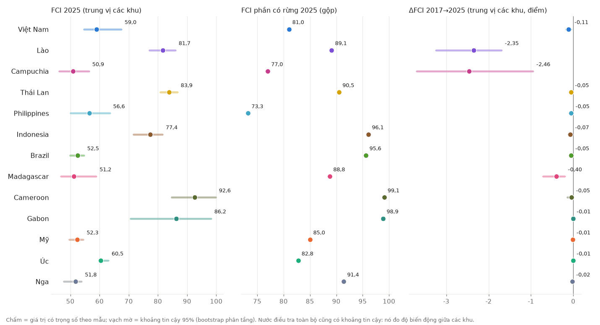
Ở 10 trong 13 nước, rừng trong khu bảo tồn gần như giữ nguyên. Một khu điển hình chỉ thay đổi từ −0,11 đến −0,01 điểm trong 8 năm, tức chưa tới một phần mười điểm trên thang 100.
Ba nước còn lại mất rừng rõ rệt và gần như ở mọi khu:
- Campuchia: khu điển hình giảm 2,46 điểm; 98% số khu bị giảm. Rừng tự nhiên trong các khu bảo tồn mất 10,8% diện tích chỉ trong 8 năm.
- Lào: khu điển hình giảm 2,35 điểm; 100% số khu bị giảm; rừng tự nhiên mất 4,6%.
- Madagascar: khu điển hình giảm 0,40 điểm; rừng tự nhiên mất 3,9%.
Ở ba nước này, rừng bị chuyển thành đất không còn rừng, và mức giảm kéo dài qua nhiều năm. Đó là dấu hiệu của phát quang hay chuyển đổi đất, không phải một tai biến tự nhiên đơn lẻ.
Cũng có nơi FCI giảm vì lý do khác. Ở Úc, phần lớn mức giảm dồn vào năm 2020, đúng sau mùa cháy rừng lớn 2019–2020: 8,5% diện tích các khu chuyển từ rừng nguyên sinh trưởng thành sang rừng nguyên sinh đang phục hồi. Rừng vẫn là rừng tự nhiên, chỉ đang hồi phục sau cháy. Nga có hiện tượng tương tự trên 4,9% diện tích.
Ngược lại, ở Cameroon, Gabon và Thái Lan, từ 99,6% đến 99,9% diện tích khu bảo tồn không đổi loại rừng trong suốt 8 năm.
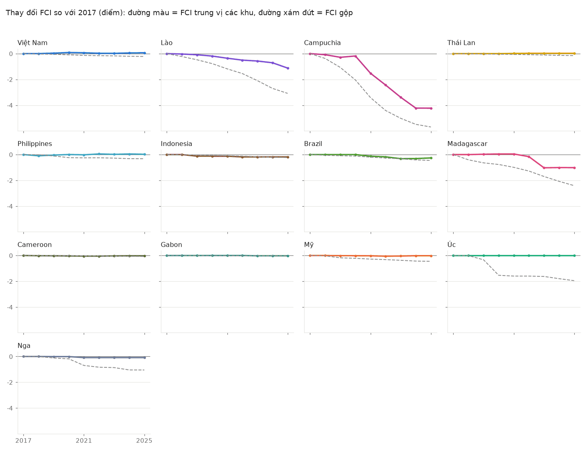
Điểm đáng chú ý nhất là bốn nước cùng lưu vực Mê Kông. Thái Lan và Việt Nam giữ rừng trong khu bảo tồn gần như nguyên vẹn. Lào và Campuchia, ngay bên cạnh và có cùng kiểu rừng, lại mất rừng nhanh nhất trong cả 13 nước. Khác biệt này khó giải thích bằng tự nhiên. Nó gợi ý vai trò của áp lực sử dụng đất và năng lực bảo vệ, dù cần thêm bằng chứng độc lập mới có thể kết luận.
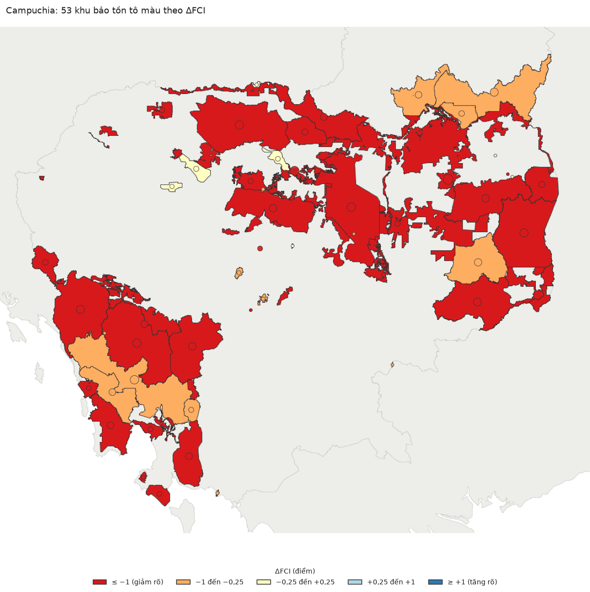
Bạn đọc muốn xem đầy đủ số liệu, bản đồ từng nước và danh sách từng khu có thể chuyển sang tab Bài chi tiết. Phương pháp và đánh giá sai số được trình bày ở tab Bài báo khoa học.
Bức tranh chung
Nếu chỉ chọn một điều để nhớ, thì đó là: phần lớn các hệ thống khu bảo tồn lớn trên thế giới, từ rừng mưa châu Phi, Amazon, rừng taiga Nga đến Đông Nam Á, đang giữ được rừng trong giai đoạn 2017–2025. Các khu bảo tồn ở Gabon và Cameroon gần như là rừng nguyên sinh nguyên vẹn. Thái Lan và Indonesia cũng giữ rừng rất tốt.
Nhưng "khoanh vùng" chưa đủ để giữ rừng. Ở Campuchia và Lào, rừng trong khu bảo tồn vẫn mất đi đều đặn, năm này qua năm khác. Một hệ thống khu bảo tồn chỉ có ý nghĩa khi được thực thi trên thực địa.
Cũng cần đọc thứ hạng giữa các nước "ổn định" một cách thận trọng. Chênh lệch giữa họ chỉ vài phần trăm điểm FCI, nhỏ hơn sai số có thể có của một bộ dữ liệu thử nghiệm. Kết luận chắc chắn nhất là ranh giới giữa nhóm giữ được rừng và nhóm mất rừng.
Việt Nam: giữ được rừng, nhưng rừng chưa "già"
Việt Nam nằm trong nhóm ổn định. Trong 116 khu bảo tồn được phân tích (toàn bộ các khu đủ điều kiện), rừng chiếm 89% diện tích và hầu như không giảm: khu điển hình thay đổi −0,11 điểm trong 8 năm. Về xu hướng, Việt Nam tốt hơn rõ rệt so với Lào, Campuchia và Madagascar. Việt Nam kém hơn một chút so với Thái Lan, Brazil, Gabon, Mỹ, Úc và Nga, nhưng chênh lệch lớn nhất chỉ 0,11 điểm, không đáng kể trên thực địa.
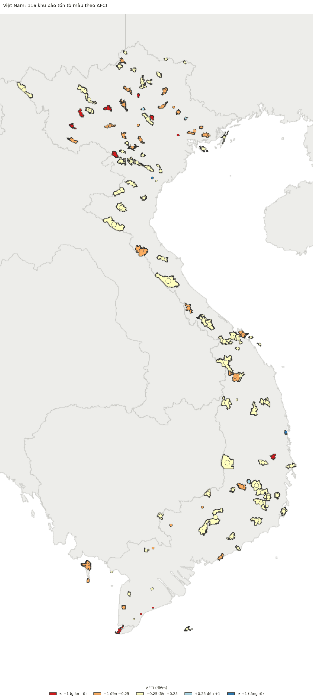
Điểm yếu của Việt Nam nằm ở chất lượng rừng. Nếu chỉ chấm điểm phần có rừng, khu bảo tồn Việt Nam đạt 81,0, thuộc nhóm thấp, chỉ trên Campuchia và Philippines. Con số này ở Gabon là 98,9, ở Thái Lan 90,5. Nguyên nhân là khoảng 31% diện tích các khu của Việt Nam là rừng tái sinh tự nhiên, cùng một phần rừng trồng và cây công nghiệp. Đó là dấu vết của nhiều thập kỷ khai thác và chiến tranh trước khi các khu được bảo vệ, không phải mất rừng trong giai đoạn nghiên cứu.
Từ đó có thể rút ra vài gợi ý chính sách, với điều kiện các kết quả này được kiểm chứng thêm trên thực địa:
- Ưu tiên để rừng tái sinh lớn lên. Rừng tái sinh là "vốn" lớn nhất của khu bảo tồn Việt Nam. Nếu được bảo vệ đủ lâu, đây chính là rừng nguyên sinh của vài chục năm tới. Duy trì xu hướng ổn định hiện nay quan trọng không kém việc mở rộng diện tích bảo vệ.
- Theo dõi chất lượng, không chỉ diện tích. Chỉ tiêu "độ che phủ rừng" không phân biệt được rừng tự nhiên với rừng trồng. Các bộ dữ liệu như ForTy có thể bổ sung cho kiểm kê rừng quốc gia, để theo dõi cả chất lượng rừng trong khu bảo tồn, sau khi đã được kiểm định cho điều kiện Việt Nam.
- Nhìn sang láng giềng. Rừng trong khu bảo tồn của Lào và Campuchia đang mất nhanh. Khu bảo tồn liền kề biên giới và các vấn đề như buôn bán gỗ, động vật hoang dã xuyên biên giới khiến hợp tác khu vực trở thành một phần của bảo tồn trong nước.
Các gợi ý trên dựa vào một bộ dữ liệu thử nghiệm và chưa xét các yếu tố như áp lực dân số hay ngân sách quản lý. Chúng nên được xem là câu hỏi cho các nghiên cứu và đánh giá tiếp theo, không phải kết luận cuối cùng.
Tóm tắt kết quả
Dữ liệu và chỉ số. Nghiên cứu dùng bản đồ loại rừng ForTy V2 Beta: bản đồ toàn cầu ở độ phân giải 10 m, cho từng năm 2017–2025, phân loại mặt đất thành rừng nguyên sinh (trưởng thành hoặc đang phục hồi), rừng tái sinh tự nhiên, rừng trồng, rừng trồng thâm canh, cây công nghiệp và nông lâm kết hợp, và đất khác. Tình trạng rừng của mỗi khu bảo tồn được tóm thành chỉ số FCI (0–100), là điểm trung bình của mọi pixel theo mức độ tự nhiên của lớp phủ: 100 khi toàn khu là rừng nguyên sinh trưởng thành, 0 khi không có rừng. ΔFCI = FCI 2025 − FCI 2017; giá trị âm là mất hoặc suy thoái rừng. 1.748 khu được phân tích, đại diện cho 12.419 khu bảo tồn quốc gia, trên cạn, có rừng của 13 nước.
Thế giới. 10 trong 13 nước gần như giữ nguyên tình trạng rừng trong khu bảo tồn: ΔFCI trung vị từ −0,11 đến −0,01 điểm. Ba nước suy giảm rõ: Campuchia (−2,46 điểm, rừng tự nhiên thay đổi ròng −10,8%), Lào (−2,35 điểm, −4,6%) và Madagascar (−0,40 điểm, −3,9%). Xét FCI toàn khu năm 2025, Cameroon (92,6), Gabon (86,2) và Thái Lan (83,9) đứng đầu. Xét riêng phần có rừng, rừng tự nhiên nhất ở Cameroon (99,1), Gabon (98,9) và Indonesia (96,1).
Việt Nam (116 khu, điều tra toàn bộ): FCI 2025 trung vị 59,0, FCI phần có rừng 81,0, ΔFCI trung vị −0,11 điểm (KTC 95% −0,17 đến −0,05). Việt Nam thuộc nhóm ổn định, tốt hơn có ý nghĩa thống kê so với Lào, Campuchia và Madagascar, kém hơn so với Thái Lan, Brazil, Gabon, Mỹ, Úc và Nga, nhưng chênh lệch với nhóm sau lớn nhất chỉ 0,11 điểm. Điểm yếu của Việt Nam là chất lượng phần rừng: tỷ lệ rừng tái sinh và rừng trồng cao.
Dữ liệu và phương pháp
Bản đồ loại rừng ForTy
ForTy (Forest Typology) phiên bản 1 là bản đồ toàn cầu năm 2020 ở độ phân giải 10 m, công bố trên Scientific Data (Neumann và cộng sự, 2026). Bản đồ xếp mọi pixel vào sáu lớp theo định nghĩa của FAO và EUDR, dự đoán bằng mô hình học sâu (Swin Transformer) từ embedding vệ tinh AlphaEarth Foundations, vốn tổng hợp Sentinel-1, Sentinel-2, Landsat và các nguồn khác thành một vectơ cho mỗi pixel mỗi năm. Kiểm định độc lập trên 8.190 điểm do chuyên gia giải đoán cho độ chính xác tổng thể 90,2% với sáu lớp, 94,8% với rừng tự nhiên / không tự nhiên và 95,5% với rừng / không rừng. Nghiên cứu này dùng bản V2 Beta trên Google Earth Engine (projects/nature-trace/assets/forest_typology/v2_beta/<năm>): bảy lớp (rừng nguyên sinh tách thành trưởng thành và đang phục hồi), mỗi năm 2017–2025, lớp của pixel là lớp có xác suất cao nhất.
Chọn nước
13 nước được chọn theo hai trục khách quan: vùng địa sinh học (Indo-Malaya, Australasia, Neotropic, Afrotropic, Nearctic, Palearctic) và nhóm thu nhập của Ngân hàng Thế giới, cộng với các láng giềng chung vùng sinh thái với Việt Nam (Lào, Campuchia, Thái Lan). Trong mỗi ô, nước có nhiều khu bảo tồn có rừng lớn nhất được chọn. Mỹ và Úc được giữ cố định từ đợt so sánh trước; Gabon và Cameroon đại diện châu Phi rừng ẩm.
Tổng thể khu bảo tồn
Từ WDPA (WCMC/WDPA/current/polygons): DESIG_TYPE = National, trạng thái Designated/Inscribed, bỏ khu thuần biển, phần đất ≥ 1 km². Các bản ghi cùng SITE_ID được gộp thành một khu, bản ghi lặp cùng SITE_PID chỉ tính một lần. Chỉ giữ khu do nhà nước quản lý hoặc đồng quản lý (GOV_TYPE; bỏ khu tư nhân, bản địa, cộng đồng). Khu được coi là có rừng khi rừng ForTy 2017 chiếm ≥ 10% diện tích và ≥ 50% diện tích nằm trong biome rừng của RESOLVE Ecoregions 2017.
Số khu mỗi nước
Nước có ≤ 200 khu đủ điều kiện được điều tra toàn bộ. Nước nhiều khu hơn được rút ngẫu nhiên phân tầng theo diện tích đất (4 tầng: 1–10, 10–100, 100–1.000 và ≥ 1.000 km²), phân bổ theo tỷ lệ số khu, mỗi tầng ít nhất 2 khu: Indonesia 150, Úc 150, Brazil 250, Nga 250, Mỹ 300 khu. Cỡ mẫu được chọn bằng mô phỏng để sai số 95% của chỉ tiêu trung bình theo khu khoảng ±3 điểm. Mỗi khu mang trọng số W = số khu của tầng / số khu rút từ tầng (W = 1 khi điều tra toàn bộ); mọi chỉ tiêu cấp nước đều tính theo W. Số khu rút / số khu đủ điều kiện:
| Nước | 1–10 km² | 10–100 km² | 100–1.000 km² | ≥ 1.000 km² | Tổng | Khu tính bằng mẫu điểm |
|---|---|---|---|---|---|---|
| Việt Nam | 6 / 6 | 40 / 40 | 68 / 68 | 2 / 2 | 116 / 116 | 0 |
| Lào | – | – | 8 / 8 | 19 / 19 | 27 / 27 | 27 |
| Campuchia | 9 / 9 | 7 / 7 | 16 / 16 | 21 / 21 | 53 / 53 | 37 |
| Thái Lan | – | 10 / 10 | 121 / 121 | 24 / 24 | 155 / 155 | 145 |
| Philippines | 41 / 41 | 77 / 77 | 41 / 41 | 10 / 10 | 169 / 169 | 51 |
| Indonesia | 36 / 96 | 55 / 140 | 42 / 112 | 17 / 42 | 150 / 390 | 60 |
| Brazil | 82 / 363 | 73 / 332 | 50 / 225 | 45 / 204 | 250 / 1.124 | 96 |
| Madagascar | 15 / 15 | 20 / 20 | 35 / 35 | 14 / 14 | 84 / 84 | 49 |
| Cameroon | – | 5 / 5 | 7 / 7 | 8 / 8 | 20 / 20 | 15 |
| Gabon | – | 7 / 7 | 6 / 6 | 11 / 11 | 24 / 24 | 17 |
| Mỹ | 174 / 3.115 | 97 / 1.742 | 24 / 420 | 5 / 73 | 300 / 5.350 | 29 |
| Úc | 80 / 962 | 51 / 623 | 16 / 178 | 3 / 23 | 150 / 1.786 | 23 |
| Nga | 122 / 1.530 | 67 / 848 | 44 / 547 | 17 / 196 | 250 / 3.121 | 61 |
Diện tích các lớp trong mỗi khu
Khu có polygon < 100 km²: đếm toàn bộ pixel ForTy (frequencyHistogram, hệ UTM của khu, 10 m). Khu lớn hơn: rút ngẫu nhiên 5.000 điểm trong polygon, đọc lớp của từng điểm ở 10 m cho cả 9 năm (cùng một bộ điểm), mỗi điểm đại diện cho diện tích khu / 5.000. 610 khu được tính bằng mẫu điểm. Sai số FCI của một khu do lấy mẫu điểm tối đa ±1,4 điểm (95%). Thử trên 8 khu Việt Nam 150–1.200 km², FCI 2025 lệch tối đa 0,77 điểm và ΔFCI lệch tối đa 0,11 điểm so với đếm toàn bộ. Việt Nam dùng kết quả đếm toàn bộ pixel cho cả 116 khu.
Chỉ số FCI
FCI(t) = 100 × Σ w(c) · A(c, t) / Σ A(c, t), trong đó A(c, t) là diện tích lớp c năm t và w(c) là trọng số của lớp. ΔFCI = FCI 2025 − FCI 2017.
| Lớp | Trọng số w |
|---|---|
| Rừng nguyên sinh – trưởng thành | 1,0 |
| Rừng nguyên sinh – đang phục hồi | 0,8 |
| Rừng tái sinh tự nhiên | 0,6 |
| Rừng trồng (luân kỳ > 40 năm) | 0,3 |
| Rừng trồng thâm canh (luân kỳ ≤ 40 năm) | 0,2 |
| Cây công nghiệp và nông lâm kết hợp | 0,1 |
| Đất khác (không phải rừng) | 0,0 |
Khu được kết luận suy giảm hoặc phục hồi khi |ΔFCI| ≥ 1 điểm và kiểm định Mann–Kendall trên chuỗi 9 năm có p < 0,05; còn lại là ổn định / không rõ.
So sánh giữa các nước
Trung vị các khu là trung vị có trọng số W (mỗi khu đủ điều kiện một phiếu). Gộp coi mọi khu đủ điều kiện của một nước là một vùng (diện tích từng lớp × W). ΔFCI so với FCI 2017 chỉ tính cho khu có FCI 2017 ≥ 5. Khoảng tin cậy 95% và kiểm định từng cặp nước dùng bootstrap phân tầng (2.000 lần, rút lại các khu trong từng tầng, giữ trọng số); p hai phía bằng hai lần tỷ lệ lần rút mà chênh lệch đổi dấu. Xếp hạng theo công thức: điểm trạng thái = trung bình FCI 2025 trung vị và FCI phần có rừng; điểm xu hướng = trung bình hạng của 4 chỉ tiêu xu hướng; điểm chung = trung bình hạng trạng thái và điểm xu hướng.
Tính bất định. ForTy V2 Beta là dữ liệu thử nghiệm. Độ chính xác công bố là của bản 2020, chưa kiểm định cho chuỗi thời gian hay cho từng nước. Ở hầu hết các nước ΔFCI trung vị chỉ vài phần trăm điểm, cùng cỡ với nhiễu phân loại giữa các năm. Trọng số FCI là giả định. So sánh chưa điều chỉnh theo sinh cảnh, độ cao, áp lực dân số hay tuổi khu, nên không phải đánh giá hiệu quả quản lý của từng nước.
Kết quả
Trạng thái và xu hướng của mỗi nước
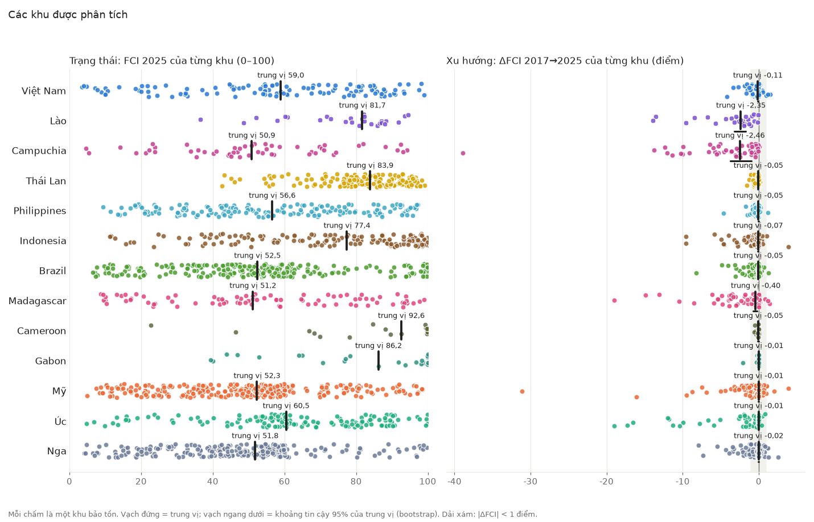
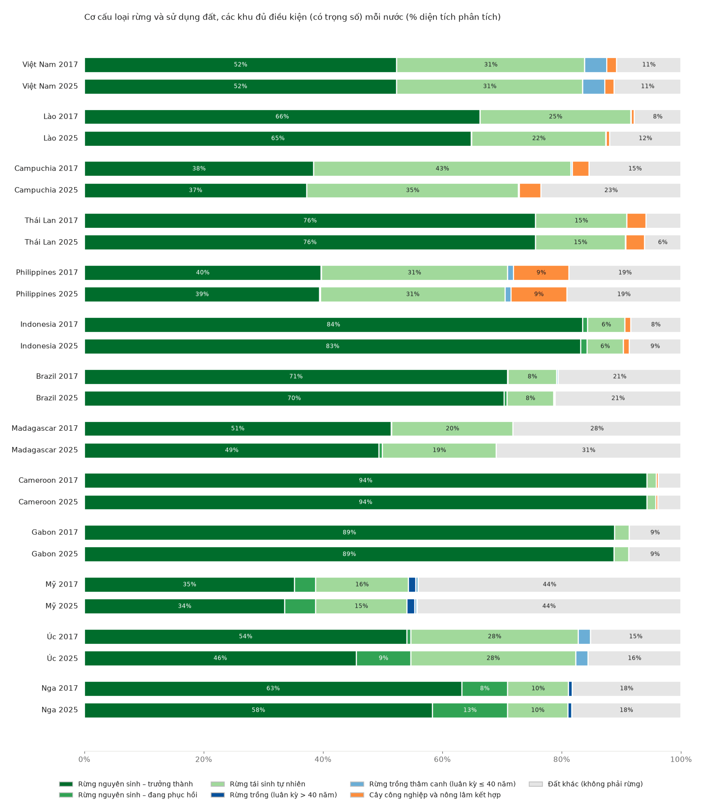
Bảng chỉ tiêu
| Chỉ tiêu | Việt Nam | Lào | Campuchia | Thái Lan | Philippines | Indonesia | Brazil | Madagascar | Cameroon | Gabon | Mỹ | Úc | Nga |
|---|---|---|---|---|---|---|---|---|---|---|---|---|---|
| Khu phân tích / khu đủ điều kiện | 116 / 116 | 27 / 27 | 53 / 53 | 155 / 155 | 169 / 169 | 150 / 390 | 250 / 1.124 | 84 / 84 | 20 / 20 | 24 / 24 | 300 / 5.350 | 150 / 1.786 | 250 / 3.121 |
| Diện tích đất các khu đủ điều kiện (km², ước tính) | 24.043 | 45.983 | 68.815 | 92.436 | 43.388 | 223.969 | 1.487.110 | 50.792 | 23.395 | 37.422 | 473.961 | 107.003 | 911.335 |
| Tỷ lệ rừng & cây 2025 (gộp) | 88,8% | 88,1% | 76,6% | 93,9% | 80,9% | 91,4% | 78,9% | 69,1% | 96,1% | 91,3% | 55,8% | 84,4% | 81,7% |
| FCI 2025 trung vị (KTC 95%) | 59,0 (54,6–67,5) | 81,7 (77,1–86,0) | 50,9 (46,1–56,4) | 83,9 (80,8–86,7) | 56,6 (50,1–63,5) | 77,4 (71,6–81,5) | 52,5 (49,9–54,6) | 51,2 (46,8–58,9) | 92,6 (84,7–99,8) | 86,2 (70,6–98,2) | 52,3 (49,6–54,4) | 60,5 (59,8–63,0) | 51,8 (47,8–53,8) |
| FCI phần có rừng 2025 (gộp) | 81,0 | 89,1 | 77,0 | 90,5 | 73,3 | 96,1 | 95,6 | 88,8 | 99,1 | 98,9 | 85,0 | 82,8 | 91,4 |
| FCI gộp 2017 → 2025 | 72,18 → 71,96 | 81,58 → 78,50 | 64,65 → 58,96 | 85,15 → 85,00 | 59,57 → 59,25 | 88,04 → 87,81 | 75,95 → 75,49 | 63,71 → 61,31 | 95,28 → 95,21 | 90,34 → 90,31 | 47,85 → 47,40 | 71,84 → 69,89 | 75,73 → 74,69 |
| ΔFCI trung vị (KTC 95%) | -0,115 (-0,175 đến -0,052) | -2,348 (-3,244 đến -1,696) | -2,460 (-3,698 đến -0,951) | -0,048 (-0,070 đến -0,038) | -0,054 (-0,068 đến -0,026) | -0,072 (-0,124 đến -0,037) | -0,050 (-0,068 đến -0,032) | -0,404 (-0,721 đến -0,204) | -0,046 (-0,144 đến -0,014) | -0,006 (-0,020 đến 0,000) | -0,010 (-0,031 đến -0,003) | -0,005 (-0,020 đến 0,000) | -0,020 (-0,045 đến -0,011) |
| ΔFCI trung bình | -0,301 | -3,638 | -4,256 | -0,138 | -0,180 | -0,522 | -0,275 | -1,886 | -0,123 | -0,117 | -0,479 | -1,050 | -0,316 |
| ΔFCI gộp | -0,221 | -3,081 | -5,686 | -0,152 | -0,322 | -0,232 | -0,453 | -2,408 | -0,072 | -0,030 | -0,449 | -1,948 | -1,046 |
| ΔFCI so với FCI 2017 (trung vị) | -0,18% | -3,23% | -4,12% | -0,06% | -0,07% | -0,09% | -0,09% | -0,77% | -0,05% | -0,01% | -0,02% | -0,01% | -0,05% |
| % khu có ΔFCI âm | 78% | 100% | 98% | 87% | 79% | 78% | 70% | 83% | 70% | 54% | 59% | 56% | 63% |
| % khu suy giảm rõ (trong mẫu: số khu) | 9,5% (11) | 81,5% (22) | 58,5% (31) | 2,6% (4) | 2,4% (4) | 9,4% (14) | 6,4% (16) | 33,3% (28) | 0,0% (0) | 4,2% (1) | 8,3% (25) | 10,9% (17) | 7,1% (18) |
| Thay đổi ròng rừng tự nhiên (gộp) | -0,38% | -4,58% | -10,84% | -0,23% | -0,58% | -0,28% | -0,61% | -3,91% | -0,11% | -0,03% | -0,36% | -0,49% | -0,12% |
| Diện tích đổi lớp 2017→2025 (trung vị) | 1,0% | 4,6% | 4,5% | 0,2% | 0,3% | 0,5% | 0,2% | 1,5% | 0,1% | 0,0% | 0,1% | 0,0% | 0,2% |
Việt Nam so với từng nước
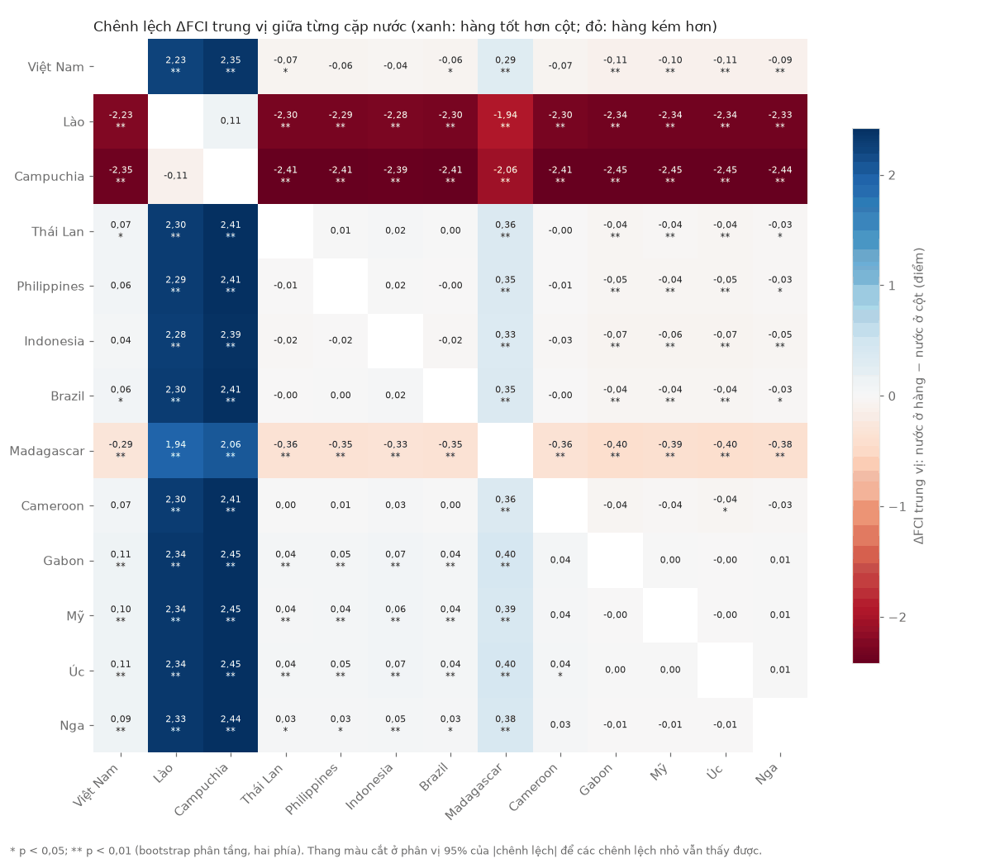
| Cặp nước (A – B) | ΔFCI trung vị A | ΔFCI trung vị B | Chênh A − B | KTC 95% của chênh | p |
|---|---|---|---|---|---|
| Việt Nam – Lào | -0,115 | -2,348 | +2,233 | +1,573 đến +3,102 | 0,001 |
| Việt Nam – Campuchia | -0,115 | -2,460 | +2,345 | +0,867 đến +3,583 | 0,001 |
| Việt Nam – Thái Lan | -0,115 | -0,048 | -0,067 | -0,125 đến -0,003 | 0,036 |
| Việt Nam – Philippines | -0,115 | -0,054 | -0,061 | -0,124 đến +0,002 | 0,056 |
| Việt Nam – Indonesia | -0,115 | -0,072 | -0,043 | -0,111 đến +0,046 | 0,377 |
| Việt Nam – Brazil | -0,115 | -0,050 | -0,064 | -0,127 đến -0,007 | 0,026 |
| Việt Nam – Madagascar | -0,115 | -0,404 | +0,289 | +0,081 đến +0,645 | 0,003 |
| Việt Nam – Cameroon | -0,115 | -0,046 | -0,069 | -0,141 đến +0,011 | 0,079 |
| Việt Nam – Gabon | -0,115 | -0,006 | -0,109 | -0,167 đến -0,046 | 0,001 |
| Việt Nam – Mỹ | -0,115 | -0,010 | -0,104 | -0,163 đến -0,040 | 0,001 |
| Việt Nam – Úc | -0,115 | -0,005 | -0,109 | -0,167 đến -0,046 | 0,001 |
| Việt Nam – Nga | -0,115 | -0,020 | -0,095 | -0,154 đến -0,032 | 0,002 |
Tất cả 78 cặp nước
| Cặp nước (A – B) | ΔFCI trung vị A | ΔFCI trung vị B | Chênh A − B | KTC 95% của chênh | p |
|---|---|---|---|---|---|
| Việt Nam – Lào | -0,115 | -2,348 | +2,233 | +1,573 đến +3,102 | 0,001 |
| Việt Nam – Campuchia | -0,115 | -2,460 | +2,345 | +0,867 đến +3,583 | 0,001 |
| Việt Nam – Thái Lan | -0,115 | -0,048 | -0,067 | -0,125 đến -0,003 | 0,036 |
| Việt Nam – Philippines | -0,115 | -0,054 | -0,061 | -0,124 đến +0,002 | 0,056 |
| Việt Nam – Indonesia | -0,115 | -0,072 | -0,043 | -0,111 đến +0,046 | 0,377 |
| Việt Nam – Brazil | -0,115 | -0,050 | -0,064 | -0,127 đến -0,007 | 0,026 |
| Việt Nam – Madagascar | -0,115 | -0,404 | +0,289 | +0,081 đến +0,645 | 0,003 |
| Việt Nam – Cameroon | -0,115 | -0,046 | -0,069 | -0,141 đến +0,011 | 0,079 |
| Việt Nam – Gabon | -0,115 | -0,006 | -0,109 | -0,167 đến -0,046 | 0,001 |
| Việt Nam – Mỹ | -0,115 | -0,010 | -0,104 | -0,163 đến -0,040 | 0,001 |
| Việt Nam – Úc | -0,115 | -0,005 | -0,109 | -0,167 đến -0,046 | 0,001 |
| Việt Nam – Nga | -0,115 | -0,020 | -0,095 | -0,154 đến -0,032 | 0,002 |
| Lào – Campuchia | -2,348 | -2,460 | +0,112 | -1,680 đến +1,689 | 0,789 |
| Lào – Thái Lan | -2,348 | -0,048 | -2,300 | -3,184 đến -1,644 | 0,001 |
| Lào – Philippines | -2,348 | -0,054 | -2,294 | -3,182 đến -1,639 | 0,001 |
| Lào – Indonesia | -2,348 | -0,072 | -2,276 | -3,145 đến -1,616 | 0,001 |
| Lào – Brazil | -2,348 | -0,050 | -2,298 | -3,188 đến -1,639 | 0,001 |
| Lào – Madagascar | -2,348 | -0,404 | -1,944 | -2,706 đến -1,078 | 0,001 |
| Lào – Cameroon | -2,348 | -0,046 | -2,302 | -3,188 đến -1,650 | 0,001 |
| Lào – Gabon | -2,348 | -0,006 | -2,342 | -3,225 đến -1,688 | 0,001 |
| Lào – Mỹ | -2,348 | -0,010 | -2,338 | -3,228 đến -1,685 | 0,001 |
| Lào – Úc | -2,348 | -0,005 | -2,343 | -3,232 đến -1,689 | 0,001 |
| Lào – Nga | -2,348 | -0,020 | -2,328 | -3,218 đến -1,671 | 0,001 |
| Campuchia – Thái Lan | -2,460 | -0,048 | -2,412 | -3,648 đến -0,934 | 0,001 |
| Campuchia – Philippines | -2,460 | -0,054 | -2,406 | -3,641 đến -0,923 | 0,001 |
| Campuchia – Indonesia | -2,460 | -0,072 | -2,388 | -3,619 đến -0,902 | 0,001 |
| Campuchia – Brazil | -2,460 | -0,050 | -2,410 | -3,643 đến -0,927 | 0,001 |
| Campuchia – Madagascar | -2,460 | -0,404 | -2,056 | -3,334 đến -0,454 | 0,001 |
| Campuchia – Cameroon | -2,460 | -0,046 | -2,414 | -3,646 đến -0,930 | 0,001 |
| Campuchia – Gabon | -2,460 | -0,006 | -2,454 | -3,690 đến -0,974 | 0,001 |
| Campuchia – Mỹ | -2,460 | -0,010 | -2,450 | -3,686 đến -0,971 | 0,001 |
| Campuchia – Úc | -2,460 | -0,005 | -2,455 | -3,691 đến -0,976 | 0,001 |
| Campuchia – Nga | -2,460 | -0,020 | -2,440 | -3,674 đến -0,962 | 0,001 |
| Thái Lan – Philippines | -0,048 | -0,054 | +0,006 | -0,026 đến +0,026 | 0,836 |
| Thái Lan – Indonesia | -0,048 | -0,072 | +0,024 | -0,014 đến +0,082 | 0,247 |
| Thái Lan – Brazil | -0,048 | -0,050 | +0,002 | -0,028 đến +0,022 | 0,984 |
| Thái Lan – Madagascar | -0,048 | -0,404 | +0,356 | +0,156 đến +0,680 | 0,001 |
| Thái Lan – Cameroon | -0,048 | -0,046 | -0,002 | -0,046 đến +0,092 | 0,761 |
| Thái Lan – Gabon | -0,048 | -0,006 | -0,042 | -0,063 đến -0,022 | 0,002 |
| Thái Lan – Mỹ | -0,048 | -0,010 | -0,038 | -0,059 đến -0,017 | 0,003 |
| Thái Lan – Úc | -0,048 | -0,005 | -0,043 | -0,064 đến -0,024 | 0,001 |
| Thái Lan – Nga | -0,048 | -0,020 | -0,028 | -0,050 đến -0,011 | 0,015 |
| Philippines – Indonesia | -0,054 | -0,072 | +0,018 | -0,016 đến +0,085 | 0,412 |
| Philippines – Brazil | -0,054 | -0,050 | -0,004 | -0,030 đến +0,028 | 0,818 |
| Philippines – Madagascar | -0,054 | -0,404 | +0,350 | +0,150 đến +0,682 | 0,001 |
| Philippines – Cameroon | -0,054 | -0,046 | -0,008 | -0,047 đến +0,086 | 0,588 |
| Philippines – Gabon | -0,054 | -0,006 | -0,048 | -0,065 đến -0,018 | 0,002 |
| Philippines – Mỹ | -0,054 | -0,010 | -0,044 | -0,060 đến -0,014 | 0,005 |
| Philippines – Úc | -0,054 | -0,005 | -0,049 | -0,064 đến -0,019 | 0,001 |
| Philippines – Nga | -0,054 | -0,020 | -0,034 | -0,053 đến -0,004 | 0,018 |
| Indonesia – Brazil | -0,072 | -0,050 | -0,022 | -0,085 đến +0,014 | 0,278 |
| Indonesia – Madagascar | -0,072 | -0,404 | +0,332 | +0,128 đến +0,668 | 0,001 |
| Indonesia – Cameroon | -0,072 | -0,046 | -0,026 | -0,099 đến +0,045 | 0,232 |
| Indonesia – Gabon | -0,072 | -0,006 | -0,066 | -0,124 đến -0,030 | 0,002 |
| Indonesia – Mỹ | -0,072 | -0,010 | -0,062 | -0,119 đến -0,026 | 0,001 |
| Indonesia – Úc | -0,072 | -0,005 | -0,067 | -0,122 đến -0,033 | 0,002 |
| Indonesia – Nga | -0,072 | -0,020 | -0,052 | -0,111 đến -0,017 | 0,004 |
| Brazil – Madagascar | -0,050 | -0,404 | +0,354 | +0,153 đến +0,684 | 0,001 |
| Brazil – Cameroon | -0,050 | -0,046 | -0,004 | -0,044 đến +0,088 | 0,696 |
| Brazil – Gabon | -0,050 | -0,006 | -0,045 | -0,063 đến -0,016 | 0,002 |
| Brazil – Mỹ | -0,050 | -0,010 | -0,040 | -0,058 đến -0,015 | 0,003 |
| Brazil – Úc | -0,050 | -0,005 | -0,045 | -0,062 đến -0,020 | 0,002 |
| Brazil – Nga | -0,050 | -0,020 | -0,030 | -0,050 đến -0,005 | 0,017 |
| Madagascar – Cameroon | -0,404 | -0,046 | -0,358 | -0,700 đến -0,152 | 0,003 |
| Madagascar – Gabon | -0,404 | -0,006 | -0,398 | -0,720 đến -0,198 | 0,001 |
| Madagascar – Mỹ | -0,404 | -0,010 | -0,394 | -0,717 đến -0,192 | 0,001 |
| Madagascar – Úc | -0,404 | -0,005 | -0,399 | -0,720 đến -0,198 | 0,001 |
| Madagascar – Nga | -0,404 | -0,020 | -0,384 | -0,709 đến -0,184 | 0,001 |
| Cameroon – Gabon | -0,046 | -0,006 | -0,040 | -0,135 đến +0,000 | 0,069 |
| Cameroon – Mỹ | -0,046 | -0,010 | -0,036 | -0,133 đến +0,002 | 0,081 |
| Cameroon – Úc | -0,046 | -0,005 | -0,041 | -0,138 đến -0,002 | 0,038 |
| Cameroon – Nga | -0,046 | -0,020 | -0,026 | -0,120 đến +0,012 | 0,354 |
| Gabon – Mỹ | -0,006 | -0,010 | +0,005 | -0,014 đến +0,025 | 0,493 |
| Gabon – Úc | -0,006 | -0,005 | -0,000 | -0,019 đến +0,017 | 1,000 |
| Gabon – Nga | -0,006 | -0,020 | +0,014 | -0,005 đến +0,032 | 0,171 |
| Mỹ – Úc | -0,010 | -0,005 | -0,005 | -0,025 đến +0,010 | 0,475 |
| Mỹ – Nga | -0,010 | -0,020 | +0,010 | -0,011 đến +0,027 | 0,208 |
| Úc – Nga | -0,005 | -0,020 | +0,015 | -0,002 đến +0,032 | 0,095 |
Xếp hạng theo công thức
Giữ cách xếp hạng của đợt so sánh 3 nước để đối chiếu (1 = tốt nhất). Với 13 nước, điểm xu hướng (trung bình thứ hạng) phóng đại những chênh lệch rất nhỏ: các nước có ΔFCI từ −0,11 đến −0,01 điểm vẫn bị xếp cách nhau nhiều bậc. Nên đọc hình khoảng tin cậy ở trên trước bảng này.
| Nước | FCI 2025 (trung vị các khu) | FCI phần có rừng 2025 (gộp) | ΔFCI 2017→2025 (trung vị các khu) | ΔFCI so với FCI 2017 (trung vị, %) | % khu có ΔFCI âm | Thay đổi ròng rừng tự nhiên (gộp, %) | Điểm trạng thái | Hạng trạng thái | Điểm xu hướng | Điểm chung | Hạng |
|---|---|---|---|---|---|---|---|---|---|---|---|
| Gabon | 2 | 2 | 2 | 2 | 1 | 1 | 92,6 | 2 | 1,50 | 1,75 | 1 |
| Cameroon | 1 | 1 | 5 | 5 | 6 | 2 | 95,8 | 1 | 4,50 | 2,75 | 2 |
| Thái Lan | 3 | 6 | 6 | 6 | 11 | 4 | 87,2 | 3 | 6,75 | 4,88 | 3 |
| Nga | 11 | 5 | 4 | 4 | 4 | 3 | 71,6 | 7 | 3,75 | 5,38 | 4 |
| Úc | 6 | 10 | 1 | 1 | 2 | 8 | 71,6 | 8 | 3,00 | 5,50 | 5 |
| Indonesia | 5 | 3 | 9 | 9 | 8 | 5 | 86,8 | 4 | 7,75 | 5,88 | 6 |
| Brazil | 9 | 4 | 7 | 8 | 5 | 10 | 74,0 | 6 | 7,50 | 6,75 | 7 |
| Mỹ | 10 | 9 | 3 | 3 | 3 | 6 | 68,7 | 11 | 3,75 | 7,38 | 8 |
| Lào | 4 | 7 | 12 | 12 | 13 | 12 | 85,4 | 5 | 12,25 | 8,62 | 9 |
| Việt Nam | 7 | 11 | 10 | 10 | 7 | 7 | 70,0 | 9 | 8,50 | 8,75 | 10 |
| Philippines | 8 | 13 | 8 | 7 | 9 | 9 | 64,9 | 12 | 8,25 | 10,12 | 11 |
| Madagascar | 12 | 8 | 11 | 11 | 10 | 11 | 70,0 | 10 | 10,75 | 10,38 | 12 |
| Campuchia | 13 | 12 | 13 | 13 | 12 | 13 | 63,9 | 13 | 12,75 | 12,88 | 13 |
Từng nước
Mỗi nước có bản đồ ΔFCI các khu, danh sách 10 khu giảm nhiều nhất và bảng tất cả các khu đã phân tích.
Việt Nam
10 khu có ΔFCI giảm nhiều nhất
| Khu bảo tồn | Loại | Đất (km²) | Trọng số W | FCI 2017 | FCI 2025 | ΔFCI | p MK | Kết luận | Rừng & cây 2025 | Rừng tự nhiên | Cách tính |
|---|---|---|---|---|---|---|---|---|---|---|---|
| Krông Trai | Nature Reserve | 136,6 | 1,0 | 32,8 | 28,6 | -4,20 | 0,000 | Suy giảm | 48% | -11,6% | toàn bộ, 10 m |
| Nam Don | Nature Reserve | 134,5 | 1,0 | 43,9 | 40,6 | -3,33 | 0,001 | Suy giảm | 68% | -7,6% | toàn bộ, 10 m |
| Ấp Canh Điền | Nature Reserve | 4,1 | 1,0 | 16,5 | 13,8 | -2,72 | 0,004 | Suy giảm | 23% | -16,5% | toàn bộ, 10 m |
| Mũi Cà Mau | National Park | 124,3 | 1,0 | 23,6 | 21,7 | -1,86 | 0,000 | Suy giảm | 29% | -9,6% | toàn bộ, 10 m |
| Khu Bảo vệ cảnh quan Kim Bình | Cultural and Historical Site | 41,2 | 1,0 | 34,0 | 32,4 | -1,61 | 0,002 | Suy giảm | 68% | -4,8% | toàn bộ, 10 m |
| Copia | Nature Reserve | 103,2 | 1,0 | 46,2 | 44,6 | -1,54 | 0,001 | Suy giảm | 76% | -3,5% | toàn bộ, 10 m |
| Nà Hẩu | Nature Reserve | 173,6 | 1,0 | 62,9 | 61,4 | -1,50 | 0,009 | Suy giảm | 81% | -3,3% | toàn bộ, 10 m |
| Vườn chim Bạc Liêu | Nature Reserve | 1,4 | 1,0 | 49,8 | 48,5 | -1,26 | 0,004 | Suy giảm | 81% | -2,5% | toàn bộ, 10 m |
| Côn Sơn-Kiếp Bạc | Cultural and Historical Site | 16,8 | 1,0 | 9,0 | 7,8 | -1,13 | 0,000 | Suy giảm | 43% | – | toàn bộ, 10 m |
| Xuân Nha | Nature Reserve | 185,6 | 1,0 | 56,7 | 55,6 | -1,09 | 0,000 | Suy giảm | 80% | -2,2% | toàn bộ, 10 m |
Tất cả 116 khu đã phân tích (xếp theo diện tích)
| Khu bảo tồn | Loại | Đất (km²) | Trọng số W | FCI 2017 | FCI 2025 | ΔFCI | p MK | Kết luận | Rừng & cây 2025 | Rừng tự nhiên | Cách tính |
|---|---|---|---|---|---|---|---|---|---|---|---|
| Phong Nha-Kẻ Bàng | National Park | 1.216,1 | 1,0 | 97,5 | 97,5 | -0,03 | 0,029 | Ổn định / không rõ | 100% | -0,0% | toàn bộ, 10 m |
| Yok Don | National Park | 1.063,8 | 1,0 | 57,8 | 57,7 | -0,05 | 0,000 | Ổn định / không rõ | 93% | -0,1% | toàn bộ, 10 m |
| Pù Mát | National Park | 971,0 | 1,0 | 98,9 | 98,9 | -0,01 | 0,000 | Ổn định / không rõ | 100% | -0,0% | toàn bộ, 10 m |
| Sông Thanh | Nature Reserve | 885,5 | 1,0 | 92,4 | 92,2 | -0,24 | 0,001 | Ổn định / không rõ | 98% | -0,3% | toàn bộ, 10 m |
| Cát Tiên | National Park | 698,6 | 1,0 | 78,6 | 78,6 | -0,02 | 0,029 | Ổn định / không rõ | 96% | -0,0% | toàn bộ, 10 m |
| Chư Yang Sin | National Park | 602,9 | 1,0 | 80,9 | 80,8 | -0,04 | 0,076 | Ổn định / không rõ | 99% | -0,0% | toàn bộ, 10 m |
| Văn hóa Đồng Nai | Nature Reserve | 590,9 | 1,0 | 81,0 | 81,0 | -0,02 | 0,175 | Ổn định / không rõ | 97% | +0,1% | toàn bộ, 10 m |
| Vũ Quang | National Park | 588,5 | 1,0 | 93,6 | 93,2 | -0,41 | 0,076 | Ổn định / không rõ | 97% | -0,7% | toàn bộ, 10 m |
| Chư Mom Ray | National Park | 526,5 | 1,0 | 84,7 | 84,8 | +0,03 | 0,005 | Ổn định / không rõ | 97% | +0,1% | toàn bộ, 10 m |
| Bidoup-Núi Bà | National Park | 522,8 | 1,0 | 76,5 | 76,5 | +0,04 | 0,000 | Ổn định / không rõ | 98% | +0,0% | toàn bộ, 10 m |
| Rung Thong Da Lat; Lam Bien | Cultural and Historical Site | 512,9 | 1,0 | 23,9 | 23,9 | -0,05 | 0,009 | Ổn định / không rõ | 65% | +0,0% | toàn bộ, 10 m |
| Ngọc Linh (Kon Tum) | Nature Reserve | 507,3 | 1,0 | 81,6 | 81,3 | -0,33 | 0,048 | Ổn định / không rõ | 90% | -0,5% | toàn bộ, 10 m |
| Mường Nhé | Nature Reserve | 477,7 | 1,0 | 72,4 | 72,4 | -0,00 | 0,348 | Ổn định / không rõ | 84% | +0,0% | toàn bộ, 10 m |
| Kalon Song Mao | Nature Reserve | 427,6 | 1,0 | 54,0 | 54,0 | -0,01 | 0,754 | Ổn định / không rõ | 90% | -0,1% | toàn bộ, 10 m |
| Kon Ka Kinh | National Park | 420,1 | 1,0 | 87,7 | 87,6 | -0,12 | 0,348 | Ổn định / không rõ | 96% | -0,2% | toàn bộ, 10 m |
| Pù Huống | Nature Reserve | 420,0 | 1,0 | 88,0 | 88,1 | +0,05 | 0,009 | Ổn định / không rõ | 99% | +0,1% | toàn bộ, 10 m |
| Phong Điền | Nature Reserve | 405,5 | 1,0 | 89,3 | 89,4 | +0,01 | 0,917 | Ổn định / không rõ | 99% | +0,1% | toàn bộ, 10 m |
| Đăkrông | Nature Reserve | 385,1 | 1,0 | 85,7 | 85,8 | +0,05 | 0,251 | Ổn định / không rõ | 98% | +0,1% | toàn bộ, 10 m |
| Khu Bảo tồn loài Sao La Thừa Thiên Huế | Nature Reserve | 375,7 | 1,0 | 90,9 | 90,8 | -0,05 | 0,754 | Ổn định / không rõ | 98% | -0,1% | toàn bộ, 10 m |
| Bạch Mã | National Park | 373,4 | 1,0 | 90,5 | 90,5 | +0,00 | 0,076 | Ổn định / không rõ | 98% | +0,0% | toàn bộ, 10 m |
| Pù Hoạt | Nature Reserve | 351,7 | 1,0 | 85,1 | 85,1 | +0,01 | 0,118 | Ổn định / không rõ | 95% | +0,0% | toàn bộ, 10 m |
| Tam Đảo | National Park | 305,9 | 1,0 | 71,0 | 70,9 | -0,12 | 0,000 | Ổn định / không rõ | 97% | -0,1% | toàn bộ, 10 m |
| Phú Quốc | National Park | 298,4 | 1,0 | 74,4 | 73,6 | -0,87 | 0,000 | Ổn định / không rõ | 86% | -1,6% | toàn bộ, 10 m |
| Hoàng Liên | National Park | 296,8 | 1,0 | 78,4 | 78,4 | -0,07 | 0,000 | Ổn định / không rõ | 91% | -0,1% | toàn bộ, 10 m |
| Phú Quốc | Marine Protected Area | 289,1 | 1,0 | 55,4 | 54,5 | -0,89 | 0,000 | Ổn định / không rõ | 62% | -2,1% | toàn bộ, 10 m |
| Nam Ka | Nature Reserve | 280,2 | 1,0 | 46,6 | 45,9 | -0,79 | 0,000 | Ổn định / không rõ | 81% | -1,8% | toàn bộ, 10 m |
| Bà Nà-Núi Chúa | Nature Reserve | 267,4 | 1,0 | 84,5 | 84,4 | -0,12 | 0,048 | Ổn định / không rõ | 96% | -0,1% | toàn bộ, 10 m |
| Ea Sô | Nature Reserve | 266,4 | 1,0 | 57,8 | 57,9 | +0,11 | 0,002 | Ổn định / không rõ | 88% | +0,1% | toàn bộ, 10 m |
| Xuân Liên | Nature Reserve | 256,5 | 1,0 | 78,1 | 78,1 | -0,01 | 0,175 | Ổn định / không rõ | 90% | -0,0% | toàn bộ, 10 m |
| Bù Gia Mập | National Park | 246,7 | 1,0 | 94,7 | 94,5 | -0,23 | 0,029 | Ổn định / không rõ | 100% | -0,2% | toàn bộ, 10 m |
| An Toàn | Nature Reserve | 246,6 | 1,0 | 91,1 | 90,9 | -0,16 | 0,048 | Ổn định / không rõ | 98% | -0,3% | toàn bộ, 10 m |
| Núi Ông | Nature Reserve | 242,2 | 1,0 | 82,7 | 82,7 | -0,00 | 0,175 | Ổn định / không rõ | 99% | -0,0% | toàn bộ, 10 m |
| Núi Chúa | National Park | 241,1 | 1,0 | 53,3 | 53,2 | -0,08 | 0,348 | Ổn định / không rõ | 81% | -0,2% | toàn bộ, 10 m |
| Pù Hu | Nature Reserve | 240,0 | 1,0 | 80,4 | 80,3 | -0,11 | 0,001 | Ổn định / không rõ | 99% | -0,1% | toàn bộ, 10 m |
| Na Hang | Nature Reserve | 239,0 | 1,0 | 77,5 | 77,3 | -0,15 | 0,001 | Ổn định / không rõ | 94% | -0,3% | toàn bộ, 10 m |
| Kẻ Gỗ | Nature Reserve | 238,4 | 1,0 | 69,6 | 69,6 | -0,05 | 0,754 | Ổn định / không rõ | 95% | -0,3% | toàn bộ, 10 m |
| Bắc Hướng Hóa | Nature Reserve | 233,7 | 1,0 | 87,7 | 87,1 | -0,67 | 0,076 | Ổn định / không rõ | 98% | -0,8% | toàn bộ, 10 m |
| Hai Van-Hon Son Tra | Marine Protected Area | 225,1 | 1,0 | 37,6 | 37,1 | -0,53 | 0,048 | Ổn định / không rõ | 57% | -1,0% | toàn bộ, 10 m |
| Cúc Phương | National Park | 223,5 | 1,0 | 79,9 | 79,9 | +0,05 | 0,048 | Ổn định / không rõ | 96% | +0,0% | toàn bộ, 10 m |
| Hoàng Liên-Văn Bàn | Nature Reserve | 219,0 | 1,0 | 88,0 | 87,9 | -0,04 | 0,001 | Ổn định / không rõ | 94% | -0,1% | toàn bộ, 10 m |
| Vườn quốc gia Phước Bình | National Park | 209,2 | 1,0 | 74,1 | 74,1 | +0,00 | 0,348 | Ổn định / không rõ | 93% | +0,0% | toàn bộ, 10 m |
| Khu Bảo vệ cảnh quan Đèo Cả - Hòn Nưa | Cultural and Historical Site | 207,1 | 1,0 | 67,9 | 68,0 | +0,05 | 0,118 | Ổn định / không rõ | 88% | +0,1% | toàn bộ, 10 m |
| Hòn Bà | Nature Reserve | 197,0 | 1,0 | 87,8 | 87,6 | -0,17 | 0,009 | Ổn định / không rõ | 98% | -0,1% | toàn bộ, 10 m |
| Ngọc Linh (Quang Nam) | Nature Reserve | 191,4 | 1,0 | 85,2 | 85,3 | +0,03 | 0,048 | Ổn định / không rõ | 97% | +0,1% | toàn bộ, 10 m |
| Chế Tạo | Nature Reserve | 190,0 | 1,0 | 81,6 | 81,6 | +0,01 | 0,175 | Ổn định / không rõ | 96% | +0,0% | toàn bộ, 10 m |
| Xuân Nha | Nature Reserve | 185,6 | 1,0 | 56,7 | 55,6 | -1,09 | 0,000 | Suy giảm | 80% | -2,2% | toàn bộ, 10 m |
| Nà Hẩu | Nature Reserve | 173,6 | 1,0 | 62,9 | 61,4 | -1,50 | 0,009 | Suy giảm | 81% | -3,3% | toàn bộ, 10 m |
| Pù Luông | Nature Reserve | 171,4 | 1,0 | 81,2 | 81,2 | +0,01 | 0,175 | Ổn định / không rõ | 96% | +0,0% | toàn bộ, 10 m |
| Đồng Sơn-Kỳ Thượng | Nature Reserve | 170,5 | 1,0 | 61,8 | 60,9 | -0,91 | 0,029 | Ổn định / không rõ | 93% | -0,6% | toàn bộ, 10 m |
| Sốp Cộp | Nature Reserve | 168,0 | 1,0 | 57,2 | 56,6 | -0,66 | 0,000 | Ổn định / không rõ | 82% | -1,3% | toàn bộ, 10 m |
| Lò Gò-Xa Mát | National Park | 165,9 | 1,0 | 68,1 | 67,9 | -0,23 | 0,002 | Ổn định / không rõ | 93% | +0,0% | toàn bộ, 10 m |
| Khu Bảo tồn thiên nhiên Sơn Ngổ Luông | Nature Reserve | 165,5 | 1,0 | 60,5 | 60,5 | -0,03 | 0,466 | Ổn định / không rõ | 83% | -0,1% | toàn bộ, 10 m |
| Thac Ba | Cultural and Historical Site | 160,7 | 1,0 | 10,2 | 9,8 | -0,40 | 0,048 | Ổn định / không rõ | 30% | -4,0% | toàn bộ, 10 m |
| Cham Chu | Nature Reserve | 155,4 | 1,0 | 81,0 | 80,8 | -0,28 | 0,348 | Ổn định / không rõ | 94% | -0,7% | toàn bộ, 10 m |
| Khu Bảo tồn thiên nhiên Tây Yên Tử | Nature Reserve | 152,8 | 1,0 | 61,5 | 60,7 | -0,84 | 0,002 | Ổn định / không rõ | 90% | -0,8% | toàn bộ, 10 m |
| Kim Hỷ | Nature Reserve | 150,9 | 1,0 | 79,5 | 79,2 | -0,30 | 0,000 | Ổn định / không rõ | 94% | -0,5% | toàn bộ, 10 m |
| Tây Côn Lĩnh | Nature Reserve | 149,6 | 1,0 | 84,9 | 84,8 | -0,10 | 0,000 | Ổn định / không rõ | 94% | -0,1% | toàn bộ, 10 m |
| Tà Xùa | Nature Reserve | 142,7 | 1,0 | 74,6 | 74,1 | -0,49 | 0,000 | Ổn định / không rõ | 86% | -1,0% | toàn bộ, 10 m |
| Bến En | National Park | 141,1 | 1,0 | 44,6 | 44,8 | +0,15 | 0,029 | Ổn định / không rõ | 77% | -0,1% | toàn bộ, 10 m |
| Nui Pia Oac | Nature Reserve | 138,7 | 1,0 | 54,8 | 54,6 | -0,17 | 0,001 | Ổn định / không rõ | 79% | -0,4% | toàn bộ, 10 m |
| Kon Chư Răng | Nature Reserve | 137,7 | 1,0 | 93,4 | 93,4 | -0,00 | 0,001 | Ổn định / không rõ | 100% | -0,0% | toàn bộ, 10 m |
| Krông Trai | Nature Reserve | 136,6 | 1,0 | 32,8 | 28,6 | -4,20 | 0,000 | Suy giảm | 48% | -11,6% | toàn bộ, 10 m |
| Thần Sa - Phượng Hoàng | Nature Reserve | 135,9 | 1,0 | 66,7 | 66,5 | -0,25 | 0,029 | Ổn định / không rõ | 90% | -0,5% | toàn bộ, 10 m |
| Nam Don | Nature Reserve | 134,5 | 1,0 | 43,9 | 40,6 | -3,33 | 0,001 | Suy giảm | 68% | -7,6% | toàn bộ, 10 m |
| Mũi Cà Mau | National Park | 124,3 | 1,0 | 23,6 | 21,7 | -1,86 | 0,000 | Suy giảm | 29% | -9,6% | toàn bộ, 10 m |
| Xuân Sơn | National Park | 120,6 | 1,0 | 68,0 | 67,5 | -0,55 | 0,348 | Ổn định / không rõ | 88% | -1,1% | toàn bộ, 10 m |
| Nam Nung | Nature Reserve | 119,4 | 1,0 | 87,1 | 87,1 | -0,00 | 0,466 | Ổn định / không rõ | 100% | -0,0% | toàn bộ, 10 m |
| Vườn quốc gia Ba Vì | National Park | 119,0 | 1,0 | 46,4 | 46,1 | -0,36 | 0,602 | Ổn định / không rõ | 82% | -0,4% | toàn bộ, 10 m |
| Bình Châu Phước Bửu | Nature Reserve | 117,5 | 1,0 | 45,6 | 45,3 | -0,27 | 0,175 | Ổn định / không rõ | 72% | -0,6% | toàn bộ, 10 m |
| Copia | Nature Reserve | 103,2 | 1,0 | 46,2 | 44,6 | -1,54 | 0,001 | Suy giảm | 76% | -3,5% | toàn bộ, 10 m |
| Vườn quốc gia Ba Bể | National Park | 99,4 | 1,0 | 63,5 | 63,4 | -0,14 | 0,001 | Ổn định / không rõ | 86% | -0,3% | toàn bộ, 10 m |
| Hồ Lắk | Cultural and Historical Site | 97,5 | 1,0 | 18,9 | 19,3 | +0,49 | 0,000 | Ổn định / không rõ | 59% | +4,3% | toàn bộ, 10 m |
| Nam Hải Vân | Cultural and Historical Site | 96,9 | 1,0 | 57,4 | 56,5 | -0,89 | 0,048 | Ổn định / không rõ | 86% | -1,5% | toàn bộ, 10 m |
| Hữu Liên | Nature Reserve | 96,8 | 1,0 | 55,0 | 54,6 | -0,45 | 0,029 | Ổn định / không rõ | 87% | -1,2% | toàn bộ, 10 m |
| Cát Bà | National Park | 94,1 | 1,0 | 45,7 | 45,7 | -0,06 | 0,602 | Ổn định / không rõ | 73% | -0,1% | toàn bộ, 10 m |
| U Minh Hạ | National Park | 93,0 | 1,0 | 22,4 | 22,1 | -0,31 | 0,001 | Ổn định / không rõ | 72% | -4,7% | toàn bộ, 10 m |
| Núi Cốc | Cultural and Historical Site | 89,8 | 1,0 | 11,0 | 10,0 | -1,03 | 0,029 | Suy giảm | 37% | -8,4% | toàn bộ, 10 m |
| Bắc Mê | Nature Reserve | 86,7 | 1,0 | 72,3 | 72,1 | -0,21 | 0,016 | Ổn định / không rõ | 91% | -0,4% | toàn bộ, 10 m |
| Phong Quang | Nature Reserve | 83,7 | 1,0 | 54,9 | 54,6 | -0,34 | 0,001 | Ổn định / không rõ | 82% | -0,7% | toàn bộ, 10 m |
| Tà Kóu | Nature Reserve | 83,0 | 1,0 | 49,9 | 49,8 | -0,07 | 0,000 | Ổn định / không rõ | 85% | -0,1% | toàn bộ, 10 m |
| U Minh Thượng | National Park | 81,6 | 1,0 | 7,1 | 7,1 | -0,02 | 0,076 | Ổn định / không rõ | 13% | -0,5% | toàn bộ, 10 m |
| Dao Ho Song Da | Cultural and Historical Site | 78,5 | 1,0 | 39,1 | 38,3 | -0,80 | 0,076 | Ổn định / không rõ | 65% | -2,1% | toàn bộ, 10 m |
| Tràm Chim | National Park | 74,7 | 1,0 | 4,6 | 4,7 | +0,09 | 0,076 | Ổn định / không rõ | 22% | -2,1% | toàn bộ, 10 m |
| Hoa Lư | Cultural and Historical Site | 65,5 | 1,0 | 31,0 | 31,0 | -0,07 | 0,000 | Ổn định / không rõ | 49% | -0,2% | toàn bộ, 10 m |
| Núi Thành | Cultural and Historical Site | 63,8 | 1,0 | 20,2 | 20,1 | -0,02 | 0,466 | Ổn định / không rõ | 51% | -0,0% | toàn bộ, 10 m |
| Hang Kia - Pà Cò | Nature Reserve | 63,4 | 1,0 | 33,1 | 33,0 | -0,11 | 0,001 | Ổn định / không rõ | 54% | -0,3% | toàn bộ, 10 m |
| Thượng Tiến | Nature Reserve | 62,8 | 1,0 | 83,9 | 83,9 | -0,00 | 0,251 | Ổn định / không rõ | 98% | -0,1% | toàn bộ, 10 m |
| Côn Đảo | National Park | 62,0 | 1,0 | 54,6 | 54,5 | -0,15 | 0,001 | Ổn định / không rõ | 73% | -0,3% | toàn bộ, 10 m |
| Phu Canh | Nature Reserve | 58,9 | 1,0 | 70,0 | 69,8 | -0,22 | 0,466 | Ổn định / không rõ | 89% | -0,4% | toàn bộ, 10 m |
| Bái Tử Long | National Park | 57,2 | 1,0 | 51,9 | 51,7 | -0,20 | 0,602 | Ổn định / không rõ | 79% | -0,3% | toàn bộ, 10 m |
| Bát Đại Sơn | Nature Reserve | 51,9 | 1,0 | 65,5 | 65,3 | -0,22 | 0,005 | Ổn định / không rõ | 89% | -0,4% | toàn bộ, 10 m |
| Quy Hoa-Ghềnh Ráng | Cultural and Historical Site | 51,8 | 1,0 | 30,8 | 32,3 | +1,52 | 0,009 | Phục hồi | 74% | +5,3% | toàn bộ, 10 m |
| Deo Ngoau Muc | Nature Reserve | 50,7 | 1,0 | 20,1 | 20,0 | -0,16 | 0,048 | Ổn định / không rõ | 64% | -0,4% | toàn bộ, 10 m |
| Pắc Bó | Cultural and Historical Site | 49,5 | 1,0 | 46,3 | 46,2 | -0,05 | 0,754 | Ổn định / không rõ | 79% | -0,1% | toàn bộ, 10 m |
| Khu Bảo vệ cảnh quan Kim Bình | Cultural and Historical Site | 41,2 | 1,0 | 34,0 | 32,4 | -1,61 | 0,002 | Suy giảm | 68% | -4,8% | toàn bộ, 10 m |
| Bán đảo Sơn Trà | Nature Reserve | 38,1 | 1,0 | 58,9 | 59,0 | +0,07 | 0,251 | Ổn định / không rõ | 96% | +0,1% | toàn bộ, 10 m |
| Tân Trào | Cultural and Historical Site | 37,1 | 1,0 | 23,5 | 24,5 | +0,99 | 0,466 | Ổn định / không rõ | 59% | -0,1% | toàn bộ, 10 m |
| Núi Bà Đen | Cultural and Historical Site | 36,8 | 1,0 | 18,9 | 18,4 | -0,53 | 0,000 | Ổn định / không rõ | 64% | -2,2% | toàn bộ, 10 m |
| Vân Long | Nature Reserve | 33,6 | 1,0 | 21,9 | 21,9 | -0,02 | 0,466 | Ổn định / không rõ | 39% | +0,1% | toàn bộ, 10 m |
| Đền Hùng | Cultural and Historical Site | 28,6 | 1,0 | 4,0 | 3,5 | -0,47 | 0,001 | Ổn định / không rõ | 20% | 0,0% | toàn bộ, 10 m |
| Trùng Khánh | Nature Reserve | 28,4 | 1,0 | 47,3 | 47,3 | -0,08 | 0,029 | Ổn định / không rõ | 73% | -0,1% | toàn bộ, 10 m |
| Lung Ngọc Hoàng | Nature Reserve | 27,3 | 1,0 | 10,7 | 10,6 | -0,11 | 0,602 | Ổn định / không rõ | 54% | +0,9% | toàn bộ, 10 m |
| Núi Bà Rá | Cultural and Historical Site | 18,6 | 1,0 | 27,2 | 26,8 | -0,33 | 0,000 | Ổn định / không rõ | 86% | -0,0% | toàn bộ, 10 m |
| Bắc Sơn | Nature Reserve | 18,1 | 1,0 | 33,0 | 32,7 | -0,35 | 0,754 | Ổn định / không rõ | 57% | -1,1% | toàn bộ, 10 m |
| Láng Sen | Nature Reserve | 18,1 | 1,0 | 4,2 | 3,9 | -0,30 | 0,754 | Ổn định / không rõ | 12% | +9,2% | toàn bộ, 10 m |
| Cam Son | Cultural and Historical Site | 17,0 | 1,0 | 8,4 | 8,9 | +0,51 | 0,002 | Ổn định / không rõ | 32% | +0,3% | toàn bộ, 10 m |
| Côn Sơn-Kiếp Bạc | Cultural and Historical Site | 16,8 | 1,0 | 9,0 | 7,8 | -1,13 | 0,000 | Suy giảm | 43% | – | toàn bộ, 10 m |
| Ngoc Trao | Cultural and Historical Site | 16,7 | 1,0 | 8,8 | 10,0 | +1,24 | 0,118 | Ổn định / không rõ | 51% | 0,0% | toàn bộ, 10 m |
| Nam Xuân Lạc | Nature Reserve | 16,2 | 1,0 | 98,2 | 98,2 | +0,00 | 0,602 | Ổn định / không rõ | 99% | +0,0% | toàn bộ, 10 m |
| Cù Lao Chàm | Cultural and Historical Site | 15,2 | 1,0 | 53,9 | 54,0 | +0,02 | 0,602 | Ổn định / không rõ | 83% | +0,0% | toàn bộ, 10 m |
| Hòn Chông | Cultural and Historical Site | 8,4 | 1,0 | 59,8 | 59,8 | -0,03 | 0,002 | Ổn định / không rõ | 100% | -0,0% | toàn bộ, 10 m |
| Đăk Uy | Nature Reserve | 6,1 | 1,0 | 57,8 | 57,6 | -0,18 | 0,007 | Ổn định / không rõ | 93% | 0,0% | toàn bộ, 10 m |
| Sến Tam Quy | Nature Reserve | 5,3 | 1,0 | 41,2 | 41,2 | -0,02 | 0,251 | Ổn định / không rõ | 98% | 0,0% | toàn bộ, 10 m |
| Ấp Canh Điền | Nature Reserve | 4,1 | 1,0 | 16,5 | 13,8 | -2,72 | 0,004 | Suy giảm | 23% | -16,5% | toàn bộ, 10 m |
| Vườn chim Bạc Liêu | Nature Reserve | 1,4 | 1,0 | 49,8 | 48,5 | -1,26 | 0,004 | Suy giảm | 81% | -2,5% | toàn bộ, 10 m |
| Sân chim Đầm Dơi | Nature Reserve | 1,2 | 1,0 | 56,0 | 56,0 | 0,00 | 1,000 | Ổn định / không rõ | 93% | 0,0% | toàn bộ, 10 m |
Lào
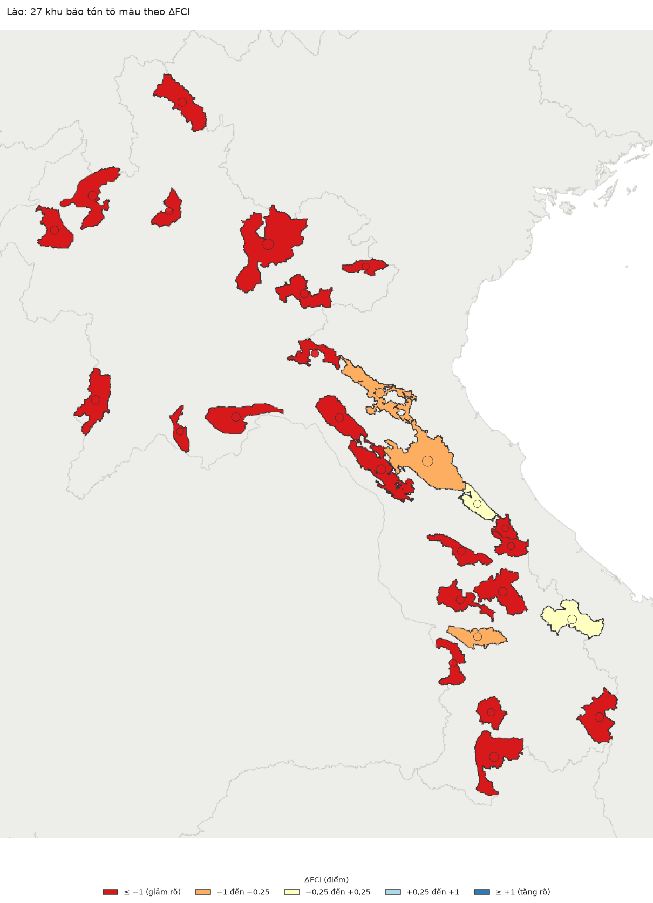
10 khu có ΔFCI giảm nhiều nhất
| Khu bảo tồn | Loại | Đất (km²) | Trọng số W | FCI 2017 | FCI 2025 | ΔFCI | p MK | Kết luận | Rừng & cây 2025 | Rừng tự nhiên | Cách tính |
|---|---|---|---|---|---|---|---|---|---|---|---|
| Phou Pha Nang | National Protected Area | 678,7 | 1,0 | 71,8 | 57,9 | -13,91 | 0,000 | Suy giảm | 80% | -23,0% | 5.000 điểm |
| Dong Hua Sao | National Park | 998,4 | 1,0 | 73,7 | 60,2 | -13,53 | 0,000 | Suy giảm | 77% | -18,9% | 5.000 điểm |
| Phou sabot Poung Chong | National Protected Area | 1.490,8 | 1,0 | 58,2 | 48,6 | -9,60 | 0,000 | Suy giảm | 67% | -19,0% | 5.000 điểm |
| Phou Hi Phi | National Protected Area | 877,3 | 1,0 | 60,5 | 52,1 | -8,43 | 0,000 | Suy giảm | 70% | -16,1% | 5.000 điểm |
| Dong Phou Vieng | National Protected Area | 2.048,6 | 1,0 | 67,6 | 60,8 | -6,76 | 0,001 | Suy giảm | 77% | -11,0% | 5.000 điểm |
| Nam Kading | National Protected Area | 1.687,1 | 1,0 | 92,2 | 86,5 | -5,65 | 0,000 | Suy giảm | 90% | -6,4% | 5.000 điểm |
| Yod nam mo - Phou Samsoum | National Protected Area | 989,2 | 1,0 | 77,3 | 72,9 | -4,37 | 0,000 | Suy giảm | 85% | -6,8% | 5.000 điểm |
| Xe Pian | National Park | 2.563,2 | 1,0 | 82,1 | 78,5 | -3,59 | 0,000 | Suy giảm | 90% | -4,3% | 5.000 điểm |
| Phou Khao Khuay | National Park | 1.910,2 | 1,0 | 82,0 | 78,7 | -3,24 | 0,000 | Suy giảm | 89% | -4,1% | 5.000 điểm |
| Phou Xang Hae | National Protected Area | 1.151,1 | 1,0 | 85,3 | 82,3 | -2,96 | 0,000 | Suy giảm | 90% | -4,3% | 5.000 điểm |
Tất cả 27 khu đã phân tích (xếp theo diện tích)
| Khu bảo tồn | Loại | Đất (km²) | Trọng số W | FCI 2017 | FCI 2025 | ΔFCI | p MK | Kết luận | Rừng & cây 2025 | Rừng tự nhiên | Cách tính |
|---|---|---|---|---|---|---|---|---|---|---|---|
| Nam Et-Phouloey | National Park | 4.803,2 | 1,0 | 79,7 | 77,1 | -2,58 | 0,000 | Suy giảm | 89% | -4,2% | 5.000 điểm |
| Nakai-Nam Teun | National Park | 4.211,5 | 1,0 | 89,0 | 88,4 | -0,59 | 0,001 | Ổn định / không rõ | 91% | -0,7% | 5.000 điểm |
| Xe Pian | National Park | 2.563,2 | 1,0 | 82,1 | 78,5 | -3,59 | 0,000 | Suy giảm | 90% | -4,3% | 5.000 điểm |
| Phou Hin Poun | National Park | 2.390,1 | 1,0 | 89,0 | 87,0 | -2,05 | 0,000 | Suy giảm | 91% | -3,0% | 5.000 điểm |
| Nam Ha | National Protected Area | 2.203,0 | 1,0 | 84,5 | 81,7 | -2,79 | 0,001 | Suy giảm | 92% | -4,1% | 5.000 điểm |
| Nam Mouan - Phou Chomvoy | National Park | 2.175,7 | 1,0 | 94,5 | 93,6 | -0,89 | 0,002 | Ổn định / không rõ | 98% | -1,0% | 5.000 điểm |
| Dong Phou Vieng | National Protected Area | 2.048,6 | 1,0 | 67,6 | 60,8 | -6,76 | 0,001 | Suy giảm | 77% | -11,0% | 5.000 điểm |
| Xe Xap | National Park | 2.022,1 | 1,0 | 91,9 | 91,8 | -0,17 | 0,251 | Ổn định / không rõ | 97% | -0,2% | 5.000 điểm |
| Dong Ampham | National Protected Area | 1.960,6 | 1,0 | 84,9 | 82,3 | -2,63 | 0,000 | Suy giảm | 90% | -3,4% | 5.000 điểm |
| Phou Khao Khuay | National Park | 1.910,2 | 1,0 | 82,0 | 78,7 | -3,24 | 0,000 | Suy giảm | 89% | -4,1% | 5.000 điểm |
| Nam Poui | National Protected Area | 1.880,4 | 1,0 | 87,0 | 86,0 | -1,04 | 0,001 | Suy giảm | 91% | -1,8% | 5.000 điểm |
| Phou Daen Din | National Protected Area | 1.820,7 | 1,0 | 86,1 | 84,3 | -1,88 | 0,000 | Suy giảm | 92% | -2,6% | 5.000 điểm |
| Nam Kading | National Protected Area | 1.687,1 | 1,0 | 92,2 | 86,5 | -5,65 | 0,000 | Suy giảm | 90% | -6,4% | 5.000 điểm |
| Phou sabot Poung Chong | National Protected Area | 1.490,8 | 1,0 | 58,2 | 48,6 | -9,60 | 0,000 | Suy giảm | 67% | -19,0% | 5.000 điểm |
| Nam Kan | National Protected Area | 1.448,8 | 1,0 | 89,2 | 87,0 | -2,20 | 0,000 | Suy giảm | 94% | -3,0% | 5.000 điểm |
| Eld' Deer Sanctuary | National Protected Area | 1.308,4 | 1,0 | 38,0 | 36,6 | -1,40 | 0,000 | Suy giảm | 56% | -3,8% | 5.000 điểm |
| Xe Bang Nouan | National Protected Area | 1.298,1 | 1,0 | 82,8 | 82,1 | -0,70 | 0,001 | Ổn định / không rõ | 94% | -0,9% | 5.000 điểm |
| Phou Xang Hae | National Protected Area | 1.151,1 | 1,0 | 85,3 | 82,3 | -2,96 | 0,000 | Suy giảm | 90% | -4,3% | 5.000 điểm |
| Phou Xieng Thong | National Protected Area | 1.060,9 | 1,0 | 73,5 | 71,8 | -1,70 | 0,000 | Suy giảm | 86% | -2,6% | 5.000 điểm |
| Dong Hua Sao | National Park | 998,4 | 1,0 | 73,7 | 60,2 | -13,53 | 0,000 | Suy giảm | 77% | -18,9% | 5.000 điểm |
| Yod nam mo - Phou Samsoum | National Protected Area | 989,2 | 1,0 | 77,3 | 72,9 | -4,37 | 0,000 | Suy giảm | 85% | -6,8% | 5.000 điểm |
| Hin Nam No | National Park | 931,9 | 1,0 | 94,5 | 94,4 | -0,06 | 0,532 | Ổn định / không rõ | 96% | -0,1% | 5.000 điểm |
| Phou Hi Phi | National Protected Area | 877,3 | 1,0 | 60,5 | 52,1 | -8,43 | 0,000 | Suy giảm | 70% | -16,1% | 5.000 điểm |
| Laving Lavern | National Protected Area | 843,3 | 1,0 | 72,3 | 70,0 | -2,35 | 0,002 | Suy giảm | 86% | -4,2% | 5.000 điểm |
| Nam Xam | National Protected Area | 681,7 | 1,0 | 82,7 | 80,8 | -1,93 | 0,001 | Suy giảm | 95% | -3,0% | 5.000 điểm |
| Phou Pha Nang | National Protected Area | 678,7 | 1,0 | 71,8 | 57,9 | -13,91 | 0,000 | Suy giảm | 80% | -23,0% | 5.000 điểm |
| Khoun Xe Nong Ma | National Protected Area | 548,3 | 1,0 | 89,3 | 88,1 | -1,23 | 0,001 | Suy giảm | 97% | -1,8% | 5.000 điểm |
Campuchia
10 khu có ΔFCI giảm nhiều nhất
| Khu bảo tồn | Loại | Đất (km²) | Trọng số W | FCI 2017 | FCI 2025 | ΔFCI | p MK | Kết luận | Rừng & cây 2025 | Rừng tự nhiên | Cách tính |
|---|---|---|---|---|---|---|---|---|---|---|---|
| Roniem Daun Sam | Protected Landscape | 14,2 | 1,0 | 57,6 | 18,6 | -38,95 | 0,000 | Suy giảm | 31% | -67,7% | toàn bộ, 10 m |
| NorthWest Corridor | Biodiversity Corridor of Protected Area | 5.011,3 | 1,0 | 49,6 | 35,8 | -13,78 | 0,000 | Suy giảm | 57% | -29,8% | 5.000 điểm |
| Boeng Paer | Wildlife Sanctuary | 2.498,9 | 1,0 | 36,3 | 23,9 | -12,36 | 0,000 | Suy giảm | 60% | -38,2% | 5.000 điểm |
| Prek Prasab | Wildlife Sanctuary | 127,8 | 1,0 | 17,4 | 5,4 | -12,02 | 0,000 | Suy giảm | 15% | -72,3% | 5.000 điểm |
| NorthEast Corridor | Biodiversity Corridor of Protected Area | 7.577,0 | 1,0 | 61,4 | 50,0 | -11,40 | 0,000 | Suy giảm | 72% | -20,0% | 5.000 điểm |
| Sorsor Sdam Sat Tor | Multiple Use Area | 8,4 | 1,0 | 50,5 | 40,3 | -10,27 | 0,000 | Suy giảm | 67% | -20,3% | toàn bộ, 10 m |
| Phnom Namlier | Wildlife Sanctuary | 457,5 | 1,0 | 54,6 | 44,6 | -10,01 | 0,000 | Suy giảm | 75% | -16,9% | 5.000 điểm |
| Prey Lang | Wildlife Sanctuary | 4.319,7 | 1,0 | 79,6 | 69,7 | -9,91 | 0,000 | Suy giảm | 84% | -15,5% | 5.000 điểm |
| Kulen Promtep | Wildlife Sanctuary | 4.099,1 | 1,0 | 30,3 | 21,2 | -9,09 | 0,000 | Suy giảm | 43% | -31,3% | 5.000 điểm |
| Botum Sakor | National Park | 1.461,1 | 1,0 | 59,1 | 52,5 | -6,55 | 0,000 | Suy giảm | 69% | -13,1% | 5.000 điểm |
Tất cả 53 khu đã phân tích (xếp theo diện tích)
| Khu bảo tồn | Loại | Đất (km²) | Trọng số W | FCI 2017 | FCI 2025 | ΔFCI | p MK | Kết luận | Rừng & cây 2025 | Rừng tự nhiên | Cách tính |
|---|---|---|---|---|---|---|---|---|---|---|---|
| NorthEast Corridor | Biodiversity Corridor of Protected Area | 7.577,0 | 1,0 | 61,4 | 50,0 | -11,40 | 0,000 | Suy giảm | 72% | -20,0% | 5.000 điểm |
| NorthWest Corridor | Biodiversity Corridor of Protected Area | 5.011,3 | 1,0 | 49,6 | 35,8 | -13,78 | 0,000 | Suy giảm | 57% | -29,8% | 5.000 điểm |
| Prey Lang | Wildlife Sanctuary | 4.319,7 | 1,0 | 79,6 | 69,7 | -9,91 | 0,000 | Suy giảm | 84% | -15,5% | 5.000 điểm |
| Kulen Promtep | Wildlife Sanctuary | 4.099,1 | 1,0 | 30,3 | 21,2 | -9,09 | 0,000 | Suy giảm | 43% | -31,3% | 5.000 điểm |
| Southern Kravanh | National Park | 4.094,5 | 1,0 | 89,0 | 88,1 | -0,88 | 0,000 | Ổn định / không rõ | 95% | -1,0% | 5.000 điểm |
| Central Kravanh | National Park | 4.011,3 | 1,0 | 95,2 | 94,1 | -1,11 | 0,000 | Suy giảm | 96% | -1,4% | 5.000 điểm |
| Sre Pok | Wildlife Sanctuary | 3.726,4 | 1,0 | 59,5 | 57,1 | -2,45 | 0,000 | Suy giảm | 85% | -4,7% | 5.000 điểm |
| Virajay | National Park | 3.340,7 | 1,0 | 93,2 | 92,5 | -0,72 | 0,002 | Ổn định / không rõ | 99% | -0,7% | 5.000 điểm |
| Phnom Somkos | Wildlife Sanctuary | 3.295,5 | 1,0 | 72,0 | 67,5 | -4,56 | 0,000 | Suy giảm | 76% | -8,5% | 5.000 điểm |
| Kaev Seima | Wildlife Sanctuary | 2.926,3 | 1,0 | 59,2 | 53,9 | -5,31 | 0,000 | Suy giảm | 74% | -10,8% | 5.000 điểm |
| Phnom Aoral | Wildlife Sanctuary | 2.543,1 | 1,0 | 57,7 | 56,4 | -1,31 | 0,000 | Suy giảm | 69% | -2,9% | 5.000 điểm |
| Lumphat | Wildlife Sanctuary | 2.524,5 | 1,0 | 47,5 | 44,4 | -3,09 | 0,000 | Suy giảm | 72% | -7,3% | 5.000 điểm |
| Boeng Paer | Wildlife Sanctuary | 2.498,9 | 1,0 | 36,3 | 23,9 | -12,36 | 0,000 | Suy giảm | 60% | -38,2% | 5.000 điểm |
| Phnom Prech | Wildlife Sanctuary | 2.190,2 | 1,0 | 74,8 | 73,8 | -0,98 | 0,001 | Ổn định / không rõ | 95% | -1,6% | 5.000 điểm |
| Chhaeb | Wildlife Sanctuary | 1.901,7 | 1,0 | 52,7 | 46,9 | -5,75 | 0,000 | Suy giảm | 69% | -12,1% | 5.000 điểm |
| Cardamom Corridor | Biodiversity Corridor of Protected Area | 1.695,0 | 1,0 | 72,3 | 66,8 | -5,51 | 0,000 | Suy giảm | 82% | -9,1% | 5.000 điểm |
| Preah Monivong "Bokor" | National Park | 1.545,4 | 1,0 | 82,8 | 80,6 | -2,20 | 0,001 | Suy giảm | 90% | -3,0% | 5.000 điểm |
| Botum Sakor | National Park | 1.461,1 | 1,0 | 59,1 | 52,5 | -6,55 | 0,000 | Suy giảm | 69% | -13,1% | 5.000 điểm |
| Ta Tai | Wildlife Sanctuary | 1.430,9 | 1,0 | 82,9 | 82,0 | -0,94 | 0,000 | Ổn định / không rõ | 92% | -1,4% | 5.000 điểm |
| Siem Pang | Wildlife Sanctuary | 1.336,2 | 1,0 | 70,8 | 70,3 | -0,42 | 0,000 | Ổn định / không rõ | 93% | -0,6% | 5.000 điểm |
| Ou Ya Dav | National Park | 1.011,2 | 1,0 | 52,1 | 46,1 | -5,94 | 0,000 | Suy giảm | 80% | -11,9% | 5.000 điểm |
| Preah Roka | Wildlife Sanctuary | 904,3 | 1,0 | 73,7 | 71,0 | -2,71 | 0,000 | Suy giảm | 93% | -3,8% | 5.000 điểm |
| Samlout | Multiple Use Area | 609,7 | 1,0 | 70,5 | 68,6 | -1,86 | 0,001 | Suy giảm | 83% | -3,7% | 5.000 điểm |
| Veun Sai-Siem Pang | National Park | 574,7 | 1,0 | 93,6 | 93,1 | -0,41 | 0,002 | Ổn định / không rõ | 98% | -0,6% | 5.000 điểm |
| Sambour | Wildlife Sanctuary | 501,2 | 1,0 | 39,2 | 32,8 | -6,44 | 0,000 | Suy giảm | 56% | -16,7% | 5.000 điểm |
| Phnom Namlier | Wildlife Sanctuary | 457,5 | 1,0 | 54,6 | 44,6 | -10,01 | 0,000 | Suy giảm | 75% | -16,9% | 5.000 điểm |
| Phnom Thnout-Phnom Pok | Wildlife Sanctuary | 421,3 | 1,0 | 56,7 | 51,6 | -5,06 | 0,000 | Suy giảm | 82% | -9,5% | 5.000 điểm |
| Preah Jayavaraman-Norodom "Phnom Kulen" | National Park | 373,9 | 1,0 | 58,5 | 58,6 | +0,12 | 0,037 | Ổn định / không rõ | 90% | +0,2% | 5.000 điểm |
| Preah Suramarit - Kossamak | National Park | 352,5 | 1,0 | 74,7 | 74,3 | -0,48 | 0,002 | Ổn định / không rõ | 92% | -0,9% | 5.000 điểm |
| North Tonle Sap | Protected Landscape | 311,8 | 1,0 | 7,5 | 4,6 | -2,89 | 0,000 | Suy giảm | 9% | -39,3% | 5.000 điểm |
| Sanghrukkhavan | Wildlife Sanctuary | 302,6 | 1,0 | 41,4 | 37,7 | -3,70 | 0,000 | Suy giảm | 63% | -9,0% | 5.000 điểm |
| Dang Peaeng | Multiple Use Area | 275,3 | 1,0 | 27,6 | 23,9 | -3,66 | 0,000 | Suy giảm | 43% | -15,0% | 5.000 điểm |
| Phnom Tbaeng | Natural Heritage Park | 246,7 | 1,0 | 91,6 | 91,5 | -0,08 | 0,007 | Ổn định / không rõ | 97% | -0,1% | 5.000 điểm |
| Peam Krasaob | Wildlife Sanctuary | 204,7 | 1,0 | 50,0 | 47,5 | -2,46 | 0,002 | Suy giảm | 62% | -6,0% | 5.000 điểm |
| Preah Sihanouk "Ream" | National Park | 195,2 | 1,0 | 26,6 | 22,2 | -4,34 | 0,602 | Ổn định / không rõ | 34% | -17,6% | 5.000 điểm |
| Angkor | Protected Landscape | 137,5 | 1,0 | 23,5 | 23,2 | -0,24 | 0,004 | Ổn định / không rõ | 35% | -1,2% | 5.000 điểm |
| Prek Prasab | Wildlife Sanctuary | 127,8 | 1,0 | 17,4 | 5,4 | -12,02 | 0,000 | Suy giảm | 15% | -72,3% | 5.000 điểm |
| Stung Sen Core Area (Ramsar Site) | Multiple Use Area | 63,6 | 1,0 | 14,4 | 14,1 | -0,29 | 0,001 | Ổn định / không rõ | 14% | -1,2% | toàn bộ, 10 m |
| Prek Toek Sab Kbal Chhay | Multiple Use Area | 55,2 | 1,0 | 37,4 | 33,9 | -3,57 | 0,001 | Suy giảm | 68% | -7,6% | toàn bộ, 10 m |
| Phnom Neang Kong Rey- Phnom Touk Meas | Multiple Use Area | 50,7 | 1,0 | 56,8 | 56,4 | -0,41 | 0,001 | Ổn định / không rõ | 90% | -0,8% | toàn bộ, 10 m |
| Preah Vihear | Protected Landscape | 32,5 | 1,0 | 71,1 | 71,1 | -0,04 | 0,175 | Ổn định / không rõ | 92% | -0,1% | toàn bộ, 10 m |
| Prasat Bakan (Preah Khan Kampong Svay) | Protected Landscape | 21,3 | 1,0 | 35,8 | 35,4 | -0,43 | 0,000 | Ổn định / không rõ | 59% | -1,2% | toàn bộ, 10 m |
| Roniem Daun Sam | Protected Landscape | 14,2 | 1,0 | 57,6 | 18,6 | -38,95 | 0,000 | Suy giảm | 31% | -67,7% | toàn bộ, 10 m |
| Kep | National Park | 11,5 | 1,0 | 55,1 | 54,7 | -0,43 | 0,016 | Ổn định / không rõ | 92% | -0,8% | toàn bộ, 10 m |
| Sorsor Sdam Sat Tor | Multiple Use Area | 8,4 | 1,0 | 50,5 | 40,3 | -10,27 | 0,000 | Suy giảm | 67% | -20,3% | toàn bộ, 10 m |
| Elettaria cardamomum Genetic Conservation | National Park | 5,1 | 1,0 | 51,2 | 50,9 | -0,36 | 0,000 | Ổn định / không rõ | 97% | -0,7% | toàn bộ, 10 m |
| Sambor Prey Kuk | Protected Landscape | 4,4 | 1,0 | 55,0 | 55,0 | -0,05 | 0,016 | Ổn định / không rõ | 92% | -0,1% | toàn bộ, 10 m |
| Phnom Krang Dey Meas | Protected Landscape | 2,9 | 1,0 | 54,2 | 48,9 | -5,31 | 0,000 | Suy giảm | 82% | -9,8% | toàn bộ, 10 m |
| Boeng Yeak Laom | Multiple Use Area | 2,3 | 1,0 | 47,6 | 47,5 | -0,12 | 0,002 | Ổn định / không rõ | 81% | -0,2% | toàn bộ, 10 m |
| Ponhea Kraek | Multiple Use Area | 2,0 | 1,0 | 46,8 | 45,8 | -0,95 | 0,602 | Ổn định / không rõ | 93% | -2,3% | toàn bộ, 10 m |
| Genetic Conservation, Pterocarpus macrocarpus, Albizia lebbeck, Xylia xylocarpa | Wildlife Sanctuary | 1,7 | 1,0 | 64,5 | 63,6 | -0,89 | 0,000 | Ổn định / không rõ | 94% | -1,6% | toàn bộ, 10 m |
| Boeng Yakaom Yakkara | Protected Landscape | 1,3 | 1,0 | 48,1 | 45,1 | -2,96 | 0,002 | Suy giảm | 77% | -6,2% | toàn bộ, 10 m |
| Boeng Lum Kud | Protected Landscape | 1,1 | 1,0 | 41,0 | 40,9 | -0,07 | 1,000 | Ổn định / không rõ | 68% | -0,2% | toàn bộ, 10 m |
Thái Lan
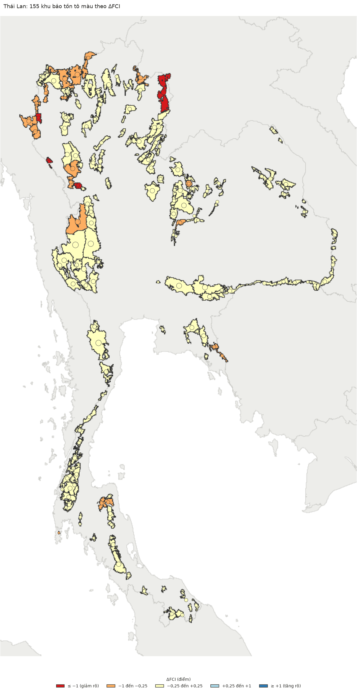
10 khu có ΔFCI giảm nhiều nhất
| Khu bảo tồn | Loại | Đất (km²) | Trọng số W | FCI 2017 | FCI 2025 | ΔFCI | p MK | Kết luận | Rừng & cây 2025 | Rừng tự nhiên | Cách tính |
|---|---|---|---|---|---|---|---|---|---|---|---|
| Mae Moei | National Park | 190,3 | 1,0 | 77,3 | 75,8 | -1,57 | 0,000 | Suy giảm | 89% | -2,7% | 5.000 điểm |
| Taksin Maharat | National Park | 255,6 | 1,0 | 79,5 | 78,2 | -1,27 | 0,000 | Suy giảm | 91% | -2,2% | 5.000 điểm |
| Mae Yom Phang Khwa | Wildlife Sanctuary | 291,9 | 1,0 | 87,1 | 86,0 | -1,06 | 0,001 | Suy giảm | 93% | -1,8% | 5.000 điểm |
| Doi Phukha | National Park | 1.900,5 | 1,0 | 79,8 | 78,7 | -1,03 | 0,009 | Suy giảm | 88% | -1,9% | 5.000 điểm |
| Namtok Mae Surin | National Park | 420,3 | 1,0 | 91,6 | 90,9 | -0,76 | 0,000 | Ổn định / không rõ | 96% | -1,2% | 5.000 điểm |
| Mae Tuen | Wildlife Sanctuary | 1.239,3 | 1,0 | 83,2 | 82,5 | -0,73 | 0,000 | Ổn định / không rõ | 92% | -1,2% | 5.000 điểm |
| Phu Kradung | National Park | 254,3 | 1,0 | 80,9 | 80,2 | -0,70 | 0,001 | Ổn định / không rõ | 86% | -0,7% | 5.000 điểm |
| Huay Nam Dang | National Park | 1.231,9 | 1,0 | 87,2 | 86,6 | -0,67 | 0,000 | Ổn định / không rõ | 94% | -1,1% | 5.000 điểm |
| Salawin | Wildlife Sanctuary | 879,6 | 1,0 | 95,2 | 94,6 | -0,61 | 0,001 | Ổn định / không rõ | 98% | -0,6% | 5.000 điểm |
| Samueng | Wildlife Sanctuary | 210,6 | 1,0 | 78,0 | 77,4 | -0,60 | 0,001 | Ổn định / không rõ | 90% | -1,1% | 5.000 điểm |
Tất cả 155 khu đã phân tích (xếp theo diện tích)
| Khu bảo tồn | Loại | Đất (km²) | Trọng số W | FCI 2017 | FCI 2025 | ΔFCI | p MK | Kết luận | Rừng & cây 2025 | Rừng tự nhiên | Cách tính |
|---|---|---|---|---|---|---|---|---|---|---|---|
| Tung Yai Naresuan | Wildlife Sanctuary | 3.694,6 | 1,0 | 96,6 | 96,5 | -0,17 | 0,004 | Ổn định / không rõ | 98% | -0,2% | 5.000 điểm |
| Kaeng Krachan | National Park and ASEAN Heritage Park | 3.030,7 | 1,0 | 94,7 | 94,6 | -0,06 | 0,009 | Ổn định / không rõ | 98% | -0,1% | 5.000 điểm |
| Huay Kha Khaeng | Wildlife Sanctuary | 2.815,0 | 1,0 | 99,2 | 99,2 | -0,04 | 0,012 | Ổn định / không rõ | 100% | -0,0% | 5.000 điểm |
| Um-Phang | Wildlife Sanctuary | 2.491,4 | 1,0 | 88,9 | 88,5 | -0,44 | 0,001 | Ổn định / không rõ | 94% | -0,7% | 5.000 điểm |
| Thap Lan | National Park | 2.216,6 | 1,0 | 77,4 | 77,4 | +0,05 | 0,466 | Ổn định / không rõ | 85% | +0,0% | 5.000 điểm |
| Khao Yai | National Park and ASEAN Heritage Park | 2.183,3 | 1,0 | 94,6 | 94,6 | -0,01 | 1,000 | Ổn định / không rõ | 98% | -0,0% | 5.000 điểm |
| Doi Phukha | National Park | 1.900,5 | 1,0 | 79,8 | 78,7 | -1,03 | 0,009 | Suy giảm | 88% | -1,9% | 5.000 điểm |
| Khaoen Si Nakarin | National Park | 1.847,3 | 1,0 | 74,8 | 74,7 | -0,12 | 0,001 | Ổn định / không rõ | 79% | -0,2% | 5.000 điểm |
| Chiang Dao | Wildlife Sanctuary | 1.663,6 | 1,0 | 79,7 | 79,5 | -0,26 | 0,000 | Ổn định / không rõ | 89% | -0,4% | 5.000 điểm |
| Phu Khiew | Wildlife Sanctuary | 1.574,5 | 1,0 | 95,1 | 94,9 | -0,21 | 0,004 | Ổn định / không rõ | 97% | -0,2% | 5.000 điểm |
| Khao Laem | National Park | 1.486,7 | 1,0 | 71,0 | 71,0 | -0,04 | 0,005 | Ổn định / không rõ | 77% | -0,1% | 5.000 điểm |
| Sri Lanna | National Park | 1.478,3 | 1,0 | 86,8 | 86,7 | -0,07 | 0,007 | Ổn định / không rõ | 95% | -0,1% | 5.000 điểm |
| Doi Luang | National Park | 1.311,3 | 1,0 | 79,6 | 79,6 | +0,01 | 0,095 | Ổn định / không rõ | 92% | +0,0% | 5.000 điểm |
| Thung Salaeng Luang | National Park | 1.268,5 | 1,0 | 80,8 | 80,8 | -0,03 | 0,029 | Ổn định / không rõ | 94% | -0,0% | 5.000 điểm |
| Khao Bantad | Wildlife Sanctuary | 1.244,1 | 1,0 | 79,8 | 79,7 | -0,10 | 0,001 | Ổn định / không rõ | 99% | -0,1% | 5.000 điểm |
| Mae Tuen | Wildlife Sanctuary | 1.239,3 | 1,0 | 83,2 | 82,5 | -0,73 | 0,000 | Ổn định / không rõ | 92% | -1,2% | 5.000 điểm |
| Thong Pha Phum | National Park | 1.231,9 | 1,0 | 95,5 | 95,4 | -0,02 | 0,251 | Ổn định / không rõ | 99% | -0,0% | 5.000 điểm |
| Huay Nam Dang | National Park | 1.231,9 | 1,0 | 87,2 | 86,6 | -0,67 | 0,000 | Ổn định / không rõ | 94% | -1,1% | 5.000 điểm |
| Om Koi | Wildlife Sanctuary | 1.204,8 | 1,0 | 85,9 | 85,6 | -0,24 | 0,002 | Ổn định / không rõ | 95% | -0,4% | 5.000 điểm |
| Lum Nam Pai | Wildlife Sanctuary | 1.201,3 | 1,0 | 80,8 | 80,6 | -0,19 | 0,000 | Ổn định / không rõ | 89% | -0,3% | 5.000 điểm |
| Mae Charim | National Park | 1.103,3 | 1,0 | 95,1 | 95,1 | -0,01 | 0,095 | Ổn định / không rõ | 98% | 0,0% | 5.000 điểm |
| Mae Ping | National Park | 1.046,0 | 1,0 | 82,3 | 82,3 | -0,00 | 0,076 | Ổn định / không rõ | 86% | 0,0% | 5.000 điểm |
| Lam Nam Nan | National Park | 1.045,5 | 1,0 | 73,5 | 73,3 | -0,16 | 0,004 | Ổn định / không rõ | 77% | -0,3% | 5.000 điểm |
| Khao Angrunai | Wildlife Sanctuary | 1.000,4 | 1,0 | 94,9 | 94,8 | -0,14 | 0,001 | Ổn định / không rõ | 99% | -0,2% | 5.000 điểm |
| Sri Nan | National Park | 997,9 | 1,0 | 92,7 | 92,7 | +0,00 | 0,048 | Ổn định / không rõ | 96% | 0,0% | 5.000 điểm |
| Klong Saeng | Wildlife Sanctuary | 978,8 | 1,0 | 87,4 | 87,4 | -0,00 | 0,175 | Ổn định / không rõ | 88% | +0,0% | 5.000 điểm |
| Salak Phra | Wildlife Sanctuary | 972,1 | 1,0 | 89,6 | 89,4 | -0,16 | 0,000 | Ổn định / không rõ | 94% | -0,3% | 5.000 điểm |
| Nam Nao | National Park | 969,8 | 1,0 | 98,3 | 98,3 | -0,04 | 0,009 | Ổn định / không rõ | 99% | -0,0% | 5.000 điểm |
| Kuiburi | National Park | 964,4 | 1,0 | 90,8 | 90,8 | -0,01 | 0,677 | Ổn định / không rõ | 98% | 0,0% | 5.000 điểm |
| Sai Yok | National Park | 947,7 | 1,0 | 96,6 | 96,6 | -0,04 | 0,022 | Ổn định / không rõ | 99% | -0,1% | 5.000 điểm |
| Phu Luang | Wildlife Sanctuary | 916,3 | 1,0 | 64,4 | 64,4 | -0,03 | 0,175 | Ổn định / không rõ | 81% | -0,0% | 5.000 điểm |
| Mae Wong | National Park | 891,1 | 1,0 | 97,3 | 97,2 | -0,04 | 0,009 | Ổn định / không rõ | 98% | -0,0% | 5.000 điểm |
| Salawin | Wildlife Sanctuary | 879,6 | 1,0 | 95,2 | 94,6 | -0,61 | 0,001 | Ổn định / không rõ | 98% | -0,6% | 5.000 điểm |
| Pang Sida | National Park | 852,7 | 1,0 | 95,2 | 95,2 | -0,00 | 0,175 | Ổn định / không rõ | 99% | -0,0% | 5.000 điểm |
| Phu Pa - Yol (Huay Huat) | National Park | 793,4 | 1,0 | 81,8 | 81,7 | -0,07 | 0,016 | Ổn định / không rõ | 95% | -0,2% | 5.000 điểm |
| Chae Son | National Park | 782,7 | 1,0 | 95,8 | 95,7 | -0,02 | 0,175 | Ổn định / không rõ | 98% | -0,0% | 5.000 điểm |
| Salawin | National Park | 741,8 | 1,0 | 97,4 | 96,9 | -0,52 | 0,000 | Ổn định / không rõ | 99% | -0,5% | 5.000 điểm |
| Klong Wang Chao | National Park | 735,0 | 1,0 | 89,4 | 89,4 | -0,02 | 0,004 | Ổn định / không rõ | 94% | -0,0% | 5.000 điểm |
| Khao Soi Dao | Wildlife Sanctuary | 733,5 | 1,0 | 79,6 | 79,6 | -0,08 | 0,001 | Ổn định / không rõ | 98% | -0,1% | 5.000 điểm |
| Phu Zang | National Park | 728,9 | 1,0 | 78,0 | 77,6 | -0,34 | 0,005 | Ổn định / không rõ | 91% | -0,7% | 5.000 điểm |
| Klong Lamngu | National Park | 710,0 | 1,0 | 90,7 | 90,6 | -0,19 | 0,001 | Ổn định / không rõ | 96% | -0,3% | 5.000 điểm |
| Khao Pu - Khao Ya | National Park | 709,2 | 1,0 | 55,9 | 55,7 | -0,19 | 0,001 | Ổn định / không rõ | 97% | -0,3% | 5.000 điểm |
| Phu Phan | National Park | 708,6 | 1,0 | 66,6 | 66,6 | -0,01 | 0,029 | Ổn định / không rõ | 84% | 0,0% | 5.000 điểm |
| Namtok Ngao | National Park | 698,1 | 1,0 | 77,3 | 77,2 | -0,07 | 0,004 | Ổn định / không rõ | 99% | -0,1% | 5.000 điểm |
| Phu Chong - Na Yoi | National Park | 689,2 | 1,0 | 94,1 | 94,1 | 0,00 | 1,000 | Ổn định / không rõ | 98% | 0,0% | 5.000 điểm |
| Ta Phraya | National Park | 688,7 | 1,0 | 77,6 | 77,6 | -0,02 | 0,917 | Ổn định / không rõ | 91% | -0,0% | 5.000 điểm |
| Oab Luang | National Park | 685,6 | 1,0 | 70,4 | 70,3 | -0,07 | 0,004 | Ổn định / không rõ | 90% | -0,1% | 5.000 điểm |
| Tham Pla - Pha Seu | National Park | 657,3 | 1,0 | 86,9 | 86,8 | -0,15 | 0,002 | Ổn định / không rõ | 94% | -0,2% | 5.000 điểm |
| Tabo-Huiyyai | Wildlife Sanctuary | 649,0 | 1,0 | 91,7 | 91,7 | -0,04 | 0,012 | Ổn định / không rõ | 98% | -0,1% | 5.000 điểm |
| Khao Sok | National Park | 640,5 | 1,0 | 78,7 | 78,7 | -0,04 | 0,002 | Ổn định / không rõ | 88% | -0,0% | 5.000 điểm |
| Sadej Naikom - Krom Luang Chumporn (North) | Wildlife Sanctuary | 614,0 | 1,0 | 54,9 | 54,8 | -0,05 | 0,004 | Ổn định / không rõ | 99% | -0,1% | 5.000 điểm |
| Doi Pamuang | Wildlife Sanctuary | 589,5 | 1,0 | 89,3 | 89,2 | -0,07 | 0,004 | Ổn định / không rõ | 96% | -0,1% | 5.000 điểm |
| Doi Pachang | Wildlife Sanctuary | 580,4 | 1,0 | 78,6 | 78,4 | -0,14 | 0,037 | Ổn định / không rõ | 92% | -0,2% | 5.000 điểm |
| Mae Wa | National Park | 579,9 | 1,0 | 96,1 | 96,1 | -0,06 | 0,048 | Ổn định / không rõ | 99% | -0,1% | 5.000 điểm |
| Khao Luang | National Park | 576,3 | 1,0 | 83,4 | 83,4 | -0,04 | 0,001 | Ổn định / không rõ | 100% | -0,1% | 5.000 điểm |
| Kaeng Krung | National Park | 550,6 | 1,0 | 83,7 | 83,6 | -0,05 | 0,000 | Ổn định / không rõ | 99% | -0,0% | 5.000 điểm |
| Namtok Chat Trakan | National Park | 542,2 | 1,0 | 92,3 | 92,2 | -0,09 | 0,005 | Ổn định / không rõ | 96% | -0,1% | 5.000 điểm |
| Mae Phang | National Park | 538,9 | 1,0 | 79,4 | 79,1 | -0,29 | 0,000 | Ổn định / không rõ | 95% | -0,5% | 5.000 điểm |
| Phu Miang - Phu Thong | Wildlife Sanctuary | 535,8 | 1,0 | 87,4 | 87,3 | -0,16 | 0,005 | Ổn định / không rõ | 94% | -0,2% | 5.000 điểm |
| Erawan | National Park | 527,8 | 1,0 | 92,6 | 92,6 | -0,03 | 0,007 | Ổn định / không rõ | 96% | -0,0% | 5.000 điểm |
| Bang Lang | National Park | 525,4 | 1,0 | 78,7 | 78,6 | -0,13 | 0,000 | Ổn định / không rõ | 93% | -0,2% | 5.000 điểm |
| Mae Luo - Mae Sa | Wildlife Sanctuary | 513,0 | 1,0 | 89,7 | 89,5 | -0,23 | 0,000 | Ổn định / không rõ | 96% | -0,4% | 5.000 điểm |
| Nam Pad | Wildlife Sanctuary | 511,7 | 1,0 | 92,9 | 92,9 | +0,01 | 0,061 | Ổn định / không rõ | 97% | +0,0% | 5.000 điểm |
| Klong Tron | National Park | 507,6 | 1,0 | 95,5 | 95,5 | 0,00 | 0,602 | Ổn định / không rõ | 98% | 0,0% | 5.000 điểm |
| Klong Yan | Wildlife Sanctuary | 501,5 | 1,0 | 90,1 | 90,0 | -0,07 | 0,005 | Ổn định / không rõ | 100% | -0,1% | 5.000 điểm |
| Mae Yom | National Park | 497,4 | 1,0 | 85,3 | 85,2 | -0,03 | 0,466 | Ổn định / không rõ | 92% | -0,0% | 5.000 điểm |
| Hua Tabtan-Hadsamran | Wildlife Sanctuary | 495,5 | 1,0 | 86,2 | 86,1 | -0,04 | 0,012 | Ổn định / không rõ | 96% | -0,1% | 5.000 điểm |
| Mae Nam Pachi | Wildlife Sanctuary | 494,0 | 1,0 | 97,9 | 97,9 | 0,00 | 1,000 | Ổn định / không rõ | 99% | 0,0% | 5.000 điểm |
| Klong Naka | Wildlife Sanctuary | 474,0 | 1,0 | 95,5 | 95,5 | 0,00 | 1,000 | Ổn định / không rõ | 100% | 0,0% | 5.000 điểm |
| Doi Wiang La | Wildlife Sanctuary | 464,9 | 1,0 | 97,3 | 96,9 | -0,40 | 0,000 | Ổn định / không rõ | 98% | -0,5% | 5.000 điểm |
| Doi Inthanon | National Park | 464,2 | 1,0 | 77,3 | 77,1 | -0,16 | 0,000 | Ổn định / không rõ | 91% | -0,3% | 5.000 điểm |
| Khuan Mae Yaimon | Wildlife Sanctuary | 457,9 | 1,0 | 74,7 | 74,6 | -0,09 | 0,029 | Ổn định / không rõ | 100% | -0,2% | 5.000 điểm |
| Khao Nan | National Park | 441,3 | 1,0 | 80,6 | 80,1 | -0,43 | 0,000 | Ổn định / không rõ | 98% | -0,7% | 5.000 điểm |
| Wiang Kosai | National Park | 437,7 | 1,0 | 94,9 | 94,9 | -0,00 | 0,754 | Ổn định / không rõ | 99% | 0,0% | 5.000 điểm |
| Phu Pha Lek | National Park | 424,7 | 1,0 | 68,2 | 68,2 | 0,00 | 0,754 | Ổn định / không rõ | 92% | 0,0% | 5.000 điểm |
| Klong Phanom | National Park | 421,1 | 1,0 | 86,5 | 86,5 | -0,04 | 0,005 | Ổn định / không rõ | 100% | -0,0% | 5.000 điểm |
| Khlong Lan | National Park | 420,4 | 1,0 | 97,0 | 97,0 | 0,00 | 1,000 | Ổn định / không rõ | 99% | 0,0% | 5.000 điểm |
| Namtok Mae Surin | National Park | 420,3 | 1,0 | 91,6 | 90,9 | -0,76 | 0,000 | Ổn định / không rõ | 96% | -1,2% | 5.000 điểm |
| Boon Trik - Yod Mon | Wildlife Sanctuary | 409,1 | 1,0 | 73,0 | 72,9 | -0,07 | 0,009 | Ổn định / không rõ | 92% | -0,1% | 5.000 điểm |
| Khun Pra Vor | National Park | 408,5 | 1,0 | 80,1 | 79,8 | -0,28 | 0,005 | Ổn định / không rõ | 88% | -0,5% | 5.000 điểm |
| Hala - Bala | Wildlife Sanctuary | 407,4 | 1,0 | 93,3 | 93,2 | -0,10 | 0,001 | Ổn định / không rõ | 100% | -0,2% | 5.000 điểm |
| Tai Rom Yen | National Park | 380,7 | 1,0 | 77,0 | 76,6 | -0,34 | 0,000 | Ổn định / không rõ | 98% | -0,5% | 5.000 điểm |
| Wiang Lo | Wildlife Sanctuary | 377,3 | 1,0 | 90,5 | 90,7 | +0,18 | 0,001 | Ổn định / không rõ | 98% | +0,3% | 5.000 điểm |
| Huay Sala | Wildlife Sanctuary | 363,1 | 1,0 | 90,6 | 90,6 | -0,01 | 0,175 | Ổn định / không rõ | 99% | -0,0% | 5.000 điểm |
| Phu Pha Man | National Park | 358,9 | 1,0 | 81,5 | 81,4 | -0,03 | 0,022 | Ổn định / không rõ | 91% | -0,0% | 5.000 điểm |
| Pha Tam | National Park | 354,1 | 1,0 | 42,5 | 42,5 | -0,02 | 0,175 | Ổn định / không rõ | 66% | -0,1% | 5.000 điểm |
| Mae Puem | National Park | 351,7 | 1,0 | 82,5 | 82,5 | -0,03 | 0,012 | Ổn định / không rõ | 95% | -0,0% | 5.000 điểm |
| Budo-Sungai Padi | National Park | 340,8 | 1,0 | 70,6 | 70,5 | -0,08 | 0,001 | Ổn định / không rõ | 100% | -0,1% | 5.000 điểm |
| Phu Soi Dao | National Park | 339,3 | 1,0 | 86,7 | 86,7 | -0,02 | 0,404 | Ổn định / không rõ | 97% | -0,0% | 5.000 điểm |
| Tam Chao Ram | Wildlife Sanctuary | 335,4 | 1,0 | 92,5 | 92,5 | -0,01 | 0,404 | Ổn định / không rõ | 98% | -0,0% | 5.000 điểm |
| Panom Dong Rak | Wildlife Sanctuary | 334,8 | 1,0 | 91,8 | 91,8 | -0,01 | 0,022 | Ổn định / không rõ | 97% | -0,0% | 5.000 điểm |
| Sadej Naikom - Krom Luang Chumporn (South) | Wildlife Sanctuary | 334,2 | 1,0 | 43,2 | 43,2 | -0,01 | 0,016 | Ổn định / không rõ | 99% | 0,0% | 5.000 điểm |
| Sai Thong | National Park | 331,2 | 1,0 | 56,6 | 56,2 | -0,41 | 0,000 | Ổn định / không rõ | 75% | -0,6% | 5.000 điểm |
| Phu Wiang | National Park | 322,8 | 1,0 | 83,7 | 83,7 | -0,01 | 0,009 | Ổn định / không rõ | 94% | -0,0% | 5.000 điểm |
| Phu Toei | National Park | 318,6 | 1,0 | 89,6 | 89,6 | +0,00 | 1,000 | Ổn định / không rõ | 96% | 0,0% | 5.000 điểm |
| Phu Hin Rong Kla | National Park | 315,1 | 1,0 | 88,4 | 88,4 | +0,01 | 0,061 | Ổn định / không rõ | 95% | 0,0% | 5.000 điểm |
| Dong Yai | Wildlife Sanctuary | 311,7 | 1,0 | 77,6 | 77,5 | -0,06 | 0,029 | Ổn định / không rõ | 90% | -0,0% | 5.000 điểm |
| Tungraya-Nasak | Wildlife Sanctuary | 295,1 | 1,0 | 71,5 | 71,4 | -0,11 | 0,005 | Ổn định / không rõ | 100% | -0,2% | 5.000 điểm |
| Phu Kao - Phu Phan Kham | National Park | 294,8 | 1,0 | 45,2 | 45,1 | -0,03 | 0,118 | Ổn định / không rõ | 59% | -0,1% | 5.000 điểm |
| Mae Yom Phang Khwa | Wildlife Sanctuary | 291,9 | 1,0 | 87,1 | 86,0 | -1,06 | 0,001 | Suy giảm | 93% | -1,8% | 5.000 điểm |
| Kuhn Chae | National Park | 286,8 | 1,0 | 95,0 | 95,0 | -0,04 | 0,297 | Ổn định / không rõ | 98% | -0,0% | 5.000 điểm |
| Ramkamhaeng | National Park | 285,8 | 1,0 | 78,7 | 78,7 | -0,05 | 0,048 | Ổn định / không rõ | 89% | -0,0% | 5.000 điểm |
| Tad Mog | National Park | 285,5 | 1,0 | 98,1 | 97,9 | -0,15 | 0,002 | Ổn định / không rõ | 99% | -0,2% | 5.000 điểm |
| San Pan Dan | Wildlife Sanctuary | 284,4 | 1,0 | 89,2 | 88,6 | -0,58 | 0,000 | Ổn định / không rõ | 95% | -1,0% | 5.000 điểm |
| Doi Suthep-Pui | National Park | 281,8 | 1,0 | 77,7 | 77,7 | -0,05 | 0,012 | Ổn định / không rõ | 92% | -0,1% | 5.000 điểm |
| Klong Kruewai Chalerm Prakiat | Wildlife Sanctuary | 266,2 | 1,0 | 92,9 | 92,6 | -0,27 | 0,001 | Ổn định / không rõ | 99% | -0,4% | 5.000 điểm |
| Taksin Maharat | National Park | 255,6 | 1,0 | 79,5 | 78,2 | -1,27 | 0,000 | Suy giảm | 91% | -2,2% | 5.000 điểm |
| Phu Kradung | National Park | 254,3 | 1,0 | 80,9 | 80,2 | -0,70 | 0,001 | Ổn định / không rõ | 86% | -0,7% | 5.000 điểm |
| Phu Sithan | Wildlife Sanctuary | 248,7 | 1,0 | 76,4 | 76,4 | +0,01 | 0,048 | Ổn định / không rõ | 96% | +0,0% | 5.000 điểm |
| Doi Khuntan | National Park | 248,3 | 1,0 | 89,9 | 89,9 | -0,03 | 0,022 | Ổn định / không rõ | 96% | -0,0% | 5.000 điểm |
| Si Phang Nga | National Park | 244,0 | 1,0 | 92,9 | 92,9 | -0,05 | 0,002 | Ổn định / không rõ | 100% | -0,1% | 5.000 điểm |
| Yod Dom | Wildlife Sanctuary | 241,0 | 1,0 | 96,4 | 96,3 | -0,10 | 0,004 | Ổn định / không rõ | 98% | -0,1% | 5.000 điểm |
| Phu Khaw - Phu Kratae (Phu Khan) | Wildlife Sanctuary | 236,1 | 1,0 | 85,3 | 85,2 | -0,04 | 0,061 | Ổn định / không rõ | 95% | -0,1% | 5.000 điểm |
| Lam Nam Nan Phang Kha | Wildlife Sanctuary | 235,3 | 1,0 | 94,7 | 94,7 | +0,01 | 0,048 | Ổn định / không rõ | 100% | +0,0% | 5.000 điểm |
| Phu Pan Daeng | Wildlife Sanctuary | 233,7 | 1,0 | 93,5 | 93,5 | 0,00 | 1,000 | Ổn định / không rõ | 97% | 0,0% | 5.000 điểm |
| Nam Phong | National Park | 223,3 | 1,0 | 66,1 | 66,1 | 0,00 | 0,917 | Ổn định / không rõ | 85% | 0,0% | 5.000 điểm |
| Khao Nam Khang | National Park | 220,9 | 1,0 | 63,6 | 63,6 | -0,05 | 0,754 | Ổn định / không rõ | 99% | -0,0% | 5.000 điểm |
| Sri Satchanalai | National Park | 217,5 | 1,0 | 89,8 | 89,7 | -0,05 | 0,076 | Ổn định / không rõ | 99% | -0,1% | 5.000 điểm |
| Tad Ton | National Park | 216,3 | 1,0 | 45,9 | 46,1 | +0,14 | 0,037 | Ổn định / không rõ | 82% | +0,3% | 5.000 điểm |
| Samueng | Wildlife Sanctuary | 210,6 | 1,0 | 78,0 | 77,4 | -0,60 | 0,001 | Ổn định / không rõ | 90% | -1,1% | 5.000 điểm |
| Namtok Yong | National Park | 210,2 | 1,0 | 83,0 | 83,0 | -0,04 | 0,005 | Ổn định / không rõ | 100% | -0,1% | 5.000 điểm |
| Phu Sa Dok Bua | National Park | 206,9 | 1,0 | 47,6 | 47,5 | -0,08 | 0,005 | Ổn định / không rõ | 74% | -0,2% | 5.000 điểm |
| Phu Lan Ka | National Park | 201,6 | 1,0 | 72,4 | 72,4 | +0,00 | 0,917 | Ổn định / không rõ | 91% | -0,0% | 5.000 điểm |
| Chalerm Prakiat Somdej Prathep Ratsuda | Wildlife Sanctuary | 200,8 | 1,0 | 66,3 | 66,3 | -0,04 | 0,677 | Ổn định / không rõ | 85% | +0,2% | 5.000 điểm |
| Namtok Klong Kaew | National Park | 197,5 | 1,0 | 89,9 | 89,5 | -0,34 | 0,048 | Ổn định / không rõ | 99% | -0,4% | 5.000 điểm |
| Mae Moei | National Park | 190,3 | 1,0 | 77,3 | 75,8 | -1,57 | 0,000 | Suy giảm | 89% | -2,7% | 5.000 điểm |
| Phu Wua | Wildlife Sanctuary | 188,9 | 1,0 | 61,1 | 61,0 | -0,03 | 0,061 | Ổn định / không rõ | 91% | -0,0% | 5.000 điểm |
| Pha Pheung | Wildlife Sanctuary | 187,4 | 1,0 | 85,8 | 85,8 | -0,00 | 0,144 | Ổn định / không rõ | 97% | 0,0% | 5.000 điểm |
| Doi Phaklong | National Park | 183,6 | 1,0 | 93,9 | 93,9 | -0,04 | 0,004 | Ổn định / không rõ | 98% | -0,1% | 5.000 điểm |
| Ton Nga Chang | Wildlife Sanctuary | 181,3 | 1,0 | 86,7 | 86,6 | -0,02 | 0,009 | Ổn định / không rõ | 100% | -0,0% | 5.000 điểm |
| Ton Pariwat | Wildlife Sanctuary | 169,9 | 1,0 | 95,8 | 95,8 | -0,01 | 0,022 | Ổn định / không rõ | 100% | -0,0% | 5.000 điểm |
| Namtok Huay Yang | National Park | 158,7 | 1,0 | 75,5 | 75,5 | -0,03 | 0,007 | Ổn định / không rõ | 98% | -0,0% | 5.000 điểm |
| Klong Phraya | Wildlife Sanctuary | 147,3 | 1,0 | 55,8 | 55,7 | -0,04 | 0,037 | Ổn định / không rõ | 100% | -0,1% | 5.000 điểm |
| Khao Khiew - Khao Chompu | Wildlife Sanctuary | 147,1 | 1,0 | 76,8 | 76,8 | -0,09 | 0,118 | Ổn định / không rõ | 87% | -0,1% | 5.000 điểm |
| Sub Langka | Wildlife Sanctuary | 143,0 | 1,0 | 92,2 | 92,1 | -0,10 | 0,001 | Ổn định / không rõ | 96% | -0,2% | 5.000 điểm |
| Namtok Si khid | National Park | 141,4 | 1,0 | 67,6 | 67,5 | -0,15 | 0,001 | Ổn định / không rõ | 99% | -0,1% | 5.000 điểm |
| Khao Pravihan | National Park | 135,1 | 1,0 | 71,5 | 71,4 | -0,06 | 0,002 | Ổn định / không rõ | 91% | -0,1% | 5.000 điểm |
| Khao Sib Ha Chan | National Park | 131,1 | 1,0 | 85,0 | 84,9 | -0,11 | 0,002 | Ổn định / không rõ | 99% | -0,1% | 5.000 điểm |
| Mae Wang | National Park | 126,1 | 1,0 | 76,7 | 76,6 | -0,11 | 0,404 | Ổn định / không rõ | 98% | -0,2% | 5.000 điểm |
| Khao Pra Bangkram | Wildlife Sanctuary | 120,7 | 1,0 | 57,2 | 57,0 | -0,16 | 0,000 | Ổn định / không rõ | 100% | -0,3% | 5.000 điểm |
| Namtok Phlew | National Park | 120,3 | 1,0 | 85,4 | 85,2 | -0,19 | 0,002 | Ổn định / không rõ | 98% | -0,3% | 5.000 điểm |
| Phu Rua | National Park | 119,7 | 1,0 | 62,6 | 62,6 | -0,02 | 0,048 | Ổn định / không rõ | 81% | -0,1% | 5.000 điểm |
| Namtok Sai Khao | National Park | 111,1 | 1,0 | 59,3 | 59,2 | -0,10 | 0,012 | Ổn định / không rõ | 99% | -0,2% | 5.000 điểm |
| Khao Sanam Priang | Wildlife Sanctuary | 107,9 | 1,0 | 83,9 | 83,9 | +0,02 | 0,016 | Ổn định / không rõ | 91% | +0,0% | 5.000 điểm |
| Lansang | National Park | 104,7 | 1,0 | 95,5 | 95,5 | -0,02 | 0,076 | Ổn định / không rõ | 99% | -0,0% | 5.000 điểm |
| Pa Hin Ngam | National Park | 99,3 | 1,0 | 54,4 | 54,4 | -0,09 | 0,000 | Ổn định / không rõ | 78% | -0,2% | toàn bộ, 10 m |
| Kaeng Tana | National Park | 83,8 | 1,0 | 56,8 | 56,8 | -0,02 | 0,001 | Ổn định / không rõ | 81% | -0,0% | toàn bộ, 10 m |
| Khao Chamao-Khao Wong | National Park | 81,7 | 1,0 | 83,2 | 83,1 | -0,06 | 0,001 | Ổn định / không rõ | 98% | -0,0% | toàn bộ, 10 m |
| Khao Khitchakut | National Park | 59,2 | 1,0 | 92,9 | 92,9 | -0,02 | 0,009 | Ổn định / không rõ | 99% | -0,0% | toàn bộ, 10 m |
| Phu Langka | National Park | 57,9 | 1,0 | 78,2 | 78,2 | -0,01 | 0,016 | Ổn định / không rõ | 96% | -0,0% | toàn bộ, 10 m |
| Chaloem Rattanakosin | National Park | 57,6 | 1,0 | 89,2 | 89,1 | -0,13 | 0,118 | Ổn định / không rõ | 94% | -0,2% | toàn bộ, 10 m |
| Khao Phanom Bencha | National Park | 51,6 | 1,0 | 79,5 | 79,5 | -0,01 | 0,144 | Ổn định / không rõ | 100% | -0,0% | toàn bộ, 10 m |
| Mukdahan | National Park | 50,1 | 1,0 | 68,4 | 68,4 | -0,03 | 0,001 | Ổn định / không rõ | 92% | -0,1% | toàn bộ, 10 m |
| Phra Budda Chai (Khao Samlan) | National Park | 44,9 | 1,0 | 82,2 | 82,2 | -0,03 | 0,001 | Ổn định / không rõ | 91% | -0,1% | toàn bộ, 10 m |
| Khao Phra Thaeo | National Park | 24,1 | 1,0 | 71,7 | 71,2 | -0,51 | 0,000 | Ổn định / không rõ | 96% | -0,6% | toàn bộ, 10 m |
Philippines
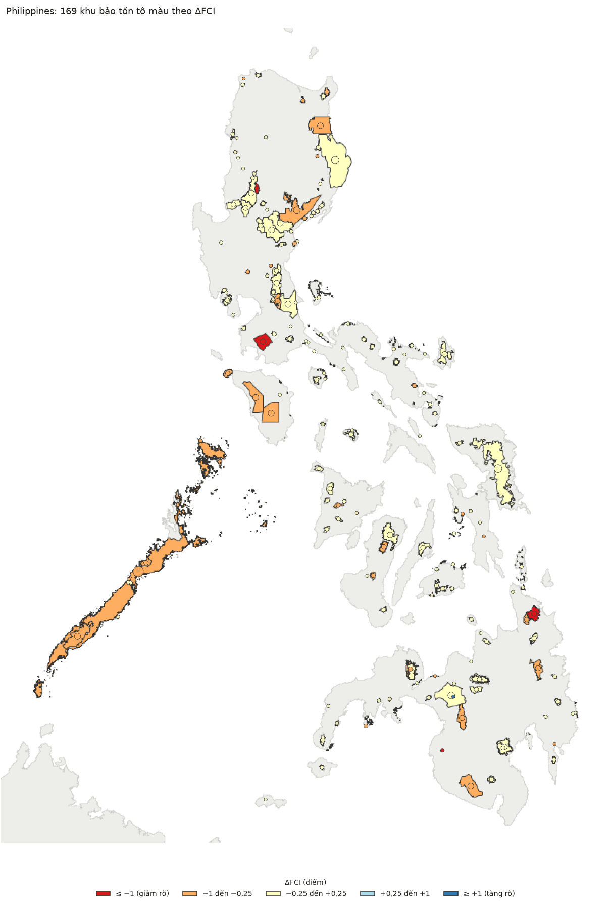
10 khu có ΔFCI giảm nhiều nhất
| Khu bảo tồn | Loại | Đất (km²) | Trọng số W | FCI 2017 | FCI 2025 | ΔFCI | p MK | Kết luận | Rừng & cây 2025 | Rừng tự nhiên | Cách tính |
|---|---|---|---|---|---|---|---|---|---|---|---|
| South Upi Watershed Forest Reserve | Watershed Forest Reserve | 17,4 | 1,0 | 25,6 | 21,0 | -4,65 | 0,000 | Suy giảm | 35% | -18,4% | toàn bộ, 10 m |
| Mt. Pulag National Park | National Park | 116,0 | 1,0 | 72,0 | 70,3 | -1,70 | 0,000 | Suy giảm | 85% | -3,1% | 5.000 điểm |
| Taal Volcano Island National Park | Protected Landscape | 622,6 | 1,0 | 15,4 | 14,0 | -1,45 | 0,004 | Suy giảm | 45% | -11,2% | 5.000 điểm |
| Alamio, Buayan, Carac-an, Panikian River and Sipangpang Falls Watershed Forest Reserve | Watershed Forest Reserve | 432,8 | 1,0 | 88,3 | 87,1 | -1,22 | 0,000 | Suy giảm | 96% | -1,3% | 5.000 điểm |
| Jalaur River Watershed Forest Reserve | Watershed Forest Reserve | 94,7 | 1,0 | 63,4 | 62,4 | -0,97 | 1,000 | Ổn định / không rõ | 92% | -1,8% | toàn bộ, 10 m |
| Calauit Island Game Preserve and Wildlife Sanctuary | Wildlife Sanctuary | 36,6 | 1,0 | 51,5 | 50,7 | -0,80 | 0,009 | Ổn định / không rõ | 86% | -1,6% | toàn bộ, 10 m |
| Libungan Watershed Forest Reserve | Watershed Forest Reserve | 528,2 | 1,0 | 25,8 | 25,0 | -0,79 | 0,000 | Ổn định / không rõ | 61% | -4,5% | 5.000 điểm |
| Mt. Kanlaon National Park | Natural Park | 235,8 | 1,0 | 44,2 | 43,4 | -0,79 | 0,001 | Ổn định / không rõ | 65% | -0,4% | 5.000 điểm |
| Mt. Arayat National Park | National Park | 37,0 | 1,0 | 53,6 | 52,8 | -0,76 | 0,000 | Ổn định / không rõ | 84% | -1,7% | toàn bộ, 10 m |
| Magapit Game Refuge and Bird Sanctuary | Protected Landscape | 38,5 | 1,0 | 21,9 | 21,2 | -0,76 | 0,001 | Ổn định / không rõ | 58% | -4,2% | toàn bộ, 10 m |
Tất cả 169 khu đã phân tích (xếp theo diện tích)
| Khu bảo tồn | Loại | Đất (km²) | Trọng số W | FCI 2017 | FCI 2025 | ΔFCI | p MK | Kết luận | Rừng & cây 2025 | Rừng tự nhiên | Cách tính |
|---|---|---|---|---|---|---|---|---|---|---|---|
| Palawan Game Refuge and Bird Sanctuary (Proc 219) | Game Refuge and Bird Sanctuary | 10.792,6 | 1,0 | 50,4 | 49,9 | -0,49 | 0,048 | Ổn định / không rõ | 82% | -1,0% | 5.000 điểm |
| Sohoton Natural Bridge National Park, Jicontol Watershed Forest Reserve, Taft Forest Philippine Eagle Wildlife Sanctuary & Calbiga Caves Protected Landscape | Natural Park | 3.349,0 | 1,0 | 86,5 | 86,3 | -0,20 | 0,029 | Ổn định / không rõ | 99% | -0,2% | 5.000 điểm |
| Northern Sierra Madre Natural Park | Natural Park | 2.880,1 | 1,0 | 76,4 | 76,2 | -0,17 | 0,037 | Ổn định / không rõ | 81% | -0,2% | 5.000 điểm |
| Quirino Protected Landscape | Protected Landscape | 1.834,5 | 1,0 | 67,1 | 66,5 | -0,57 | 0,001 | Ổn định / không rõ | 84% | -1,1% | 5.000 điểm |
| Lake Lanao Watershed Reservation | Watershed Reservation | 1.713,3 | 1,0 | 51,3 | 51,2 | -0,08 | 0,002 | Ổn định / không rõ | 59% | -0,0% | 5.000 điểm |
| Mt. Mantalingahan Protected Landscape | Protected Landscape | 1.209,6 | 1,0 | 72,6 | 72,2 | -0,40 | 0,009 | Ổn định / không rõ | 98% | -0,5% | 5.000 điểm |
| Unnamed National Park, Wildlife Sanctuary and Game Preserve (PP 1636) | Wildlife Sanctuary | 1.153,7 | 1,0 | 68,6 | 68,5 | -0,13 | 0,004 | Ổn định / không rõ | 95% | -0,3% | 5.000 điểm |
| Mts. Iglit-Baco Natural Park | Natural Park | 1.066,4 | 1,0 | 43,5 | 43,2 | -0,29 | 0,000 | Ổn định / không rõ | 58% | -0,8% | 5.000 điểm |
| Calavite & F.B. Harrison Game Refuge and Bird Sanctuary | Game Refuge and Bird Sanctuary | 1.064,1 | 1,0 | 35,9 | 35,5 | -0,45 | 0,009 | Ổn định / không rõ | 59% | -1,2% | 5.000 điểm |
| Peñablanca Protected Landscape | Protected Landscape and Seascape | 1.032,9 | 1,0 | 70,2 | 70,0 | -0,28 | 0,001 | Ổn định / không rõ | 79% | -0,5% | 5.000 điểm |
| Sebu Watershed Forest Reserve | Watershed Forest Reserve | 985,2 | 1,0 | 30,4 | 30,0 | -0,42 | 0,000 | Ổn định / không rõ | 48% | -1,9% | 5.000 điểm |
| Pantabangan-Caranglan Watershed Reservation | Watershed Reservation | 948,5 | 1,0 | 42,5 | 42,4 | -0,02 | 0,012 | Ổn định / không rõ | 58% | -0,1% | 5.000 điểm |
| Casecnan River Watershed Forest Reserve | Protected Lanscape | 862,4 | 1,0 | 75,3 | 75,2 | -0,15 | 0,005 | Ổn định / không rõ | 84% | -0,3% | 5.000 điểm |
| Ambuklao-Binga & Upper Agno Watershed Forest Reserve | Resource Reserve | 779,6 | 1,0 | 23,8 | 23,7 | -0,11 | 0,029 | Ổn định / không rõ | 65% | -0,8% | 5.000 điểm |
| Bago River Watershed Forest Reserve | Natural Park | 708,8 | 1,0 | 44,8 | 44,9 | +0,02 | 0,048 | Ổn định / không rõ | 78% | 0,0% | 5.000 điểm |
| Taal Volcano Island National Park | Protected Landscape | 622,6 | 1,0 | 15,4 | 14,0 | -1,45 | 0,004 | Suy giảm | 45% | -11,2% | 5.000 điểm |
| Mt. Apo Natural Park | Natural Park | 549,7 | 1,0 | 58,8 | 58,7 | -0,08 | 0,022 | Ổn định / không rõ | 86% | -0,0% | 5.000 điểm |
| Angat (Metro Water District) Watershed Forest Reserve | Watershed Forest Reserve | 545,7 | 1,0 | 93,9 | 93,8 | -0,07 | 0,012 | Ổn định / không rõ | 96% | -0,0% | 5.000 điểm |
| Libungan Watershed Forest Reserve | Watershed Forest Reserve | 528,2 | 1,0 | 25,8 | 25,0 | -0,79 | 0,000 | Ổn định / không rõ | 61% | -4,5% | 5.000 điểm |
| Entire Province of Palawan (Proc 2152) Mangrove Swamp Forest Reserve | Mangrove Swamp Forest Reserve | 524,5 | 1,0 | 65,2 | 64,7 | -0,57 | 0,001 | Ổn định / không rõ | 87% | -0,2% | 5.000 điểm |
| Catanduanes Watershed Forest Reserve | Natural Park | 489,4 | 1,0 | 90,7 | 90,6 | -0,04 | 0,007 | Ổn định / không rõ | 100% | 0,0% | 5.000 điểm |
| Alamio, Buayan, Carac-an, Panikian River and Sipangpang Falls Watershed Forest Reserve | Watershed Forest Reserve | 432,8 | 1,0 | 88,3 | 87,1 | -1,22 | 0,000 | Suy giảm | 96% | -1,3% | 5.000 điểm |
| Agusan Marsh Wildlife Sanctuary | Wildlife Sanctuary | 408,7 | 1,0 | 30,9 | 30,3 | -0,56 | 0,001 | Ổn định / không rõ | 52% | -1,8% | 5.000 điểm |
| Lower Agno Watershed Forest Reserve | Watershed Forest Reserve | 390,5 | 1,0 | 31,6 | 31,6 | 0,00 | 0,602 | Ổn định / không rõ | 64% | -0,1% | 5.000 điểm |
| Mt. Malindang National Park | Natural Park | 351,6 | 1,0 | 89,4 | 89,4 | -0,06 | 0,005 | Ổn định / không rõ | 99% | -0,1% | 5.000 điểm |
| Marcos Highway Watershed Forest Reserve | Watershed Forest Reserve | 315,1 | 1,0 | 38,8 | 38,7 | -0,05 | 0,016 | Ổn định / không rõ | 67% | -0,1% | 5.000 điểm |
| Mt. Kitanglad Range National Park | Natural Park | 310,9 | 1,0 | 97,1 | 97,1 | 0,00 | 1,000 | Ổn định / không rõ | 99% | 0,0% | 5.000 điểm |
| Central Cebu National Park, Mananga River Watershed Forest Reserve, Buhisan Watershed Forest Reserve, Sudlon National Park | Protected Landscape | 285,0 | 1,0 | 28,6 | 28,5 | -0,06 | 0,048 | Ổn định / không rõ | 90% | -0,3% | 5.000 điểm |
| Talavera Watershed Forest Reserve | Watershed Forest Reserve | 274,8 | 1,0 | 42,0 | 42,0 | -0,01 | 0,118 | Ổn định / không rõ | 63% | -0,0% | 5.000 điểm |
| Marikina Watershed Reservation | Protected Landscape | 261,2 | 1,0 | 55,2 | 54,7 | -0,57 | 0,000 | Ổn định / không rõ | 87% | -1,1% | 5.000 điểm |
| Aklan River Watershed Forest Reserve | Watershed Forest Reserve | 241,5 | 1,0 | 86,0 | 86,0 | +0,01 | 0,048 | Ổn định / không rõ | 99% | +0,0% | 5.000 điểm |
| Mt. Kanlaon National Park | Natural Park | 235,8 | 1,0 | 44,2 | 43,4 | -0,79 | 0,001 | Ổn định / không rõ | 65% | -0,4% | 5.000 điểm |
| Muleta-Manupali Watershed Forest Reserve | Natural Park | 222,2 | 1,0 | 84,9 | 84,9 | -0,04 | 0,007 | Ổn định / không rõ | 92% | -0,1% | 5.000 điểm |
| St. Paul Subterranean National Park | National Park | 212,0 | 1,0 | 86,4 | 85,7 | -0,66 | 0,012 | Ổn định / không rõ | 94% | -0,4% | 5.000 điểm |
| Doña Remedios Trinidad-General Tinio Watershed Forest Reserve | Watershed Forest Reserve | 209,3 | 1,0 | 93,8 | 93,8 | 0,00 | 1,000 | Ổn định / không rõ | 99% | 0,0% | 5.000 điểm |
| Bataan National Park | Natural Park | 199,6 | 1,0 | 71,9 | 72,0 | +0,03 | 0,251 | Ổn định / không rõ | 96% | +0,0% | 5.000 điểm |
| Mt. Calavite Wildlife Sanctuary | Wildlife Sanctuary | 181,1 | 1,0 | 50,0 | 49,5 | -0,42 | 0,211 | Ổn định / không rõ | 81% | -0,9% | 5.000 điểm |
| Mt. Malindang National Park | Natural Park | 173,0 | 1,0 | 43,4 | 42,9 | -0,51 | 0,001 | Ổn định / không rõ | 81% | -1,2% | 5.000 điểm |
| Andanan Watershed Forest Reserve | Watershed Forest Reserve | 171,6 | 1,0 | 56,5 | 56,6 | +0,02 | 0,048 | Ổn định / không rõ | 98% | +0,1% | 5.000 điểm |
| Mt. Kitanglad Range National Park | Natural Park | 161,4 | 1,0 | 71,2 | 71,1 | -0,10 | 0,004 | Ổn định / không rõ | 88% | -0,2% | 5.000 điểm |
| Mt. Guiting-Guiting Natural Park | Natural Park | 155,3 | 1,0 | 96,8 | 96,7 | -0,04 | 0,022 | Ổn định / không rõ | 98% | -0,0% | 5.000 điểm |
| Cabadbaran Watershed | Watershed | 151,6 | 1,0 | 83,6 | 83,3 | -0,34 | 0,005 | Ổn định / không rõ | 94% | -0,2% | 5.000 điểm |
| Mt. Matutum Protected Landscape | Protected Landscape | 139,4 | 1,0 | 32,6 | 32,6 | -0,06 | 0,016 | Ổn định / không rõ | 66% | -0,2% | 5.000 điểm |
| Pasonanca Watershed Forest Reserve | Natural Park | 121,1 | 1,0 | 94,1 | 94,1 | -0,01 | 0,061 | Ổn định / không rõ | 99% | +0,0% | 5.000 điểm |
| Northwest Panay Peninsula Natural Park | Natural Park | 120,2 | 1,0 | 93,3 | 93,3 | -0,02 | 0,009 | Ổn định / không rõ | 100% | -0,0% | 5.000 điểm |
| Mt. Pulag National Park | National Park | 116,0 | 1,0 | 72,0 | 70,3 | -1,70 | 0,000 | Suy giảm | 85% | -3,1% | 5.000 điểm |
| Mts. Banahaw- San Cristobal National Park | Protected Landscape | 113,1 | 1,0 | 79,8 | 79,8 | -0,03 | 0,016 | Ổn định / không rõ | 97% | -0,0% | 5.000 điểm |
| Rajah Sikatuna National Park | Protected Landscape | 109,7 | 1,0 | 68,1 | 68,1 | -0,02 | 0,061 | Ổn định / không rõ | 97% | 0,0% | 5.000 điểm |
| Ilog-Hilabangan Watershed Forest Reserve | Watershed Forest Reserve | 104,8 | 1,0 | 23,3 | 23,1 | -0,25 | 0,000 | Ổn định / không rõ | 59% | -1,1% | 5.000 điểm |
| Aliwagwag Protected Landscape | Protected Landscape | 102,4 | 1,0 | 78,8 | 78,6 | -0,23 | 0,004 | Ổn định / không rõ | 99% | -0,4% | 5.000 điểm |
| Mt. Isarog National Park | Natural Park | 101,0 | 1,0 | 77,9 | 77,9 | -0,01 | 0,076 | Ổn định / không rõ | 99% | -0,0% | 5.000 điểm |
| Marinduque Wildlife Sanctuary | Wildlife Sanctuary | 97,6 | 1,0 | 69,0 | 68,9 | -0,01 | 0,007 | Ổn định / không rõ | 99% | -0,0% | toàn bộ, 10 m |
| Jalaur River Watershed Forest Reserve | Watershed Forest Reserve | 94,7 | 1,0 | 63,4 | 62,4 | -0,97 | 1,000 | Ổn định / không rõ | 92% | -1,8% | toàn bộ, 10 m |
| Wangag Watershed Forest Reserve | Watershed Forest Reserve | 94,5 | 1,0 | 88,6 | 87,9 | -0,65 | 0,000 | Ổn định / không rõ | 93% | -1,1% | toàn bộ, 10 m |
| Mt. Apo Natural Park | Natural Park | 90,9 | 1,0 | 22,1 | 22,0 | -0,13 | 0,000 | Ổn định / không rõ | 96% | -0,5% | toàn bộ, 10 m |
| Loboc Watershed Forest Reserve | Watershed Forest Reserve | 88,9 | 1,0 | 59,9 | 59,9 | -0,03 | 0,009 | Ổn định / không rõ | 97% | -0,0% | toàn bộ, 10 m |
| Mt. Balatukan Range Natural Park | Natural Park | 84,3 | 1,0 | 94,4 | 94,4 | -0,02 | 0,001 | Ổn định / không rõ | 99% | -0,0% | toàn bộ, 10 m |
| Mangrove Areas in Tumalong Bay, Baong River, Pongca Bay,Mangrove in Pisan, Sagayapan, Tintauan and Sacol Island Mangrove Swamp Forest Reserve | Mangrove Swamp Forest Reserve | 81,5 | 1,0 | 37,2 | 36,8 | -0,47 | 0,000 | Ổn định / không rõ | 53% | -1,5% | toàn bộ, 10 m |
| Balinsasayao Twin Lakes Natural Park | Natural Park | 80,2 | 1,0 | 77,1 | 77,1 | -0,01 | 0,348 | Ổn định / không rõ | 97% | -0,0% | toàn bộ, 10 m |
| Dalanas River Watershed Forest Reserve | Watershed Forest Reserve | 79,6 | 1,0 | 63,5 | 63,5 | -0,02 | 0,001 | Ổn định / không rõ | 85% | -0,0% | toàn bộ, 10 m |
| Bawa Watershed Forest Reserve | Watershed Forest Reserve | 69,3 | 1,0 | 92,9 | 92,8 | -0,11 | 0,000 | Ổn định / không rõ | 97% | -0,2% | toàn bộ, 10 m |
| Tipulu-an Mau-it River Watershed | Natural Park | 67,8 | 1,0 | 50,1 | 50,1 | -0,06 | 0,002 | Ổn định / không rõ | 79% | -0,1% | toàn bộ, 10 m |
| Angat Watershed and Forest Range (Pilot) | Watershed and Forest Range | 66,7 | 1,0 | 69,1 | 69,2 | +0,11 | 0,005 | Ổn định / không rõ | 94% | +0,2% | toàn bộ, 10 m |
| Maasin Watershed Forest Reserve | Watershed Forest Reserve | 65,4 | 1,0 | 56,9 | 56,9 | -0,01 | 0,002 | Ổn định / không rõ | 95% | -0,0% | toàn bộ, 10 m |
| Aurora Memorial | National Park | 65,2 | 1,0 | 75,5 | 75,5 | -0,05 | 0,001 | Ổn định / không rõ | 94% | -0,1% | toàn bộ, 10 m |
| Tumauini Watershed Forest Reserve | Watershed Forest Reserve | 65,1 | 1,0 | 67,7 | 67,6 | -0,12 | 0,009 | Ổn định / không rõ | 86% | -0,3% | toàn bộ, 10 m |
| Amro River Watershed Forest Reserve | Protected Landscape | 64,3 | 1,0 | 96,2 | 96,2 | +0,00 | 0,076 | Ổn định / không rõ | 99% | +0,0% | toàn bộ, 10 m |
| Mt. Hamiguitan Range Wildlife Sanctuary | Wildlife Sanctuary | 63,4 | 1,0 | 92,8 | 92,7 | -0,08 | 0,118 | Ổn định / không rõ | 99% | -0,1% | toàn bộ, 10 m |
| Olongapo Naval Base Perimeter National Park | Watershed Forest Reserve | 62,9 | 1,0 | 44,9 | 44,8 | -0,13 | 0,602 | Ổn định / không rõ | 84% | -0,3% | toàn bộ, 10 m |
| Salinas Deer Refuge | Natural Monument | 59,6 | 1,0 | 17,1 | 17,0 | -0,06 | 0,000 | Ổn định / không rõ | 32% | -0,4% | toàn bộ, 10 m |
| Abasig-Matogdon Mananap Watershed Forest Reserve | Natural Biotic Area | 59,2 | 1,0 | 76,7 | 76,6 | -0,04 | 0,009 | Ổn định / không rõ | 100% | -0,0% | toàn bộ, 10 m |
| Palompon Watershed Forest Reserve | Watershed Forest Reserve | 56,3 | 1,0 | 21,8 | 21,7 | -0,01 | 1,000 | Ổn định / không rõ | 95% | -0,1% | toàn bộ, 10 m |
| Mt. Data National Park | National Park | 55,1 | 1,0 | 14,5 | 14,5 | -0,01 | 0,029 | Ổn định / không rõ | 31% | -0,1% | toàn bộ, 10 m |
| Bicol National Park | Natural Park | 54,7 | 1,0 | 34,5 | 34,4 | -0,06 | 0,466 | Ổn định / không rõ | 99% | -0,3% | toàn bộ, 10 m |
| Northern Luzon Heroes Hill National Park | National Park | 53,7 | 1,0 | 59,2 | 59,2 | -0,00 | 0,175 | Ổn định / không rõ | 95% | -0,0% | toàn bộ, 10 m |
| Mayon Volcano National Park | Natural Park | 53,3 | 1,0 | 41,2 | 40,9 | -0,30 | 0,048 | Ổn định / không rõ | 65% | -1,1% | toàn bộ, 10 m |
| Pan-as Falls Hayiban Watershed Forest Reserve | Protected Landscape | 50,7 | 1,0 | 85,4 | 85,3 | -0,06 | 0,029 | Ổn định / không rõ | 100% | -0,1% | toàn bộ, 10 m |
| Palawan Flora, Fauna and Watershed Forest Reserve (Parcel 1) | Watershed Forest Reserve | 47,8 | 1,0 | 85,9 | 85,8 | -0,06 | 0,004 | Ổn định / không rõ | 100% | -0,1% | toàn bộ, 10 m |
| Calabgan Watershed Forest Reserve | Watershed Forest Reserve | 46,3 | 1,0 | 94,3 | 94,2 | -0,01 | 0,144 | Ổn định / không rõ | 100% | 0,0% | toàn bộ, 10 m |
| Dibalo-Pingit-Zabali-Malayat Watershed Forest Reserve | Watershed Forest Reserve | 45,7 | 1,0 | 87,1 | 86,6 | -0,56 | 0,000 | Ổn định / không rõ | 99% | -0,7% | toàn bộ, 10 m |
| Basilan National Park | Natural Biotic Area | 45,5 | 1,0 | 67,5 | 67,5 | -0,01 | 0,602 | Ổn định / không rõ | 100% | +0,0% | toàn bộ, 10 m |
| Island of Polilio, Alabat, Cabelete, Jomalig, Patnanongan, Kalotkot, Kalongkooan, Palasan, Calabao, Icol and San Rafael Mangrove Swamp Forest Reserve | Mangrove Swamp Forest Reserve | 44,5 | 1,0 | 72,8 | 72,8 | -0,02 | 0,002 | Ổn định / không rõ | 87% | -0,0% | toàn bộ, 10 m |
| Tinuy-an Falls Protected Landscape | Protected Landscape | 43,1 | 1,0 | 61,8 | 61,7 | -0,08 | 0,466 | Ổn định / không rõ | 97% | -0,1% | toàn bộ, 10 m |
| Mt. Inayawan Range Natural Park | Natural Park | 42,4 | 1,0 | 94,9 | 94,8 | -0,09 | 0,118 | Ổn định / không rõ | 100% | -0,2% | toàn bộ, 10 m |
| Mount Makiling | Forest Reserve | 42,3 | 1,0 | 77,2 | 77,2 | -0,01 | 0,001 | Ổn định / không rõ | 99% | -0,0% | toàn bộ, 10 m |
| Pan-ay River Watershed Forest Reserve | Watershed Forest Reserve | 40,8 | 1,0 | 46,0 | 45,9 | -0,03 | 0,602 | Ổn định / không rõ | 92% | -0,1% | toàn bộ, 10 m |
| Mts. Palay-palay-Mataas-na-Gulod National Park | Protected Landscape | 39,7 | 1,0 | 61,7 | 61,6 | -0,08 | 0,076 | Ổn định / không rõ | 97% | -0,1% | toàn bộ, 10 m |
| Kalbario-Patapat Natural Park | Natural Park | 39,0 | 1,0 | 95,9 | 95,7 | -0,22 | 0,001 | Ổn định / không rõ | 99% | -0,2% | toàn bộ, 10 m |
| Magapit Game Refuge and Bird Sanctuary | Protected Landscape | 38,5 | 1,0 | 21,9 | 21,2 | -0,76 | 0,001 | Ổn định / không rõ | 58% | -4,2% | toàn bộ, 10 m |
| Alihawan-Cansujay Anibongan River Watershed Forest Reserve | Watershed Forest Reserve | 37,4 | 1,0 | 38,8 | 38,7 | -0,12 | 0,076 | Ổn định / không rõ | 93% | -0,4% | toàn bộ, 10 m |
| Mt. Arayat National Park | National Park | 37,0 | 1,0 | 53,6 | 52,8 | -0,76 | 0,000 | Ổn định / không rõ | 84% | -1,7% | toàn bộ, 10 m |
| Calauit Island Game Preserve and Wildlife Sanctuary | Wildlife Sanctuary | 36,6 | 1,0 | 51,5 | 50,7 | -0,80 | 0,009 | Ổn định / không rõ | 86% | -1,6% | toàn bộ, 10 m |
| Bulusan Volcano National Park | Natural Park | 36,4 | 1,0 | 83,8 | 83,8 | -0,00 | 0,144 | Ổn định / không rõ | 88% | -0,0% | toàn bộ, 10 m |
| Talaytay River Watershed Forest Reserve | Protected Landscape | 36,0 | 1,0 | 95,2 | 95,2 | -0,00 | 0,835 | Ổn định / không rõ | 100% | -0,0% | toàn bộ, 10 m |
| Dinadiawan River Watershed Forest Reserve | Protected Landscape | 33,7 | 1,0 | 74,7 | 74,2 | -0,51 | 0,001 | Ổn định / không rõ | 96% | -0,5% | toàn bộ, 10 m |
| Island of Basot, Quinalaang and Malabungot Magrove Swamp Forest Reserve | Mangrove Swamp Forest Reserve | 33,4 | 1,0 | 24,0 | 24,1 | +0,04 | 0,029 | Ổn định / không rõ | 68% | +0,0% | toàn bộ, 10 m |
| Palawan Flora, Fauna and Watershed Forest Reserve (Parcel 2) | Watershed Forest Reserve | 32,2 | 1,0 | 97,1 | 97,2 | +0,05 | 0,005 | Ổn định / không rõ | 100% | +0,1% | toàn bộ, 10 m |
| Tanglar point to Bicol River up to the Islands of Lahay, Locsuhin, Haponan, Quinabungan, Lamit and Batan Magrove Swamp Forest Reserve | Mangrove Swamp Forest Reserve | 29,1 | 1,0 | 43,1 | 43,1 | -0,03 | 0,002 | Ổn định / không rõ | 60% | -0,1% | toàn bộ, 10 m |
| Dipaculao Watershed Forest Reserve | Watershed Forest Reserve | 26,8 | 1,0 | 63,8 | 63,8 | -0,03 | 0,029 | Ổn định / không rõ | 99% | -0,0% | toàn bộ, 10 m |
| Calatrava, San Andres, San Agustin Watershed Forest Reserve | Watershed Forest Reserve | 26,2 | 1,0 | 69,6 | 69,6 | +0,01 | 0,118 | Ổn định / không rõ | 99% | +0,0% | toàn bộ, 10 m |
| Mangrove Areas along Coastline of Dupon Bay from Sacay point to Mouth of Dupon River, Apali Point to Calunganan Point Puerto Bello Lao Mangrove from Bo. Tuban and Bo. Manpagui Santa Cruiz Mangrove Swamp Forest Reserve | Mangrove Swamp Forest Reserve | 25,4 | 1,0 | 31,2 | 30,7 | -0,52 | 0,000 | Ổn định / không rõ | 58% | -1,6% | toàn bộ, 10 m |
| Putiao River to Malbog River, Getumbro Pt. to Prieto Diaz, Panuntingan Pt. to Tagdon River, Sinagbatan Bay to Mantay Pt. Magrove Swamp Forest Reserve | Mangrove Swamp Forest Reserve | 24,2 | 1,0 | 30,6 | 30,6 | -0,01 | 0,022 | Ổn định / không rõ | 53% | -0,0% | toàn bộ, 10 m |
| Simbahan-Talagas River Watershed Forest Reserve | Protected Landscape | 22,9 | 1,0 | 76,7 | 76,7 | -0,02 | 0,001 | Ổn định / không rõ | 100% | -0,0% | toàn bộ, 10 m |
| Mount Timolan Protected Landscape | Protected Landscape | 22,5 | 1,0 | 76,2 | 76,2 | +0,02 | 0,048 | Ổn định / không rõ | 98% | +0,0% | toàn bộ, 10 m |
| Ilocos Norte Metro Watershed Forest Reserve | Watershed Forest Reserve | 22,5 | 1,0 | 55,5 | 55,4 | -0,03 | 0,001 | Ổn định / không rõ | 92% | -0,1% | toàn bộ, 10 m |
| Lake Danao Natural Park | Natural Park | 22,4 | 1,0 | 64,5 | 64,5 | -0,04 | 0,029 | Ổn định / không rõ | 91% | -0,1% | toàn bộ, 10 m |
| Mt. Timpoong Hibok-hibok Natural Monument | Natural Monument | 22,0 | 1,0 | 96,9 | 96,8 | -0,04 | 0,012 | Ổn định / không rõ | 100% | -0,0% | toàn bộ, 10 m |
| Island of Sta Cruz and Salomague, foreshoreline of dapdap and alabo to the mouth of tagum river, malinoa creek to salomague point, foreshoreline of Barrio Cabuyagan to eastern side of Dating Bayan RIver in Calancan Bay Mangrove Swamp Forest Reserve | Mangrove Swamp Forest Reserve | 21,7 | 1,0 | 54,0 | 54,0 | -0,02 | 0,754 | Ổn định / không rõ | 81% | -0,0% | toàn bộ, 10 m |
| Biak-na-Bato National Park | National Park | 21,1 | 1,0 | 55,1 | 55,0 | -0,09 | 0,000 | Ổn định / không rõ | 98% | -0,2% | toàn bộ, 10 m |
| Minalungao National Park | National Park | 20,2 | 1,0 | 49,8 | 49,5 | -0,27 | 0,001 | Ổn định / không rõ | 84% | -0,5% | toàn bộ, 10 m |
| Manleluag Spring Protected Landscape | Protected Landscape | 19,4 | 1,0 | 47,2 | 47,2 | +0,00 | 0,002 | Ổn định / không rõ | 75% | 0,0% | toàn bộ, 10 m |
| Mangrove Areas from Del Pilar River to Palita Island, Bo. Salvacion and Dahican Magrove Swamp Forest Reserve | Mangrove Swamp Forest Reserve | 18,4 | 1,0 | 45,2 | 45,1 | -0,09 | 0,002 | Ổn định / không rõ | 61% | -0,3% | toàn bộ, 10 m |
| Island of Pamusuan, Handayan, Majanay,,, Islets of Bonoon, Lapinig, Pinahon and Lapinig Chico, Mangrove areas east of Soom River Pangpang Mangrove Swamp Forest Reserve | Mangrove Swamp Forest Reserve | 18,0 | 1,0 | 19,4 | 19,2 | -0,14 | 0,076 | Ổn định / không rõ | 30% | -0,7% | toàn bộ, 10 m |
| South Upi Watershed Forest Reserve | Watershed Forest Reserve | 17,4 | 1,0 | 25,6 | 21,0 | -4,65 | 0,000 | Suy giảm | 35% | -18,4% | toàn bộ, 10 m |
| Island of Dinagat, Hikdop, Sibate and Hanigad Mangrove Swamp Forest Reserve | Mangrove Swamp Forest Reserve | 16,6 | 1,0 | 45,8 | 45,7 | -0,17 | 0,002 | Ổn định / không rõ | 64% | -0,4% | toàn bộ, 10 m |
| Aurora Watershed Forest Reserve | Watershed Forest Reserve | 16,3 | 1,0 | 91,3 | 91,3 | -0,02 | 0,000 | Ổn định / không rõ | 97% | -0,0% | toàn bộ, 10 m |
| Mangrove Areas from Tagasilay to the Mouth of Tigbao River including east of Vitali Island Mangrove Swamp Forest Reserve | Mangrove Swamp Forest Reserve | 16,2 | 1,0 | 9,7 | 9,5 | -0,22 | 0,001 | Ổn định / không rõ | 17% | -2,3% | toàn bộ, 10 m |
| Mangrove From Baculin Point to Lakud Point, From Tanuip Point to Quinablangan Island and Samal Island Mangrove Swamp Forest Reserve | Mangrove Swamp Forest Reserve | 15,7 | 1,0 | 59,5 | 59,4 | -0,10 | 0,251 | Ổn định / không rõ | 79% | +0,1% | toàn bộ, 10 m |
| Balbalasang-Balbalan National Park | National Park | 14,4 | 1,0 | 32,2 | 32,5 | +0,23 | 0,001 | Ổn định / không rõ | 79% | -0,1% | toàn bộ, 10 m |
| Mainit Hotsprings National Park | Protected Landscape | 14,2 | 1,0 | 38,5 | 38,3 | -0,18 | 0,029 | Ổn định / không rõ | 95% | -0,6% | toàn bộ, 10 m |
| Island of Ponson, Poro, Pacihan | Protected Landscape and Seascape | 13,2 | 1,0 | 24,9 | 24,9 | -0,00 | 0,677 | Ổn định / không rõ | 43% | 0,0% | toàn bộ, 10 m |
| Buug Watershed Forest Reserve | Natural Biotic Area | 12,6 | 1,0 | 46,4 | 46,5 | +0,04 | 0,048 | Ổn định / không rõ | 96% | +0,1% | toàn bộ, 10 m |
| Fuyot Springs National Parks | National Park | 11,6 | 1,0 | 24,3 | 24,0 | -0,29 | 0,009 | Ổn định / không rõ | 49% | -1,6% | toàn bộ, 10 m |
| Isabela (Monte-alto Timber Resouce Corporation Parcel (1 & 2) Wildeness Area | Wilderness Area | 11,4 | 1,0 | 43,9 | 43,7 | -0,21 | 1,000 | Ổn định / không rõ | 53% | -0,8% | toàn bộ, 10 m |
| Island of Ambugan / Hambungan & Inabanga River Mangrove Swamp Forest Reserve | Mangrove Swamp Forest Reserve | 11,3 | 1,0 | 65,0 | 65,0 | -0,05 | 0,001 | Ổn định / không rõ | 83% | -0,1% | toàn bộ, 10 m |
| Mangrove Areas along Municipalities of Lavigan, Valencia Up to Taon River Municipality of Barcelona,, Islands of Masopelid, Mahaba, Condona, Bayagnan, Bilabid and Caye Mangrove Swamp Forest Reserve | Mangrove Swamp Forest Reserve | 11,0 | 1,0 | 72,0 | 72,0 | -0,02 | 0,004 | Ổn định / không rõ | 79% | -0,0% | toàn bộ, 10 m |
| Quezon National Park | Protected Landscape | 10,4 | 1,0 | 68,2 | 68,2 | 0,00 | 1,000 | Ổn định / không rõ | 99% | 0,0% | toàn bộ, 10 m |
| Lidlidda Watershed Forest Reserve | Protected Landscape | 10,4 | 1,0 | 59,8 | 59,8 | 0,00 | 1,000 | Ổn định / không rõ | 100% | 0,0% | toàn bộ, 10 m |
| Rungkunan National Park | National Park | 9,7 | 1,0 | 75,7 | 75,4 | -0,23 | 0,211 | Ổn định / không rõ | 94% | -0,3% | toàn bộ, 10 m |
| Surigao Watershed Forest Reserve | Watershed Forest Reserve | 9,5 | 1,0 | 90,3 | 90,1 | -0,19 | 0,029 | Ổn định / không rõ | 99% | -0,3% | toàn bộ, 10 m |
| Mangrove areas along banks of Mamburao River, Buluangan River to Lagarum River, Naujan, bank of Betel Creek, Sablayan Pt. to Bagong Sabang RIver, Labangan to Calalayuan Pt. Sukol River, Casiliga River, Island of Soguicay Mangrove Swamp Forest Reserve | Mangrove Swamp Forest Reserve | 9,5 | 1,0 | 11,5 | 11,4 | -0,06 | 0,005 | Ổn định / không rõ | 44% | -0,1% | toàn bộ, 10 m |
| Roosevelt National Park | Protected Landscape | 9,5 | 1,0 | 30,5 | 30,5 | +0,00 | 0,835 | Ổn định / không rõ | 76% | -0,1% | toàn bộ, 10 m |
| Rasa Island Wildlife Sanctuary | Wildlife Sanctuary | 9,2 | 1,0 | 41,6 | 41,6 | 0,00 | 1,000 | Ổn định / không rõ | 46% | 0,0% | toàn bộ, 10 m |
| Bulabog-Putian National Park | National Park | 8,9 | 1,0 | 52,1 | 52,1 | 0,00 | 1,000 | Ổn định / không rõ | 100% | 0,0% | toàn bộ, 10 m |
| Mati Watershed Forest Reserve | Protected Landscape | 8,8 | 1,0 | 18,8 | 18,5 | -0,34 | 0,000 | Ổn định / không rõ | 97% | -3,6% | toàn bộ, 10 m |
| Siocon Watershed Forest Reserve | Resource Reserve | 8,6 | 1,0 | 87,1 | 87,1 | -0,00 | 0,466 | Ổn định / không rõ | 100% | -0,0% | toàn bộ, 10 m |
| Palsabangan River up to Mazintuto River, Bacong River to Sandoval Point Mangrove Swamp Forest Reserve | Mangrove Swamp Forest Reserve | 7,0 | 1,0 | 32,2 | 32,1 | -0,12 | 0,001 | Ổn định / không rõ | 45% | -0,5% | toàn bộ, 10 m |
| Salikata National Park | National Park | 6,6 | 1,0 | 81,0 | 82,2 | +1,19 | 0,001 | Phục hồi | 91% | +2,2% | toàn bộ, 10 m |
| Pamitinan Protected Landscape | Protected Landscape | 6,1 | 1,0 | 49,7 | 49,6 | -0,06 | 0,012 | Ổn định / không rõ | 93% | -0,1% | toàn bộ, 10 m |
| Bessang Pass Natural Monument/Landmark | Natural Monument | 5,8 | 1,0 | 78,2 | 78,2 | 0,00 | 1,000 | Ổn định / không rõ | 98% | 0,0% | toàn bộ, 10 m |
| Mangrove areas from Agio Point up to the Municipality of Cambuyao; Mangrove aras from Bo. Biabas to Bo. Ondol including Bo. Condary, and Juagdan except the Island of Tintiman Mangrove Wilderness area | Protected Landscape | 5,8 | 1,0 | 18,3 | 18,3 | -0,01 | 0,037 | Ổn định / không rõ | 32% | -0,1% | toàn bộ, 10 m |
| Barrio Bagumbang to Malautan River Mangrove Swamp Forest Reserve | Mangrove Swamp Forest Reserve | 5,1 | 1,0 | 13,7 | 13,6 | -0,14 | 0,022 | Ổn định / không rõ | 44% | -1,2% | toàn bộ, 10 m |
| Sibuyan Island Mangrove Swamp Forest Reserve | Mangrove Swamp Forest Reserve | 4,9 | 1,0 | 32,5 | 32,5 | -0,01 | 0,144 | Ổn định / không rõ | 62% | 0,0% | toàn bộ, 10 m |
| Infanta Watershed Forest Reserve | Watershed Forest Reserve | 4,8 | 1,0 | 92,3 | 92,3 | +0,01 | 0,022 | Ổn định / không rõ | 100% | +0,0% | toàn bộ, 10 m |
| Binahaan River Watershed Forest Reserve | Watershed Forest Reserve | 4,8 | 1,0 | 92,3 | 92,3 | 0,00 | 1,000 | Ổn định / không rõ | 100% | 0,0% | toàn bộ, 10 m |
| Lagonoy Watershed Forest Reserve | Natural Biotic Area | 4,4 | 1,0 | 65,4 | 65,4 | 0,00 | 1,000 | Ổn định / không rõ | 100% | 0,0% | toàn bộ, 10 m |
| Mangroves from Malaquing River to Mabunga River, Cueva Point to Kimartinez Point, Kabugao Point to Kabalog Andang Point Magrove Swamp Forest Reserve | Mangrove Swamp Forest Reserve | 4,2 | 1,0 | 35,8 | 35,7 | -0,04 | 0,348 | Ổn định / không rõ | 68% | -0,1% | toàn bộ, 10 m |
| Kabangkalan Watershed Forest Reserve | Watershed Forest Reserve | 4,2 | 1,0 | 19,8 | 19,8 | -0,03 | 0,076 | Ổn định / không rõ | 86% | -0,1% | toàn bộ, 10 m |
| Kuapnit Balinsasayao National Park | National Park | 3,8 | 1,0 | 32,3 | 32,0 | -0,30 | 0,016 | Ổn định / không rõ | 98% | -1,3% | toàn bộ, 10 m |
| Watershed Purposes of Mariveles (Palanas) Watershed and Forest Range | Watershed and Forest Range | 3,5 | 1,0 | 46,2 | 46,1 | -0,08 | 0,037 | Ổn định / không rõ | 94% | -0,0% | toàn bộ, 10 m |
| Caramoan National Park | National Park | 3,5 | 1,0 | 52,8 | 52,8 | 0,00 | 1,000 | Ổn định / không rõ | 91% | 0,0% | toàn bộ, 10 m |
| Mahagnao Volcano National Park | Natural Park | 3,4 | 1,0 | 43,2 | 43,2 | -0,00 | 0,037 | Ổn định / không rõ | 90% | 0,0% | toàn bộ, 10 m |
| Dupax Watershed Reservation | Watershed Reservation | 3,4 | 1,0 | 38,7 | 38,7 | 0,00 | 1,000 | Ổn định / không rõ | 65% | 0,0% | toàn bộ, 10 m |
| Alabat Watershed Forest Reserve | Watershed Forest Reserve | 3,2 | 1,0 | 55,5 | 55,3 | -0,19 | 0,144 | Ổn định / không rõ | 99% | -0,3% | toàn bộ, 10 m |
| Tanap Watershed Forest Reserve | Watershed Forest Reserve | 3,0 | 1,0 | 40,1 | 39,5 | -0,55 | 0,001 | Ổn định / không rõ | 66% | -1,4% | toàn bộ, 10 m |
| Buenavista Watershed Forest Reserve | Protected Landscape | 2,9 | 1,0 | 15,5 | 15,5 | 0,00 | 1,000 | Ổn định / không rõ | 100% | 0,0% | toàn bộ, 10 m |
| Panciscan Pt. in Bitos Bay up to Bano Sanlay, Panicijan River in Butuan Bay; Mangroves along the banks of Sta. Rosa River in San Jacinto town Mangrove Swamp Forest Reserve | Natural Park | 2,7 | 1,0 | 24,3 | 24,1 | -0,23 | 0,917 | Ổn định / không rõ | 38% | -1,1% | toàn bộ, 10 m |
| Mt. Dajo National Park | National Park | 2,1 | 1,0 | 79,6 | 79,6 | 0,00 | 1,000 | Ổn định / không rõ | 100% | 0,0% | toàn bộ, 10 m |
| Sta Lucia Protected Landscape | Protected Landscape | 2,0 | 1,0 | 55,6 | 55,5 | -0,10 | 0,022 | Ổn định / không rõ | 92% | -0,2% | toàn bộ, 10 m |
| Maulawin Spring Watershed Forest Reserve | Protected Landscape | 1,8 | 1,0 | 30,3 | 30,3 | 0,00 | 1,000 | Ổn định / không rõ | 100% | 0,0% | toàn bộ, 10 m |
| Mangrove from Pigbucan Point to Paron Point Magrove Swamp Forest Reserve | Mangrove Swamp Forest Reserve | 1,8 | 1,0 | 30,2 | 30,2 | -0,00 | 0,076 | Ổn định / không rõ | 54% | 0,0% | toàn bộ, 10 m |
| Pagsanjan Gorge National Park | National Park | 1,7 | 1,0 | 42,5 | 42,5 | 0,00 | 1,000 | Ổn định / không rõ | 99% | 0,0% | toàn bộ, 10 m |
| Torrijos Watershed Forest Reserve | Watershed Forest Reserve | 1,6 | 1,0 | 49,2 | 49,2 | -0,00 | 0,048 | Ổn định / không rõ | 100% | -0,0% | toàn bộ, 10 m |
| Mangrove Areas from Liangan River to Lipatan River of the Municipality of Lapayan Mangrove Swamp Forest Reserve | Mangrove Swamp Forest Reserve | 1,5 | 1,0 | 20,6 | 20,2 | -0,40 | 0,076 | Ổn định / không rõ | 49% | -1,4% | toàn bộ, 10 m |
| Mahugunao Watershed Forest Reserve | Watershed Forest Reserve | 1,5 | 1,0 | 39,2 | 39,2 | 0,00 | 0,917 | Ổn định / không rõ | 100% | 0,0% | toàn bộ, 10 m |
| Bigbiga Spring Watershed Forest Reserve | Protected Landscape | 1,4 | 1,0 | 59,8 | 59,8 | 0,00 | 1,000 | Ổn định / không rõ | 100% | 0,0% | toàn bộ, 10 m |
| Polilio Watershed Forest Reserve | Watershed Forest Reserve | 1,3 | 1,0 | 73,3 | 73,3 | 0,00 | 1,000 | Ổn định / không rõ | 100% | 0,0% | toàn bộ, 10 m |
| Baganga Watershed Reservation | Protected Landscape | 1,1 | 1,0 | 44,2 | 44,3 | +0,18 | 0,016 | Ổn định / không rõ | 100% | +0,4% | toàn bộ, 10 m |
| Mimbilisan Protected Landscape | Protected Landscape | 1,1 | 1,0 | 58,0 | 58,0 | -0,06 | 0,022 | Ổn định / không rõ | 98% | -0,1% | toàn bộ, 10 m |
Indonesia
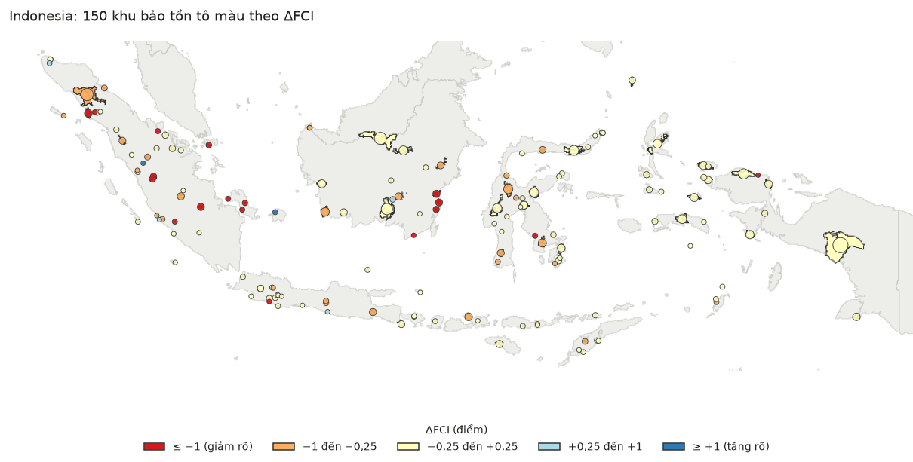
10 khu có ΔFCI giảm nhiều nhất
| Khu bảo tồn | Loại | Đất (km²) | Trọng số W | FCI 2017 | FCI 2025 | ΔFCI | p MK | Kết luận | Rừng & cây 2025 | Rừng tự nhiên | Cách tính |
|---|---|---|---|---|---|---|---|---|---|---|---|
| Mubrani-Kaironi | Wildlife Reserve | 1,9 | 2,7 | 54,2 | 44,6 | -9,59 | 0,000 | Suy giảm | 68% | -18,9% | toàn bộ, 10 m |
| Bojong Larang Jayanti | Nature Reserve | 7,1 | 2,7 | 47,3 | 37,8 | -9,54 | 0,009 | Suy giảm | 72% | -19,7% | toàn bộ, 10 m |
| Gunung Mangkol | Grand Forest Park | 60,1 | 2,5 | 45,3 | 39,5 | -5,81 | 0,000 | Suy giảm | 79% | -14,0% | toàn bộ, 10 m |
| Gunung Permisan | Nature Recreation Park | 31,5 | 2,5 | 55,9 | 51,0 | -4,92 | 0,001 | Suy giảm | 94% | -11,2% | toàn bộ, 10 m |
| Mangolo | Nature Recreation Park | 39,4 | 2,5 | 84,4 | 79,8 | -4,61 | 0,118 | Ổn định / không rõ | 96% | -3,2% | toàn bộ, 10 m |
| Dangku | Wildlife Reserve | 480,1 | 2,7 | 49,6 | 45,1 | -4,57 | 0,000 | Suy giảm | 91% | -11,2% | 5.000 điểm |
| Asam-asam | Undesigned | 5,1 | 2,7 | 50,2 | 46,3 | -3,95 | 0,002 | Suy giảm | 63% | -7,2% | toàn bộ, 10 m |
| Batang Pangean II | Nature Reserve | 209,8 | 2,7 | 88,2 | 85,0 | -3,20 | 0,000 | Suy giảm | 96% | -4,3% | 5.000 điểm |
| Gunung Menumbing | Grand Forest Park | 33,4 | 2,5 | 45,4 | 42,5 | -2,93 | 0,001 | Suy giảm | 76% | -9,9% | toàn bộ, 10 m |
| Teluk Adang | Nature Reserve | 573,7 | 2,7 | 35,8 | 33,1 | -2,75 | 0,000 | Suy giảm | 49% | -7,6% | 5.000 điểm |
Tất cả 150 khu đã phân tích (xếp theo diện tích)
| Khu bảo tồn | Loại | Đất (km²) | Trọng số W | FCI 2017 | FCI 2025 | ΔFCI | p MK | Kết luận | Rừng & cây 2025 | Rừng tự nhiên | Cách tính |
|---|---|---|---|---|---|---|---|---|---|---|---|
| Lorentz | National Park | 22.058,6 | 2,5 | 87,6 | 87,5 | -0,10 | 0,001 | Ổn định / không rõ | 88% | -0,1% | 5.000 điểm |
| Gunung Leuser | National Park | 8.701,0 | 2,5 | 95,4 | 95,1 | -0,28 | 0,001 | Ổn định / không rõ | 98% | -0,4% | 5.000 điểm |
| Betung Kerihun | National Park | 8.173,0 | 2,5 | 99,7 | 99,6 | -0,06 | 0,061 | Ổn định / không rõ | 100% | -0,0% | 5.000 điểm |
| Sebangau | National Park | 5.940,6 | 2,5 | 89,2 | 89,2 | -0,03 | 0,251 | Ổn định / không rõ | 92% | +0,3% | 5.000 điểm |
| Tamrau Utara | Nature Reserve | 3.556,4 | 2,5 | 99,6 | 99,5 | -0,01 | 0,754 | Ổn định / không rõ | 100% | -0,0% | 5.000 điểm |
| Bogani Nani Wartabone | National Park | 2.834,0 | 2,5 | 96,0 | 95,9 | -0,14 | 0,144 | Ổn định / không rõ | 99% | -0,2% | 5.000 điểm |
| Lore Lindu | National Park | 2.153,6 | 2,5 | 94,9 | 94,6 | -0,32 | 0,001 | Ổn định / không rõ | 98% | -0,4% | 5.000 điểm |
| Ganda Dewata | National Park | 2.135,5 | 2,5 | 97,1 | 97,1 | -0,07 | 0,012 | Ổn định / không rõ | 99% | -0,1% | 5.000 điểm |
| Morowali | Nature Reserve | 2.132,3 | 2,5 | 89,4 | 89,3 | -0,03 | 0,251 | Ổn định / không rõ | 94% | +0,0% | 5.000 điểm |
| Bukit Sapat Hawung | Nature Reserve | 1.904,0 | 2,5 | 99,9 | 99,9 | -0,03 | 0,022 | Ổn định / không rõ | 100% | -0,0% | 5.000 điểm |
| Manusela | National Park | 1.746,6 | 2,5 | 98,0 | 98,0 | -0,04 | 0,004 | Ổn định / không rõ | 99% | -0,0% | 5.000 điểm |
| Lolobata | National Park | 1.635,4 | 2,5 | 99,1 | 99,1 | 0,00 | 1,000 | Ổn định / không rõ | 100% | +0,0% | 5.000 điểm |
| Muara Kaman Sedulang | Nature Reserve | 1.478,2 | 2,5 | 39,4 | 39,1 | -0,30 | 0,001 | Ổn định / không rõ | 43% | -0,3% | 5.000 điểm |
| Pegunungan Kumawa | Nature Reserve | 1.288,4 | 2,5 | 99,9 | 99,9 | -0,00 | 0,076 | Ổn định / không rõ | 100% | 0,0% | 5.000 điểm |
| Pulau Laut | Nature Reserve | 1.155,5 | 2,5 | 98,9 | 98,9 | +0,01 | 0,076 | Ổn định / không rõ | 99% | +0,0% | 5.000 điểm |
| Gunung Palung | National Park | 1.081,8 | 2,5 | 90,6 | 90,4 | -0,15 | 0,095 | Ổn định / không rõ | 98% | -0,2% | 5.000 điểm |
| Rawa Aopa Watumohai | National Park | 1.073,5 | 2,5 | 50,4 | 49,9 | -0,54 | 0,002 | Ổn định / không rõ | 69% | -1,0% | 5.000 điểm |
| Waigeo Barat Timur | Nature Reserve | 972,8 | 2,7 | 98,2 | 98,2 | +0,00 | 0,348 | Ổn định / không rõ | 99% | +0,0% | 5.000 điểm |
| Buton Utara | Wildlife Reserve | 912,1 | 2,7 | 97,3 | 97,2 | -0,14 | 0,037 | Ổn định / không rõ | 100% | -0,1% | 5.000 điểm |
| Faruhumpenai | Nature Reserve | 908,9 | 2,7 | 96,0 | 95,8 | -0,17 | 0,048 | Ổn định / không rõ | 98% | -0,2% | 5.000 điểm |
| Pegunungan Faruhumpenai | Nature Reserve | 907,7 | 2,7 | 95,2 | 95,1 | -0,09 | 0,175 | Ổn định / không rõ | 98% | -0,1% | 5.000 điểm |
| Pegunungan Arfak | Nature Reserve | 832,7 | 2,7 | 98,1 | 98,0 | -0,08 | 0,144 | Ổn định / không rõ | 99% | +0,0% | 5.000 điểm |
| Rawa Singkil | Wildlife Reserve | 814,7 | 2,7 | 77,8 | 75,9 | -1,87 | 0,029 | Suy giảm | 79% | -2,5% | 5.000 điểm |
| Gunung Tambora Selatan | Wildlife Reserve | 787,2 | 2,7 | 34,0 | 33,5 | -0,53 | 0,001 | Ổn định / không rõ | 45% | -1,4% | 5.000 điểm |
| Pulau Komolon | Wildlife Reserve | 682,2 | 2,7 | 96,6 | 96,5 | -0,12 | 0,001 | Ổn định / không rõ | 96% | -0,1% | 5.000 điểm |
| Pulau Salawati Utara | Nature Reserve | 623,9 | 2,7 | 98,9 | 98,9 | +0,04 | 0,754 | Ổn định / không rõ | 100% | +0,1% | 5.000 điểm |
| Lamandau | Wildlife Reserve | 614,7 | 2,7 | 72,1 | 72,0 | -0,12 | 0,001 | Ổn định / không rõ | 74% | -0,2% | 5.000 điểm |
| Sungai Barito | Undesigned | 607,5 | 2,7 | 59,3 | 58,3 | -0,95 | 0,001 | Ổn định / không rõ | 80% | -1,5% | 5.000 điểm |
| Teluk Adang | Nature Reserve | 573,7 | 2,7 | 35,8 | 33,1 | -2,75 | 0,000 | Suy giảm | 49% | -7,6% | 5.000 điểm |
| Bukit Dua Belas | National Park | 547,3 | 2,7 | 90,3 | 89,5 | -0,81 | 0,000 | Ổn định / không rõ | 99% | -1,0% | 5.000 điểm |
| Bromo Tengger Semeru | National Park | 504,9 | 2,7 | 74,7 | 74,0 | -0,70 | 0,000 | Ổn định / không rõ | 82% | -1,2% | 5.000 điểm |
| Manupeu Tanadaru | National Park | 499,5 | 2,7 | 60,7 | 60,6 | -0,05 | 0,144 | Ổn định / không rõ | 83% | -0,0% | 5.000 điểm |
| Dangku | Wildlife Reserve | 480,1 | 2,7 | 49,6 | 45,1 | -4,57 | 0,000 | Suy giảm | 91% | -11,2% | 5.000 điểm |
| Teluk Apar | Nature Reserve | 470,7 | 2,7 | 55,3 | 54,1 | -1,28 | 0,000 | Suy giảm | 61% | -1,9% | 5.000 điểm |
| Alas Purwo | National Park | 435,2 | 2,7 | 94,3 | 94,3 | -0,01 | 0,466 | Ổn định / không rõ | 99% | -0,0% | 5.000 điểm |
| Bantimurung | Nature Recreation Park | 434,2 | 2,7 | 79,7 | 79,5 | -0,27 | 0,001 | Ổn định / không rõ | 97% | -0,5% | 5.000 điểm |
| KK Mahakam Wilayah Hulu | Marine Park | 427,0 | 2,7 | 17,7 | 17,0 | -0,68 | 0,016 | Ổn định / không rõ | 24% | -4,2% | 5.000 điểm |
| Barumun | Wildlife Reserve | 400,5 | 2,7 | 89,6 | 89,3 | -0,29 | 0,037 | Ổn định / không rõ | 98% | -0,3% | 5.000 điểm |
| Panua | Nature Reserve | 366,0 | 2,7 | 92,9 | 92,3 | -0,56 | 0,001 | Ổn định / không rõ | 98% | -0,8% | 5.000 điểm |
| Karakelang | Wildlife Reserve | 287,0 | 2,7 | 91,1 | 90,9 | -0,16 | 0,001 | Ổn định / không rõ | 100% | -0,1% | 5.000 điểm |
| Lambusango | Wildlife Reserve | 276,0 | 2,7 | 98,5 | 98,4 | -0,02 | 0,076 | Ổn định / không rõ | 100% | -0,0% | 5.000 điểm |
| Batang Pangean I | Nature Reserve | 270,9 | 2,7 | 75,3 | 72,6 | -2,73 | 0,000 | Suy giảm | 97% | -2,0% | 5.000 điểm |
| Danau Pulau Besar-Danau Pulau Bawah | Wildlife Reserve | 260,7 | 2,7 | 98,7 | 98,7 | -0,01 | 0,009 | Ổn định / không rõ | 99% | 0,0% | 5.000 điểm |
| Gunung Gede - Pangrango | National Park | 243,7 | 2,7 | 87,3 | 87,3 | +0,00 | 0,118 | Ổn định / không rõ | 98% | 0,0% | 5.000 điểm |
| Gunung Boliyohuto | Protection Forest | 242,8 | 2,7 | 86,6 | 86,6 | +0,01 | 0,076 | Ổn định / không rõ | 98% | +0,0% | 5.000 điểm |
| Gunung Sibela | Nature Reserve | 226,5 | 2,7 | 97,1 | 97,1 | -0,02 | 0,076 | Ổn định / không rõ | 100% | +0,0% | 5.000 điểm |
| Bukit Batu | Wildlife Reserve | 216,3 | 2,7 | 97,2 | 97,2 | -0,03 | 0,404 | Ổn định / không rõ | 99% | +0,1% | 5.000 điểm |
| Batang Pangean II | Nature Reserve | 209,8 | 2,7 | 88,2 | 85,0 | -3,20 | 0,000 | Suy giảm | 96% | -4,3% | 5.000 điểm |
| Teluk Pamukan | Nature Reserve | 208,6 | 2,7 | 65,8 | 64,4 | -1,37 | 0,001 | Suy giảm | 82% | -2,5% | 5.000 điểm |
| Wagura Kote | Nature Reserve | 192,6 | 2,7 | 99,5 | 99,5 | 0,00 | 1,000 | Ổn định / không rõ | 100% | 0,0% | 5.000 điểm |
| Gunung Sahuwai | Undesigned | 183,4 | 2,7 | 94,8 | 94,7 | -0,16 | 0,001 | Ổn định / không rõ | 99% | -0,0% | 5.000 điểm |
| Pulau Batanta Barat | Nature Reserve | 169,6 | 2,7 | 98,4 | 98,4 | -0,00 | 0,175 | Ổn định / không rõ | 100% | -0,0% | 5.000 điểm |
| Pulau Obi | Nature Reserve | 161,3 | 2,7 | 99,9 | 99,9 | -0,01 | 0,048 | Ổn định / không rõ | 100% | 0,0% | 5.000 điểm |
| Gunung Simpang | Nature Reserve | 147,4 | 2,7 | 87,9 | 87,9 | 0,00 | 1,000 | Ổn định / không rõ | 99% | 0,0% | 5.000 điểm |
| Bukit Bungkuk | Nature Reserve | 139,7 | 2,7 | 87,6 | 87,2 | -0,37 | 0,000 | Ổn định / không rõ | 99% | -0,4% | 5.000 điểm |
| Karang Gading dan Langkat Timur Laut | Wildlife Reserve | 133,3 | 2,7 | 69,6 | 69,2 | -0,44 | 0,000 | Ổn định / không rõ | 86% | -0,6% | 5.000 điểm |
| Mutis Timau | Nature Reserve | 128,7 | 2,7 | 67,2 | 66,9 | -0,29 | 0,000 | Ổn định / không rõ | 81% | -0,6% | 5.000 điểm |
| Bukit Rawi (Eks PLG II) | Undesigned | 105,9 | 2,7 | 80,9 | 81,4 | +0,50 | 0,004 | Ổn định / không rõ | 93% | +1,2% | 5.000 điểm |
| Pulau Rempang | Hunting Park | 100,7 | 2,7 | 39,1 | 37,7 | -1,38 | 0,602 | Ổn định / không rõ | 59% | -4,0% | 5.000 điểm |
| Murhum | Grand Forest Park | 78,6 | 2,5 | 84,4 | 84,4 | -0,07 | 0,118 | Ổn định / không rõ | 99% | -0,1% | toàn bộ, 10 m |
| Seblat | Nature Recreation Park | 77,5 | 2,5 | 75,3 | 75,1 | -0,27 | 0,002 | Ổn định / không rõ | 97% | -0,5% | toàn bộ, 10 m |
| Papandayan | Nature Reserve | 75,0 | 2,5 | 86,1 | 86,0 | -0,08 | 0,001 | Ổn định / không rõ | 92% | -0,1% | toàn bộ, 10 m |
| Gunung Dua Saudara | Nature Reserve | 72,6 | 2,5 | 77,5 | 77,5 | -0,01 | 0,029 | Ổn định / không rõ | 96% | -0,0% | toàn bộ, 10 m |
| Gn. Duasaudara | Nature Reserve | 72,4 | 2,5 | 77,6 | 77,6 | -0,01 | 0,029 | Ổn định / không rõ | 96% | -0,0% | toàn bộ, 10 m |
| Dolok Sipirok | Nature Reserve | 72,1 | 2,5 | 95,7 | 95,6 | -0,03 | 0,175 | Ổn định / không rõ | 99% | -0,0% | toàn bộ, 10 m |
| Minas (Sultan Sarif Hasyim) | Grand Forest Park | 64,5 | 2,5 | 37,0 | 36,9 | -0,11 | 0,348 | Ổn định / không rõ | 97% | -0,6% | toàn bộ, 10 m |
| Gunung Merapi | National Park | 64,5 | 2,5 | 41,8 | 41,0 | -0,83 | 0,001 | Ổn định / không rõ | 74% | -1,8% | toàn bộ, 10 m |
| Gunung Salawah Agam | Grand Forest Park | 62,0 | 2,5 | 62,9 | 62,7 | -0,18 | 0,348 | Ổn định / không rõ | 90% | -0,4% | toàn bộ, 10 m |
| Pocut Meurah Intan | Grand Forest Park | 62,0 | 2,5 | 62,9 | 62,7 | -0,19 | 0,348 | Ổn định / không rõ | 90% | -0,4% | toàn bộ, 10 m |
| Pangi Binangga | Nature Reserve | 61,5 | 2,5 | 78,7 | 78,4 | -0,25 | 0,002 | Ổn định / không rõ | 99% | -0,3% | toàn bộ, 10 m |
| Gunung Mangkol | Grand Forest Park | 60,1 | 2,5 | 45,3 | 39,5 | -5,81 | 0,000 | Suy giảm | 79% | -14,0% | toàn bộ, 10 m |
| Gunung Merbabu | National Park | 58,2 | 2,5 | 47,4 | 47,0 | -0,41 | 0,002 | Ổn định / không rõ | 74% | -0,6% | toàn bộ, 10 m |
| Tuti Adagae/ KH Gunung Besar | Nature Recreation Park | 57,1 | 2,5 | 62,6 | 62,6 | -0,07 | 0,001 | Ổn định / không rõ | 94% | -0,1% | toàn bộ, 10 m |
| Siranggas | Wildlife Reserve | 56,2 | 2,5 | 98,9 | 98,9 | +0,01 | 0,061 | Ổn định / không rõ | 100% | +0,0% | toàn bộ, 10 m |
| Teluk Mayalibit (Raja Ampat) | Locally Managed Marine Area | 51,7 | 2,5 | 11,7 | 11,7 | 0,00 | 1,000 | Ổn định / không rõ | 12% | 0,0% | 5.000 điểm |
| Tasik Besar-Tasik Metas | Wildlife Reserve | 50,4 | 2,5 | 88,6 | 88,6 | 0,00 | 1,000 | Ổn định / không rõ | 89% | 0,0% | toàn bộ, 10 m |
| Padang Luwai | Nature Reserve | 47,9 | 2,5 | 30,4 | 30,5 | +0,06 | 0,602 | Ổn định / không rõ | 53% | +0,1% | toàn bộ, 10 m |
| Kateri | Wildlife Reserve | 45,5 | 2,5 | 46,5 | 46,3 | -0,17 | 1,000 | Ổn định / không rõ | 72% | -0,4% | toàn bộ, 10 m |
| Watu Ata | Nature Reserve | 43,3 | 2,5 | 71,1 | 71,1 | -0,05 | 0,001 | Ổn định / không rõ | 91% | -0,1% | toàn bộ, 10 m |
| Kawah Kamojang | Nature Reserve | 42,5 | 2,5 | 57,2 | 57,2 | +0,03 | 0,466 | Ổn định / không rõ | 68% | +0,2% | toàn bộ, 10 m |
| Barisan | Wildlife Reserve | 41,4 | 2,5 | 91,1 | 91,0 | -0,12 | 0,009 | Ổn định / không rõ | 99% | +0,0% | toàn bộ, 10 m |
| Lapak Jaru | Grand Forest Park | 41,2 | 2,5 | 90,9 | 90,7 | -0,21 | 0,602 | Ổn định / không rõ | 100% | -0,1% | toàn bộ, 10 m |
| Landusa Tomata | Game Reserve | 40,5 | 2,5 | 80,9 | 80,8 | -0,06 | 0,009 | Ổn định / không rõ | 93% | -0,0% | toàn bộ, 10 m |
| Rawa Dano | Nature Reserve | 39,5 | 2,5 | 42,1 | 42,0 | -0,03 | 0,000 | Ổn định / không rõ | 50% | -0,1% | toàn bộ, 10 m |
| Mangolo | Nature Recreation Park | 39,4 | 2,5 | 84,4 | 79,8 | -4,61 | 0,118 | Ổn định / không rõ | 96% | -3,2% | toàn bộ, 10 m |
| P. Bawean | Wildlife Reserve | 39,2 | 2,5 | 68,5 | 68,5 | -0,02 | 0,095 | Ổn định / không rõ | 100% | -0,0% | toàn bộ, 10 m |
| Sungai Dumai | Nature Recreation Park | 35,6 | 2,5 | 19,6 | 18,0 | -1,66 | 0,466 | Ổn định / không rõ | 61% | -17,7% | toàn bộ, 10 m |
| Tobalai | Nature Reserve | 35,5 | 2,5 | 97,2 | 97,2 | -0,02 | 0,004 | Ổn định / không rõ | 100% | -0,0% | toàn bộ, 10 m |
| Banggai Kepulauan | Nature Recreation Park | 34,3 | 2,5 | 13,5 | 12,7 | -0,73 | 0,000 | Ổn định / không rõ | 16% | -6,3% | toàn bộ, 10 m |
| Gunung Menumbing | Grand Forest Park | 33,4 | 2,5 | 45,4 | 42,5 | -2,93 | 0,001 | Suy giảm | 76% | -9,9% | toàn bộ, 10 m |
| Gunung Permisan | Nature Recreation Park | 31,5 | 2,5 | 55,9 | 51,0 | -4,92 | 0,001 | Suy giảm | 94% | -11,2% | toàn bộ, 10 m |
| Pati-Pati | Wildlife Reserve | 30,7 | 2,5 | 68,4 | 68,2 | -0,20 | 0,001 | Ổn định / không rõ | 85% | -0,3% | toàn bộ, 10 m |
| Gunung Burangrang | Nature Reserve | 30,3 | 2,5 | 87,2 | 87,2 | -0,00 | 0,005 | Ổn định / không rõ | 100% | 0,0% | toàn bộ, 10 m |
| Lombuyan I and II | Wildlife Reserve | 29,7 | 2,5 | 71,4 | 71,4 | -0,05 | 0,048 | Ổn định / không rõ | 82% | -0,1% | toàn bộ, 10 m |
| Tafermaar | Undesigned | 29,1 | 2,5 | 72,9 | 72,7 | -0,21 | 0,016 | Ổn định / không rõ | 93% | -0,4% | toàn bộ, 10 m |
| Maubesi | Nature Reserve | 29,0 | 2,5 | 84,8 | 84,7 | -0,04 | 0,001 | Ổn định / không rõ | 86% | -0,0% | toàn bộ, 10 m |
| Pagai Selatan | Wildlife Reserve | 28,0 | 2,5 | 95,8 | 95,7 | -0,10 | 0,000 | Ổn định / không rõ | 100% | -0,0% | toàn bộ, 10 m |
| Nuraksa | Grand Forest Park | 27,4 | 2,5 | 23,6 | 23,6 | -0,00 | 0,007 | Ổn định / không rõ | 99% | 0,0% | toàn bộ, 10 m |
| Danau TES | Nature Recreation Park | 27,2 | 2,5 | 38,2 | 37,2 | -1,00 | 0,016 | Suy giảm | 66% | -2,7% | toàn bộ, 10 m |
| Komara | Hunting Park | 27,0 | 2,5 | 72,7 | 71,8 | -0,92 | 0,000 | Ổn định / không rõ | 97% | -1,5% | toàn bộ, 10 m |
| Gunung Ambang | Nature Recreation Park | 25,9 | 2,5 | 84,7 | 84,5 | -0,22 | 0,001 | Ổn định / không rõ | 94% | -0,3% | toàn bộ, 10 m |
| Janthoi | Nature Recreation Park | 25,9 | 2,5 | 56,5 | 56,9 | +0,36 | 0,002 | Ổn định / không rõ | 92% | +0,1% | toàn bộ, 10 m |
| Gunung Lalang | Grand Forest Park | 25,5 | 2,5 | 46,7 | 50,6 | +3,89 | 0,029 | Phục hồi | 86% | +8,3% | toàn bộ, 10 m |
| Pulau Nustaram | Nature Reserve | 24,9 | 2,5 | 98,7 | 98,3 | -0,44 | 0,016 | Ổn định / không rõ | 99% | -0,5% | toàn bộ, 10 m |
| Leuwang Sancang | Nature Reserve | 23,6 | 2,5 | 49,7 | 49,7 | -0,03 | 0,076 | Ổn định / không rõ | 65% | -0,1% | toàn bộ, 10 m |
| Manipo | Nature Recreation Park | 22,8 | 2,5 | 70,4 | 70,4 | -0,01 | 0,004 | Ổn định / không rõ | 75% | -0,0% | toàn bộ, 10 m |
| Pulau Nuswotar | Nature Reserve | 21,8 | 2,5 | 89,5 | 89,5 | -0,05 | 0,602 | Ổn định / không rõ | 99% | -0,1% | toàn bộ, 10 m |
| Batukahu I-II-III | Nature Reserve | 19,2 | 2,5 | 88,7 | 88,7 | -0,05 | 0,002 | Ổn định / không rõ | 98% | -0,1% | toàn bộ, 10 m |
| Tanjung Santigi | Wildlife Reserve | 18,4 | 2,5 | 53,6 | 53,6 | +0,02 | 0,754 | Ổn định / không rõ | 89% | -0,0% | toàn bộ, 10 m |
| Danau Buyan - Danau Tamblingan | Nature Recreation Park | 18,0 | 2,5 | 47,9 | 47,9 | +0,02 | 0,602 | Ổn định / không rõ | 62% | +0,0% | toàn bộ, 10 m |
| Gunung Dungan/ Gunung Batu | Nature Recreation Park | 16,8 | 2,5 | 93,9 | 93,3 | -0,56 | 0,001 | Ổn định / không rõ | 99% | -0,8% | toàn bộ, 10 m |
| Gunung Dako | Nature Recreation Park | 16,8 | 2,5 | 93,9 | 93,3 | -0,56 | 0,001 | Ổn định / không rõ | 99% | -0,8% | toàn bộ, 10 m |
| Subulussalam | Grand Forest Park | 14,9 | 2,5 | 82,4 | 80,4 | -1,92 | 0,466 | Ổn định / không rõ | 97% | -2,1% | toàn bộ, 10 m |
| Sungai Niff | Undesigned | 12,2 | 2,5 | 95,0 | 94,9 | -0,12 | 0,001 | Ổn định / không rõ | 97% | -0,1% | toàn bộ, 10 m |
| Calon Tahura Mesawa | Undesigned | 9,9 | 2,7 | 89,3 | 89,3 | -0,00 | 0,835 | Ổn định / không rõ | 100% | -0,0% | toàn bộ, 10 m |
| Nanggala III | Nature Recreation Park | 9,7 | 2,7 | 81,6 | 81,5 | -0,02 | 0,076 | Ổn định / không rõ | 100% | -0,0% | toàn bộ, 10 m |
| Rimbo Panti | Nature Reserve | 9,3 | 2,7 | 89,7 | 89,7 | -0,02 | 0,348 | Ổn định / không rõ | 100% | -0,0% | toàn bộ, 10 m |
| Simeulue | Grand Forest Park | 9,2 | 2,7 | 72,1 | 71,6 | -0,44 | 0,016 | Ổn định / không rõ | 99% | -0,8% | toàn bộ, 10 m |
| Kakenauwe | Nature Reserve | 8,1 | 2,7 | 91,3 | 91,3 | -0,04 | 0,251 | Ổn định / không rõ | 100% | -0,1% | toàn bộ, 10 m |
| Kemang Boleng | Nature Reserve | 8,1 | 2,7 | 65,3 | 65,0 | -0,31 | 0,004 | Ổn định / không rõ | 95% | -0,5% | toàn bộ, 10 m |
| Pantai Panjang dan P. Baai | Nature Recreation Park | 8,0 | 2,7 | 11,2 | 11,3 | +0,07 | 0,602 | Ổn định / không rõ | 39% | -0,5% | toàn bộ, 10 m |
| Gunung Lokon | Nature Reserve | 7,8 | 2,7 | 42,6 | 42,7 | +0,09 | 0,002 | Ổn định / không rõ | 58% | +0,3% | toàn bộ, 10 m |
| Camplong | Nature Recreation Park | 7,1 | 2,7 | 57,4 | 57,4 | -0,01 | 0,016 | Ổn định / không rõ | 96% | -0,0% | toàn bộ, 10 m |
| Bojong Larang Jayanti | Nature Reserve | 7,1 | 2,7 | 47,3 | 37,8 | -9,54 | 0,009 | Suy giảm | 72% | -19,7% | toàn bộ, 10 m |
| Gunung Api Banda | Nature Recreation Park | 6,7 | 2,7 | 51,1 | 51,1 | 0,00 | 1,000 | Ổn định / không rõ | 80% | 0,0% | toàn bộ, 10 m |
| Batu Putih | Nature Recreation Park | 6,6 | 2,7 | 69,3 | 69,3 | -0,01 | 0,061 | Ổn định / không rõ | 93% | -0,0% | toàn bộ, 10 m |
| Sungai Baheuwo | Nature Reserve | 6,6 | 2,7 | 96,6 | 96,6 | -0,01 | 0,835 | Ổn định / không rõ | 98% | +0,0% | toàn bộ, 10 m |
| Batu Angus | Nature Recreation Park | 6,5 | 2,7 | 57,2 | 57,2 | 0,00 | 1,000 | Ổn định / không rõ | 73% | 0,0% | toàn bộ, 10 m |
| D. Sicikeh-cikeh | Nature Recreation Park | 5,3 | 2,7 | 93,2 | 93,2 | 0,00 | 1,000 | Ổn định / không rõ | 100% | 0,0% | toàn bộ, 10 m |
| Asam-asam | Undesigned | 5,1 | 2,7 | 50,2 | 46,3 | -3,95 | 0,002 | Suy giảm | 63% | -7,2% | toàn bộ, 10 m |
| Tirta Rimba Air Jatuh | Nature Recreation Park | 4,9 | 2,7 | 67,8 | 67,5 | -0,35 | 0,076 | Ổn định / không rõ | 99% | -0,6% | toàn bộ, 10 m |
| Cibanteng | Nature Reserve | 4,6 | 2,7 | 57,1 | 57,1 | -0,06 | 0,211 | Ổn định / không rõ | 95% | -0,1% | toàn bộ, 10 m |
| Paliyan | Wildlife Reserve | 4,3 | 2,7 | 15,2 | 15,7 | +0,57 | 0,118 | Ổn định / không rõ | 62% | +2,1% | toàn bộ, 10 m |
| Bukit Sari | Grand Forest Park | 4,3 | 2,7 | 67,1 | 67,1 | -0,00 | 0,016 | Ổn định / không rõ | 100% | -0,0% | toàn bộ, 10 m |
| Pulau Saobi | Nature Reserve | 4,1 | 2,7 | 74,0 | 74,0 | 0,00 | 1,000 | Ổn định / không rõ | 99% | 0,0% | toàn bộ, 10 m |
| Gunung Tangkuban Parahu | Nature Recreation Park | 3,4 | 2,7 | 77,7 | 77,4 | -0,27 | 0,012 | Ổn định / không rõ | 81% | -0,3% | toàn bộ, 10 m |
| Air Hitam Reg 102 | Nature Recreation Park | 3,4 | 2,7 | 40,9 | 40,3 | -0,62 | 0,001 | Ổn định / không rõ | 83% | -1,7% | toàn bộ, 10 m |
| Lembah Harau | Nature Reserve | 2,8 | 2,7 | 78,3 | 79,4 | +1,08 | 0,001 | Phục hồi | 98% | +1,9% | toàn bộ, 10 m |
| Sidrap | Nature Recreation Park | 2,8 | 2,7 | 49,0 | 48,8 | -0,23 | 0,016 | Ổn định / không rõ | 95% | -0,1% | toàn bộ, 10 m |
| Lembah Anai | Nature Reserve | 2,8 | 2,7 | 95,2 | 94,6 | -0,59 | 0,001 | Ổn định / không rõ | 98% | -0,0% | toàn bộ, 10 m |
| Gunung Guntur | Nature Recreation Park | 2,6 | 2,7 | 73,7 | 73,7 | +0,05 | 0,022 | Ổn định / không rõ | 99% | +0,1% | toàn bộ, 10 m |
| Madapangga | Nature Recreation Park | 2,5 | 2,7 | 53,3 | 53,3 | -0,05 | 0,917 | Ổn định / không rõ | 89% | -0,1% | toàn bộ, 10 m |
| Gunung Kelam | Nature Reserve | 2,5 | 2,7 | 59,4 | 59,5 | +0,13 | 0,095 | Ổn định / không rõ | 99% | +0,2% | toàn bộ, 10 m |
| Talaga Bodas | Nature Reserve | 2,5 | 2,7 | 73,8 | 73,8 | 0,00 | 0,532 | Ổn định / không rõ | 96% | 0,0% | toàn bộ, 10 m |
| Air Rami I | Nature Recreation Park | 2,2 | 2,7 | 25,7 | 26,2 | +0,45 | 0,001 | Ổn định / không rõ | 70% | +2,5% | toàn bộ, 10 m |
| Mubrani-Kaironi | Wildlife Reserve | 1,9 | 2,7 | 54,2 | 44,6 | -9,59 | 0,000 | Suy giảm | 68% | -18,9% | toàn bộ, 10 m |
| Bukit Serelo (eks PLG KH Isau-isau) | Nature Recreation Park | 1,7 | 2,7 | 32,6 | 32,5 | -0,14 | 0,076 | Ổn định / không rõ | 88% | -0,5% | toàn bộ, 10 m |
| Kemang Boleng | Nature Reserve | 1,5 | 2,7 | 81,0 | 81,0 | 0,00 | 1,000 | Ổn định / không rõ | 100% | 0,0% | toàn bộ, 10 m |
| Gunung Selok | Nature Recreation Park | 1,1 | 2,7 | 24,8 | 24,8 | 0,00 | 1,000 | Ổn định / không rõ | 54% | 0,0% | toàn bộ, 10 m |
| Kalaena | Nature Reserve | 1,1 | 2,7 | 58,1 | 58,0 | -0,09 | 0,602 | Ổn định / không rõ | 97% | -0,2% | toàn bộ, 10 m |
Brazil
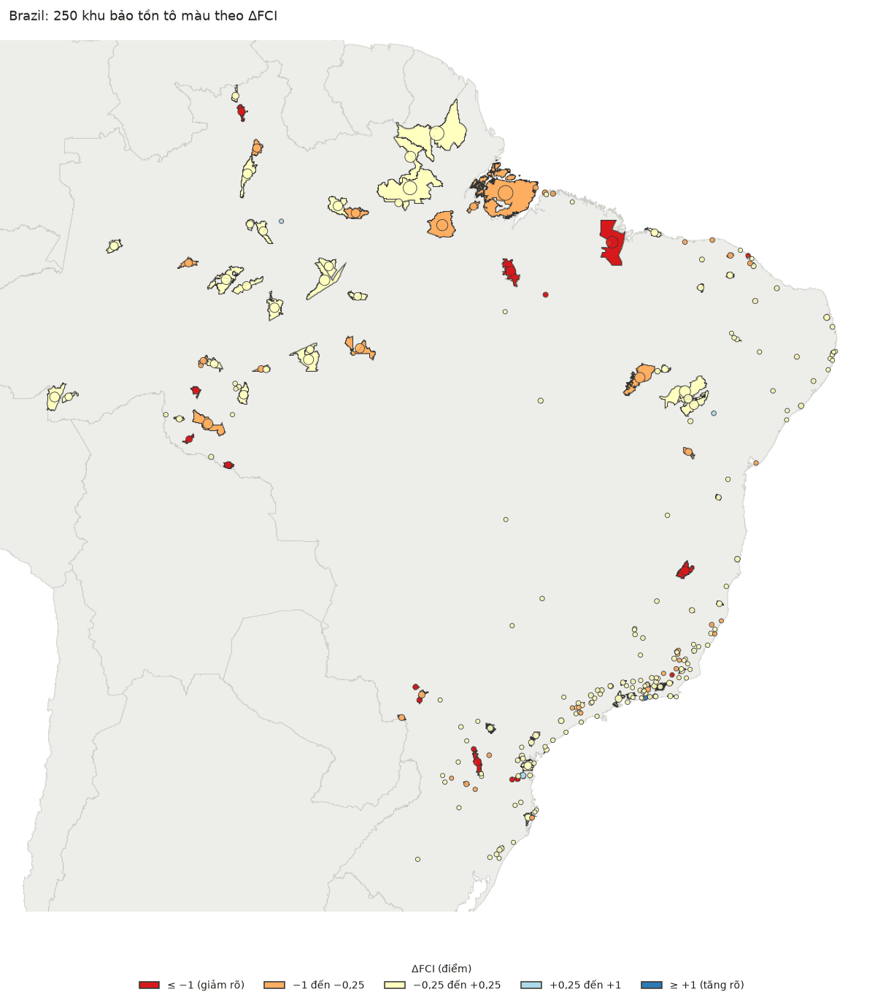
10 khu có ΔFCI giảm nhiều nhất
| Khu bảo tồn | Loại | Đất (km²) | Trọng số W | FCI 2017 | FCI 2025 | ΔFCI | p MK | Kết luận | Rừng & cây 2025 | Rừng tự nhiên | Cách tính |
|---|---|---|---|---|---|---|---|---|---|---|---|
| Área De Proteção Ambiental Do Rio Pardo | Environmental Protection Area | 1.138,1 | 4,5 | 18,2 | 10,0 | -8,26 | 0,002 | Suy giảm | 15% | -42,9% | 5.000 điểm |
| Reserva Extrativista Do Extremo Norte Do Estado Do Tocantins | Extractive Reserve | 90,7 | 4,5 | 17,0 | 12,1 | -4,86 | 0,000 | Suy giảm | 20% | -28,0% | toàn bộ, 10 m |
| Reserva Extrativista Do Rio Do Cautário | Extractive Reserve | 751,3 | 4,5 | 98,6 | 94,6 | -4,02 | 0,007 | Suy giảm | 99% | -0,0% | 5.000 điểm |
| Área De Proteção Ambiental Do Rio Dos Bugres | Environmental Protection Area | 70,6 | 4,5 | 36,1 | 33,0 | -3,10 | 0,001 | Suy giảm | 64% | -1,6% | toàn bộ, 10 m |
| Floresta Nacional De Roraima | Forest | 1.689,8 | 4,5 | 97,0 | 94,0 | -3,03 | 0,001 | Suy giảm | 98% | -0,3% | 5.000 điểm |
| Área De Proteção Ambiental Do Lago De Tucurui | Environmental Protection Area | 5.682,3 | 4,5 | 19,5 | 16,5 | -2,99 | 0,000 | Suy giảm | 23% | -16,8% | 5.000 điểm |
| Área De Proteção Ambiental Da Baixada Maranhense | Environmental Protection Area | 16.276,2 | 4,5 | 22,4 | 19,8 | -2,53 | 0,001 | Suy giảm | 32% | -11,6% | 5.000 điểm |
| Estação Ecológica Do Pécem | Ecological Station | 9,6 | 4,4 | 47,6 | 45,5 | -2,15 | 0,002 | Suy giảm | 76% | -4,5% | toàn bộ, 10 m |
| Refúgio De Vida Silvestre Do Macuco | Wildlife Refuge | 15,6 | 4,5 | 55,7 | 53,7 | -2,00 | 0,009 | Suy giảm | 89% | -3,6% | toàn bộ, 10 m |
| Parque Natural Municipal De Naviraí | Park | 162,2 | 4,5 | 15,8 | 14,0 | -1,86 | 0,012 | Suy giảm | 21% | -10,4% | 5.000 điểm |
Tất cả 250 khu đã phân tích (xếp theo diện tích)
| Khu bảo tồn | Loại | Đất (km²) | Trọng số W | FCI 2017 | FCI 2025 | ΔFCI | p MK | Kết luận | Rừng & cây 2025 | Rừng tự nhiên | Cách tính |
|---|---|---|---|---|---|---|---|---|---|---|---|
| Área De Proteção Ambiental Do Arquipélago Do Marajó | Environmental Protection Area | 42.899,4 | 4,5 | 62,6 | 62,2 | -0,44 | 0,000 | Ổn định / không rõ | 64% | -0,5% | 5.000 điểm |
| Parque Nacional Montanhas Do Tumucumaque | Park | 38.651,7 | 4,5 | 99,8 | 99,8 | 0,00 | 1,000 | Ổn định / không rõ | 100% | 0,0% | 5.000 điểm |
| Floresta Estadual Do Paru | Forest | 30.509,2 | 4,5 | 99,3 | 99,2 | -0,10 | 0,001 | Ổn định / không rõ | 99% | -0,1% | 5.000 điểm |
| Área De Proteção Ambiental Da Baixada Maranhense | Environmental Protection Area | 16.276,2 | 4,5 | 22,4 | 19,8 | -2,53 | 0,001 | Suy giảm | 32% | -11,6% | 5.000 điểm |
| Reserva Extrativista Verde Para Sempre | Extractive Reserve | 12.786,1 | 4,5 | 74,3 | 73,5 | -0,78 | 0,000 | Ổn định / không rõ | 75% | -1,0% | 5.000 điểm |
| Área De Proteção Ambiental Lago De Sobradinho | Environmental Protection Area | 12.356,2 | 4,5 | 10,9 | 10,8 | -0,06 | 0,835 | Ổn định / không rõ | 14% | -0,6% | 5.000 điểm |
| Reserva Biológica De Maicuru | Biological Reserve | 11.731,5 | 4,5 | 99,6 | 99,6 | 0,00 | 1,000 | Ổn định / không rõ | 100% | 0,0% | 5.000 điểm |
| Floresta Nacional De Pau-Rosa | Forest | 9.853,2 | 4,5 | 99,4 | 99,4 | -0,01 | 0,048 | Ổn định / không rõ | 99% | 0,0% | 5.000 điểm |
| Parque Nacional Da Serra Das Confusões | Park | 9.161,5 | 4,5 | 87,2 | 86,6 | -0,65 | 0,000 | Ổn định / không rõ | 90% | -0,3% | 5.000 điểm |
| Reserva De Desenvolvimento Sustentável Piagaçu Purus | Sustainable Development Reserve | 8.009,0 | 4,5 | 83,9 | 83,7 | -0,23 | 0,001 | Ổn định / không rõ | 84% | -0,2% | 5.000 điểm |
| Parque Estadual Sucunduri | Park | 7.960,6 | 4,5 | 99,2 | 99,1 | -0,06 | 0,175 | Ổn định / không rõ | 99% | 0,0% | 5.000 điểm |
| Parque Nacional De Pacaás Novos | Park | 7.061,2 | 4,5 | 94,7 | 93,9 | -0,80 | 0,002 | Ổn định / không rõ | 95% | -0,0% | 5.000 điểm |
| Parque Estadual Chandless | Park | 6.934,7 | 4,5 | 99,8 | 99,8 | 0,00 | 0,348 | Ổn định / không rõ | 100% | 0,0% | 5.000 điểm |
| Reserva De Desenvolvimento Sustentável Itapará - Boiaçu | Sustainable Development Reserve | 6.228,4 | 4,5 | 85,7 | 85,6 | -0,02 | 0,009 | Ổn định / không rõ | 86% | -0,0% | 5.000 điểm |
| Floresta Estadual De Faro | Forest | 6.140,1 | 4,5 | 98,7 | 98,6 | -0,12 | 0,144 | Ổn định / không rõ | 99% | -0,1% | 5.000 điểm |
| Reserva De Desenvolvimento Sustentável Do Juma | Sustainable Development Reserve | 5.807,8 | 4,5 | 96,3 | 96,1 | -0,14 | 0,037 | Ổn định / không rõ | 97% | -0,0% | 5.000 điểm |
| Área De Proteção Ambiental Do Lago De Tucurui | Environmental Protection Area | 5.682,3 | 4,5 | 19,5 | 16,5 | -2,99 | 0,000 | Suy giảm | 23% | -16,8% | 5.000 điểm |
| Parque Nacional Do Rio Novo | Park | 5.381,1 | 4,5 | 99,0 | 98,6 | -0,40 | 0,002 | Ổn định / không rõ | 99% | -0,1% | 5.000 điểm |
| Área De Proteção Ambiental Do Boqueirão Da Onça | Environmental Protection Area | 5.056,9 | 4,5 | 16,6 | 16,6 | -0,01 | 0,404 | Ổn định / không rõ | 20% | -0,1% | 5.000 điểm |
| Floresta Estadual Maúes | Forest | 4.498,6 | 4,5 | 95,6 | 95,4 | -0,20 | 0,001 | Ổn định / không rõ | 96% | -0,1% | 5.000 điểm |
| Floresta Nacional De Saracá-Taquera | Forest | 4.394,5 | 4,5 | 95,7 | 94,9 | -0,81 | 0,000 | Ổn định / không rõ | 96% | -0,7% | 5.000 điểm |
| Reserva De Desenvolvimento Sustentável Igapó-Açu | Sustainable Development Reserve | 3.946,2 | 4,5 | 99,3 | 99,3 | -0,03 | 0,016 | Ổn định / không rõ | 99% | -0,0% | 5.000 điểm |
| Parque Nacional De Anavilhanas | Park | 3.502,4 | 4,5 | 57,1 | 57,1 | 0,00 | 1,000 | Ổn định / không rõ | 57% | 0,0% | 5.000 điểm |
| Parque Nacional Do Boqueirão Da Onça | Park | 3.469,0 | 4,5 | 36,5 | 36,5 | 0,00 | 1,000 | Ổn định / không rõ | 39% | 0,0% | 5.000 điểm |
| Reserva Biológica Do Jaru | Biological Reserve | 3.468,6 | 4,5 | 99,3 | 99,3 | -0,01 | 0,118 | Ổn định / không rõ | 100% | 0,0% | 5.000 điểm |
| Área De Proteção Ambiental Do Alto Do Mucuri | Environmental Protection Area | 3.247,6 | 4,5 | 35,3 | 34,3 | -1,01 | 0,001 | Suy giảm | 58% | -2,7% | 5.000 điểm |
| Estação Ecológica De Jutaí-Solimões | Ecological Station | 2.901,2 | 4,5 | 99,0 | 99,0 | -0,03 | 0,048 | Ổn định / không rõ | 99% | -0,0% | 5.000 điểm |
| Parque Nacional Do Viruá | Park | 2.809,8 | 4,5 | 59,5 | 59,0 | -0,55 | 0,001 | Ổn định / không rõ | 60% | -0,2% | 5.000 điểm |
| Floresta Nacional De Jacundá | Forest | 2.208,2 | 4,5 | 98,8 | 98,7 | -0,18 | 0,001 | Ổn định / không rõ | 99% | -0,0% | 5.000 điểm |
| Floresta Nacional De Mulata | Forest | 2.155,4 | 4,5 | 99,0 | 98,9 | -0,04 | 0,466 | Ổn định / không rõ | 99% | +0,0% | 5.000 điểm |
| Floresta Nacional De Itaituba I | Forest | 2.130,9 | 4,5 | 99,9 | 99,8 | -0,13 | 0,022 | Ổn định / không rõ | 100% | -0,0% | 5.000 điểm |
| Reserva Extrativista Catuá-Ipixuna | Extractive Reserve | 2.123,2 | 4,5 | 95,1 | 94,6 | -0,46 | 0,001 | Ổn định / không rõ | 97% | -0,3% | 5.000 điểm |
| Área De Proteção Ambiental Estadual Da Serra Da Esperança | Environmental Protection Area | 2.045,2 | 4,5 | 45,5 | 44,3 | -1,19 | 0,001 | Suy giảm | 83% | -0,6% | 5.000 điểm |
| Área De Proteção Ambiental Estadual De Guaratuba | Environmental Protection Area | 1.940,8 | 4,5 | 69,2 | 69,0 | -0,21 | 0,001 | Ổn định / không rõ | 92% | -0,2% | 5.000 điểm |
| Floresta Estadual Apuí | Forest | 1.827,4 | 4,5 | 99,2 | 99,2 | -0,01 | 0,118 | Ổn định / không rõ | 99% | 0,0% | 5.000 điểm |
| Floresta Nacional Do Macauã | Forest | 1.763,7 | 4,5 | 99,8 | 99,8 | -0,00 | 0,175 | Ổn định / không rõ | 100% | 0,0% | 5.000 điểm |
| Floresta Nacional De Roraima | Forest | 1.689,8 | 4,5 | 97,0 | 94,0 | -3,03 | 0,001 | Suy giảm | 98% | -0,3% | 5.000 điểm |
| Parque Estadual Rio Negro Setor Norte | Park | 1.481,2 | 4,5 | 98,8 | 98,6 | -0,13 | 0,002 | Ổn định / không rõ | 99% | -0,0% | 5.000 điểm |
| Reserva Extrativista Gurupá-Melgaço | Extractive Reserve | 1.447,7 | 4,5 | 96,6 | 95,7 | -0,92 | 0,009 | Ổn định / không rõ | 97% | 0,0% | 5.000 điểm |
| Parque Nacional Dos Lençóis Maranhenses | Park | 1.440,4 | 4,5 | 7,3 | 7,2 | -0,08 | 0,002 | Ổn định / không rõ | 12% | -1,2% | 5.000 điểm |
| Área De Proteção Ambiental Marimbus / Iraquara | Environmental Protection Area | 1.248,9 | 4,5 | 27,7 | 27,3 | -0,39 | 0,118 | Ổn định / không rõ | 43% | -1,5% | 5.000 điểm |
| Área De Proteção Ambiental Do Rio Pardo | Environmental Protection Area | 1.138,1 | 4,5 | 18,2 | 10,0 | -8,26 | 0,002 | Suy giảm | 15% | -42,9% | 5.000 điểm |
| Floresta Nacional Do Parima | Forest | 1.094,8 | 4,5 | 99,9 | 99,9 | -0,03 | 0,175 | Ổn định / không rõ | 100% | +0,0% | 5.000 điểm |
| Parque Nacional Da Serra Da Bocaina | Park | 1.063,9 | 4,5 | 75,0 | 75,0 | -0,04 | 0,048 | Ổn định / không rõ | 94% | -0,1% | 5.000 điểm |
| Parque Nacional Da Serra Da Capivara | Park | 1.007,6 | 4,5 | 76,6 | 76,6 | 0,00 | 1,000 | Ổn định / không rõ | 77% | 0,0% | 5.000 điểm |
| Parque Estadual Ilha Das Flores | Park | 898,3 | 4,5 | 45,3 | 44,0 | -1,22 | 0,000 | Suy giảm | 45% | -1,6% | 5.000 điểm |
| Parque Estadual Da Serra Do Tabuleiro | Park | 838,0 | 4,5 | 56,4 | 56,4 | -0,04 | 0,005 | Ổn định / không rõ | 95% | -0,0% | 5.000 điểm |
| Floresta Estadual Manicoré | Forest | 833,7 | 4,5 | 99,0 | 98,6 | -0,30 | 0,001 | Ổn định / không rõ | 99% | -0,2% | 5.000 điểm |
| Reserva Extrativista Do Lago Do Cuniã | Extractive Reserve | 764,1 | 4,5 | 93,8 | 93,4 | -0,34 | 0,001 | Ổn định / không rõ | 94% | -0,0% | 5.000 điểm |
| Reserva Extrativista Do Rio Do Cautário | Extractive Reserve | 751,3 | 4,5 | 98,6 | 94,6 | -4,02 | 0,007 | Suy giảm | 99% | -0,0% | 5.000 điểm |
| Parque Estadual Das Várzeas Do Rio Ivinhema | Park | 742,2 | 4,5 | 15,8 | 15,5 | -0,31 | 0,000 | Ổn định / không rõ | 24% | -2,0% | 5.000 điểm |
| Parque Estadual Guariba | Park | 711,0 | 4,5 | 77,1 | 76,9 | -0,22 | 0,001 | Ổn định / không rõ | 77% | -0,2% | 5.000 điểm |
| Área De Proteção Ambiental Serras Da Caatinga | Environmental Protection Area | 664,3 | 4,5 | 43,1 | 43,2 | +0,08 | 0,251 | Ổn định / không rõ | 72% | +0,2% | 5.000 điểm |
| Área De Proteção Ambiental Quilombos Do Médio Ribeira | Environmental Protection Area | 648,0 | 4,5 | 68,2 | 68,1 | -0,07 | 0,061 | Ổn định / không rõ | 93% | -0,2% | 5.000 điểm |
| Área De Proteção Ambiental Do Boqueirão Do Poti | Environmental Protection Area | 633,1 | 4,5 | 36,6 | 36,4 | -0,20 | 0,602 | Ổn định / không rõ | 55% | -0,5% | 5.000 điểm |
| Reserva Biológica Rio Ouro Preto | Biological Reserve | 591,4 | 4,5 | 100,0 | 100,0 | -0,01 | 0,754 | Ổn định / không rõ | 100% | -0,0% | 5.000 điểm |
| Arie Paulo Nogueira Neto | Area of Relevant Ecological Interest | 431,2 | 4,5 | 53,6 | 53,6 | +0,00 | 0,754 | Ổn định / không rõ | 99% | +0,2% | 5.000 điểm |
| Área De Proteção Ambiental Da Bacia Do Rio Iguatemi Do Município De Japorã-Ms | Environmental Protection Area | 416,6 | 4,5 | 8,0 | 7,7 | -0,31 | 0,000 | Ổn định / không rõ | 13% | -2,1% | 5.000 điểm |
| Área De Proteção Ambiental Piquiri-Una | Environmental Protection Area | 413,5 | 4,5 | 7,8 | 7,6 | -0,16 | 0,001 | Ổn định / không rõ | 13% | -2,0% | 5.000 điểm |
| Área De Proteção Ambiental Serra Dona Francisca | Environmental Protection Area | 404,9 | 4,5 | 61,6 | 61,8 | +0,29 | 0,016 | Ổn định / không rõ | 90% | +0,2% | 5.000 điểm |
| Parque Estadual Cunhambebe | Park | 380,8 | 4,5 | 71,3 | 71,3 | -0,04 | 0,012 | Ổn định / không rõ | 96% | -0,1% | 5.000 điểm |
| Área De Proteção Ambiental De Macaé De Cima | Environmental Protection Area | 350,0 | 4,5 | 54,5 | 54,4 | -0,05 | 0,022 | Ổn định / không rõ | 89% | -0,1% | 5.000 điểm |
| Parque Estadual Das Lauráceas | Park | 290,7 | 4,5 | 68,6 | 68,6 | 0,00 | 1,000 | Ổn định / không rõ | 99% | 0,0% | 5.000 điểm |
| Área De Proteção Ambiental Da Serra De Itapipoca | Environmental Protection Area | 285,8 | 4,5 | 37,5 | 37,2 | -0,35 | 0,012 | Ổn định / không rõ | 63% | -0,9% | 5.000 điểm |
| Reserva Biológica De Sooretama | Biological Reserve | 278,6 | 4,5 | 57,9 | 58,0 | +0,07 | 0,002 | Ổn định / không rõ | 96% | +0,1% | 5.000 điểm |
| Parque Estadual Do Jurupará | Park | 262,4 | 4,5 | 60,5 | 60,5 | +0,01 | 0,175 | Ổn định / không rõ | 93% | +0,0% | 5.000 điểm |
| Reserva Biológica Do Tinguá | Biological Reserve | 248,1 | 4,5 | 89,7 | 89,7 | 0,00 | 1,000 | Ổn định / không rõ | 99% | 0,0% | 5.000 điểm |
| Área De Proteção Ambiental Do Rio Vermelho | Environmental Protection Area | 238,4 | 4,5 | 49,4 | 48,2 | -1,17 | 0,001 | Suy giảm | 81% | -0,5% | 5.000 điểm |
| Parque Nacional Do Descobrimento | Park | 226,1 | 4,5 | 55,6 | 55,8 | +0,14 | 0,001 | Ổn định / không rõ | 94% | +0,3% | 5.000 điểm |
| Área De Proteção Ambiental Do Alto Iguaçu | Environmental Protection Area | 221,1 | 4,5 | 29,6 | 28,8 | -0,80 | 0,000 | Ổn định / không rõ | 48% | -2,7% | 5.000 điểm |
| Estação Ecológica Da Chapada Da Serra Branca | Ecological Station | 215,8 | 4,5 | 77,8 | 77,6 | -0,24 | 0,001 | Ổn định / không rõ | 78% | -0,3% | 5.000 điểm |
| Parque Estadual Do Desengano | Park | 213,3 | 4,5 | 65,4 | 65,4 | -0,00 | 0,466 | Ổn định / không rõ | 95% | 0,0% | 5.000 điểm |
| Parque Nacional Da Serra Dos Órgãos | Park | 198,5 | 4,5 | 66,5 | 66,5 | -0,06 | 0,037 | Ổn định / không rõ | 89% | -0,1% | 5.000 điểm |
| Área De Proteção Ambiental Da Bacia Do Rio Macacu | Environmental Protection Area | 195,0 | 4,5 | 36,7 | 36,7 | -0,02 | 0,404 | Ổn định / không rõ | 54% | -0,0% | 5.000 điểm |
| Área De Proteção Ambiental Da Marituba Do Peixe | Environmental Protection Area | 185,3 | 4,5 | 12,0 | 12,2 | +0,21 | 0,029 | Ổn định / không rõ | 24% | +2,2% | 5.000 điểm |
| Parque Nacional Da Serra Geral | Park | 172,7 | 4,5 | 41,8 | 41,7 | -0,07 | 1,000 | Ổn định / không rõ | 70% | +0,0% | 5.000 điểm |
| Refúgio De Vida Silvestre Dos Campos De Palmas | Wildlife Refuge | 165,9 | 4,5 | 16,8 | 16,2 | -0,65 | 0,002 | Ổn định / không rõ | 38% | +1,1% | 5.000 điểm |
| Parque Natural Municipal De Naviraí | Park | 162,2 | 4,5 | 15,8 | 14,0 | -1,86 | 0,012 | Suy giảm | 21% | -10,4% | 5.000 điểm |
| Reserva Extrativista Marinha De Soure | Extractive Reserve | 159,0 | 4,5 | 38,3 | 38,0 | -0,30 | 0,000 | Ổn định / không rõ | 50% | -0,9% | 5.000 điểm |
| Área De Proteção Ambiental Da Sub-Bacia Do Rio Ivinhema | Environmental Protection Area | 154,1 | 4,5 | 29,6 | 28,4 | -1,19 | 0,002 | Suy giảm | 36% | -0,1% | 5.000 điểm |
| Parque Estadual De Itaberaba | Park | 151,2 | 4,5 | 55,4 | 55,3 | -0,06 | 0,677 | Ổn định / không rõ | 95% | +0,1% | 5.000 điểm |
| Parque Estadual Sete Salões | Park | 139,2 | 4,5 | 46,8 | 46,5 | -0,20 | 0,001 | Ổn định / không rõ | 78% | -0,4% | 5.000 điểm |
| Reserva Extrativista Marinha Mocapajuba | Extractive Reserve | 134,5 | 4,5 | 52,8 | 52,3 | -0,46 | 0,000 | Ổn định / không rõ | 59% | -1,1% | 5.000 điểm |
| Parque Estadual Da Ilha Do Cardoso | Park | 129,9 | 4,5 | 80,2 | 80,0 | -0,22 | 0,001 | Ổn định / không rõ | 94% | -0,4% | 5.000 điểm |
| Parque Nacional De Aparados Da Serra | Park | 129,7 | 4,5 | 37,8 | 37,7 | -0,14 | 0,001 | Ổn định / không rõ | 63% | -0,1% | 5.000 điểm |
| Estação Ecológica Do Castanhão | Ecological Station | 125,7 | 4,5 | 7,2 | 7,2 | +0,01 | 0,251 | Ổn định / không rõ | 12% | +0,2% | 5.000 điểm |
| Parque Estadual Da Pedra Branca | Park | 124,0 | 4,5 | 55,1 | 55,1 | -0,01 | 0,076 | Ổn định / không rõ | 90% | -0,0% | 5.000 điểm |
| Parque Nacional De Boa Nova | Park | 122,9 | 4,5 | 42,1 | 42,0 | -0,02 | 0,095 | Ổn định / không rõ | 70% | -0,1% | 5.000 điểm |
| Área De Proteção Ambiental São Francisco Xavier | Environmental Protection Area | 119,5 | 4,5 | 45,9 | 45,9 | -0,02 | 0,076 | Ổn định / không rõ | 76% | -0,0% | 5.000 điểm |
| Área De Proteção Ambiental Grutas Dos Brejões / Veredas Do Romão Gramacho | Environmental Protection Area | 118,7 | 4,5 | 19,1 | 19,1 | -0,01 | 0,076 | Ổn định / không rõ | 32% | -0,1% | 5.000 điểm |
| Parque Estadual Do Lajeado | Park | 107,5 | 4,5 | 47,8 | 47,8 | -0,01 | 1,000 | Ổn định / không rõ | 69% | -0,0% | 5.000 điểm |
| Área De Proteção Ambiental Do Iraí | Environmental Protection Area | 107,4 | 4,5 | 20,8 | 20,6 | -0,21 | 0,016 | Ổn định / không rõ | 37% | 0,0% | 5.000 điểm |
| Reserva De Fauna Pau D'Oleo | Wildlife Reserve | 105,3 | 4,5 | 43,3 | 43,1 | -0,18 | 0,016 | Ổn định / không rõ | 46% | -0,0% | 5.000 điểm |
| Monumento Natural Estadual Serra Das Torres | Natural Monument | 104,5 | 4,5 | 52,1 | 52,0 | -0,04 | 0,348 | Ổn định / không rõ | 88% | -0,1% | 5.000 điểm |
| Monumento Natural Estadual Mantiqueira Paulista | Natural Monument | 103,7 | 4,5 | 59,2 | 59,2 | -0,01 | 0,466 | Ổn định / không rõ | 97% | -0,0% | 5.000 điểm |
| Parque Estadual Das Águas | Park | 98,4 | 4,5 | 44,2 | 44,1 | -0,06 | 0,076 | Ổn định / không rõ | 74% | -0,1% | toàn bộ, 10 m |
| Área De Proteção Ambiental De Massambaba | Environmental Protection Area | 91,2 | 4,5 | 11,4 | 11,2 | -0,16 | 0,001 | Ổn định / không rõ | 19% | -1,4% | toàn bộ, 10 m |
| Reserva Extrativista Do Extremo Norte Do Estado Do Tocantins | Extractive Reserve | 90,7 | 4,5 | 17,0 | 12,1 | -4,86 | 0,000 | Suy giảm | 20% | -28,0% | toàn bộ, 10 m |
| Área De Proteção Ambiental Estadual Do Piraquara | Environmental Protection Area | 89,8 | 4,5 | 33,3 | 33,2 | -0,13 | 0,016 | Ổn định / không rõ | 56% | -0,3% | toàn bộ, 10 m |
| Reserva Extrativista Marinha Cuinarana | Extractive Reserve | 87,4 | 4,5 | 62,0 | 61,5 | -0,52 | 0,000 | Ổn định / không rõ | 74% | -1,1% | 5.000 điểm |
| Área De Proteção Ambiental Das Lagunas E Florestas De Niterói | Environmental Protection Area | 86,5 | 4,5 | 32,3 | 32,3 | +0,03 | 0,016 | Ổn định / không rõ | 54% | +0,0% | toàn bộ, 10 m |
| Parque Nacional Da Furna Feia | Park | 85,6 | 4,5 | 47,9 | 47,9 | +0,00 | 0,211 | Ổn định / không rõ | 80% | +0,0% | toàn bộ, 10 m |
| Área De Proteção Ambiental Do Alto Rio Turvo | Environmental Protection Area | 82,5 | 4,5 | 38,5 | 38,3 | -0,21 | 0,466 | Ổn định / không rõ | 67% | -0,2% | toàn bộ, 10 m |
| Parque Estadual De Campos Do Jordão | Park | 82,0 | 4,5 | 53,7 | 53,7 | -0,00 | 0,144 | Ổn định / không rõ | 94% | +0,0% | toàn bộ, 10 m |
| Parque Estadual Da Pedra Selada | Park | 80,4 | 4,5 | 62,0 | 62,0 | -0,00 | 0,144 | Ổn định / không rõ | 97% | -0,0% | toàn bộ, 10 m |
| Parque Estadual Da Cantareira | Park | 76,2 | 4,5 | 73,3 | 73,3 | -0,00 | 0,001 | Ổn định / không rõ | 99% | -0,0% | toàn bộ, 10 m |
| Área De Proteção Ambiental Do Rio Dos Bugres | Environmental Protection Area | 70,6 | 4,5 | 36,1 | 33,0 | -3,10 | 0,001 | Suy giảm | 64% | -1,6% | toàn bộ, 10 m |
| Parque Estadual Da Serra Da Esperança | Park | 69,4 | 4,5 | 57,6 | 56,2 | -1,40 | 0,000 | Suy giảm | 96% | -2,4% | toàn bộ, 10 m |
| Refúgio De Vida Silvestre Cabeceiras Do Capibaribe | Wildlife Refuge | 69,3 | 4,5 | 48,3 | 48,3 | +0,03 | 0,917 | Ổn định / không rõ | 81% | +0,1% | toàn bộ, 10 m |
| Area De Proteção Ambiental Miracema | Environmental Protection Area | 67,8 | 4,5 | 27,1 | 26,9 | -0,20 | 0,048 | Ổn định / không rõ | 45% | -0,7% | toàn bộ, 10 m |
| Refugio Da Vida Silvestre Nascentes Do Sai | Wildlife Refuge | 67,0 | 4,5 | 69,9 | 69,9 | +0,02 | 0,175 | Ổn định / không rõ | 100% | +0,1% | toàn bộ, 10 m |
| Parque Nacional De Ubajara | Park | 63,0 | 4,5 | 58,5 | 58,5 | -0,04 | 0,002 | Ổn định / không rõ | 97% | -0,1% | toàn bộ, 10 m |
| Estação Ecológica De Murici | Ecological Station | 61,3 | 4,5 | 45,5 | 45,5 | -0,05 | 0,005 | Ổn định / không rõ | 75% | -0,1% | toàn bộ, 10 m |
| Estação Ecológica Estadual Aratinga | Ecological Station | 60,4 | 4,5 | 47,6 | 47,5 | -0,14 | 0,002 | Ổn định / không rõ | 81% | +0,1% | toàn bộ, 10 m |
| Área De Proteção Ambiental Da Serra De Maranguape | Environmental Protection Area | 59,4 | 4,5 | 48,7 | 48,3 | -0,36 | 0,001 | Ổn định / không rõ | 80% | -0,8% | toàn bộ, 10 m |
| Reserva Extrativista Massaranduba | Extractive Reserve | 55,7 | 4,5 | 98,0 | 98,0 | -0,03 | 0,251 | Ổn định / không rõ | 100% | -0,0% | toàn bộ, 10 m |
| Refúgio De Vida Silvestre Do Soldadinho-Do-Araripe | Wildlife Refuge | 55,4 | 4,5 | 59,7 | 59,6 | -0,03 | 0,917 | Ổn định / không rõ | 97% | -0,1% | toàn bộ, 10 m |
| Monumento Natural Estadual Da Serra Da Beleza | Natural Monument | 54,8 | 4,5 | 46,5 | 46,5 | -0,02 | 0,251 | Ổn định / không rõ | 78% | -0,0% | toàn bộ, 10 m |
| Área De Proteção Ambiental Rio Do Colégio | Environmental Protection Area | 53,8 | 4,5 | 28,5 | 28,3 | -0,13 | 0,002 | Ổn định / không rõ | 48% | -0,5% | toàn bộ, 10 m |
| Parque Natural Municipal Montanhas De Teresópolis | Park | 53,6 | 4,5 | 51,0 | 51,0 | +0,02 | 0,001 | Ổn định / không rõ | 85% | +0,0% | toàn bộ, 10 m |
| Área De Relevante Interesse Ecológico Manguezais Da Foz Do Rio Mamanguape | Area of Relevant Ecological Interest | 53,4 | 4,5 | 45,0 | 44,8 | -0,20 | 0,001 | Ổn định / không rõ | 74% | -0,4% | toàn bộ, 10 m |
| Área De Proteção Ambiental Do Entorno Costeiro | Environmental Protection Area | 45,4 | 4,5 | 10,8 | 10,5 | -0,27 | 0,118 | Ổn định / không rõ | 19% | -1,1% | toàn bộ, 10 m |
| Área De Proteção Ambiental Do Iguaçú | Environmental Protection Area | 42,9 | 4,5 | 16,1 | 15,9 | -0,20 | 0,000 | Ổn định / không rõ | 27% | -1,2% | toàn bộ, 10 m |
| Área De Proteção Ambiental Vale Do Morro Da Torre | Environmental Protection Area | 42,5 | 4,5 | 13,3 | 13,2 | -0,16 | 0,002 | Ổn định / không rõ | 22% | -1,2% | toàn bộ, 10 m |
| Parque Nacional Da Tijuca | Park | 39,6 | 4,5 | 66,5 | 66,5 | +0,02 | 0,016 | Ổn định / không rõ | 96% | +0,0% | toàn bộ, 10 m |
| Área De Proteção Ambiental Da Lagoa Da Jijoca | Environmental Protection Area | 39,4 | 4,5 | 10,7 | 10,2 | -0,50 | 0,002 | Ổn định / không rõ | 31% | -5,2% | toàn bộ, 10 m |
| Área De Relevante Interesse Ecológico Beberibe | Area of Relevant Ecological Interest | 39,4 | 4,5 | 36,3 | 36,1 | -0,15 | 0,000 | Ổn định / không rõ | 60% | -0,4% | toàn bộ, 10 m |
| Refúgio Da Vida Silvestre Soldadinho Do Araripe | Wildlife Refuge | 38,9 | 4,5 | 61,2 | 61,2 | +0,01 | 0,016 | Ổn định / không rõ | 100% | +0,0% | toàn bộ, 10 m |
| Área De Relevante Interesse Ecológico Da Lagoa Do Portinho | Area of Relevant Ecological Interest | 37,3 | 4,5 | 35,6 | 34,7 | -0,92 | 0,000 | Ổn định / không rõ | 58% | -2,6% | toàn bộ, 10 m |
| Floresta Nacional De Irati | Forest | 35,6 | 4,5 | 40,7 | 40,3 | -0,40 | 0,251 | Ổn định / không rõ | 94% | +0,0% | toàn bộ, 10 m |
| Área De Proteção Ambiental Do Pico Do Goiapaba-Açu | Environmental Protection Area | 35,2 | 4,5 | 37,4 | 36,7 | -0,75 | 0,000 | Ổn định / không rõ | 83% | -1,7% | toàn bộ, 10 m |
| Área De Proteção Ambiental Das Serras De Pindobaçu | Environmental Protection Area | 34,9 | 4,5 | 35,0 | 35,4 | +0,39 | 0,001 | Ổn định / không rõ | 58% | +1,1% | toàn bộ, 10 m |
| Monumento Natural Municipal Do Pico Do Itaguaré | Natural Monument | 33,3 | 4,5 | 60,9 | 60,9 | +0,00 | 0,048 | Ổn định / không rõ | 97% | +0,0% | toàn bộ, 10 m |
| Parque Estadual Serra Da Candonga | Park | 33,3 | 4,5 | 43,3 | 43,1 | -0,19 | 0,002 | Ổn định / không rõ | 72% | -0,5% | toàn bộ, 10 m |
| Monumento Natural Estadual Da Pedra Grande | Natural Monument | 33,0 | 4,5 | 52,8 | 52,8 | -0,03 | 0,602 | Ổn định / không rõ | 91% | +0,1% | toàn bộ, 10 m |
| Reserva Biológica Estadual Da Praia Do Sul | Biological Reserve | 32,6 | 4,5 | 70,6 | 70,5 | -0,05 | 0,118 | Ổn định / không rõ | 97% | -0,1% | toàn bộ, 10 m |
| Parque Estadual Da Serra Da Tiririca | Park | 32,2 | 4,5 | 52,0 | 52,1 | +0,19 | 0,001 | Ổn định / không rõ | 87% | +0,3% | toàn bộ, 10 m |
| Monumento Natural Estadual De Itatiaia | Natural Monument | 32,2 | 4,5 | 24,3 | 24,4 | +0,06 | 0,602 | Ổn định / không rõ | 41% | +0,3% | toàn bộ, 10 m |
| Área De Proteção Ambiental Do Cabuçu Tanque Grande | Environmental Protection Area | 32,1 | 4,5 | 35,4 | 34,8 | -0,67 | 0,000 | Ổn định / không rõ | 59% | -1,9% | toàn bộ, 10 m |
| Monumento Natural Estadual Da Pedra Do Baú | Natural Monument | 31,6 | 4,5 | 54,2 | 54,0 | -0,14 | 0,009 | Ổn định / không rõ | 91% | -0,2% | toàn bộ, 10 m |
| Área De Proteção Ambiental Do Banhado | Environmental Protection Area | 31,2 | 4,5 | 9,6 | 9,7 | +0,10 | 0,002 | Ổn định / không rõ | 17% | -0,3% | toàn bộ, 10 m |
| Reserva Biológica De Duas Bocas | Biological Reserve | 30,0 | 4,5 | 63,9 | 63,9 | 0,00 | 1,000 | Ổn định / không rõ | 98% | 0,0% | toàn bộ, 10 m |
| Reserva Biológica Estadual De Guaratiba | Biological Reserve | 27,8 | 4,5 | 44,2 | 44,2 | -0,02 | 0,001 | Ổn định / không rõ | 56% | -0,0% | toàn bộ, 10 m |
| Área De Proteção Ambiental Do Triunfo | Environmental Protection Area | 27,7 | 4,5 | 20,1 | 19,7 | -0,36 | 0,175 | Ổn định / không rõ | 34% | -2,5% | toàn bộ, 10 m |
| Área De Proteção Ambiental Mesquita | Environmental Protection Area | 27,1 | 4,5 | 62,3 | 62,2 | -0,14 | 0,000 | Ổn định / không rõ | 84% | -0,3% | toàn bộ, 10 m |
| Reserva Extrativista De São João Da Ponta | Extractive Reserve | 27,1 | 4,5 | 67,2 | 67,1 | -0,06 | 0,009 | Ổn định / không rõ | 76% | -0,1% | toàn bộ, 10 m |
| Estação Ecológica Chaúas | Ecological Station | 24,9 | 4,5 | 90,7 | 90,7 | 0,00 | 1,000 | Ổn định / không rõ | 99% | 0,0% | toàn bộ, 10 m |
| Reserva Extrativista Mogno | Extractive Reserve | 24,5 | 4,5 | 95,3 | 95,2 | -0,07 | 0,466 | Ổn định / không rõ | 99% | -0,1% | toàn bộ, 10 m |
| Área De Proteção Ambiental Da Serra Da Cambraia | Environmental Protection Area | 24,3 | 4,5 | 29,4 | 29,3 | -0,07 | 0,466 | Ổn định / không rõ | 49% | -0,2% | toàn bộ, 10 m |
| Estação Ecológica Wenceslau Guimarães | Ecological Station | 24,2 | 4,5 | 61,7 | 61,6 | -0,09 | 0,029 | Ổn định / không rõ | 94% | -0,2% | toàn bộ, 10 m |
| Monumento Natural Estadual Serra Da Moeda | Natural Monument | 23,7 | 4,5 | 20,6 | 20,6 | -0,02 | 0,001 | Ổn định / không rõ | 34% | -0,1% | toàn bộ, 10 m |
| Parque Estadual Do Pau Furado | Park | 21,9 | 4,5 | 51,6 | 51,5 | -0,11 | 0,000 | Ổn định / không rõ | 86% | -0,2% | toàn bộ, 10 m |
| Área De Proteção Ambiental Municipal Da Maravilha | Environmental Protection Area | 21,1 | 4,5 | 19,7 | 19,4 | -0,26 | 0,005 | Ổn định / không rõ | 33% | -1,4% | toàn bộ, 10 m |
| Monumento Natural Grota Do Angico | Natural Monument | 21,0 | 4,5 | 20,9 | 20,9 | +0,01 | 0,007 | Ổn định / không rõ | 35% | +0,1% | toàn bộ, 10 m |
| Reserva Biológica Estadual Da Canela Preta | Biological Reserve | 18,2 | 4,5 | 60,7 | 60,7 | 0,00 | 1,000 | Ổn định / không rõ | 100% | 0,0% | toàn bộ, 10 m |
| Parque Estadual De Montezuma | Park | 17,4 | 4,5 | 20,7 | 20,7 | -0,05 | 0,297 | Ổn định / không rõ | 34% | -0,2% | toàn bộ, 10 m |
| Arie De Jardim Alegre | Area of Relevant Ecological Interest | 16,9 | 4,5 | 58,5 | 58,4 | -0,06 | 0,004 | Ổn định / không rõ | 97% | -0,1% | toàn bộ, 10 m |
| Área De Proteção Ambiental Do Lagamar Do Cauipe | Environmental Protection Area | 16,8 | 4,5 | 12,1 | 12,0 | -0,12 | 0,029 | Ổn định / không rõ | 20% | -1,0% | toàn bộ, 10 m |
| Reserva De Desenvolvimento Sustentável Bom Jardim | Sustainable Development Reserve | 16,8 | 4,5 | 90,3 | 89,7 | -0,66 | 0,754 | Ổn định / không rõ | 96% | -0,5% | toàn bộ, 10 m |
| Reserva De Desenvolvimento Sustentável Municipal Papagaio | Sustainable Development Reserve | 16,5 | 4,5 | 43,2 | 43,1 | -0,09 | 0,002 | Ổn định / không rõ | 71% | -0,2% | toàn bộ, 10 m |
| Refúgio De Vida Silvestre Do Macuco | Wildlife Refuge | 15,6 | 4,5 | 55,7 | 53,7 | -2,00 | 0,009 | Suy giảm | 89% | -3,6% | toàn bộ, 10 m |
| Parque Municipal Natural Dos Parecis | Park | 15,0 | 4,5 | 82,7 | 82,7 | -0,01 | 0,009 | Ổn định / không rõ | 94% | -0,0% | toàn bộ, 10 m |
| Reserva Biológica Do Córrego Grande | Biological Reserve | 15,0 | 4,5 | 58,0 | 58,0 | -0,00 | 0,175 | Ổn định / không rõ | 98% | +0,0% | toàn bộ, 10 m |
| Área De Proteção Ambiental De Palmares - Apa Palmares | Environmental Protection Area | 15,0 | 4,5 | 35,6 | 35,6 | -0,06 | 0,002 | Ổn định / không rõ | 60% | -0,2% | toàn bộ, 10 m |
| Parque Natural Municipal Da Ronda | Park | 14,5 | 4,5 | 55,1 | 54,9 | -0,22 | 0,076 | Ổn định / không rõ | 94% | +0,1% | toàn bộ, 10 m |
| Monumento Natural Municipal Da Floresta | Natural Monument | 12,7 | 4,5 | 41,2 | 40,8 | -0,37 | 0,016 | Ổn định / không rõ | 68% | -0,9% | toàn bộ, 10 m |
| Monumento Natural Da Serra Vermelha | Natural Monument | 11,7 | 4,5 | 51,0 | 50,5 | -0,53 | 0,001 | Ổn định / không rõ | 84% | -1,0% | toàn bộ, 10 m |
| Área De Proteção Ambiental Bacia Do Cobre / São Bartolomeu | Environmental Protection Area | 11,5 | 4,5 | 25,5 | 25,1 | -0,40 | 0,002 | Ổn định / không rõ | 42% | -1,6% | toàn bộ, 10 m |
| Reserva Biologica Do Dindi | Biological Reserve | 9,9 | 4,4 | 52,7 | 52,7 | -0,02 | 0,404 | Ổn định / không rõ | 88% | -0,0% | toàn bộ, 10 m |
| Estação Ecológica Do Pécem | Ecological Station | 9,6 | 4,4 | 47,6 | 45,5 | -2,15 | 0,002 | Suy giảm | 76% | -4,5% | toàn bộ, 10 m |
| Reserva Extrativista Roxinho | Extractive Reserve | 9,6 | 4,4 | 93,9 | 93,8 | -0,05 | 0,917 | Ổn định / không rõ | 98% | -0,1% | toàn bộ, 10 m |
| Refúgio De Vida Silvestre Mata Do Junco | Wildlife Refuge | 8,9 | 4,4 | 54,2 | 54,2 | -0,04 | 0,048 | Ổn định / không rõ | 90% | -0,1% | toàn bộ, 10 m |
| Parque Estadual Mata Da Pimenteira | Park | 8,7 | 4,4 | 54,5 | 54,5 | -0,01 | 0,532 | Ổn định / không rõ | 89% | -0,0% | toàn bộ, 10 m |
| Refúgio De Vida Silvestre Da Mata Da Represa | Wildlife Refuge | 8,7 | 4,4 | 58,1 | 58,0 | -0,13 | 0,001 | Ổn định / không rõ | 96% | -0,2% | toàn bộ, 10 m |
| Estação Ecológica Rio Das Pombas | Ecological Station | 8,6 | 4,4 | 69,8 | 69,8 | -0,01 | 0,007 | Ổn định / không rõ | 100% | -0,0% | toàn bộ, 10 m |
| Parque Natural Municipal Cachoeira Das Orquídeas | Park | 8,4 | 4,4 | 89,9 | 90,6 | +0,68 | 0,175 | Ổn định / không rõ | 98% | +1,3% | toàn bộ, 10 m |
| Reserva Extrativista Do Mandira | Extractive Reserve | 8,3 | 4,4 | 64,3 | 64,3 | 0,00 | 1,000 | Ổn định / không rõ | 70% | 0,0% | toàn bộ, 10 m |
| Estação Ecológica De Fechos | Ecological Station | 8,1 | 4,4 | 45,7 | 45,7 | -0,02 | 0,016 | Ổn định / không rõ | 77% | -0,1% | toàn bộ, 10 m |
| Refúgio De Vida Silvestre Anhanguera | Wildlife Refuge | 7,4 | 4,4 | 40,6 | 40,2 | -0,41 | 0,144 | Ổn định / không rõ | 93% | -0,0% | toàn bộ, 10 m |
| Floresta Nacional De Caçador | Forest | 7,1 | 4,4 | 20,6 | 19,9 | -0,79 | 0,095 | Ổn định / không rõ | 92% | +21,8% | toàn bộ, 10 m |
| Monumento Natural Estadual Serra Dos Mascates | Natural Monument | 6,8 | 4,4 | 36,2 | 36,1 | -0,07 | 0,144 | Ổn định / không rõ | 60% | -0,2% | toàn bộ, 10 m |
| Área De Proteção Ambiental Do Maciço Central | Environmental Protection Area | 6,4 | 4,4 | 16,7 | 16,3 | -0,34 | 0,001 | Ổn định / không rõ | 27% | -2,0% | toàn bộ, 10 m |
| Parque Estadual De Santa Clara | Park | 6,3 | 4,4 | 49,9 | 49,9 | 0,00 | 1,000 | Ổn định / không rõ | 84% | 0,0% | toàn bộ, 10 m |
| Área De Proteção Ambiental Waldeir Gonçalves - Serra Do Itaóca | Environmental Protection Area | 6,2 | 4,4 | 49,9 | 49,9 | +0,02 | 0,004 | Ổn định / không rõ | 83% | +0,0% | toàn bộ, 10 m |
| Parque Estadual Das Araucárias | Park | 6,2 | 4,4 | 59,4 | 59,4 | 0,00 | 1,000 | Ổn định / không rõ | 99% | 0,0% | toàn bộ, 10 m |
| Reserva Biológica Do Ibicuí Mirim | Biological Reserve | 6,0 | 4,4 | 51,1 | 51,1 | 0,00 | 0,917 | Ổn định / không rõ | 85% | 0,0% | toàn bộ, 10 m |
| Monumento Natural Serra Da Calçada | Natural Monument | 5,9 | 4,4 | 6,6 | 6,6 | -0,05 | 0,016 | Ổn định / không rõ | 11% | -0,8% | toàn bộ, 10 m |
| Refúgio De Vida Silvestre Serra Da Cacunda | Wildlife Refuge | 5,8 | 4,4 | 48,5 | 48,5 | 0,00 | 1,000 | Ổn định / không rõ | 81% | 0,0% | toàn bộ, 10 m |
| Parque Natural Municipal Do Trabiju | Park | 5,8 | 4,4 | 66,4 | 66,4 | 0,00 | 1,000 | Ổn định / không rõ | 100% | 0,0% | toàn bộ, 10 m |
| Parque Estadual De Campinhos | Park | 5,7 | 4,4 | 56,9 | 56,9 | +0,03 | 0,532 | Ổn định / không rõ | 99% | +0,3% | toàn bộ, 10 m |
| Refúgio De Vida Silvestre Monte Alegre (Alírio Braz) | Wildlife Refuge | 5,6 | 4,4 | 52,8 | 52,5 | -0,24 | 0,061 | Ổn định / không rõ | 88% | -0,5% | toàn bộ, 10 m |
| Reserva Biológica De Saltinho | Biological Reserve | 5,6 | 4,4 | 53,8 | 53,8 | 0,00 | 1,000 | Ổn định / không rõ | 90% | 0,0% | toàn bộ, 10 m |
| Refúgio De Vida Silvestre Dos Campos De Sernambetiba | Wildlife Refuge | 5,6 | 4,4 | 9,6 | 10,9 | +1,31 | 0,001 | Phục hồi | 18% | +13,7% | toàn bộ, 10 m |
| Parque Estadual Xixová-Japuí | Park | 5,5 | 4,4 | 39,3 | 39,3 | 0,00 | 1,000 | Ổn định / không rõ | 60% | 0,0% | toàn bộ, 10 m |
| Parque Natural Municipal Chapéu Das Águas | Park | 5,1 | 4,4 | 50,9 | 50,9 | -0,07 | 0,466 | Ổn định / không rõ | 85% | -0,2% | toàn bộ, 10 m |
| Área De Proteção Ambiental Das Dunas Da Lagoinha | Environmental Protection Area | 5,0 | 4,4 | 10,7 | 10,7 | 0,00 | 0,917 | Ổn định / không rõ | 19% | 0,0% | toàn bộ, 10 m |
| Parque Estadual Das Fontes Do Ipiranga | Park | 5,0 | 4,4 | 45,9 | 45,7 | -0,11 | 0,037 | Ổn định / không rõ | 76% | -0,2% | toàn bộ, 10 m |
| Refúgio Da Vida Silvestre Do Sagui Da Serra Escuro | Wildlife Refuge | 4,9 | 4,4 | 59,2 | 59,1 | -0,10 | 0,016 | Ổn định / không rõ | 98% | -0,2% | toàn bộ, 10 m |
| Floresta Nacional De Pacotuba | Forest | 4,5 | 4,4 | 59,3 | 59,3 | +0,01 | 0,404 | Ổn định / không rõ | 99% | +0,0% | toàn bộ, 10 m |
| Parque Natural Municipal Fazenda Do Carmo | Park | 4,5 | 4,4 | 54,1 | 54,1 | 0,00 | 1,000 | Ổn định / không rõ | 93% | 0,0% | toàn bộ, 10 m |
| Estação Ecológica De Paulo De Faria | Ecological Station | 4,4 | 4,4 | 59,8 | 59,8 | 0,00 | 1,000 | Ổn định / không rõ | 100% | 0,0% | toàn bộ, 10 m |
| Parque Municipal Natural Mata Do Rio Uruguai Teixeira Soares | Park | 4,3 | 4,4 | 58,6 | 58,6 | 0,00 | 1,000 | Ổn định / không rõ | 98% | 0,0% | toàn bộ, 10 m |
| Área De Proteção Ambiental Do Livramento | Environmental Protection Area | 4,2 | 4,4 | 27,2 | 26,9 | -0,28 | 0,001 | Ổn định / không rõ | 45% | -1,0% | toàn bộ, 10 m |
| Monumento Natural Do Itabira | Natural Monument | 4,0 | 4,4 | 45,9 | 45,9 | 0,00 | 1,000 | Ổn định / không rõ | 77% | 0,0% | toàn bộ, 10 m |
| Área De Proteção Ambiental Baleia Sahy | Environmental Protection Area | 3,9 | 4,4 | 62,8 | 62,7 | -0,03 | 0,048 | Ổn định / không rõ | 98% | -0,1% | toàn bộ, 10 m |
| Reserva Biológica Municipal Eduardo Sonnenstrahl | Biological Reserve | 3,6 | 4,4 | 62,2 | 62,2 | 0,00 | 1,000 | Ổn định / không rõ | 100% | 0,0% | toàn bộ, 10 m |
| Área De Relevante Interesse Ecológico Ilha Ameixal | Area of Relevant Ecological Interest | 3,6 | 4,4 | 62,6 | 62,6 | 0,00 | 1,000 | Ổn định / không rõ | 93% | 0,0% | toàn bộ, 10 m |
| Reserva Biológica De Pinheiro Grosso | Biological Reserve | 3,6 | 4,4 | 47,8 | 47,7 | -0,09 | 0,022 | Ổn định / không rõ | 80% | -0,2% | toàn bộ, 10 m |
| Área De Relevante Interesse Ecológico Mata Das Nascentes | Area of Relevant Ecological Interest | 3,2 | 4,4 | 44,2 | 44,1 | -0,03 | 0,048 | Ổn định / không rõ | 74% | -0,1% | toàn bộ, 10 m |
| Refúgio De Vida Silvestre Paraíso | Wildlife Refuge | 3,1 | 4,4 | 58,1 | 58,1 | -0,06 | 0,002 | Ổn định / không rõ | 97% | -0,1% | toàn bộ, 10 m |
| Monumento Natural Da Pedra Redonda | Natural Monument | 3,1 | 4,4 | 45,3 | 44,9 | -0,46 | 0,048 | Ổn định / không rõ | 75% | -1,0% | toàn bộ, 10 m |
| Reserva Biológica Estadual Mata Paludosa | Biological Reserve | 2,7 | 4,4 | 55,6 | 55,5 | -0,13 | 0,022 | Ổn định / không rõ | 92% | -0,2% | toàn bộ, 10 m |
| Parque Ambiental Natural Municipal Marcelina Ravanello | Park | 2,6 | 4,4 | 52,4 | 52,5 | +0,08 | 0,175 | Ổn định / không rõ | 87% | +0,2% | toàn bộ, 10 m |
| Refúgio De Vida Silvestre Barro Branco | Wildlife Refuge | 2,6 | 4,4 | 58,6 | 58,6 | 0,00 | 1,000 | Ổn định / không rõ | 98% | 0,0% | toàn bộ, 10 m |
| Monumento Natural Municipal Da Galheta | Natural Monument | 2,5 | 4,4 | 52,2 | 52,2 | 0,00 | 1,000 | Ổn định / không rõ | 87% | 0,0% | toàn bộ, 10 m |
| Área De Proteção Ambiental Municipal Do Morro Do Vilante | Environmental Protection Area | 2,5 | 4,4 | 52,1 | 52,0 | -0,12 | 0,007 | Ổn định / không rõ | 87% | -0,2% | toàn bộ, 10 m |
| Parque Natural Municipal Das Piabas | Park | 2,4 | 4,4 | 58,9 | 58,9 | -0,00 | 0,076 | Ổn định / không rõ | 98% | -0,0% | toàn bộ, 10 m |
| Parque Estadual Caldeirão De Santa Cruz Do Deserto | Park | 2,3 | 4,4 | 50,0 | 50,3 | +0,23 | 0,677 | Ổn định / không rõ | 84% | +0,5% | toàn bộ, 10 m |
| Parque Natural Municipal Cabeceiras Do Aricanduva | Park | 2,3 | 4,4 | 49,2 | 48,7 | -0,53 | 0,118 | Ổn định / không rõ | 81% | -1,1% | toàn bộ, 10 m |
| Refúgio De Vida Silvestre Mata De Bom Jardim | Wildlife Refuge | 2,3 | 4,4 | 31,3 | 31,3 | 0,00 | 1,000 | Ổn định / không rõ | 52% | 0,0% | toàn bộ, 10 m |
| Parque Natural Municipal Da Pedra Do Urubu | Park | 2,2 | 4,4 | 45,3 | 45,3 | 0,00 | 1,000 | Ổn định / không rõ | 75% | 0,0% | toàn bộ, 10 m |
| Estação Ecológica Monte Das Flores | Ecological Station | 2,1 | 4,4 | 59,9 | 59,9 | 0,00 | 1,000 | Ổn định / không rõ | 100% | 0,0% | toàn bộ, 10 m |
| Monumento Natural Municipal Bico-Doce | Natural Monument | 2,1 | 4,4 | 28,9 | 28,8 | -0,06 | 0,144 | Ổn định / không rõ | 48% | -0,2% | toàn bộ, 10 m |
| Monumento Natural Municipal São Simão | Natural Monument | 2,1 | 4,4 | 32,8 | 32,8 | -0,07 | 0,048 | Ổn định / không rõ | 55% | -0,2% | toàn bộ, 10 m |
| Parque Estadual De Amaporã | Park | 2,1 | 4,4 | 57,8 | 57,8 | +0,05 | 0,532 | Ổn định / không rõ | 96% | +0,1% | toàn bộ, 10 m |
| Floresta Municipal Do Rio Timbó | Forest | 2,0 | 4,4 | 56,7 | 56,6 | -0,06 | 0,022 | Ổn định / không rõ | 94% | -0,1% | toàn bộ, 10 m |
| Reserva Biológica Municipal Das Aves | Biological Reserve | 2,0 | 4,4 | 60,3 | 60,3 | -0,02 | 0,251 | Ổn định / không rõ | 100% | +0,0% | toàn bộ, 10 m |
| Parque Estadual Botânico Do Ceará | Park | 2,0 | 4,4 | 42,7 | 42,7 | 0,00 | 0,754 | Ổn định / không rõ | 71% | 0,0% | toàn bộ, 10 m |
| Monumento Natural Morro Chico Mendes | Natural Monument | 1,9 | 4,4 | 60,7 | 60,7 | -0,03 | 0,076 | Ổn định / không rõ | 99% | -0,0% | toàn bộ, 10 m |
| Monumento Natural Capela Dos Escravos | Natural Monument | 1,9 | 4,4 | 18,2 | 18,2 | +0,06 | 0,211 | Ổn định / không rõ | 30% | +0,3% | toàn bộ, 10 m |
| Monumento Natural Pedra Branca | Natural Monument | 1,8 | 4,4 | 44,2 | 44,1 | -0,02 | 0,466 | Ổn định / không rõ | 80% | 0,0% | toàn bộ, 10 m |
| Parque Natural Municipal Do Banhado | Park | 1,8 | 4,4 | 32,9 | 32,9 | -0,07 | 0,012 | Ổn định / không rõ | 56% | -0,2% | toàn bộ, 10 m |
| Parque Natural Municipal Do Poxim | Park | 1,7 | 4,4 | 51,1 | 51,0 | -0,10 | 0,297 | Ổn định / không rõ | 85% | -0,2% | toàn bộ, 10 m |
| Parque Natural Municipal Maria Bonita | Park | 1,6 | 4,4 | 59,4 | 59,3 | -0,12 | 0,095 | Ổn định / không rõ | 99% | -0,2% | toàn bộ, 10 m |
| Área De Relevante Interesse Ecológico Municipal Aroeiras Do Riacho | Area of Relevant Ecological Interest | 1,5 | 4,4 | 43,8 | 42,9 | -0,93 | 0,251 | Ổn định / không rõ | 71% | -2,1% | toàn bộ, 10 m |
| Estação Ecológica De Caetés | Ecological Station | 1,5 | 4,4 | 57,3 | 57,3 | 0,00 | 1,000 | Ổn định / không rõ | 96% | 0,0% | toàn bộ, 10 m |
| Refúgio De Vida Silvestre De Bulhões | Wildlife Refuge | 1,5 | 4,4 | 54,6 | 54,6 | 0,00 | 1,000 | Ổn định / không rõ | 91% | 0,0% | toàn bộ, 10 m |
| Área De Proteção Ambiental São Patricio | Environmental Protection Area | 1,5 | 4,4 | 48,1 | 48,1 | 0,00 | 1,000 | Ổn định / không rõ | 80% | 0,0% | toàn bộ, 10 m |
| Parque Natural Municipal Antônio Sansão Pacheco | Park | 1,5 | 4,4 | 54,6 | 54,3 | -0,31 | 0,061 | Ổn định / không rõ | 90% | -0,6% | toàn bộ, 10 m |
| Área De Proteção Ambiental Vale Ouro | Environmental Protection Area | 1,4 | 4,4 | 25,7 | 25,7 | 0,00 | 1,000 | Ổn định / không rõ | 43% | 0,0% | toàn bộ, 10 m |
| Parque Estadual Mata De Duas Lagoas | Park | 1,4 | 4,4 | 58,3 | 58,3 | 0,00 | 1,000 | Ổn định / không rõ | 97% | 0,0% | toàn bộ, 10 m |
| Reserva Biológica Do Brejo Jardim E Orquídeas | Biological Reserve | 1,4 | 4,4 | 14,6 | 14,6 | 0,00 | 1,000 | Ổn định / không rõ | 24% | 0,0% | toàn bộ, 10 m |
| Estação Ecológica Municipal Carlos Rogério Conrado Schmidt | Ecological Station | 1,2 | 4,4 | 52,2 | 52,2 | 0,00 | 1,000 | Ổn định / không rõ | 87% | 0,0% | toàn bộ, 10 m |
| Refúgio De Vida Silvestre Da Ilha Chaú | Wildlife Refuge | 1,2 | 4,4 | 73,7 | 73,7 | 0,00 | 1,000 | Ổn định / không rõ | 90% | 0,0% | toàn bộ, 10 m |
| Refugio De Vida Silvestre Municipal Do Morro Do Lampião | Wildlife Refuge | 1,1 | 4,4 | 59,7 | 59,7 | 0,00 | 1,000 | Ổn định / không rõ | 99% | 0,0% | toàn bộ, 10 m |
| Parque Natural Municipal Maracajá | Park | 1,1 | 4,4 | 55,8 | 55,8 | 0,00 | 1,000 | Ổn định / không rõ | 93% | 0,0% | toàn bộ, 10 m |
| Parque Natural Municipal Dos Jatobás | Park | 1,1 | 4,4 | 19,3 | 19,3 | 0,00 | 1,000 | Ổn định / không rõ | 32% | 0,0% | toàn bộ, 10 m |
| Parque Estadual Vitório Piassa | Park | 1,1 | 4,4 | 51,4 | 51,5 | +0,16 | 0,002 | Ổn định / không rõ | 92% | +0,1% | toàn bộ, 10 m |
| Parque Natural Municipal Volta Redonda | Park | 1,0 | 4,4 | 47,4 | 47,4 | 0,00 | 1,000 | Ổn định / không rõ | 79% | 0,0% | toàn bộ, 10 m |
| Área De Proteção Ambiental Das Brisas | Environmental Protection Area | 1,0 | 4,4 | 38,4 | 38,4 | 0,00 | 1,000 | Ổn định / không rõ | 64% | 0,0% | toàn bộ, 10 m |
Madagascar
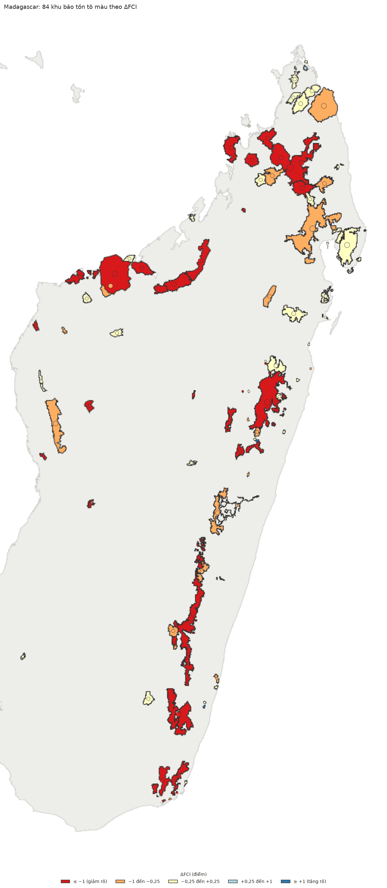
10 khu có ΔFCI giảm nhiều nhất
| Khu bảo tồn | Loại | Đất (km²) | Trọng số W | FCI 2017 | FCI 2025 | ΔFCI | p MK | Kết luận | Rừng & cây 2025 | Rừng tự nhiên | Cách tính |
|---|---|---|---|---|---|---|---|---|---|---|---|
| Mangabe-Ranomena-Sahasarotra | Managed Resource Protected Area | 271,4 | 1,0 | 29,1 | 10,1 | -18,99 | 0,000 | Suy giảm | 14% | -64,7% | 5.000 điểm |
| Bemarivo | Special Reserve | 120,4 | 1,0 | 44,4 | 29,5 | -14,89 | 0,000 | Suy giảm | 38% | -36,6% | 5.000 điểm |
| Mahialambo | Protected Landscape | 3,0 | 1,0 | 28,7 | 15,6 | -13,12 | 0,005 | Suy giảm | 26% | -43,3% | toàn bộ, 10 m |
| Bora | Special Reserve | 40,6 | 1,0 | 39,1 | 28,6 | -10,49 | 0,029 | Suy giảm | 48% | -26,9% | toàn bộ, 10 m |
| Ambohijanahary | Special Reserve | 243,2 | 1,0 | 43,6 | 35,1 | -8,52 | 0,000 | Suy giảm | 36% | -20,0% | 5.000 điểm |
| Tsaratanana | National Park | 1.087,1 | 1,0 | 78,3 | 72,2 | -6,12 | 0,000 | Suy giảm | 80% | -6,7% | 5.000 điểm |
| Ampasindava | Protected Landscape | 884,7 | 1,0 | 45,8 | 39,9 | -5,87 | 0,000 | Suy giảm | 58% | -14,0% | 5.000 điểm |
| Corridor Ankeniheny Zahamena | Managed Resource Protected Area | 3.691,5 | 1,0 | 85,1 | 79,7 | -5,42 | 0,000 | Suy giảm | 85% | -6,1% | 5.000 điểm |
| Baie de Baly | National Park | 588,9 | 1,0 | 47,0 | 41,6 | -5,36 | 0,000 | Suy giảm | 55% | -9,1% | 5.000 điểm |
| Mandena | Protected Landscape | 4,4 | 1,0 | 54,1 | 49,2 | -4,88 | 0,016 | Suy giảm | 82% | -9,0% | toàn bộ, 10 m |
Tất cả 84 khu đã phân tích (xếp theo diện tích)
| Khu bảo tồn | Loại | Đất (km²) | Trọng số W | FCI 2017 | FCI 2025 | ΔFCI | p MK | Kết luận | Rừng & cây 2025 | Rừng tự nhiên | Cách tính |
|---|---|---|---|---|---|---|---|---|---|---|---|
| Complexe des AP Ambohimirahavavy Marivorahona | National Park | 5.692,5 | 1,0 | 77,2 | 74,4 | -2,87 | 0,000 | Suy giảm | 82% | -3,4% | 5.000 điểm |
| Makira | Natural Park | 3.722,5 | 1,0 | 94,4 | 93,8 | -0,56 | 0,000 | Ổn định / không rõ | 96% | -0,4% | 5.000 điểm |
| Corridor Ankeniheny Zahamena | Managed Resource Protected Area | 3.691,5 | 1,0 | 85,1 | 79,7 | -5,42 | 0,000 | Suy giảm | 85% | -6,1% | 5.000 điểm |
| Corridor Forestier Ambositra Vondrozo | Protected Landscape | 3.119,1 | 1,0 | 68,9 | 64,9 | -3,99 | 0,001 | Suy giảm | 74% | -6,1% | 5.000 điểm |
| Complexe Zones Humides Mahavavy Kinkony | Protected Landscape | 3.118,0 | 1,0 | 23,9 | 21,9 | -1,99 | 0,000 | Suy giảm | 31% | -9,5% | 5.000 điểm |
| COMATSA Nord | Managed Resource Protected Area | 2.383,3 | 1,0 | 82,9 | 79,9 | -3,00 | 0,000 | Suy giảm | 88% | -3,4% | 5.000 điểm |
| Loky Manambato | Protected Landscape | 2.244,9 | 1,0 | 16,4 | 15,8 | -0,64 | 0,037 | Ổn định / không rõ | 23% | -4,4% | 5.000 điểm |
| Masoala | National Park | 2.112,4 | 1,0 | 91,7 | 91,4 | -0,24 | 0,002 | Ổn định / không rõ | 94% | -0,2% | 5.000 điểm |
| Befotaka Midongy | National Park | 2.059,3 | 1,0 | 68,6 | 64,7 | -3,82 | 0,009 | Suy giảm | 71% | -5,8% | 5.000 điểm |
| Bemaraha | National Park | 1.577,1 | 1,0 | 51,2 | 50,8 | -0,34 | 0,002 | Ổn định / không rõ | 60% | -0,2% | 5.000 điểm |
| Ankarafantsika | National Park | 1.366,4 | 1,0 | 55,3 | 51,8 | -3,51 | 0,000 | Suy giảm | 72% | -5,7% | 5.000 điểm |
| Corridor forestier Bongolava | Protected Landscape | 1.132,1 | 1,0 | 18,3 | 14,4 | -3,84 | 0,000 | Suy giảm | 24% | -20,8% | 5.000 điểm |
| Kinkony Lake | Hunting Reserve | 1.098,6 | 1,0 | 19,3 | 18,6 | -0,72 | 0,000 | Ổn định / không rõ | 30% | -3,8% | 5.000 điểm |
| Tsaratanana | National Park | 1.087,1 | 1,0 | 78,3 | 72,2 | -6,12 | 0,000 | Suy giảm | 80% | -6,7% | 5.000 điểm |
| Marolambo | National Park | 950,9 | 1,0 | 81,7 | 81,1 | -0,57 | 0,022 | Ổn định / không rõ | 89% | -0,7% | 5.000 điểm |
| Ampasindava | Protected Landscape | 884,7 | 1,0 | 45,8 | 39,9 | -5,87 | 0,000 | Suy giảm | 58% | -14,0% | 5.000 điểm |
| COMATSA Sud | Protected Landscape | 822,8 | 1,0 | 84,0 | 82,8 | -1,14 | 0,000 | Suy giảm | 87% | -1,4% | 5.000 điểm |
| Ambatovaky | Special Reserve | 781,4 | 1,0 | 92,9 | 93,0 | +0,14 | 0,076 | Ổn định / không rõ | 98% | +1,4% | 5.000 điểm |
| Andohahela | National Park | 761,1 | 1,0 | 75,6 | 73,7 | -1,89 | 0,000 | Suy giảm | 82% | -2,6% | 5.000 điểm |
| Mahimborondro | Managed Resource Protected Area | 752,3 | 1,0 | 71,4 | 71,0 | -0,36 | 0,000 | Ổn định / không rõ | 78% | -0,3% | 5.000 điểm |
| Galoko Kalobinono | Protected Landscape | 750,8 | 1,0 | 45,0 | 42,7 | -2,32 | 0,022 | Suy giảm | 68% | -5,1% | 5.000 điểm |
| Andrafiamena Andavakoera | Protected Landscape | 733,8 | 1,0 | 20,8 | 20,6 | -0,16 | 0,602 | Ổn định / không rõ | 32% | -0,8% | 5.000 điểm |
| Zahamena | National Park | 646,7 | 1,0 | 97,9 | 97,7 | -0,20 | 0,754 | Ổn định / không rõ | 99% | -0,2% | 5.000 điểm |
| Baie de Baly | National Park | 588,9 | 1,0 | 47,0 | 41,6 | -5,36 | 0,000 | Suy giảm | 55% | -9,1% | 5.000 điểm |
| Forêt Naturelle de Tsitongambarika | Managed Resource Protected Area | 585,6 | 1,0 | 62,2 | 58,4 | -3,86 | 0,001 | Suy giảm | 67% | -8,0% | 5.000 điểm |
| Marojejy | National Park | 555,7 | 1,0 | 95,1 | 94,2 | -0,88 | 0,000 | Ổn định / không rõ | 98% | -0,8% | 5.000 điểm |
| Manongarivo | Special Reserve | 516,2 | 1,0 | 83,3 | 81,6 | -1,77 | 0,076 | Ổn định / không rõ | 95% | -1,5% | 5.000 điểm |
| Bombetoka Beloboka | Protected Area | 510,0 | 1,0 | 20,9 | 17,2 | -3,68 | 0,000 | Suy giảm | 18% | -17,0% | 5.000 điểm |
| Analamerana | National Park | 471,7 | 1,0 | 46,9 | 46,8 | -0,07 | 0,175 | Ổn định / không rõ | 57% | -0,2% | 5.000 điểm |
| Marotandrano | Special Reserve | 451,3 | 1,0 | 70,1 | 69,4 | -0,72 | 0,002 | Ổn định / không rõ | 74% | -1,0% | 5.000 điểm |
| Complexe Anjozorobe Angavo | Protected Landscape | 411,2 | 1,0 | 43,4 | 40,4 | -3,05 | 0,001 | Suy giảm | 54% | -7,4% | 5.000 điểm |
| Ranomafana | National Park | 405,3 | 1,0 | 87,0 | 86,5 | -0,52 | 0,002 | Ổn định / không rõ | 91% | -0,7% | 5.000 điểm |
| Bemanevika | Protected Landscape | 356,4 | 1,0 | 51,2 | 51,1 | -0,07 | 0,016 | Ổn định / không rõ | 61% | -0,1% | 5.000 điểm |
| Andringitra | National Park | 314,7 | 1,0 | 47,9 | 47,5 | -0,40 | 0,002 | Ổn định / không rõ | 50% | -0,8% | 5.000 điểm |
| Montagne d'Ambre | National Park | 305,7 | 1,0 | 78,6 | 78,5 | -0,14 | 0,009 | Ổn định / không rõ | 86% | -0,2% | 5.000 điểm |
| Kalambatrika | Special Reserve | 304,1 | 1,0 | 47,9 | 47,8 | -0,11 | 0,001 | Ổn định / không rõ | 49% | -0,1% | 5.000 điểm |
| Mangabe-Ranomena-Sahasarotra | Managed Resource Protected Area | 271,4 | 1,0 | 29,1 | 10,1 | -18,99 | 0,000 | Suy giảm | 14% | -64,7% | 5.000 điểm |
| Anjanaharibe_sud | Special Reserve | 269,2 | 1,0 | 99,0 | 98,9 | -0,12 | 0,000 | Ổn định / không rõ | 100% | -0,1% | 5.000 điểm |
| Ankarana | Special Reserve | 252,5 | 1,0 | 66,7 | 66,6 | -0,11 | 0,001 | Ổn định / không rõ | 81% | -0,2% | 5.000 điểm |
| Ambohijanahary | Special Reserve | 243,2 | 1,0 | 43,6 | 35,1 | -8,52 | 0,000 | Suy giảm | 36% | -20,0% | 5.000 điểm |
| Kasijy | Special Reserve | 229,7 | 1,0 | 27,5 | 27,4 | -0,05 | 0,012 | Ổn định / không rõ | 32% | -0,2% | 5.000 điểm |
| Mananara Nord | National Park | 229,0 | 1,0 | 85,8 | 85,8 | -0,06 | 0,677 | Ổn định / không rõ | 93% | +0,0% | 5.000 điểm |
| Namoroka | National Park | 225,2 | 1,0 | 46,8 | 46,7 | -0,04 | 0,048 | Ổn định / không rõ | 59% | -0,1% | 5.000 điểm |
| Site Bioculturel d'Antrema | National Park | 189,7 | 1,0 | 23,5 | 23,3 | -0,20 | 0,009 | Ổn định / không rõ | 32% | -1,0% | 5.000 điểm |
| Beanka | Protected Landscape | 171,8 | 1,0 | 65,4 | 65,3 | -0,12 | 0,297 | Ổn định / không rõ | 69% | -0,1% | 5.000 điểm |
| Mantadia | National Park | 154,6 | 1,0 | 91,0 | 90,3 | -0,70 | 0,466 | Ổn định / không rõ | 93% | -0,4% | 5.000 điểm |
| Mangerivola | Special Reserve | 124,8 | 1,0 | 94,0 | 94,0 | -0,05 | 0,677 | Ổn định / không rõ | 98% | -0,1% | 5.000 điểm |
| Bemarivo | Special Reserve | 120,4 | 1,0 | 44,4 | 29,5 | -14,89 | 0,000 | Suy giảm | 38% | -36,6% | 5.000 điểm |
| Ambararata Londa | Protected Area | 102,9 | 1,0 | 25,2 | 23,8 | -1,43 | 0,000 | Suy giảm | 34% | -5,8% | 5.000 điểm |
| Anjajavy | Protected Landscape | 92,8 | 1,0 | 41,9 | 41,9 | -0,01 | 0,348 | Ổn định / không rõ | 63% | -0,0% | toàn bộ, 10 m |
| Manjakatompo Ankaratra | Managed Resource Protected Area | 81,4 | 1,0 | 8,7 | 8,8 | +0,12 | 0,917 | Ổn định / không rõ | 18% | -0,6% | toàn bộ, 10 m |
| Complexe Lac Forêt Ambondrobe | Protected Landscape | 70,3 | 1,0 | 59,8 | 56,1 | -3,67 | 0,002 | Suy giảm | 71% | -6,7% | toàn bộ, 10 m |
| Rivière Nosivolo | Protected Landscape | 67,5 | 1,0 | 10,0 | 9,6 | -0,37 | 0,016 | Ổn định / không rõ | 14% | -4,1% | toàn bộ, 10 m |
| Manombo | Special Reserve | 65,4 | 1,0 | 30,4 | 30,1 | -0,33 | 0,005 | Ổn định / không rõ | 47% | -0,9% | toàn bộ, 10 m |
| Ambohitr'Antsingy Montagne des Français | Protected Landscape | 61,1 | 1,0 | 50,4 | 51,2 | +0,81 | 0,001 | Ổn định / không rõ | 83% | +1,6% | toàn bộ, 10 m |
| Maningoza | Special Reserve | 59,7 | 1,0 | 11,4 | 10,4 | -0,99 | 0,000 | Ổn định / không rõ | 16% | -8,5% | toàn bộ, 10 m |
| Ambohitantely | Special Reserve | 49,5 | 1,0 | 28,4 | 23,6 | -4,80 | 0,001 | Suy giảm | 27% | -12,1% | toàn bộ, 10 m |
| Ivohibe | Special Reserve | 44,9 | 1,0 | 77,5 | 77,3 | -0,26 | 0,001 | Ổn định / không rõ | 84% | -0,3% | toàn bộ, 10 m |
| Analavelona | Natural Monument | 44,2 | 1,0 | 84,6 | 84,5 | -0,14 | 0,001 | Ổn định / không rõ | 86% | -0,1% | toàn bộ, 10 m |
| Bora | Special Reserve | 40,6 | 1,0 | 39,1 | 28,6 | -10,49 | 0,029 | Suy giảm | 48% | -26,9% | toàn bộ, 10 m |
| Makirovana Tsihomanaomby | Managed Resource Protected Area | 33,9 | 1,0 | 58,9 | 58,8 | -0,09 | 0,917 | Ổn định / không rõ | 89% | -0,1% | toàn bộ, 10 m |
| Agnalazaha | Managed Resource Protected Area | 27,4 | 1,0 | 43,7 | 43,7 | +0,00 | 0,118 | Ổn định / không rõ | 73% | +0,0% | toàn bộ, 10 m |
| Sahafina | Protected Landscape | 24,1 | 1,0 | 75,5 | 75,6 | +0,07 | 0,016 | Ổn định / không rõ | 96% | +0,1% | toàn bộ, 10 m |
| Betampona | Strict Nature Reserve | 22,4 | 1,0 | 96,0 | 96,0 | -0,01 | 0,602 | Ổn định / không rõ | 100% | -0,0% | toàn bộ, 10 m |
| Oronjia | Protected Landscape | 16,8 | 1,0 | 43,2 | 43,1 | -0,04 | 0,012 | Ổn định / không rõ | 72% | -0,1% | toàn bộ, 10 m |
| Ambatofotsy | Protected Landscape | 16,0 | 1,0 | 43,6 | 42,6 | -0,96 | 0,076 | Ổn định / không rõ | 50% | -2,8% | toàn bộ, 10 m |
| Maromizaha | Managed Resource Protected Area | 15,8 | 1,0 | 67,2 | 68,7 | +1,46 | 0,001 | Phục hồi | 77% | +3,3% | toàn bộ, 10 m |
| Ambohidray | Protected Area | 12,4 | 1,0 | 58,5 | 57,8 | -0,74 | 0,005 | Ổn định / không rõ | 74% | -1,5% | toàn bộ, 10 m |
| Ambatotsirongorongo | Protected Area | 10,3 | 1,0 | 13,3 | 10,0 | -3,38 | 0,001 | Suy giảm | 17% | -25,4% | toàn bộ, 10 m |
| Analamazaotra | National Park | 8,7 | 1,0 | 93,5 | 93,5 | -0,02 | 0,002 | Ổn định / không rõ | 99% | -0,0% | toàn bộ, 10 m |
| Agnakatrika | Managed Resource Protected Area | 7,9 | 1,0 | 48,7 | 49,9 | +1,20 | 0,000 | Phục hồi | 83% | +2,5% | toàn bộ, 10 m |
| Ankarabolava | Managed Resource Protected Area | 7,7 | 1,0 | 52,2 | 52,3 | +0,07 | 0,007 | Ổn định / không rõ | 87% | +0,1% | toàn bộ, 10 m |
| Réserve spéciale Pointe à Larrée | Special Reserve | 7,7 | 1,0 | 49,1 | 49,1 | +0,01 | 0,022 | Ổn định / không rõ | 81% | +0,0% | toàn bộ, 10 m |
| Ambatoatsinanana | Protected Landscape | 7,3 | 1,0 | 51,0 | 50,8 | -0,16 | 0,602 | Ổn định / không rõ | 83% | -0,3% | toàn bộ, 10 m |
| Lokobe | National Park | 7,1 | 1,0 | 83,3 | 83,3 | 0,00 | 1,000 | Ổn định / không rõ | 84% | 0,0% | toàn bộ, 10 m |
| Réserve de Tampolo | Protected Landscape | 7,1 | 1,0 | 57,5 | 57,6 | +0,08 | 0,118 | Ổn định / không rõ | 91% | +0,1% | toàn bộ, 10 m |
| Ampanganandehibe-Behasina | Protected Landscape | 5,8 | 1,0 | 9,5 | 9,5 | 0,00 | 1,000 | Ổn định / không rõ | 16% | 0,0% | toàn bộ, 10 m |
| Nosy Mangabe | Special Reserve | 5,4 | 1,0 | 93,1 | 93,1 | 0,00 | 1,000 | Ổn định / không rõ | 93% | 0,0% | toàn bộ, 10 m |
| Mandena | Protected Landscape | 4,4 | 1,0 | 54,1 | 49,2 | -4,88 | 0,016 | Suy giảm | 82% | -9,0% | toàn bộ, 10 m |
| Analalava | Managed Resource Protected Area | 3,8 | 1,0 | 13,2 | 13,2 | 0,00 | 1,000 | Ổn định / không rõ | 14% | 0,0% | toàn bộ, 10 m |
| Analabe-Betanatanana | Managed Resource Protected Area | 3,6 | 1,0 | 18,6 | 17,1 | -1,49 | 0,001 | Suy giảm | 21% | -10,8% | toàn bộ, 10 m |
| Mahialambo | Protected Landscape | 3,0 | 1,0 | 28,7 | 15,6 | -13,12 | 0,005 | Suy giảm | 26% | -43,3% | toàn bộ, 10 m |
| Forêt Naturel de Petriky | Protected Landscape | 3,0 | 1,0 | 54,7 | 54,4 | -0,32 | 0,002 | Ổn định / không rõ | 91% | -0,6% | toàn bộ, 10 m |
| Analalava | Special Reserve | 2,2 | 1,0 | 59,5 | 58,9 | -0,65 | 0,016 | Ổn định / không rõ | 98% | -1,1% | toàn bộ, 10 m |
Cameroon
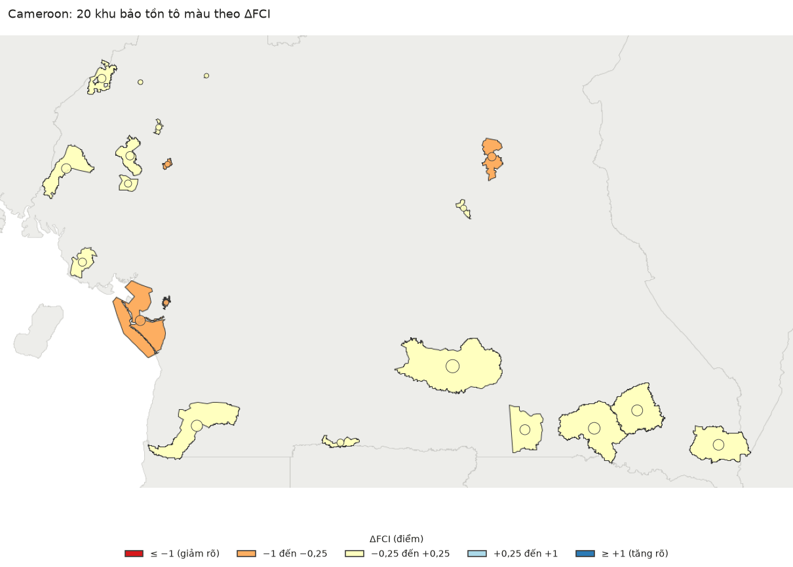
10 khu có ΔFCI giảm nhiều nhất
| Khu bảo tồn | Loại | Đất (km²) | Trọng số W | FCI 2017 | FCI 2025 | ΔFCI | p MK | Kết luận | Rừng & cây 2025 | Rừng tự nhiên | Cách tính |
|---|---|---|---|---|---|---|---|---|---|---|---|
| Santchou | Wildlife Reserve | 69,8 | 1,0 | 47,0 | 46,4 | -0,57 | 0,000 | Ổn định / không rõ | 78% | -1,7% | toàn bộ, 10 m |
| Lac Ossa | Wildlife Reserve | 45,4 | 1,0 | 23,2 | 22,7 | -0,50 | 0,001 | Ổn định / không rõ | 37% | -2,3% | toàn bộ, 10 m |
| Douala Edéa | National Park | 1.581,9 | 1,0 | 67,3 | 66,8 | -0,43 | 0,000 | Ổn định / không rõ | 71% | -1,0% | 5.000 điểm |
| Deng Deng | National Park | 687,4 | 1,0 | 89,9 | 89,5 | -0,39 | 0,002 | Ổn định / không rõ | 94% | -0,6% | 5.000 điểm |
| Mont Cameroun | National Park | 581,7 | 1,0 | 70,1 | 69,9 | -0,15 | 0,012 | Ổn định / không rõ | 72% | -0,3% | 5.000 điểm |
| Kilum Ijim, Mont Oku | Flora Sanctuary | 10,1 | 1,0 | 68,5 | 68,4 | -0,14 | 0,001 | Ổn định / không rõ | 77% | -0,3% | toàn bộ, 10 m |
| Dja | Wildlife Reserve | 5.264,5 | 1,0 | 99,8 | 99,8 | -0,06 | 0,048 | Ổn định / không rõ | 100% | -0,1% | 5.000 điểm |
| Mengame | Wildlife Sanctuary | 266,7 | 1,0 | 99,9 | 99,8 | -0,06 | 0,048 | Ổn định / không rõ | 100% | -0,0% | 5.000 điểm |
| Korup | National Park | 1.262,3 | 1,0 | 99,3 | 99,2 | -0,05 | 0,007 | Ổn định / không rõ | 100% | -0,1% | 5.000 điểm |
| Wall-Mbargué | Wildlife Reserve | 115,1 | 1,0 | 84,7 | 84,7 | -0,05 | 0,211 | Ổn định / không rõ | 96% | -0,1% | 5.000 điểm |
Tất cả 20 khu đã phân tích (xếp theo diện tích)
| Khu bảo tồn | Loại | Đất (km²) | Trọng số W | FCI 2017 | FCI 2025 | ΔFCI | p MK | Kết luận | Rừng & cây 2025 | Rừng tự nhiên | Cách tính |
|---|---|---|---|---|---|---|---|---|---|---|---|
| Dja | Wildlife Reserve | 5.264,5 | 1,0 | 99,8 | 99,8 | -0,06 | 0,048 | Ổn định / không rõ | 100% | -0,1% | 5.000 điểm |
| Nki | National Park | 3.132,2 | 1,0 | 99,7 | 99,7 | 0,00 | 1,000 | Ổn định / không rõ | 100% | 0,0% | 5.000 điểm |
| Campo-Ma'an | National Park | 2.607,1 | 1,0 | 99,5 | 99,5 | 0,00 | 1,000 | Ổn định / không rõ | 100% | 0,0% | 5.000 điểm |
| Boumba Bek | National Park | 2.363,8 | 1,0 | 99,8 | 99,8 | 0,00 | 1,000 | Ổn định / không rõ | 100% | 0,0% | 5.000 điểm |
| Lobéké | National Park | 2.154,5 | 1,0 | 99,9 | 99,9 | 0,00 | 1,000 | Ổn định / không rõ | 100% | 0,0% | 5.000 điểm |
| Douala Edéa | National Park | 1.581,9 | 1,0 | 67,3 | 66,8 | -0,43 | 0,000 | Ổn định / không rõ | 71% | -1,0% | 5.000 điểm |
| Ngoyla | Wildlife Reserve | 1.567,2 | 1,0 | 100,0 | 100,0 | 0,00 | 1,000 | Ổn định / không rõ | 100% | 0,0% | 5.000 điểm |
| Korup | National Park | 1.262,3 | 1,0 | 99,3 | 99,2 | -0,05 | 0,007 | Ổn định / không rõ | 100% | -0,1% | 5.000 điểm |
| Deng Deng | National Park | 687,4 | 1,0 | 89,9 | 89,5 | -0,39 | 0,002 | Ổn định / không rõ | 94% | -0,6% | 5.000 điểm |
| Bayang-Mbo | Wildlife Sanctuary | 664,0 | 1,0 | 99,9 | 99,9 | +0,01 | 0,048 | Ổn định / không rõ | 100% | +0,0% | 5.000 điểm |
| Takamanda | National Park | 627,7 | 1,0 | 92,6 | 92,6 | -0,02 | 0,297 | Ổn định / không rõ | 95% | -0,0% | 5.000 điểm |
| Mont Cameroun | National Park | 581,7 | 1,0 | 70,1 | 69,9 | -0,15 | 0,012 | Ổn định / không rõ | 72% | -0,3% | 5.000 điểm |
| Bakossi | National Park | 293,4 | 1,0 | 99,9 | 99,9 | -0,02 | 0,348 | Ổn định / không rõ | 100% | +0,0% | 5.000 điểm |
| Mengame | Wildlife Sanctuary | 266,7 | 1,0 | 99,9 | 99,8 | -0,06 | 0,048 | Ổn định / không rõ | 100% | -0,0% | 5.000 điểm |
| Wall-Mbargué | Wildlife Reserve | 115,1 | 1,0 | 84,7 | 84,7 | -0,05 | 0,211 | Ổn định / không rõ | 96% | -0,1% | 5.000 điểm |
| Tofala Hill | Wildlife Sanctuary | 81,0 | 1,0 | 88,2 | 88,2 | -0,01 | 0,005 | Ổn định / không rõ | 100% | -0,0% | toàn bộ, 10 m |
| Santchou | Wildlife Reserve | 69,8 | 1,0 | 47,0 | 46,4 | -0,57 | 0,000 | Ổn định / không rõ | 78% | -1,7% | toàn bộ, 10 m |
| Lac Ossa | Wildlife Reserve | 45,4 | 1,0 | 23,2 | 22,7 | -0,50 | 0,001 | Ổn định / không rõ | 37% | -2,3% | toàn bộ, 10 m |
| Kagwene | Wildlife Sanctuary | 19,3 | 1,0 | 78,2 | 78,2 | -0,03 | 0,297 | Ổn định / không rõ | 83% | -0,0% | toàn bộ, 10 m |
| Kilum Ijim, Mont Oku | Flora Sanctuary | 10,1 | 1,0 | 68,5 | 68,4 | -0,14 | 0,001 | Ổn định / không rõ | 77% | -0,3% | toàn bộ, 10 m |
Gabon
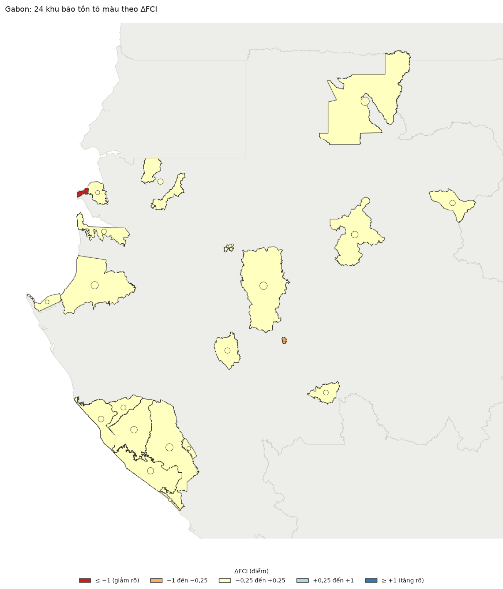
10 khu có ΔFCI giảm nhiều nhất
| Khu bảo tồn | Loại | Đất (km²) | Trọng số W | FCI 2017 | FCI 2025 | ΔFCI | p MK | Kết luận | Rừng & cây 2025 | Rừng tự nhiên | Cách tính |
|---|---|---|---|---|---|---|---|---|---|---|---|
| Arboretum Raponda-Walker | Arboretum | 84,2 | 1,0 | 72,7 | 70,6 | -2,09 | 0,000 | Suy giảm | 90% | -3,6% | toàn bộ, 10 m |
| Ensemble historique d'Iboundji | Historic site | 39,6 | 1,0 | 97,0 | 96,8 | -0,26 | 0,009 | Ổn định / không rõ | 99% | -0,1% | toàn bộ, 10 m |
| Domaine de chasse de Sette-Cama | Hunting Area | 2.389,7 | 1,0 | 65,2 | 64,9 | -0,24 | 0,005 | Ổn định / không rõ | 67% | -0,3% | 5.000 điểm |
| Domaine de chasse de Iguela | Hunting Area | 794,6 | 1,0 | 98,3 | 98,3 | -0,05 | 0,005 | Ổn định / không rõ | 99% | -0,0% | 5.000 điểm |
| Domaine de chasse de Ngove-Ndogo | Hunting Area | 2.769,3 | 1,0 | 98,2 | 98,2 | -0,04 | 0,037 | Ổn định / không rõ | 98% | -0,0% | 5.000 điểm |
| Domaine de chasse de Moukalaba | Hunting Area | 205,1 | 1,0 | 40,0 | 40,0 | -0,04 | 0,004 | Ổn định / không rõ | 49% | -0,1% | 5.000 điểm |
| Parc national de Minkébé | National park | 7.538,8 | 1,0 | 99,9 | 99,9 | -0,02 | 0,175 | Ổn định / không rõ | 100% | -0,0% | 5.000 điểm |
| Parc national de Loango | National park | 1.505,2 | 1,0 | 86,3 | 86,2 | -0,02 | 0,076 | Ổn định / không rõ | 87% | -0,0% | 5.000 điểm |
| Ensemble historique d'Otoumbi 1 | Historic site | 30,7 | 1,0 | 64,0 | 63,9 | -0,02 | 0,009 | Ổn định / không rõ | 68% | -0,0% | toàn bộ, 10 m |
| Ensemble historique d'Otoumbi 2 | Historic site | 24,7 | 1,0 | 77,1 | 77,1 | -0,01 | 0,007 | Ổn định / không rõ | 78% | -0,0% | toàn bộ, 10 m |
Tất cả 24 khu đã phân tích (xếp theo diện tích)
| Khu bảo tồn | Loại | Đất (km²) | Trọng số W | FCI 2017 | FCI 2025 | ΔFCI | p MK | Kết luận | Rừng & cây 2025 | Rừng tự nhiên | Cách tính |
|---|---|---|---|---|---|---|---|---|---|---|---|
| Parc national de Minkébé | National park | 7.538,8 | 1,0 | 99,9 | 99,9 | -0,02 | 0,175 | Ổn định / không rõ | 100% | -0,0% | 5.000 điểm |
| Parc national de la Lopé | National park | 4.947,7 | 1,0 | 93,8 | 93,8 | 0,00 | 1,000 | Ổn định / không rõ | 95% | 0,0% | 5.000 điểm |
| Parc national de Moukalaba - Doudou | National park | 4.471,8 | 1,0 | 91,8 | 91,8 | 0,00 | 1,000 | Ổn định / không rõ | 93% | 0,0% | 5.000 điểm |
| Reserve Présidentielle Wonga Wongué | Presidential reserve | 4.242,1 | 1,0 | 78,2 | 78,2 | 0,00 | 1,000 | Ổn định / không rõ | 81% | 0,0% | 5.000 điểm |
| Parc national de l'Ivindo | National park | 2.988,8 | 1,0 | 98,8 | 98,8 | 0,00 | 1,000 | Ổn định / không rõ | 99% | 0,0% | 5.000 điểm |
| Domaine de chasse de Ngove-Ndogo | Hunting Area | 2.769,3 | 1,0 | 98,2 | 98,2 | -0,04 | 0,037 | Ổn định / không rõ | 98% | -0,0% | 5.000 điểm |
| Domaine de chasse de Sette-Cama | Hunting Area | 2.389,7 | 1,0 | 65,2 | 64,9 | -0,24 | 0,005 | Ổn định / không rõ | 67% | -0,3% | 5.000 điểm |
| Parc national de Loango | National park | 1.505,2 | 1,0 | 86,3 | 86,2 | -0,02 | 0,076 | Ổn định / không rõ | 87% | -0,0% | 5.000 điểm |
| Parc national des Monts de Cristal | National park | 1.192,3 | 1,0 | 99,8 | 99,8 | 0,00 | 1,000 | Ổn định / không rõ | 100% | 0,0% | 5.000 điểm |
| Parc national de Mwagna | National park | 1.150,3 | 1,0 | 100,0 | 100,0 | 0,00 | 1,000 | Ổn định / không rõ | 100% | 0,0% | 5.000 điểm |
| Parc national de Waka | National park | 1.064,3 | 1,0 | 100,0 | 100,0 | 0,00 | 1,000 | Ổn định / không rõ | 100% | 0,0% | 5.000 điểm |
| Domaine de chasse de Iguela | Hunting Area | 794,6 | 1,0 | 98,3 | 98,3 | -0,05 | 0,005 | Ổn định / không rõ | 99% | -0,0% | 5.000 điểm |
| Parc national de Pongara | National park | 713,6 | 1,0 | 76,7 | 76,7 | 0,00 | 1,000 | Ổn định / không rõ | 77% | 0,0% | 5.000 điểm |
| Parc national des Monts Birougou | National park | 686,5 | 1,0 | 100,0 | 100,0 | 0,00 | 1,000 | Ổn định / không rõ | 100% | 0,0% | 5.000 điểm |
| Parc national d'Akanda | National park | 283,6 | 1,0 | 52,9 | 52,9 | -0,01 | 0,048 | Ổn định / không rõ | 53% | 0,0% | 5.000 điểm |
| Domaine de chasse de Moukalaba | Hunting Area | 205,1 | 1,0 | 40,0 | 40,0 | -0,04 | 0,004 | Ổn định / không rõ | 49% | -0,1% | 5.000 điểm |
| Reserve aquatique de Delta de l'Ogooue | Aquatic reserve | 179,0 | 1,0 | 39,4 | 39,4 | 0,00 | 1,000 | Ổn định / không rõ | 40% | 0,0% | 5.000 điểm |
| Arboretum Raponda-Walker | Arboretum | 84,2 | 1,0 | 72,7 | 70,6 | -2,09 | 0,000 | Suy giảm | 90% | -3,6% | toàn bộ, 10 m |
| Reserve de faune de la Plaine Ouanga | Faunal reserve | 81,2 | 1,0 | 43,8 | 43,8 | -0,00 | 0,001 | Ổn định / không rõ | 45% | -0,0% | toàn bộ, 10 m |
| Ensemble historique d'Iboundji | Historic site | 39,6 | 1,0 | 97,0 | 96,8 | -0,26 | 0,009 | Ổn định / không rõ | 99% | -0,1% | toàn bộ, 10 m |
| Ensemble historique d'Otoumbi 1 | Historic site | 30,7 | 1,0 | 64,0 | 63,9 | -0,02 | 0,009 | Ổn định / không rõ | 68% | -0,0% | toàn bộ, 10 m |
| Ensemble historique d'Otoumbi 2 | Historic site | 24,7 | 1,0 | 77,1 | 77,1 | -0,01 | 0,007 | Ổn định / không rõ | 78% | -0,0% | toàn bộ, 10 m |
| Ensemble historique d'Epona Elaemékora | Historic site | 20,1 | 1,0 | 46,9 | 46,9 | -0,01 | 0,004 | Ổn định / không rõ | 55% | -0,0% | toàn bộ, 10 m |
| Sanctuaire de la Nature de Begnoung | Nature sanctuary | 19,2 | 1,0 | 100,0 | 100,0 | 0,00 | 1,000 | Ổn định / không rõ | 100% | 0,0% | toàn bộ, 10 m |
Mỹ
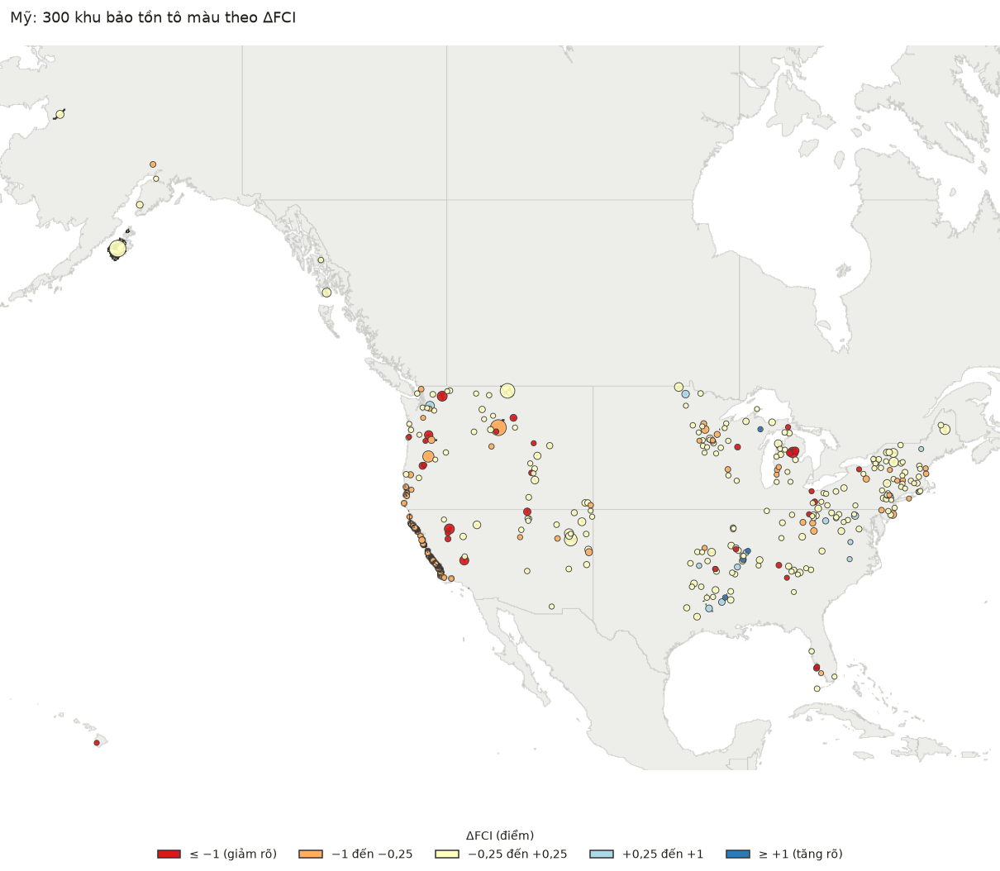
10 khu có ΔFCI giảm nhiều nhất
| Khu bảo tồn | Loại | Đất (km²) | Trọng số W | FCI 2017 | FCI 2025 | ΔFCI | p MK | Kết luận | Rừng & cây 2025 | Rừng tự nhiên | Cách tính |
|---|---|---|---|---|---|---|---|---|---|---|---|
| Cultus Creek Protection Area (National) | Protection Area (National) | 1,1 | 17,9 | 48,1 | 17,0 | -31,14 | 0,048 | Suy giảm | 25% | -59,9% | toàn bộ, 10 m |
| Warm Springs Creek | Research Natural Area | 2,2 | 17,9 | 97,5 | 81,4 | -16,11 | 0,001 | Suy giảm | 98% | -0,1% | toàn bộ, 10 m |
| Arrowhead Wildlife Management Area And Enviro | Wildlife Management Area | 1,4 | 17,9 | 41,2 | 31,7 | -9,46 | 0,175 | Ổn định / không rõ | 53% | -19,9% | toàn bộ, 10 m |
| J.N. 'Ding Darling' National Wildlife Refuge | Marine Protected Area | 21,4 | 18,0 | 46,0 | 37,3 | -8,72 | 0,048 | Suy giảm | 48% | -19,2% | toàn bộ, 10 m |
| Matlacha Pass National Wildlife Refuge | Marine Protected Area | 2,0 | 17,9 | 77,8 | 70,3 | -7,45 | 0,001 | Suy giảm | 74% | -5,4% | toàn bộ, 10 m |
| Pu'uhonua o Honaunau | National Historical Park | 1,7 | 17,9 | 48,4 | 41,5 | -6,86 | 0,005 | Suy giảm | 71% | -14,2% | toàn bộ, 10 m |
| Black Butte | Research Natural Area | 2,1 | 17,9 | 97,0 | 92,0 | -4,98 | 0,001 | Suy giảm | 97% | -0,0% | toàn bộ, 10 m |
| Lake Chelan-Sawtooth | Wilderness | 619,8 | 17,5 | 61,4 | 56,9 | -4,41 | 0,000 | Suy giảm | 63% | -0,3% | 5.000 điểm |
| Mark O. Hatfield | Wilderness | 264,8 | 17,5 | 74,5 | 70,9 | -3,62 | 0,009 | Suy giảm | 94% | -0,9% | 5.000 điểm |
| Mount Nebo | Wilderness | 109,6 | 17,5 | 47,9 | 44,7 | -3,18 | 0,001 | Suy giảm | 52% | -4,3% | 5.000 điểm |
Tất cả 300 khu đã phân tích (xếp theo diện tích)
| Khu bảo tồn | Loại | Đất (km²) | Trọng số W | FCI 2017 | FCI 2025 | ΔFCI | p MK | Kết luận | Rừng & cây 2025 | Rừng tự nhiên | Cách tính |
|---|---|---|---|---|---|---|---|---|---|---|---|
| Kodiak | National Wildlife Refuge | 6.692,3 | 14,6 | 11,5 | 11,5 | 0,00 | 1,000 | Ổn định / không rõ | 11% | 0,0% | 5.000 điểm |
| Selway-Bitterroot | Wilderness | 5.457,8 | 14,6 | 70,7 | 70,1 | -0,64 | 0,000 | Ổn định / không rõ | 73% | -0,1% | 5.000 điểm |
| Glacier Proposed or Recom | Recommended Wilderness | 3.768,6 | 14,6 | 49,5 | 49,3 | -0,19 | 0,016 | Ổn định / không rõ | 55% | -0,0% | 5.000 điểm |
| Weminuche | Wilderness | 2.024,7 | 14,6 | 46,4 | 46,3 | -0,05 | 0,004 | Ổn định / không rõ | 47% | 0,0% | 5.000 điểm |
| Three Sisters | Wilderness | 1.148,6 | 14,6 | 81,6 | 80,6 | -0,96 | 0,001 | Ổn định / không rõ | 84% | -0,3% | 5.000 điểm |
| Roscommon State Forest Area | State Forest | 848,5 | 17,5 | 54,9 | 53,5 | -1,34 | 0,001 | Suy giảm | 90% | -2,4% | 5.000 điểm |
| Baxter | State Park | 711,6 | 17,5 | 70,4 | 70,4 | 0,00 | 1,000 | Ổn định / không rõ | 98% | 0,0% | 5.000 điểm |
| Carson-Iceberg | Wilderness | 643,7 | 17,5 | 63,4 | 61,9 | -1,54 | 0,000 | Suy giảm | 65% | -0,9% | 5.000 điểm |
| Lake Chelan-Sawtooth | Wilderness | 619,8 | 17,5 | 61,4 | 56,9 | -4,41 | 0,000 | Suy giảm | 63% | -0,3% | 5.000 điểm |
| Siamese Ponds | Wilderness | 465,6 | 17,5 | 95,0 | 95,0 | -0,01 | 0,048 | Ổn định / không rõ | 98% | -0,0% | 5.000 điểm |
| Uncompahgre | Wilderness | 400,1 | 17,5 | 48,2 | 48,1 | -0,09 | 0,002 | Ổn định / không rõ | 48% | +0,0% | 5.000 điểm |
| Domeland | Wilderness | 382,1 | 17,5 | 20,5 | 19,5 | -1,07 | 0,009 | Suy giảm | 22% | -4,2% | 5.000 điểm |
| Snoqualmie Bog | Natural Area Preserve | 357,3 | 17,5 | 31,8 | 32,1 | +0,34 | 0,009 | Ổn định / không rõ | 85% | +3,5% | 5.000 điểm |
| South Prince Of Wales | Wilderness | 349,2 | 17,5 | 92,5 | 92,5 | -0,02 | 0,048 | Ổn định / không rõ | 93% | -0,0% | 5.000 điểm |
| Saranac Lakes | Wild Forest | 325,2 | 17,5 | 78,1 | 78,0 | -0,04 | 0,016 | Ổn định / không rõ | 90% | -0,1% | 5.000 điểm |
| Roseau River | State Wildlife Management Area | 304,1 | 17,5 | 7,7 | 7,5 | -0,18 | 0,001 | Ổn định / không rõ | 12% | -2,3% | 5.000 điểm |
| Mark O. Hatfield | Wilderness | 264,8 | 17,5 | 74,5 | 70,9 | -3,62 | 0,009 | Suy giảm | 94% | -0,9% | 5.000 điểm |
| Unalakleet River | Designated - Wild | 181,4 | 17,5 | 69,7 | 69,7 | -0,01 | 0,009 | Ổn định / không rõ | 71% | 0,0% | 5.000 điểm |
| Edwin B. Forsythe | National Wildlife Refuge | 172,7 | 17,5 | 12,3 | 11,9 | -0,38 | 0,007 | Ổn định / không rõ | 19% | -3,2% | 5.000 điểm |
| Buffalo Peaks | Wilderness | 167,1 | 17,5 | 69,8 | 69,8 | -0,00 | 0,175 | Ổn định / không rõ | 70% | 0,0% | 5.000 điểm |
| Mille Lacs | State Wildlife Management Area | 156,9 | 17,5 | 42,8 | 42,5 | -0,29 | 0,144 | Ổn định / không rõ | 71% | -0,7% | 5.000 điểm |
| Bull Shoals | Recreation Area | 151,6 | 17,5 | 27,7 | 27,6 | -0,13 | 0,004 | Ổn định / không rõ | 46% | -0,5% | 5.000 điểm |
| Alta Toquima | Wilderness | 144,0 | 17,5 | 37,9 | 37,9 | 0,00 | 1,000 | Ổn định / không rõ | 38% | 0,0% | 5.000 điểm |
| Raymond Mountain | Wilderness Study Area | 138,0 | 17,5 | 33,2 | 33,2 | 0,00 | 1,000 | Ổn định / không rõ | 38% | 0,0% | 5.000 điểm |
| Wapiti | State Wildlife Management Area | 128,5 | 17,5 | 44,7 | 45,0 | +0,35 | 0,009 | Ổn định / không rõ | 75% | +0,8% | 5.000 điểm |
| Sleeping Bear Dunes | Wilderness Area | 128,5 | 17,5 | 50,3 | 50,3 | -0,01 | 0,048 | Ổn định / không rõ | 84% | -0,0% | 5.000 điểm |
| Delaware | Wild Forest | 119,7 | 17,5 | 83,1 | 83,1 | 0,00 | 1,000 | Ổn định / không rõ | 99% | 0,0% | 5.000 điểm |
| Mount Nebo | Wilderness | 109,6 | 17,5 | 47,9 | 44,7 | -3,18 | 0,001 | Suy giảm | 52% | -4,3% | 5.000 điểm |
| Kirtland Warbler Unit Damon | Wildlife Habitat Management Area | 102,1 | 17,5 | 50,9 | 48,0 | -2,93 | 0,005 | Suy giảm | 84% | -6,9% | 5.000 điểm |
| Carlos Avery | State Wildlife Management Area | 97,6 | 18,0 | 20,1 | 20,0 | -0,07 | 0,001 | Ổn định / không rõ | 34% | -0,4% | toàn bộ, 10 m |
| John D. Rockefeller, Jr., | Memorial Parkway | 95,6 | 18,0 | 72,0 | 71,9 | -0,13 | 0,000 | Ổn định / không rõ | 75% | -0,1% | toàn bộ, 10 m |
| Sleepy Creek | Wildlife Management Area | 90,0 | 18,0 | 70,7 | 71,0 | +0,31 | 0,016 | Ổn định / không rõ | 99% | +0,5% | toàn bộ, 10 m |
| Latir Peak | Wilderness | 82,6 | 18,0 | 83,9 | 83,8 | -0,01 | 0,001 | Ổn định / không rõ | 84% | -0,0% | toàn bộ, 10 m |
| Boulder Creek | Wilderness | 80,6 | 18,0 | 78,0 | 76,3 | -1,73 | 0,000 | Suy giảm | 88% | -0,1% | toàn bộ, 10 m |
| White River Segment F | Designated - Recreational | 77,6 | 18,0 | 77,0 | 76,6 | -0,45 | 0,016 | Ổn định / không rõ | 91% | -0,1% | toàn bộ, 10 m |
| Wheeler Peak | Wilderness | 77,5 | 18,0 | 77,5 | 77,0 | -0,42 | 0,001 | Ổn định / không rõ | 78% | -0,0% | toàn bộ, 10 m |
| Blackfoot Valley | Conservation Area | 68,7 | 18,0 | 39,8 | 38,5 | -1,28 | 0,076 | Ổn định / không rõ | 64% | -3,2% | toàn bộ, 10 m |
| Handies Peak | Wilderness Study Area | 66,5 | 18,0 | 27,9 | 27,8 | -0,06 | 0,001 | Ổn định / không rõ | 28% | -0,1% | toàn bộ, 10 m |
| Moro Big Pine Natural Area-Wildlife Man | Natural Area | 64,4 | 18,0 | 24,9 | 25,0 | +0,10 | 0,466 | Ổn định / không rõ | 97% | +0,6% | toàn bộ, 10 m |
| Tri-Valley | Wildlife Area | 61,6 | 18,0 | 41,0 | 40,9 | -0,04 | 0,022 | Ổn định / không rõ | 68% | -0,1% | toàn bộ, 10 m |
| Red River | National Wildlife Refuge | 61,1 | 18,0 | 34,0 | 34,8 | +0,85 | 0,076 | Ổn định / không rõ | 59% | +2,5% | toàn bộ, 10 m |
| Anchor River And Fritz Creek | Critical Habitat Area | 57,9 | 18,0 | 72,0 | 72,0 | -0,01 | 0,004 | Ổn định / không rõ | 72% | -0,0% | toàn bộ, 10 m |
| Little River | National Wildlife Refuge | 57,6 | 18,0 | 59,8 | 59,6 | -0,19 | 0,754 | Ổn định / không rõ | 98% | -0,4% | toàn bộ, 10 m |
| Highland | State Wildlife Management Area | 56,3 | 18,0 | 78,8 | 79,0 | +0,21 | 0,001 | Ổn định / không rõ | 99% | +0,4% | toàn bộ, 10 m |
| Tennessee | National Wildlife Refuge | 55,1 | 18,0 | 45,2 | 45,1 | -0,08 | 0,076 | Ổn định / không rõ | 75% | -0,2% | toàn bộ, 10 m |
| Grand Island | National Recreation Area | 54,9 | 18,0 | 57,5 | 57,5 | -0,01 | 0,000 | Ổn định / không rõ | 96% | -0,0% | toàn bộ, 10 m |
| Grasse River | Wild Forest | 53,7 | 18,0 | 71,7 | 71,7 | -0,04 | 0,029 | Ổn định / không rõ | 97% | -0,0% | toàn bộ, 10 m |
| Upland Island | Wilderness | 53,6 | 18,0 | 34,7 | 34,7 | +0,01 | 0,002 | Ổn định / không rõ | 100% | 0,0% | toàn bộ, 10 m |
| Brasstown | Wilderness | 52,3 | 18,0 | 97,3 | 97,3 | -0,00 | 0,466 | Ổn định / không rõ | 100% | -0,0% | toàn bộ, 10 m |
| Clifty | Wilderness | 50,8 | 18,0 | 91,3 | 91,3 | 0,00 | 1,000 | Ổn định / không rõ | 100% | 0,0% | toàn bộ, 10 m |
| Beech Fork | Recreation Area | 50,5 | 18,0 | 54,5 | 53,6 | -0,87 | 0,016 | Ổn định / không rõ | 89% | -1,6% | toàn bộ, 10 m |
| Houghton Lake State Wildlife | Research Area | 48,5 | 18,0 | 42,3 | 39,9 | -2,33 | 0,001 | Suy giảm | 67% | -5,5% | toàn bộ, 10 m |
| Clearwater | Conservation Area | 46,8 | 18,0 | 59,4 | 59,3 | -0,05 | 0,602 | Ổn định / không rõ | 99% | -0,1% | toàn bộ, 10 m |
| Mahannah | State Conservation Area | 46,1 | 18,0 | 45,9 | 45,9 | -0,01 | 0,001 | Ổn định / không rõ | 76% | -0,0% | toàn bộ, 10 m |
| Agricultural Conservation Easement Program - Wetland Reserve Easements (ACEP-WRE), Richland, LA | Conservation Easement | 45,6 | 18,0 | 26,5 | 27,1 | +0,60 | 0,002 | Ổn định / không rõ | 48% | +2,1% | toàn bộ, 10 m |
| Boundary Peak | Wilderness | 42,4 | 18,0 | 37,0 | 36,8 | -0,16 | 0,001 | Ổn định / không rõ | 37% | -0,1% | toàn bộ, 10 m |
| Raquette Boreal | State Resource Management Area | 41,3 | 18,0 | 79,9 | 79,9 | 0,00 | 0,917 | Ổn định / không rõ | 98% | 0,0% | toàn bộ, 10 m |
| Neota | Wilderness | 40,2 | 18,0 | 71,0 | 71,0 | -0,00 | 0,016 | Ổn định / không rõ | 71% | +0,0% | toàn bộ, 10 m |
| Sugar Hill | State Forest | 36,8 | 18,0 | 59,9 | 59,4 | -0,48 | 0,009 | Ổn định / không rõ | 98% | -0,8% | toàn bộ, 10 m |
| Crystal Lake | Wilderness Study Area | 36,1 | 18,0 | 80,9 | 80,8 | -0,05 | 0,000 | Ổn định / không rõ | 87% | -0,1% | toàn bộ, 10 m |
| Ontonagon, Michigan Wild And Scenic River Study Area | Scenic River | 35,9 | 18,0 | 55,9 | 55,8 | -0,06 | 0,144 | Ổn định / không rõ | 93% | -0,1% | toàn bộ, 10 m |
| Chickasaw Wildlife Management Area | Wildlife Management Area | 35,1 | 18,0 | 50,0 | 50,0 | -0,03 | 0,095 | Ổn định / không rõ | 83% | -0,1% | toàn bộ, 10 m |
| California Coastal | National Monument | 35,1 | 18,0 | 29,2 | 28,6 | -0,59 | 0,000 | Ổn định / không rõ | 48% | -2,1% | toàn bộ, 30 m |
| Hickory Creek | Wilderness | 34,9 | 18,0 | 78,3 | 78,3 | -0,04 | 0,005 | Ổn định / không rõ | 99% | -0,0% | toàn bộ, 10 m |
| Hiwassee | Refuge | 33,2 | 18,0 | 21,3 | 21,3 | -0,02 | 0,002 | Ổn định / không rõ | 36% | -0,1% | toàn bộ, 10 m |
| Rogue River | Designated - Wild | 29,5 | 18,0 | 61,3 | 61,0 | -0,28 | 0,002 | Ổn định / không rõ | 91% | -0,2% | toàn bộ, 10 m |
| University Forest | Conservation Area | 29,1 | 18,0 | 59,8 | 59,7 | -0,03 | 0,677 | Ổn định / không rõ | 100% | -0,1% | toàn bộ, 10 m |
| Neches River | National Wildlife Refuge | 28,9 | 18,0 | 49,9 | 50,1 | +0,20 | 0,009 | Ổn định / không rõ | 97% | +0,3% | toàn bộ, 10 m |
| Clarks Fork Yellowstone, Wyoming | Wild and Scenic River | 28,6 | 18,0 | 52,3 | 52,3 | -0,07 | 0,001 | Ổn định / không rõ | 54% | -0,1% | toàn bộ, 10 m |
| O'Hara Creek | Research Natural Area | 28,6 | 18,0 | 96,2 | 96,2 | -0,03 | 0,001 | Ổn định / không rõ | 97% | -0,0% | toàn bộ, 10 m |
| Ritchie Mines | Wildlife Management Area | 27,4 | 18,0 | 59,1 | 59,8 | +0,61 | 0,001 | Ổn định / không rõ | 99% | +1,1% | toàn bộ, 10 m |
| Pecos | National Historical Park | 26,1 | 18,0 | 39,4 | 39,4 | -0,00 | 0,466 | Ổn định / không rõ | 61% | -0,0% | toàn bộ, 10 m |
| Pennock Creek | Research Natural Area | 25,8 | 18,0 | 84,5 | 84,5 | -0,00 | 0,016 | Ổn định / không rõ | 84% | -0,0% | toàn bộ, 10 m |
| Cooper Hollow | Wildlife Area | 25,0 | 18,0 | 57,2 | 56,2 | -0,97 | 0,048 | Ổn định / không rõ | 94% | -1,2% | toàn bộ, 10 m |
| Lewis Fork | Wilderness | 24,6 | 18,0 | 93,5 | 93,5 | +0,00 | 0,175 | Ổn định / không rõ | 99% | +0,0% | toàn bộ, 10 m |
| Little Frog Mountain | Wilderness | 22,8 | 18,0 | 93,2 | 93,2 | -0,01 | 0,144 | Ổn định / không rõ | 100% | -0,0% | toàn bộ, 10 m |
| Wapanocca | National Wildlife Refuge | 22,8 | 18,0 | 40,6 | 40,8 | +0,29 | 0,001 | Ổn định / không rõ | 68% | +0,7% | toàn bộ, 10 m |
| Mc Kenzie Creek | Wildlife Area | 22,4 | 18,0 | 55,9 | 55,3 | -0,58 | 1,000 | Ổn định / không rõ | 92% | -1,0% | toàn bộ, 10 m |
| Bull Gulch | Wilderness Study Area | 22,4 | 18,0 | 50,0 | 50,0 | -0,01 | 0,002 | Ổn định / không rõ | 50% | -0,0% | toàn bộ, 10 m |
| Cherry Valley | National Wildlife Refuge | 22,0 | 18,0 | 62,1 | 62,1 | -0,00 | 0,012 | Ổn định / không rõ | 98% | -0,0% | toàn bộ, 10 m |
| Pine, Michigan | Wild and Scenic River | 21,8 | 18,0 | 57,8 | 57,8 | -0,04 | 0,144 | Ổn định / không rõ | 97% | -0,1% | toàn bộ, 10 m |
| Moss Island | Wildlife Management Area | 21,5 | 18,0 | 41,2 | 43,2 | +2,02 | 0,001 | Phục hồi | 72% | +4,6% | toàn bộ, 10 m |
| J.N. 'Ding Darling' National Wildlife Refuge | Marine Protected Area | 21,4 | 18,0 | 46,0 | 37,3 | -8,72 | 0,048 | Suy giảm | 48% | -19,2% | toàn bộ, 10 m |
| Ripple River | State Wildlife Management Area | 21,2 | 18,0 | 33,3 | 32,8 | -0,51 | 0,029 | Ổn định / không rõ | 55% | -1,5% | toàn bộ, 10 m |
| Hardwood State Forest | Wilderness Area | 21,0 | 18,0 | 58,9 | 58,9 | 0,00 | 1,000 | Ổn định / không rõ | 98% | 0,0% | toàn bộ, 10 m |
| Pequest | Wildlife Management Area | 19,7 | 18,0 | 52,5 | 52,4 | -0,10 | 0,297 | Ổn định / không rõ | 86% | -0,2% | toàn bộ, 10 m |
| George D. Aiken | Wilderness | 19,4 | 18,0 | 74,6 | 74,6 | -0,01 | 0,022 | Ổn định / không rõ | 97% | -0,0% | toàn bộ, 10 m |
| Otter Slough | Conservation Area | 18,9 | 18,0 | 16,6 | 16,6 | -0,07 | 0,144 | Ổn định / không rõ | 28% | -0,4% | toàn bộ, 10 m |
| Mohican-Memorial | State Forest | 18,8 | 18,0 | 57,8 | 56,1 | -1,71 | 0,144 | Ổn định / không rõ | 96% | -2,9% | toàn bộ, 10 m |
| Tranquility | Wildlife Area | 18,4 | 18,0 | 54,6 | 54,0 | -0,68 | 0,048 | Ổn định / không rõ | 90% | -1,3% | toàn bộ, 10 m |
| C.F. Phelps | Wildlife Management Area | 18,4 | 18,0 | 55,6 | 55,4 | -0,22 | 0,754 | Ổn định / không rõ | 93% | -0,4% | toàn bộ, 10 m |
| Agricultural Conservation Easement Program - Wetland Reserve Easements (ACEP-WRE), Fulton, KY | Conservation Easement | 18,3 | 18,0 | 27,1 | 28,1 | +0,97 | 0,001 | Ổn định / không rõ | 48% | +2,7% | toàn bộ, 10 m |
| Wallace H. O'Dowd | Wildlife Area | 17,8 | 18,0 | 60,0 | 59,8 | -0,16 | 0,144 | Ổn định / không rõ | 100% | -0,3% | toàn bộ, 10 m |
| Crosley | Fish And Wildlife Area | 17,2 | 18,0 | 53,6 | 53,6 | -0,01 | 0,677 | Ổn định / không rõ | 89% | -0,0% | toàn bộ, 10 m |
| Camp Robins | State Wildlife Management Area | 17,0 | 18,0 | 38,2 | 38,2 | +0,00 | 0,602 | Ổn định / không rõ | 64% | +0,0% | toàn bộ, 10 m |
| Mc Millan | Wildlife Area | 16,9 | 18,0 | 36,2 | 34,3 | -1,88 | 0,001 | Suy giảm | 57% | -5,2% | toàn bộ, 10 m |
| Merced, California | Wild and Scenic River | 16,4 | 18,0 | 50,0 | 46,9 | -3,11 | 0,000 | Suy giảm | 57% | -2,6% | toàn bộ, 10 m |
| Swan Bay | Wildlife Management Area | 15,6 | 18,0 | 21,7 | 21,7 | 0,00 | 1,000 | Ổn định / không rõ | 33% | 0,0% | toàn bộ, 10 m |
| Douglas | State Forest | 15,2 | 18,0 | 59,5 | 59,5 | 0,00 | 1,000 | Ổn định / không rõ | 99% | 0,0% | toàn bộ, 10 m |
| Willow River | Wildlife Area | 14,8 | 18,0 | 32,7 | 32,7 | -0,04 | 0,002 | Ổn định / không rõ | 56% | +0,0% | toàn bộ, 10 m |
| Chateaugay | State Forest | 14,2 | 18,0 | 58,5 | 58,5 | +0,03 | 0,297 | Ổn định / không rõ | 98% | +0,1% | toàn bộ, 10 m |
| Lakeview | Wildlife Management Area | 13,9 | 18,0 | 14,6 | 14,5 | -0,09 | 0,004 | Ổn định / không rõ | 24% | -0,6% | toàn bộ, 10 m |
| East Canyon | State Wildlife Area | 13,9 | 18,0 | 18,7 | 18,7 | 0,00 | 1,000 | Ổn định / không rõ | 31% | 0,0% | toàn bộ, 10 m |
| Sparta Mountain | Wildlife Management Area | 13,6 | 18,0 | 57,4 | 57,3 | -0,10 | 0,297 | Ổn định / không rõ | 96% | -0,2% | toàn bộ, 10 m |
| Cecil H. Underwood | Wildlife Management Area | 13,5 | 18,0 | 59,4 | 59,4 | -0,00 | 0,022 | Ổn định / không rõ | 98% | -0,0% | toàn bộ, 10 m |
| Illabot Creek, Washington | Wild and Scenic River | 13,0 | 18,0 | 77,4 | 77,4 | -0,02 | 0,095 | Ổn định / không rõ | 96% | -0,0% | toàn bộ, 10 m |
| Willow Creek State | Recreation Area | 13,0 | 18,0 | 76,8 | 76,4 | -0,49 | 0,001 | Ổn định / không rõ | 79% | -0,0% | toàn bộ, 10 m |
| Wetlands Reserve Program (WRP), Washington, MS | Reserve Program | 12,8 | 18,0 | 25,5 | 25,6 | +0,12 | 0,917 | Ổn định / không rõ | 53% | +0,2% | toàn bộ, 10 m |
| Bark Camp Barrens | Wildlife Management Area | 12,5 | 18,0 | 51,8 | 49,2 | -2,55 | 0,602 | Ổn định / không rõ | 84% | -5,0% | toàn bộ, 10 m |
| Greys River | Wildlife Habitat Management Area | 12,5 | 18,0 | 81,1 | 81,1 | -0,00 | 0,466 | Ổn định / không rõ | 84% | -0,0% | toàn bộ, 10 m |
| Black Island Ca (Stephen C Bradford Unit) | State Conservation Area or Park | 12,0 | 18,0 | 21,6 | 21,6 | -0,02 | 0,012 | Ổn định / không rõ | 36% | -0,1% | toàn bộ, 10 m |
| Snake Hill | Wildlife Management Area | 12,0 | 18,0 | 72,1 | 72,2 | +0,08 | 0,061 | Ổn định / không rõ | 95% | +0,1% | toàn bộ, 10 m |
| Kawkawlin Creek Flooding | State Wildlife Management Area | 11,9 | 18,0 | 48,2 | 47,9 | -0,23 | 0,001 | Ổn định / không rõ | 80% | -0,5% | toàn bộ, 10 m |
| Lookout | State Forest | 11,6 | 18,0 | 56,9 | 56,6 | -0,23 | 0,835 | Ổn định / không rõ | 94% | -0,4% | toàn bộ, 10 m |
| Sinlahekin Deer | Winter Range And Wildlife Refuge | 11,4 | 18,0 | 41,8 | 41,7 | -0,16 | 0,118 | Ổn định / không rõ | 63% | -0,3% | toàn bộ, 10 m |
| M.K. Goddard | State Park | 11,0 | 18,0 | 26,1 | 26,1 | 0,00 | 0,144 | Ổn định / không rõ | 44% | 0,0% | toàn bộ, 10 m |
| Elk, Oregon | Wild and Scenic River | 11,0 | 18,0 | 47,8 | 47,8 | 0,00 | 1,000 | Ổn định / không rõ | 100% | 0,0% | toàn bộ, 10 m |
| Whatcom | Wildlife Area Complex | 10,8 | 18,0 | 34,6 | 34,1 | -0,48 | 0,001 | Ổn định / không rõ | 51% | -1,7% | toàn bộ, 10 m |
| Ridley Creek | State Park | 10,6 | 18,0 | 54,9 | 54,4 | -0,53 | 0,532 | Ổn định / không rõ | 91% | -1,0% | toàn bộ, 10 m |
| Joseph Creek, Oregon | Wild and Scenic River | 10,5 | 18,0 | 23,7 | 23,7 | 0,00 | 1,000 | Ổn định / không rõ | 39% | 0,0% | toàn bộ, 10 m |
| Chamberlain Lake | Ecological Reserve | 10,4 | 18,0 | 65,9 | 65,9 | 0,00 | 1,000 | Ổn định / không rõ | 100% | 0,0% | toàn bộ, 10 m |
| Mill Creek | Research Natural Area | 10,4 | 18,0 | 82,7 | 82,7 | 0,00 | 1,000 | Ổn định / không rõ | 85% | 0,0% | toàn bộ, 10 m |
| Water Canyon | Wildlife Area | 10,3 | 18,0 | 60,7 | 60,7 | 0,00 | 1,000 | Ổn định / không rõ | 68% | 0,0% | toàn bộ, 10 m |
| Mainti Face | State Wildlife Area | 10,3 | 18,0 | 25,3 | 25,4 | +0,03 | 0,532 | Ổn định / không rõ | 27% | +0,2% | toàn bộ, 10 m |
| Tenkiller | Wildlife Management Area | 10,2 | 18,0 | 54,4 | 54,2 | -0,13 | 0,000 | Ổn định / không rõ | 90% | -0,2% | toàn bộ, 10 m |
| The Saddles | State Forest | 10,0 | 18,0 | 80,4 | 80,4 | 0,00 | 1,000 | Ổn định / không rõ | 99% | 0,0% | toàn bộ, 10 m |
| Effigy Mounds | National Monument | 10,0 | 17,9 | 55,3 | 54,9 | -0,42 | 0,001 | Ổn định / không rõ | 92% | -0,8% | toàn bộ, 10 m |
| Lobe Creek SHA | Conservation Easement | 9,6 | 17,9 | 14,5 | 14,4 | -0,03 | 0,002 | Ổn định / không rõ | 23% | -0,2% | toàn bộ, 10 m |
| Key West National Wildlife Refuge.Wilderness Area | National Wildlife Refuge | 9,5 | 17,9 | 80,6 | 80,6 | -0,00 | 0,009 | Ổn định / không rõ | 85% | -0,0% | toàn bộ, 10 m |
| Blackfoot River | Wildlife Management Area | 9,5 | 17,9 | 12,4 | 10,2 | -2,21 | 0,001 | Suy giảm | 13% | -16,5% | toàn bộ, 10 m |
| Natural Area Hog Island | Natural Area | 9,2 | 17,9 | 54,2 | 54,1 | -0,14 | 0,004 | Ổn định / không rõ | 90% | -0,3% | toàn bộ, 10 m |
| Dismal Hollow | Research Natural Area | 9,1 | 17,9 | 76,5 | 76,5 | 0,00 | 1,000 | Ổn định / không rõ | 100% | 0,0% | toàn bộ, 10 m |
| Bear Swamp | Wildlife Management Area | 9,1 | 17,9 | 58,7 | 58,7 | -0,04 | 0,012 | Ổn định / không rõ | 97% | -0,1% | toàn bộ, 10 m |
| Denman | Wildlife Area | 8,5 | 17,9 | 15,3 | 15,3 | -0,00 | 0,048 | Ổn định / không rõ | 25% | -0,0% | toàn bộ, 10 m |
| Huckleberry Ridge | Conservation Area | 8,4 | 17,9 | 59,8 | 59,8 | 0,00 | 1,000 | Ổn định / không rõ | 100% | 0,0% | toàn bộ, 10 m |
| Narraguinnep | Research Natural Area | 8,0 | 17,9 | 28,2 | 27,7 | -0,47 | 0,000 | Ổn định / không rõ | 37% | -0,0% | toàn bộ, 10 m |
| North Black River Peatland State Scientific and | Natural Area | 7,9 | 17,9 | 22,1 | 22,1 | 0,00 | 1,000 | Ổn định / không rõ | 37% | 0,0% | toàn bộ, 10 m |
| Rockwoods | Reservation | 7,8 | 17,9 | 59,4 | 59,4 | -0,00 | 0,076 | Ổn định / không rõ | 99% | -0,0% | toàn bộ, 10 m |
| William Forward Wildlife Management Area | Marine Protected Area | 7,6 | 17,9 | 24,6 | 24,0 | -0,61 | 0,754 | Ổn định / không rõ | 40% | -2,5% | toàn bộ, 10 m |
| Chimney Hollow | Open Space | 7,5 | 17,9 | 36,8 | 36,3 | -0,49 | 0,001 | Ổn định / không rõ | 60% | -1,3% | toàn bộ, 10 m |
| Trout Brook | Wildlife Management Area | 7,4 | 17,9 | 57,2 | 57,1 | -0,01 | 0,048 | Ổn định / không rõ | 95% | -0,0% | toàn bộ, 10 m |
| Agricultural Conservation Easement Program - Wetland Reserve Easements (ACEP-WRE), Tunica, MS | Conservation Easement | 7,3 | 17,9 | 14,9 | 14,9 | 0,00 | 1,000 | Ổn định / không rõ | 25% | 0,0% | toàn bộ, 10 m |
| Ludlow Reservoir WCE | Reservoir | 7,3 | 17,9 | 46,5 | 46,5 | 0,00 | 0,532 | Ổn định / không rõ | 76% | 0,0% | toàn bộ, 10 m |
| Oak Creek Canyon | Research Natural Area | 6,9 | 17,9 | 80,7 | 80,5 | -0,16 | 0,001 | Ổn định / không rõ | 82% | -0,0% | toàn bộ, 10 m |
| Oxbow | National Wildlife Refuge | 6,9 | 17,9 | 51,5 | 51,5 | 0,00 | 1,000 | Ổn định / không rõ | 86% | 0,0% | toàn bộ, 10 m |
| Wetlands Reserve Program (WRP), Hempstead, AR | Reserve Program | 6,8 | 17,9 | 45,9 | 45,7 | -0,23 | 0,602 | Ổn định / không rõ | 76% | -0,5% | toàn bộ, 10 m |
| Watson-Cooper Heritage Preserve / | Wildlife Management Area | 6,8 | 17,9 | 96,8 | 96,8 | 0,00 | 1,000 | Ổn định / không rõ | 100% | 0,0% | toàn bộ, 10 m |
| San Juan Island National Historical Park | Marine Protected Area | 6,8 | 17,9 | 18,7 | 18,7 | -0,00 | 0,466 | Ổn định / không rõ | 46% | 0,0% | toàn bộ, 10 m |
| Kern, California | Wild and Scenic River | 6,7 | 17,9 | 25,4 | 25,4 | 0,00 | 0,602 | Ổn định / không rõ | 27% | 0,0% | toàn bộ, 10 m |
| City Of Petersburg Water Supply Act Water Reserve Withdrawal | Reserve | 6,6 | 17,9 | 91,4 | 91,4 | 0,00 | 1,000 | Ổn định / không rõ | 91% | 0,0% | toàn bộ, 10 m |
| Nine Mile Island | State Natural Area | 6,5 | 17,9 | 46,3 | 46,3 | -0,00 | 0,004 | Ổn định / không rõ | 77% | -0,0% | toàn bộ, 10 m |
| PruntyTown State Farm | State Farm | 6,5 | 17,9 | 32,0 | 31,9 | -0,08 | 0,048 | Ổn định / không rõ | 53% | -0,3% | toàn bộ, 10 m |
| Agricultural Conservation Easement Program - Wetland Reserve Easements (ACEP-WRE), Lee, AR | Conservation Easement | 6,3 | 17,9 | 11,8 | 11,8 | -0,01 | 0,048 | Ổn định / không rõ | 20% | -0,1% | toàn bộ, 10 m |
| Wetlands Reserve Program (WRP), Merrimack, NH | Reserve Program | 6,2 | 17,9 | 58,9 | 58,9 | -0,03 | 0,009 | Ổn định / không rõ | 98% | -0,0% | toàn bộ, 10 m |
| Lake Alice | Wildlife Management Area | 6,0 | 17,9 | 50,6 | 50,6 | 0,00 | 1,000 | Ổn định / không rõ | 84% | 0,0% | toàn bộ, 10 m |
| Rocky Hollow-Falls Canyon | Nature Preserve | 5,9 | 17,9 | 59,1 | 59,1 | 0,00 | 1,000 | Ổn định / không rõ | 99% | 0,0% | toàn bộ, 10 m |
| Staples | State Wildlife Management Area | 5,8 | 17,9 | 11,3 | 11,3 | -0,01 | 0,835 | Ổn định / không rõ | 19% | -0,0% | toàn bộ, 10 m |
| North Fork Crooked River Segment B | Designated - Recreational | 5,7 | 17,9 | 35,8 | 35,6 | -0,22 | 0,029 | Ổn định / không rõ | 59% | -0,6% | toàn bộ, 10 m |
| Norman-Parmenter | Research Natural Area | 5,5 | 17,9 | 98,5 | 98,5 | 0,00 | 1,000 | Ổn định / không rõ | 100% | 0,0% | toàn bộ, 10 m |
| Beartown | State Forest | 5,4 | 17,9 | 80,4 | 80,1 | -0,26 | 0,048 | Ổn định / không rõ | 99% | -0,4% | toàn bộ, 10 m |
| Harrison | State Forest | 5,4 | 17,9 | 54,6 | 54,6 | 0,00 | 1,000 | Ổn định / không rõ | 91% | 0,0% | toàn bộ, 10 m |
| Bear Swamp at Red Lion | Preserve | 5,3 | 17,9 | 59,9 | 59,9 | 0,00 | 1,000 | Ổn định / không rõ | 100% | 0,0% | toàn bộ, 10 m |
| Bower Tract | Preserve | 5,3 | 17,9 | 47,5 | 47,5 | +0,00 | 0,297 | Ổn định / không rõ | 65% | +0,0% | toàn bộ, 10 m |
| Lamprey Pass | State Wildlife Management Area | 5,2 | 17,9 | 13,2 | 13,2 | -0,01 | 0,251 | Ổn định / không rõ | 22% | -0,1% | toàn bộ, 10 m |
| Chilcoot Peak | Research Natural Area | 5,2 | 17,9 | 50,1 | 49,7 | -0,34 | 0,001 | Ổn định / không rõ | 55% | 0,0% | toàn bộ, 10 m |
| Bullion Canyon | Research Natural Area | 5,2 | 17,9 | 41,9 | 41,8 | -0,17 | 0,175 | Ổn định / không rõ | 42% | +0,0% | toàn bộ, 10 m |
| South Branch | Wildlife Management Area | 5,1 | 17,9 | 54,5 | 54,5 | 0,00 | 1,000 | Ổn định / không rõ | 82% | 0,0% | toàn bộ, 10 m |
| 11-70-0079 | Conservation Easement | 5,0 | 17,9 | 11,0 | 10,3 | -0,74 | 0,001 | Ổn định / không rõ | 17% | -6,7% | toàn bộ, 10 m |
| Saddle Mountain State | Natural Area Reserve | 4,9 | 17,9 | 46,0 | 46,0 | +0,01 | 0,211 | Ổn định / không rõ | 90% | 0,0% | toàn bộ, 10 m |
| Rome | Wildlife Management Area | 4,9 | 17,9 | 50,5 | 50,5 | -0,04 | 0,007 | Ổn định / không rõ | 84% | -0,1% | toàn bộ, 10 m |
| Valley Falls | State Park | 4,8 | 17,9 | 56,1 | 56,0 | -0,10 | 0,012 | Ổn định / không rõ | 93% | -0,2% | toàn bộ, 10 m |
| Dellinger | Easement | 4,8 | 17,9 | 60,0 | 60,0 | 0,00 | 1,000 | Ổn định / không rõ | 96% | 0,0% | toàn bộ, 10 m |
| Maple Canyon | State Wildlife Area | 4,7 | 17,9 | 15,3 | 15,3 | 0,00 | 1,000 | Ổn định / không rõ | 18% | 0,0% | toàn bộ, 10 m |
| Rush Run | Wildlife Area | 4,7 | 17,9 | 48,0 | 48,0 | -0,01 | 0,048 | Ổn định / không rõ | 80% | -0,0% | toàn bộ, 10 m |
| Canaan Mountain | Natural Area Preserve | 4,7 | 17,9 | 88,3 | 88,3 | 0,00 | 1,000 | Ổn định / không rõ | 100% | 0,0% | toàn bộ, 10 m |
| Wetlands Reserve Program (WRP), Red River, TX | Reserve Program | 4,6 | 17,9 | 26,7 | 26,5 | -0,14 | 0,016 | Ổn định / không rõ | 44% | -0,5% | toàn bộ, 10 m |
| Young | Conservation Area | 4,6 | 17,9 | 58,9 | 58,9 | 0,00 | 1,000 | Ổn định / không rõ | 98% | 0,0% | toàn bộ, 10 m |
| St Croix Islands | Wildlife Area | 4,4 | 17,9 | 19,4 | 18,7 | -0,76 | 0,012 | Ổn định / không rõ | 31% | -3,9% | toàn bộ, 10 m |
| Wetlands Reserve Program (WRP), Crawford, AR | Reserve Program | 4,4 | 17,9 | 24,0 | 24,7 | +0,66 | 0,001 | Ổn định / không rõ | 41% | +2,7% | toàn bộ, 10 m |
| Poplar Bluff | Conservation Area | 4,4 | 17,9 | 59,1 | 57,6 | -1,46 | 0,095 | Ổn định / không rõ | 96% | -2,5% | toàn bộ, 10 m |
| Brunet Island | State Park | 4,3 | 17,9 | 50,0 | 50,0 | -0,01 | 0,022 | Ổn định / không rõ | 83% | -0,0% | toàn bộ, 10 m |
| Wetlands Reserve Program (WRP), Carver, MN | Reserve Program | 4,2 | 17,9 | 21,4 | 21,2 | -0,19 | 0,009 | Ổn định / không rõ | 35% | -0,9% | toàn bộ, 10 m |
| Bayou Dorcheat | State Wild or Scenic River | 4,1 | 17,9 | 48,8 | 48,8 | -0,04 | 0,048 | Ổn định / không rõ | 80% | -0,1% | toàn bộ, 10 m |
| Altmar | State Forest | 3,8 | 17,9 | 58,8 | 58,8 | 0,00 | 1,000 | Ổn định / không rõ | 98% | 0,0% | toàn bộ, 10 m |
| Henderson Shores | Unique Area | 3,6 | 17,9 | 56,7 | 56,7 | 0,00 | 1,000 | Ổn định / không rõ | 94% | 0,0% | toàn bộ, 10 m |
| Ninigret | National Wildlife Refuge | 3,6 | 17,9 | 48,6 | 48,6 | 0,00 | 1,000 | Ổn định / không rõ | 81% | 0,0% | toàn bộ, 10 m |
| Mayfield or Sorensen | Conservation Easement | 3,5 | 17,9 | 36,1 | 36,1 | 0,00 | 1,000 | Ổn định / không rõ | 38% | 0,0% | toàn bộ, 10 m |
| Camp Nines Pines | Research Natural Area | 3,5 | 17,9 | 60,1 | 60,1 | 0,00 | 1,000 | Ổn định / không rõ | 100% | 0,0% | toàn bộ, 10 m |
| Middle Fork Of Bayou D'arbonne | State Wild or Scenic River | 3,4 | 17,9 | 59,8 | 59,7 | -0,03 | 0,118 | Ổn định / không rõ | 100% | -0,1% | toàn bộ, 10 m |
| Bourland Meadow | Research Natural Area | 3,4 | 17,9 | 82,0 | 80,7 | -1,32 | 0,012 | Suy giảm | 82% | 0,0% | toàn bộ, 10 m |
| Trustom Pond | National Wildlife Refuge | 3,4 | 17,9 | 23,1 | 23,0 | -0,09 | 0,007 | Ổn định / không rõ | 38% | -0,4% | toàn bộ, 10 m |
| Wetlands Reserve Program (WRP), Muskegon, MI | Reserve Program | 3,3 | 17,9 | 37,7 | 37,1 | -0,57 | 0,001 | Ổn định / không rõ | 62% | -1,5% | toàn bộ, 10 m |
| Mount Hayden | State Forest | 3,3 | 17,9 | 87,4 | 87,4 | 0,00 | 1,000 | Ổn định / không rõ | 100% | 0,0% | toàn bộ, 10 m |
| Wire Road | Conservation Area | 3,3 | 17,9 | 55,2 | 54,7 | -0,45 | 0,048 | Ổn định / không rõ | 91% | -0,8% | toàn bộ, 10 m |
| Hanover Bluff | State Natural Area | 3,2 | 17,9 | 56,4 | 56,4 | -0,01 | 0,012 | Ổn định / không rõ | 94% | -0,0% | toàn bộ, 10 m |
| Kent Falls | State Park | 3,2 | 17,9 | 52,5 | 52,5 | +0,02 | 0,048 | Ổn định / không rõ | 88% | +0,0% | toàn bộ, 10 m |
| Ram Hollow | Wildlife Management Area | 3,2 | 17,9 | 59,4 | 59,3 | -0,07 | 0,016 | Ổn định / không rõ | 99% | -0,1% | toàn bộ, 10 m |
| Wetlands Reserve Program (WRP), Mason, MI | Reserve Program | 3,1 | 17,9 | 25,7 | 25,5 | -0,11 | 0,001 | Ổn định / không rõ | 44% | -0,4% | toàn bộ, 10 m |
| Knox Lake | Wildlife Area | 3,1 | 17,9 | 21,2 | 21,2 | -0,07 | 0,061 | Ổn định / không rõ | 35% | -0,3% | toàn bộ, 10 m |
| Manasquan River | Wildlife Management Area | 3,1 | 17,9 | 43,6 | 43,6 | 0,00 | 1,000 | Ổn định / không rõ | 73% | 0,0% | toàn bộ, 10 m |
| Bear Swamp | Conservation Area | 3,1 | 17,9 | 58,2 | 58,2 | 0,00 | 1,000 | Ổn định / không rõ | 97% | 0,0% | toàn bộ, 10 m |
| Tinkers Creek Dedicated | Nature Preserve | 3,1 | 17,9 | 38,9 | 38,9 | -0,03 | 0,012 | Ổn định / không rõ | 65% | -0,1% | toàn bộ, 10 m |
| Snake River Islands | Wilderness Study Area | 3,0 | 17,9 | 26,2 | 26,2 | 0,00 | 1,000 | Ổn định / không rõ | 41% | 0,0% | toàn bộ, 10 m |
| Pelican Lake | State Wildlife Management Area | 3,0 | 17,9 | 9,3 | 9,3 | -0,02 | 0,048 | Ổn định / không rõ | 16% | -0,2% | toàn bộ, 10 m |
| Lyon Peak/Needle Lake | Research Natural Area | 3,0 | 17,9 | 47,9 | 47,9 | 0,00 | 1,000 | Ổn định / không rõ | 48% | 0,0% | toàn bộ, 10 m |
| Vernon-Douglas | State Nature Preserve | 3,0 | 17,9 | 60,0 | 60,0 | 0,00 | 1,000 | Ổn định / không rõ | 100% | 0,0% | toàn bộ, 10 m |
| Felch Mountain Flooding | State Wildlife Management Area | 2,9 | 17,9 | 50,6 | 54,4 | +3,88 | 0,001 | Phục hồi | 91% | +7,7% | toàn bộ, 10 m |
| Wetlands Reserve Program (WRP), Portage, OH | Reserve Program | 2,9 | 17,9 | 56,4 | 56,1 | -0,23 | 0,012 | Ổn định / không rõ | 94% | -0,4% | toàn bộ, 10 m |
| Nicks Lake Campground | Campground | 2,8 | 17,9 | 66,3 | 66,3 | 0,00 | 1,000 | Ổn định / không rõ | 99% | 0,0% | toàn bộ, 10 m |
| Binarch Creek | Research Natural Area | 2,7 | 17,9 | 77,2 | 77,2 | 0,00 | 1,000 | Ổn định / không rõ | 98% | 0,0% | toàn bộ, 10 m |
| Noble Creek | Conservation Easement | 2,6 | 17,9 | 55,9 | 55,9 | 0,00 | 1,000 | Ổn định / không rõ | 98% | 0,0% | toàn bộ, 10 m |
| Wetlands Reserve Program (WRP), Pemiscot, MO | Reserve Program | 2,6 | 17,9 | 49,6 | 49,6 | 0,00 | 1,000 | Ổn định / không rõ | 83% | 0,0% | toàn bộ, 10 m |
| Utah State Department of Wildlife Resources 64 | State Wildlife Reserve/Management Area | 2,6 | 17,9 | 38,9 | 38,6 | -0,29 | 0,004 | Ổn định / không rõ | 49% | -1,0% | toàn bộ, 10 m |
| Garrity Mountain | Environmental System | 2,6 | 17,9 | 31,3 | 31,3 | 0,00 | 1,000 | Ổn định / không rõ | 52% | 0,0% | toàn bộ, 10 m |
| Boch Hollow Dedicated | Nature Preserve | 2,5 | 17,9 | 58,3 | 58,3 | 0,00 | 1,000 | Ổn định / không rõ | 97% | 0,0% | toàn bộ, 10 m |
| Wetlands Reserve Program (WRP), Faulkner, AR | Reserve Program | 2,5 | 17,9 | 8,5 | 8,5 | 0,00 | 1,000 | Ổn định / không rõ | 14% | 0,0% | toàn bộ, 10 m |
| Wetlands Reserve Program (WRP), West Carroll, LA | Reserve Program | 2,4 | 17,9 | 29,6 | 30,6 | +1,08 | 0,001 | Phục hồi | 53% | +3,7% | toàn bộ, 10 m |
| John H. Chafee | National Wildlife Refuge | 2,3 | 17,9 | 43,3 | 43,3 | 0,00 | 1,000 | Ổn định / không rõ | 72% | 0,0% | toàn bộ, 10 m |
| Holliday Lake | State Park | 2,3 | 17,9 | 47,6 | 48,2 | +0,54 | 0,000 | Ổn định / không rõ | 81% | +1,1% | toàn bộ, 10 m |
| Ellsworth Creek | Natural Resources Conservation Area | 2,3 | 17,9 | 50,9 | 50,9 | -0,00 | 0,048 | Ổn định / không rõ | 100% | -0,0% | toàn bộ, 10 m |
| Carp, Michigan Wild And Scenic River Study Area | Scenic River | 2,3 | 17,9 | 56,4 | 55,3 | -1,04 | 0,001 | Suy giảm | 92% | -1,8% | toàn bộ, 10 m |
| Conduit No. 26 | Non-Governmental Lands | 2,3 | 17,9 | 74,4 | 74,4 | 0,00 | 1,000 | Ổn định / không rõ | 94% | 0,0% | toàn bộ, 10 m |
| Horse Creek | Research Natural Area | 2,2 | 17,9 | 97,1 | 97,1 | 0,00 | 1,000 | Ổn định / không rõ | 97% | 0,0% | toàn bộ, 10 m |
| Agricultural Conservation Easement Program - Wetland Reserve Easements (ACEP-WRE), Strafford, NH | Conservation Easement | 2,2 | 17,9 | 52,3 | 51,9 | -0,49 | 0,835 | Ổn định / không rõ | 86% | -0,9% | toàn bộ, 10 m |
| Warm Springs Creek | Research Natural Area | 2,2 | 17,9 | 97,5 | 81,4 | -16,11 | 0,001 | Suy giảm | 98% | -0,1% | toàn bộ, 10 m |
| Rock Creek Butte | Research Natural Area | 2,2 | 17,9 | 25,2 | 24,9 | -0,31 | 0,005 | Ổn định / không rõ | 33% | -0,9% | toàn bộ, 10 m |
| Manhattan Claims | Big Game Habitat | 2,2 | 17,9 | 56,7 | 56,7 | 0,00 | 1,000 | Ổn định / không rõ | 57% | 0,0% | toàn bộ, 10 m |
| Grass Lake Flooding | State Wildlife Management Area | 2,1 | 17,9 | 9,2 | 9,2 | 0,00 | 1,000 | Ổn định / không rõ | 15% | 0,0% | toàn bộ, 10 m |
| Trough Creek | State Park | 2,1 | 17,9 | 61,6 | 61,5 | -0,14 | 0,004 | Ổn định / không rõ | 98% | -0,2% | toàn bộ, 10 m |
| Three Ponds | State Nature Preserve | 2,1 | 17,9 | 55,6 | 56,6 | +1,00 | 0,009 | Phục hồi | 94% | +1,8% | toàn bộ, 10 m |
| Potter Marsh | State Conservation Area | 2,1 | 17,9 | 20,9 | 20,9 | 0,00 | 1,000 | Ổn định / không rõ | 21% | 0,0% | toàn bộ, 10 m |
| Black Butte | Research Natural Area | 2,1 | 17,9 | 97,0 | 92,0 | -4,98 | 0,001 | Suy giảm | 97% | -0,0% | toàn bộ, 10 m |
| Uplands | Forest | 2,0 | 17,9 | 53,7 | 53,4 | -0,26 | 0,007 | Ổn định / không rõ | 93% | -0,3% | toàn bộ, 10 m |
| Matlacha Pass National Wildlife Refuge | Marine Protected Area | 2,0 | 17,9 | 77,8 | 70,3 | -7,45 | 0,001 | Suy giảm | 74% | -5,4% | toàn bộ, 10 m |
| Fisher Spring Run Bog | National Natural Landmark | 2,0 | 17,9 | 52,6 | 52,6 | 0,00 | 1,000 | Ổn định / không rõ | 85% | 0,0% | toàn bộ, 10 m |
| Hainesville | Wildlife Management Area | 2,0 | 17,9 | 52,3 | 52,3 | 0,00 | 1,000 | Ổn định / không rõ | 87% | 0,0% | toàn bộ, 10 m |
| Wetlands Reserve Program (WRP), Fulton, NY | Reserve Program | 2,0 | 17,9 | 44,7 | 44,3 | -0,33 | 0,004 | Ổn định / không rõ | 74% | -0,7% | toàn bộ, 10 m |
| Blake Island Underwater Park | Marine Protected Area | 2,0 | 17,9 | 23,4 | 23,4 | 0,00 | 1,000 | Ổn định / không rõ | 39% | 0,0% | toàn bộ, 10 m |
| Stanley J. Hamlin Marsh | Wildlife Management Area | 2,0 | 17,9 | 17,2 | 17,2 | 0,00 | 1,000 | Ổn định / không rõ | 29% | 0,0% | toàn bộ, 10 m |
| Saint Croix | National Scenic Riverway | 2,0 | 17,9 | 52,7 | 52,7 | -0,00 | 0,175 | Ổn định / không rõ | 88% | -0,0% | toàn bộ, 10 m |
| Sheldon Marsh Dedicated | Nature Preserve | 1,9 | 17,9 | 12,6 | 10,7 | -1,99 | 0,009 | Suy giảm | 18% | -15,7% | toàn bộ, 10 m |
| Rigdon Point | Research Natural Area | 1,9 | 17,9 | 91,7 | 90,2 | -1,46 | 0,012 | Suy giảm | 98% | -1,8% | toàn bộ, 10 m |
| Roger Lake | Research Natural Area | 1,9 | 17,9 | 54,9 | 54,7 | -0,20 | 0,007 | Ổn định / không rõ | 70% | 0,0% | toàn bộ, 10 m |
| Matheson Hammock | Park | 1,9 | 17,9 | 54,2 | 54,1 | -0,07 | 0,012 | Ổn định / không rõ | 73% | 0,0% | toàn bộ, 10 m |
| A W Marion | State Park | 1,9 | 17,9 | 38,4 | 35,7 | -2,61 | 0,048 | Suy giảm | 60% | -6,8% | toàn bộ, 10 m |
| Widmeyer | Wildlife Management Area | 1,8 | 17,9 | 60,0 | 60,0 | 0,00 | 1,000 | Ổn định / không rõ | 100% | 0,0% | toàn bộ, 10 m |
| Roaring River | Conservation Area | 1,8 | 17,9 | 56,1 | 56,1 | 0,00 | 1,000 | Ổn định / không rõ | 94% | 0,0% | toàn bộ, 10 m |
| Lake City | Conservation Easement | 1,7 | 17,9 | 36,3 | 36,3 | 0,00 | 1,000 | Ổn định / không rõ | 36% | 0,0% | toàn bộ, 10 m |
| Zumbro Falls Woods State Scientific and | Natural Area | 1,7 | 17,9 | 48,2 | 48,2 | 0,00 | 1,000 | Ổn định / không rõ | 81% | 0,0% | toàn bộ, 10 m |
| Conservative Commission Lands | Local Conservation Area | 1,7 | 17,9 | 58,2 | 58,1 | -0,05 | 0,466 | Ổn định / không rõ | 97% | -0,1% | toàn bộ, 10 m |
| Jonathon Woods | Preserve | 1,7 | 17,9 | 58,1 | 58,7 | +0,66 | 0,001 | Ổn định / không rõ | 98% | +1,1% | toàn bộ, 10 m |
| Headquarters Lake Impoundment | State Wildlife Management Area | 1,7 | 17,9 | 26,5 | 26,4 | -0,06 | 0,048 | Ổn định / không rõ | 44% | -0,2% | toàn bộ, 10 m |
| Pu'uhonua o Honaunau | National Historical Park | 1,7 | 17,9 | 48,4 | 41,5 | -6,86 | 0,005 | Suy giảm | 71% | -14,2% | toàn bộ, 10 m |
| Wetlands Reserve Program (WRP), Monroe, NY | Reserve Program | 1,7 | 17,9 | 38,6 | 37,5 | -1,05 | 0,001 | Suy giảm | 63% | -2,7% | toàn bộ, 10 m |
| Grassland Reserve Program (GRP), Rutland, VT | Reserve Program | 1,6 | 17,9 | 8,8 | 8,8 | 0,00 | 1,000 | Ổn định / không rõ | 15% | 0,0% | toàn bộ, 10 m |
| Varden | Conservation Area State Park | 1,6 | 17,9 | 52,6 | 52,6 | 0,00 | 1,000 | Ổn định / không rõ | 88% | 0,0% | toàn bộ, 10 m |
| Route 66 | State Park | 1,6 | 17,9 | 45,0 | 44,9 | -0,10 | 0,009 | Ổn định / không rõ | 75% | -0,2% | toàn bộ, 10 m |
| Bare Hill | Unique Area | 1,6 | 17,9 | 57,9 | 57,9 | 0,00 | 1,000 | Ổn định / không rõ | 97% | 0,0% | toàn bộ, 10 m |
| West Hampton Management Ar | State Wildlife Management Area | 1,6 | 17,9 | 57,9 | 57,5 | -0,34 | 0,466 | Ổn định / không rõ | 96% | -0,6% | toàn bộ, 10 m |
| Keeler State | Game Area | 1,6 | 17,9 | 49,9 | 49,9 | -0,04 | 0,118 | Ổn định / không rõ | 83% | -0,1% | toàn bộ, 10 m |
| Murphy - Hanrehan Park | Reserve | 1,6 | 17,9 | 51,6 | 51,6 | -0,01 | 0,076 | Ổn định / không rõ | 86% | -0,0% | toàn bộ, 10 m |
| Beach City | Wildlife Area | 1,6 | 17,9 | 37,0 | 37,0 | 0,00 | 1,000 | Ổn định / không rõ | 62% | 0,0% | toàn bộ, 10 m |
| Open Space | State Conservation Area | 1,6 | 17,9 | 51,4 | 52,0 | +0,63 | 0,009 | Ổn định / không rõ | 95% | +1,5% | toàn bộ, 10 m |
| Netarts Spit State | Natural Area Reserve | 1,6 | 17,9 | 46,6 | 46,6 | 0,00 | 1,000 | Ổn định / không rõ | 59% | 0,0% | toàn bộ, 10 m |
| Scenic | Easement | 1,6 | 17,9 | 42,7 | 42,3 | -0,42 | 0,001 | Ổn định / không rõ | 71% | -1,0% | toàn bộ, 10 m |
| Agricultural Conservation Easement Program - Wetland Reserve Easements (ACEP-WRE), Faulkner, AR | Conservation Easement | 1,6 | 17,9 | 18,5 | 17,2 | -1,25 | 0,076 | Ổn định / không rõ | 31% | -6,7% | toàn bộ, 10 m |
| Bull Run Creek | Research Natural Area | 1,5 | 17,9 | 92,0 | 92,0 | -0,00 | 0,466 | Ổn định / không rõ | 98% | -0,0% | toàn bộ, 10 m |
| Turkey Ridge | Wildlife Area | 1,5 | 17,9 | 51,8 | 51,8 | 0,00 | 1,000 | Ổn định / không rõ | 86% | 0,0% | toàn bộ, 10 m |
| McIlvane Marsh | County Managed Area | 1,5 | 17,9 | 76,0 | 75,6 | -0,31 | 0,001 | Ổn định / không rõ | 76% | -0,4% | toàn bộ, 10 m |
| Sartell | State Wildlife Management Area | 1,5 | 17,9 | 37,1 | 37,1 | 0,00 | 1,000 | Ổn định / không rõ | 62% | 0,0% | toàn bộ, 10 m |
| E. Howe Forbush | Sanctuary | 1,5 | 17,9 | 98,3 | 98,3 | 0,00 | 1,000 | Ổn định / không rõ | 100% | 0,0% | toàn bộ, 10 m |
| Nature | Preserve | 1,5 | 17,9 | 53,7 | 53,7 | 0,00 | 1,000 | Ổn định / không rõ | 90% | 0,0% | toàn bộ, 10 m |
| Wolf Creek | Watershed Preserve | 1,4 | 17,9 | 84,2 | 84,1 | -0,03 | 0,404 | Ổn định / không rõ | 100% | -0,0% | toàn bộ, 10 m |
| Walpack | Wildlife Management Area | 1,4 | 17,9 | 58,3 | 58,3 | 0,00 | 1,000 | Ổn định / không rõ | 97% | 0,0% | toàn bộ, 10 m |
| Breakneck Brook WCE | Conservation Easement | 1,4 | 17,9 | 59,1 | 59,1 | 0,00 | 0,348 | Ổn định / không rõ | 97% | 0,0% | toàn bộ, 10 m |
| Arrowhead Wildlife Management Area And Enviro | Wildlife Management Area | 1,4 | 17,9 | 41,2 | 31,7 | -9,46 | 0,175 | Ổn định / không rõ | 53% | -19,9% | toàn bộ, 10 m |
| Weechee Butte | Research Natural Area | 1,3 | 17,9 | 60,0 | 60,0 | 0,00 | 1,000 | Ổn định / không rõ | 100% | 0,0% | toàn bộ, 10 m |
| Rogers Island | Wildlife Management Area | 1,3 | 17,9 | 35,0 | 34,6 | -0,47 | 0,012 | Ổn định / không rõ | 58% | -1,3% | toàn bộ, 10 m |
| Five Lakes Butte | Research Natural Area | 1,3 | 17,9 | 85,9 | 85,9 | 0,00 | 1,000 | Ổn định / không rõ | 86% | 0,0% | toàn bộ, 10 m |
| Ennis Creek | Forest | 1,3 | 17,9 | 57,2 | 57,2 | 0,00 | 1,000 | Ổn định / không rõ | 99% | 0,0% | toàn bộ, 10 m |
| Harold & Marie Deutsch | State Wildlife Management Area | 1,3 | 17,9 | 52,3 | 52,3 | +0,04 | 0,048 | Ổn định / không rõ | 87% | +0,1% | toàn bộ, 10 m |
| Natural Area Saugatuck Dunes | Natural Area | 1,3 | 17,9 | 34,6 | 33,6 | -0,98 | 0,005 | Ổn định / không rõ | 56% | -2,8% | toàn bộ, 10 m |
| Little Pine Lake | State Wildlife Management Area | 1,3 | 17,9 | 21,3 | 21,3 | 0,00 | 1,000 | Ổn định / không rõ | 35% | 0,0% | toàn bộ, 10 m |
| Bald Hill | Natural Area Preserve | 1,2 | 17,9 | 34,8 | 34,5 | -0,26 | 0,211 | Ổn định / không rõ | 91% | +0,0% | toàn bộ, 10 m |
| Wetlands Reserve Program (WRP), Ionia, MI | Reserve Program | 1,2 | 17,9 | 18,5 | 18,4 | -0,05 | 0,022 | Ổn định / không rõ | 31% | -0,2% | toàn bộ, 10 m |
| Cooper Creek | Wildlife Management Area | 1,2 | 17,9 | 62,5 | 62,4 | -0,12 | 0,012 | Ổn định / không rõ | 90% | -0,2% | toàn bộ, 10 m |
| Wetlands Reserve Program (WRP), Wright, MN | Reserve Program | 1,2 | 17,9 | 13,9 | 13,5 | -0,35 | 0,004 | Ổn định / không rõ | 23% | -2,5% | toàn bộ, 10 m |
| Griffin Reservoir - LAS Site | Reservoir | 1,1 | 17,9 | 58,5 | 58,3 | -0,18 | 0,012 | Ổn định / không rõ | 99% | -0,3% | toàn bộ, 10 m |
| Cultus Creek Protection Area (National) | Protection Area (National) | 1,1 | 17,9 | 48,1 | 17,0 | -31,14 | 0,048 | Suy giảm | 25% | -59,9% | toàn bộ, 10 m |
| Wetlands Reserve Program (WRP), Calhoun, MI | Reserve Program | 1,1 | 17,9 | 13,2 | 13,2 | 0,00 | 1,000 | Ổn định / không rõ | 22% | 0,0% | toàn bộ, 10 m |
| Diamond Lake | State Wildlife Management Area | 1,1 | 17,9 | 11,7 | 11,7 | 0,00 | 1,000 | Ổn định / không rõ | 20% | 0,0% | toàn bộ, 10 m |
| Steady, George G. | Conservation Easement | 1,1 | 17,9 | 62,0 | 62,2 | +0,27 | 0,001 | Ổn định / không rõ | 100% | +0,5% | toàn bộ, 10 m |
| Squak Mt/Tiger Mt | Corridor | 1,1 | 17,9 | 58,0 | 58,0 | 0,00 | 1,000 | Ổn định / không rõ | 97% | 0,0% | toàn bộ, 10 m |
| Blue Her | Wooded Lot | 1,1 | 17,9 | 46,7 | 46,3 | -0,36 | 0,001 | Ổn định / không rõ | 77% | -0,8% | toàn bộ, 10 m |
| Lindsay / Jeffco | Local Conservation Area | 1,1 | 17,9 | 39,6 | 39,6 | 0,00 | 1,000 | Ổn định / không rõ | 66% | 0,0% | toàn bộ, 10 m |
| Hancock Brook | Lake | 1,0 | 17,9 | 46,7 | 46,7 | 0,00 | 1,000 | Ổn định / không rõ | 78% | 0,0% | toàn bộ, 10 m |
| Little Rocky Hollow Dedicated | Nature Preserve | 1,0 | 17,9 | 60,0 | 60,0 | 0,00 | 1,000 | Ổn định / không rõ | 100% | 0,0% | toàn bộ, 10 m |
| Carroll Cabin Barrens Designated | State Natural Area | 1,0 | 17,9 | 59,7 | 59,7 | 0,00 | 1,000 | Ổn định / không rõ | 99% | 0,0% | toàn bộ, 10 m |
| Tillamook Bay Wetlands Protection (99-421 and 99-804) | Wetlands | 1,0 | 17,9 | 6,1 | 5,0 | -1,15 | 0,001 | Suy giảm | 8% | -18,8% | toàn bộ, 10 m |
| Loantaka Brook | Reservation | 1,0 | 17,9 | 58,8 | 58,8 | 0,00 | 1,000 | Ổn định / không rõ | 98% | 0,0% | toàn bộ, 10 m |
Úc
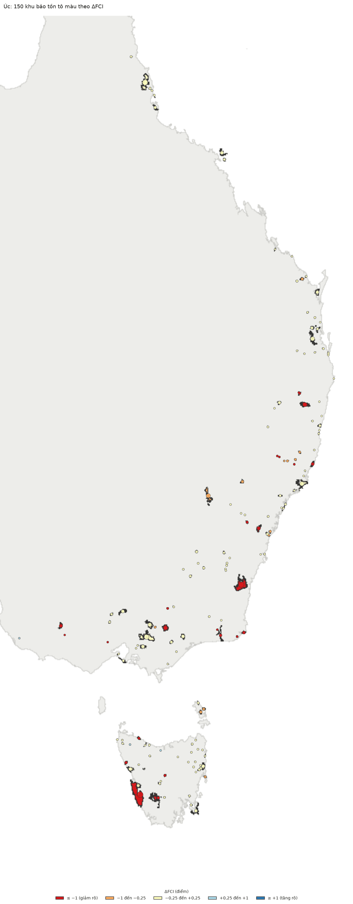
10 khu có ΔFCI giảm nhiều nhất
| Khu bảo tồn | Loại | Đất (km²) | Trọng số W | FCI 2017 | FCI 2025 | ΔFCI | p MK | Kết luận | Rừng & cây 2025 | Rừng tự nhiên | Cách tính |
|---|---|---|---|---|---|---|---|---|---|---|---|
| Top Marshes | Conservation Area | 27,1 | 12,2 | 28,8 | 9,8 | -18,98 | 0,602 | Ổn định / không rõ | 16% | -66,5% | toàn bộ, 10 m |
| Big River | Reference Area | 3,9 | 12,0 | 97,7 | 80,4 | -17,28 | 0,001 | Suy giảm | 100% | 0,0% | toàn bộ, 10 m |
| Victoria Range | Remote and Natural Area - Schedule 6, National Parks Act | 141,8 | 11,1 | 77,8 | 61,3 | -16,54 | 0,602 | Ổn định / không rõ | 82% | -15,4% | 5.000 điểm |
| Benedore River | Reference Area | 11,4 | 12,2 | 100,0 | 88,0 | -11,96 | 0,001 | Suy giảm | 100% | -0,0% | toàn bộ, 10 m |
| Deua | National Park | 1.212,2 | 7,7 | 95,9 | 84,1 | -11,80 | 0,001 | Suy giảm | 99% | -0,1% | 5.000 điểm |
| Mount Buffalo | Reference Area | 11,6 | 12,2 | 98,4 | 87,1 | -11,31 | 0,001 | Suy giảm | 99% | -0,0% | toàn bộ, 10 m |
| Jenolan | Karst Conservation Reserve | 31,5 | 12,2 | 87,9 | 77,5 | -10,38 | 0,001 | Suy giảm | 99% | -0,1% | toàn bộ, 10 m |
| Tikkawoppa Plateau | Regional Reserve | 45,4 | 12,2 | 54,0 | 44,0 | -9,95 | 0,602 | Ổn định / không rõ | 54% | -13,6% | toàn bộ, 10 m |
| Brady Swamp W.R | Natural Features Reserve | 2,2 | 12,0 | 12,5 | 4,7 | -7,79 | 0,677 | Ổn định / không rõ | 8% | -62,2% | toàn bộ, 10 m |
| Back River | Nature Reserve | 7,3 | 12,0 | 96,0 | 89,4 | -6,67 | 0,001 | Suy giảm | 100% | -0,0% | toàn bộ, 10 m |
Tất cả 150 khu đã phân tích (xếp theo diện tích)
| Khu bảo tồn | Loại | Đất (km²) | Trọng số W | FCI 2017 | FCI 2025 | ΔFCI | p MK | Kết luận | Rừng & cây 2025 | Rừng tự nhiên | Cách tính |
|---|---|---|---|---|---|---|---|---|---|---|---|
| Southwest | Conservation Area | 1.707,9 | 7,7 | 54,3 | 53,1 | -1,25 | 0,016 | Suy giảm | 55% | -0,2% | 5.000 điểm |
| Deua | National Park | 1.212,2 | 7,7 | 95,9 | 84,1 | -11,80 | 0,001 | Suy giảm | 99% | -0,1% | 5.000 điểm |
| Wooroonooran | National Park | 1.152,6 | 7,7 | 97,1 | 97,1 | 0,00 | 1,000 | Ổn định / không rõ | 100% | 0,0% | 5.000 điểm |
| Yarra Ranges | National Park | 772,5 | 11,1 | 58,8 | 58,7 | -0,11 | 0,001 | Ổn định / không rõ | 99% | +0,0% | 5.000 điểm |
| Myall Lakes | National Park | 478,7 | 11,1 | 53,5 | 53,4 | -0,07 | 0,002 | Ổn định / không rõ | 69% | -0,0% | 5.000 điểm |
| Goobang | National Park | 424,4 | 11,1 | 91,5 | 90,8 | -0,77 | 0,001 | Ổn định / không rõ | 99% | 0,0% | 5.000 điểm |
| Nymboida | National Park | 406,5 | 11,1 | 83,0 | 81,5 | -1,52 | 0,001 | Suy giảm | 99% | 0,0% | 5.000 điểm |
| D'Aguilar | National Park | 392,3 | 11,1 | 81,4 | 81,3 | -0,05 | 0,002 | Ổn định / không rõ | 100% | 0,0% | 5.000 điểm |
| Macalister Area | Remote and Natural Area - Schedule 6, National Parks Act | 334,9 | 11,1 | 96,4 | 94,6 | -1,76 | 0,002 | Suy giảm | 98% | +0,0% | 5.000 điểm |
| Lake Eildon | National Park | 278,2 | 11,1 | 88,1 | 88,1 | -0,01 | 0,004 | Ổn định / không rõ | 100% | 0,0% | 5.000 điểm |
| Burragorang | State Conservation Area | 177,4 | 11,1 | 93,2 | 87,3 | -5,90 | 0,001 | Suy giảm | 99% | 0,0% | 5.000 điểm |
| Whitsunday Islands | National Park | 173,0 | 11,1 | 90,6 | 90,6 | -0,02 | 0,007 | Ổn định / không rõ | 96% | 0,0% | 5.000 điểm |
| Mount Heemskirk | Regional Reserve | 167,1 | 11,1 | 30,3 | 30,3 | -0,04 | 0,297 | Ổn định / không rõ | 33% | 0,0% | 5.000 điểm |
| Bunyip | State Park | 166,5 | 11,1 | 57,8 | 57,6 | -0,12 | 0,297 | Ổn định / không rõ | 99% | -0,1% | 5.000 điểm |
| Douglas-Apsley | National Park | 158,3 | 11,1 | 73,5 | 73,5 | 0,00 | 1,000 | Ổn định / không rõ | 100% | 0,0% | 5.000 điểm |
| Mitchell River | National Park | 144,0 | 11,1 | 83,6 | 83,6 | -0,04 | 0,005 | Ổn định / không rõ | 98% | -0,0% | 5.000 điểm |
| Victoria Range | Remote and Natural Area - Schedule 6, National Parks Act | 141,8 | 11,1 | 77,8 | 61,3 | -16,54 | 0,602 | Ổn định / không rõ | 82% | -15,4% | 5.000 điểm |
| Heathcote-Graytown | National Park | 126,9 | 11,1 | 77,9 | 77,9 | 0,00 | 1,000 | Ổn định / không rõ | 100% | 0,0% | 5.000 điểm |
| Maaroom | Fish Habitat Area (A) | 108,5 | 11,1 | 37,1 | 37,0 | -0,02 | 0,004 | Ổn định / không rõ | 37% | 0,0% | 5.000 điểm |
| Tasman | National Park | 99,9 | 12,2 | 77,9 | 77,8 | -0,12 | 0,001 | Ổn định / không rõ | 85% | -0,2% | 5.000 điểm |
| Crowdy Bay | National Park | 93,6 | 12,2 | 25,6 | 23,6 | -1,94 | 0,754 | Ổn định / không rõ | 36% | -4,0% | 5.000 điểm |
| Kings Plains | National Park | 82,1 | 12,2 | 84,2 | 84,2 | -0,02 | 0,001 | Ổn định / không rõ | 100% | 0,0% | toàn bộ, 10 m |
| Macquarie Harbour | Historic Site | 79,8 | 12,2 | 38,5 | 38,4 | -0,08 | 0,002 | Ổn định / không rõ | 39% | 0,0% | 5.000 điểm |
| Bellthorpe | National Park | 76,0 | 12,2 | 76,1 | 76,1 | -0,00 | 0,004 | Ổn định / không rõ | 100% | 0,0% | toàn bộ, 10 m |
| Cape Howe | Wilderness Zone | 71,5 | 12,2 | 78,1 | 75,5 | -2,63 | 0,001 | Suy giảm | 84% | -0,1% | toàn bộ, 10 m |
| Dharawal | National Park | 69,3 | 12,2 | 91,8 | 91,7 | -0,09 | 0,001 | Ổn định / không rõ | 98% | +0,0% | toàn bộ, 10 m |
| Hinchinbrook | Fish Habitat Area (A) | 67,1 | 12,2 | 54,5 | 54,5 | 0,00 | 1,000 | Ổn định / không rõ | 55% | 0,0% | 5.000 điểm |
| Munghorn Gap | Nature Reserve | 61,5 | 12,2 | 80,1 | 79,7 | -0,45 | 0,001 | Ổn định / không rõ | 99% | -0,0% | toàn bộ, 10 m |
| Avon - Mt Hedrick N.F.S.R. | Natural Features Reserve | 56,4 | 12,2 | 82,7 | 82,7 | -0,00 | 0,048 | Ổn định / không rõ | 100% | 0,0% | toàn bộ, 10 m |
| Darling Range | Conservation Area | 54,8 | 12,2 | 57,1 | 56,8 | -0,36 | 0,000 | Ổn định / không rõ | 78% | -0,0% | toàn bộ, 10 m |
| Bingera | National Park | 54,4 | 12,2 | 58,8 | 58,5 | -0,36 | 0,602 | Ổn định / không rõ | 98% | -0,7% | toàn bộ, 10 m |
| Bemm, Goolengook, Arte and Errinundra Rivers | Heritage River | 53,9 | 12,2 | 56,0 | 53,5 | -2,48 | 0,009 | Suy giảm | 76% | -0,1% | toàn bộ, 10 m |
| Adamsfield | Conservation Area | 53,8 | 12,2 | 66,9 | 64,8 | -2,08 | 0,602 | Ổn định / không rõ | 73% | -0,2% | toàn bộ, 10 m |
| Tikkawoppa Plateau | Regional Reserve | 45,4 | 12,2 | 54,0 | 44,0 | -9,95 | 0,602 | Ổn định / không rõ | 54% | -13,6% | toàn bộ, 10 m |
| Bongil Bongil | National Park | 42,5 | 12,2 | 46,9 | 46,9 | +0,02 | 0,602 | Ổn định / không rõ | 94% | +0,0% | toàn bộ, 10 m |
| Patriarchs | Conservation Area | 39,7 | 12,2 | 29,0 | 28,6 | -0,46 | 0,048 | Ổn định / không rõ | 41% | -1,7% | toàn bộ, 10 m |
| Ulandra | Nature Reserve | 39,6 | 12,2 | 81,5 | 81,5 | -0,02 | 0,022 | Ổn định / không rõ | 96% | -0,0% | toàn bộ, 10 m |
| Swan River | Regional Reserve | 31,6 | 12,2 | 66,3 | 66,2 | -0,02 | 0,001 | Ổn định / không rõ | 100% | 0,0% | toàn bộ, 10 m |
| Jenolan | Karst Conservation Reserve | 31,5 | 12,2 | 87,9 | 77,5 | -10,38 | 0,001 | Suy giảm | 99% | -0,1% | toàn bộ, 10 m |
| Rocky Cape | National Park | 30,4 | 12,2 | 55,3 | 54,0 | -1,29 | 0,076 | Ổn định / không rõ | 69% | -2,2% | toàn bộ, 10 m |
| Glass House Mountains | National Park | 30,2 | 12,2 | 54,3 | 54,3 | -0,03 | 0,016 | Ổn định / không rõ | 92% | -0,0% | toàn bộ, 10 m |
| Heathcote | National Park | 28,8 | 12,2 | 89,1 | 88,4 | -0,71 | 0,118 | Ổn định / không rõ | 99% | -0,0% | toàn bộ, 10 m |
| Carabost | Flora Reserve | 28,0 | 12,2 | 77,3 | 77,3 | -0,00 | 0,466 | Ổn định / không rõ | 100% | -0,0% | toàn bộ, 10 m |
| Lindeman Islands | National Park | 27,7 | 12,2 | 58,3 | 58,3 | +0,03 | 0,001 | Ổn định / không rõ | 83% | +0,1% | toàn bộ, 10 m |
| Top Marshes | Conservation Area | 27,1 | 12,2 | 28,8 | 9,8 | -18,98 | 0,602 | Ổn định / không rõ | 16% | -66,5% | toàn bộ, 10 m |
| Werakata | State Conservation Area | 26,2 | 12,2 | 60,7 | 60,6 | -0,08 | 0,012 | Ổn định / không rõ | 99% | 0,0% | toàn bộ, 10 m |
| Wereboldera | State Conservation Area | 25,4 | 12,2 | 88,2 | 88,1 | -0,12 | 0,002 | Ổn định / không rõ | 100% | 0,0% | toàn bộ, 10 m |
| Washpool | State Conservation Area | 24,8 | 12,2 | 91,5 | 86,4 | -5,07 | 0,001 | Suy giảm | 99% | 0,0% | toàn bộ, 10 m |
| Cordalba | National Park | 24,8 | 12,2 | 60,5 | 60,5 | 0,00 | 1,000 | Ổn định / không rõ | 100% | 0,0% | toàn bộ, 10 m |
| Coles Bay | Conservation Area | 24,3 | 12,2 | 60,0 | 59,7 | -0,33 | 0,754 | Ổn định / không rõ | 92% | -0,6% | toàn bộ, 10 m |
| Mornington Peninsula | National Park | 24,2 | 12,2 | 40,2 | 40,2 | -0,01 | 0,005 | Ổn định / không rõ | 67% | -0,0% | toàn bộ, 10 m |
| Pilchers Bridge N.C.R. | Natural Features Reserve | 22,4 | 12,2 | 62,8 | 62,8 | 0,00 | 1,000 | Ổn định / không rõ | 100% | 0,0% | toàn bộ, 10 m |
| Basilisk Range | National Park | 22,2 | 12,2 | 79,0 | 79,0 | 0,00 | 1,000 | Ổn định / không rõ | 100% | 0,0% | toàn bộ, 10 m |
| North East River | Game Reserve | 22,1 | 12,2 | 13,2 | 13,2 | -0,00 | 0,466 | Ổn định / không rõ | 15% | 0,0% | toàn bộ, 10 m |
| Munmorah | State Conservation Area | 21,6 | 12,2 | 54,0 | 53,8 | -0,14 | 0,007 | Ổn định / không rõ | 89% | -0,3% | toàn bộ, 10 m |
| Fryers Ridge N.C.R. | Nature Conservation Reserve | 20,2 | 12,2 | 69,0 | 68,9 | -0,10 | 0,004 | Ổn định / không rõ | 100% | +0,0% | toàn bộ, 10 m |
| Hardings Falls | Regional Reserve | 19,4 | 12,2 | 64,6 | 64,6 | 0,00 | 1,000 | Ổn định / không rõ | 100% | 0,0% | toàn bộ, 10 m |
| Mount Seaview | Nature Reserve | 17,6 | 12,2 | 90,1 | 89,9 | -0,25 | 0,061 | Ổn định / không rõ | 100% | -0,0% | toàn bộ, 10 m |
| Southern Moreton Bay Islands | National Park | 16,1 | 12,2 | 88,6 | 88,5 | -0,07 | 0,002 | Ổn định / không rõ | 94% | -0,0% | toàn bộ, 10 m |
| Monkeycot | Nature Reserve | 16,1 | 12,2 | 84,9 | 84,2 | -0,68 | 0,001 | Ổn định / không rõ | 98% | +0,0% | toàn bộ, 10 m |
| Bugan | Nature Reserve | 15,2 | 12,2 | 80,3 | 79,8 | -0,49 | 0,001 | Ổn định / không rõ | 100% | +0,0% | toàn bộ, 10 m |
| Mundoonen | Nature Reserve | 14,8 | 12,2 | 69,3 | 69,3 | 0,00 | 1,000 | Ổn định / không rõ | 99% | 0,0% | toàn bộ, 10 m |
| Lime Bay | State Reserve | 14,6 | 12,2 | 52,4 | 52,4 | -0,00 | 0,754 | Ổn định / không rõ | 81% | -0,0% | toàn bộ, 10 m |
| Mount Spurgeon | National Park | 12,2 | 12,2 | 100,0 | 100,0 | 0,00 | 1,000 | Ổn định / không rõ | 100% | 0,0% | toàn bộ, 10 m |
| Mount Buffalo | Reference Area | 11,6 | 12,2 | 98,4 | 87,1 | -11,31 | 0,001 | Suy giảm | 99% | -0,0% | toàn bộ, 10 m |
| West Cooroy | Conservation Park | 11,5 | 12,2 | 61,5 | 61,5 | 0,00 | 1,000 | Ổn định / không rõ | 100% | 0,0% | toàn bộ, 10 m |
| Koala Bushland | Coordinated Conservation Area | 11,5 | 12,2 | 59,9 | 59,9 | -0,00 | 0,076 | Ổn định / không rõ | 100% | -0,0% | toàn bộ, 10 m |
| Benedore River | Reference Area | 11,4 | 12,2 | 100,0 | 88,0 | -11,96 | 0,001 | Suy giảm | 100% | -0,0% | toàn bộ, 10 m |
| Mount Horror | Regional Reserve | 11,2 | 12,2 | 58,8 | 58,6 | -0,22 | 0,917 | Ổn định / không rõ | 98% | -0,4% | toàn bộ, 10 m |
| Williams Creek | Natural Catchment Area | 10,1 | 12,2 | 100,0 | 99,6 | -0,45 | 0,002 | Ổn định / không rõ | 100% | -0,0% | toàn bộ, 10 m |
| Tarraleah | Conservation Area | 9,7 | 12,0 | 68,0 | 68,0 | -0,01 | 0,602 | Ổn định / không rõ | 97% | -0,0% | toàn bộ, 10 m |
| Avoca | Regional Reserve | 9,3 | 12,0 | 61,5 | 61,4 | -0,05 | 0,000 | Ổn định / không rõ | 100% | -0,0% | toàn bộ, 10 m |
| Blythe River | Conservation Area | 9,3 | 12,0 | 59,1 | 59,0 | -0,01 | 0,175 | Ổn định / không rõ | 99% | -0,0% | toàn bộ, 10 m |
| Scheyville | National Park | 9,3 | 12,0 | 44,0 | 44,0 | -0,02 | 0,005 | Ổn định / không rõ | 75% | -0,0% | toàn bộ, 10 m |
| Goorooyarroo | Nature Reserve | 8,3 | 12,0 | 18,9 | 18,9 | -0,03 | 0,048 | Ổn định / không rõ | 31% | -0,1% | toàn bộ, 10 m |
| Khatambuhl | Nature Reserve | 8,0 | 12,0 | 67,7 | 66,4 | -1,29 | 0,002 | Suy giảm | 100% | -0,0% | toàn bộ, 10 m |
| Beehive Creek | Reference Area | 8,0 | 12,0 | 89,7 | 89,7 | 0,00 | 1,000 | Ổn định / không rõ | 100% | 0,0% | toàn bộ, 10 m |
| Mount Morrison | Conservation Area | 7,5 | 12,0 | 60,0 | 60,0 | -0,01 | 0,466 | Ổn định / không rõ | 100% | -0,0% | toàn bộ, 10 m |
| Tumblong | State Conservation Area | 7,5 | 12,0 | 81,7 | 81,7 | 0,00 | 1,000 | Ổn định / không rõ | 100% | 0,0% | toàn bộ, 10 m |
| Maria Creek | National Park | 7,3 | 12,0 | 79,9 | 79,9 | 0,00 | 1,000 | Ổn định / không rõ | 97% | 0,0% | toàn bộ, 10 m |
| Back River | Nature Reserve | 7,3 | 12,0 | 96,0 | 89,4 | -6,67 | 0,001 | Suy giảm | 100% | -0,0% | toàn bộ, 10 m |
| Forest Land | Flora Reserve | 7,3 | 12,0 | 92,1 | 90,3 | -1,86 | 0,001 | Suy giảm | 100% | +0,0% | toàn bộ, 10 m |
| Linton | Nature Reserve | 6,7 | 12,0 | 58,0 | 58,0 | -0,03 | 0,022 | Ổn định / không rõ | 97% | -0,0% | toàn bộ, 10 m |
| Mt Ainslie | Nature Reserve | 6,4 | 12,0 | 56,0 | 56,0 | 0,00 | 1,000 | Ổn định / không rõ | 93% | 0,0% | toàn bộ, 10 m |
| Family Islands | National Park | 6,2 | 12,0 | 89,3 | 89,3 | 0,00 | 1,000 | Ổn định / không rõ | 94% | 0,0% | toàn bộ, 10 m |
| Humboldt Ridge | Regional Reserve | 6,1 | 12,0 | 63,0 | 63,0 | +0,00 | 0,022 | Ổn định / không rõ | 100% | +0,0% | toàn bộ, 10 m |
| Livingstone | State Conservation Area | 6,0 | 12,0 | 74,6 | 74,6 | 0,00 | 1,000 | Ổn định / không rõ | 99% | 0,0% | toàn bộ, 10 m |
| Tomalla | Nature Reserve | 5,9 | 12,0 | 70,3 | 68,6 | -1,71 | 0,000 | Suy giảm | 100% | -0,0% | toàn bộ, 10 m |
| Gir-um-bit | National Park | 5,9 | 12,0 | 24,6 | 24,6 | -0,01 | 0,022 | Ổn định / không rõ | 27% | -0,0% | toàn bộ, 10 m |
| Wyrrabalong | National Park | 5,8 | 12,0 | 57,3 | 57,3 | -0,05 | 0,037 | Ổn định / không rõ | 92% | -0,1% | toàn bộ, 10 m |
| Comerong Island | Nature Reserve | 5,6 | 12,0 | 49,5 | 49,5 | -0,01 | 0,095 | Ổn định / không rõ | 63% | -0,0% | toàn bộ, 10 m |
| Winterbrook Falls | Regional Reserve | 5,6 | 12,0 | 97,7 | 97,7 | 0,00 | 1,000 | Ổn định / không rõ | 98% | 0,0% | toàn bộ, 10 m |
| Lovells Creek | Regional Reserve | 5,5 | 12,0 | 59,8 | 59,8 | +0,00 | 0,095 | Ổn định / không rõ | 100% | +0,0% | toàn bộ, 10 m |
| West Point | State Reserve | 5,5 | 12,0 | 22,0 | 22,0 | 0,00 | 1,000 | Ổn định / không rõ | 36% | 0,0% | toàn bộ, 10 m |
| Glastonbury | National Park | 5,3 | 12,0 | 62,6 | 62,6 | 0,00 | 1,000 | Ổn định / không rõ | 100% | 0,0% | toàn bộ, 10 m |
| Coomera | Fish Habitat Area (B) | 5,2 | 12,0 | 75,7 | 75,7 | 0,00 | 1,000 | Ổn định / không rõ | 84% | 0,0% | toàn bộ, 10 m |
| Waratah Creek | Regional Reserve | 5,2 | 12,0 | 60,7 | 60,7 | 0,00 | 1,000 | Ổn định / không rõ | 99% | 0,0% | toàn bộ, 10 m |
| Gaagal Wanggaan (South Beach) | National Park | 5,2 | 12,0 | 35,8 | 35,8 | 0,00 | 1,000 | Ổn định / không rõ | 60% | 0,0% | toàn bộ, 10 m |
| Elliott River | Fish Habitat Area (A) | 5,1 | 12,0 | 45,2 | 45,2 | 0,00 | 1,000 | Ổn định / không rõ | 50% | 0,0% | toàn bộ, 10 m |
| Mount Porepunkah S.R | Natural Features Reserve | 5,0 | 12,0 | 99,9 | 99,9 | -0,01 | 0,175 | Ổn định / không rõ | 100% | -0,0% | toàn bộ, 10 m |
| Little Boobyalla River | Conservation Area | 4,9 | 12,0 | 47,7 | 47,7 | 0,00 | 1,000 | Ổn định / không rõ | 79% | 0,0% | toàn bộ, 10 m |
| Bells Marsh | Regional Reserve | 4,4 | 12,0 | 59,9 | 59,9 | 0,00 | 1,000 | Ổn định / không rõ | 100% | 0,0% | toàn bộ, 10 m |
| Paradise Plains | Regional Reserve | 4,4 | 12,0 | 55,1 | 55,1 | 0,00 | 1,000 | Ổn định / không rõ | 90% | 0,0% | toàn bộ, 10 m |
| Pepper Hill | Regional Reserve | 4,3 | 12,0 | 65,4 | 65,4 | 0,00 | 1,000 | Ổn định / không rõ | 100% | 0,0% | toàn bộ, 10 m |
| Evans Crown | Nature Reserve | 4,3 | 12,0 | 59,4 | 59,4 | 0,00 | 1,000 | Ổn định / không rõ | 99% | 0,0% | toàn bộ, 10 m |
| Scamander | Conservation Area | 4,1 | 12,0 | 12,0 | 12,2 | +0,14 | 0,001 | Ổn định / không rõ | 21% | +0,4% | toàn bộ, 10 m |
| Cascade | State Conservation Area | 4,1 | 12,0 | 83,8 | 83,8 | 0,00 | 1,000 | Ổn định / không rõ | 100% | 0,0% | toàn bộ, 10 m |
| Mount Puzzler | Regional Reserve | 4,0 | 12,0 | 73,1 | 73,1 | 0,00 | 1,000 | Ổn định / không rõ | 100% | 0,0% | toàn bộ, 10 m |
| Dismal Swamp | Regional Reserve | 4,0 | 12,0 | 60,0 | 60,0 | 0,00 | 1,000 | Ổn định / không rõ | 100% | 0,0% | toàn bộ, 10 m |
| Big River | Reference Area | 3,9 | 12,0 | 97,7 | 80,4 | -17,28 | 0,001 | Suy giảm | 100% | 0,0% | toàn bộ, 10 m |
| Dharawal | Nature Reserve | 3,8 | 12,0 | 69,0 | 68,8 | -0,27 | 0,048 | Ổn định / không rõ | 79% | +0,1% | toàn bộ, 10 m |
| Freemantle | Nature Reserve | 3,6 | 12,0 | 77,0 | 77,0 | -0,00 | 0,022 | Ổn định / không rõ | 100% | -0,0% | toàn bộ, 10 m |
| Sale Common N.C.R. | Nature Conservation Reserve | 3,2 | 12,0 | 16,5 | 16,5 | 0,00 | 1,000 | Ổn định / không rõ | 28% | 0,0% | toàn bộ, 10 m |
| Cooperabung Creek | Nature Reserve | 3,2 | 12,0 | 60,6 | 60,6 | 0,00 | 1,000 | Ổn định / không rõ | 100% | 0,0% | toàn bộ, 10 m |
| Mernot | Nature Reserve | 3,2 | 12,0 | 85,4 | 85,0 | -0,38 | 0,001 | Ổn định / không rõ | 99% | 0,0% | toàn bộ, 10 m |
| Midday Hill | Conservation Area | 3,1 | 12,0 | 82,7 | 82,6 | -0,07 | 0,175 | Ổn định / không rõ | 100% | 0,0% | toàn bộ, 10 m |
| Stony Creek (Durdiwarrah) | Reference Area | 2,9 | 12,0 | 67,4 | 65,7 | -1,66 | 0,001 | Suy giảm | 100% | 0,0% | toàn bộ, 10 m |
| Milkshake Hills | Regional Reserve | 2,8 | 12,0 | 15,5 | 16,0 | +0,45 | 0,001 | Ổn định / không rõ | 26% | +2,9% | toàn bộ, 10 m |
| Swan Bay - Edwards Point W.R | Nature Conservation Reserve | 2,6 | 12,0 | 6,8 | 6,8 | 0,00 | 1,000 | Ổn định / không rõ | 11% | 0,0% | toàn bộ, 10 m |
| Wanniassa Hills | Nature Reserve | 2,6 | 12,0 | 28,9 | 28,9 | 0,00 | 1,000 | Ổn định / không rõ | 48% | 0,0% | toàn bộ, 10 m |
| Mount Kershaw | Regional Reserve | 2,6 | 12,0 | 99,4 | 99,4 | 0,00 | 1,000 | Ổn định / không rõ | 100% | 0,0% | toàn bộ, 10 m |
| Dwyers Scrub | Conservation Park | 2,6 | 12,0 | 59,8 | 59,8 | 0,00 | 1,000 | Ổn định / không rõ | 100% | 0,0% | toàn bộ, 10 m |
| Wentworth Creek | Conservation Area | 2,5 | 12,0 | 60,5 | 60,5 | -0,00 | 0,466 | Ổn định / không rõ | 98% | -0,0% | toàn bộ, 10 m |
| Seventeen Seventy-Round Hill | Fish Habitat Area (B) | 2,4 | 12,0 | 33,8 | 33,8 | 0,00 | 1,000 | Ổn định / không rõ | 34% | 0,0% | toàn bộ, 10 m |
| Bendoc N.C.R. | Natural Features Reserve | 2,3 | 12,0 | 15,6 | 15,5 | -0,07 | 0,048 | Ổn định / không rõ | 26% | -0,4% | toàn bộ, 10 m |
| Warrawee | Conservation Area | 2,3 | 12,0 | 55,6 | 56,4 | +0,81 | 0,048 | Ổn định / không rõ | 96% | +1,5% | toàn bộ, 10 m |
| Brady Swamp W.R | Natural Features Reserve | 2,2 | 12,0 | 12,5 | 4,7 | -7,79 | 0,677 | Ổn định / không rõ | 8% | -62,2% | toàn bộ, 10 m |
| Mcleods Creek | Nature Reserve | 2,2 | 12,0 | 16,4 | 16,4 | 0,00 | 1,000 | Ổn định / không rõ | 27% | 0,0% | toàn bộ, 10 m |
| Coolongolook | Nature Reserve | 2,0 | 12,0 | 52,0 | 52,0 | -0,04 | 0,048 | Ổn định / không rõ | 98% | -0,1% | toàn bộ, 10 m |
| Dē-răl-lĭ (Calliope River) | Fish Habitat Area (B) | 2,0 | 12,0 | 13,5 | 13,4 | -0,10 | 0,048 | Ổn định / không rõ | 20% | -0,8% | toàn bộ, 10 m |
| Wambool | Nature Reserve | 2,0 | 12,0 | 59,8 | 59,8 | 0,00 | 1,000 | Ổn định / không rõ | 100% | 0,0% | toàn bộ, 10 m |
| Melrose | Nature Reserve | 2,0 | 12,0 | 15,8 | 15,8 | 0,00 | 1,000 | Ổn định / không rõ | 27% | 0,0% | toàn bộ, 10 m |
| Meetus Falls | Conservation Area | 1,9 | 12,0 | 90,2 | 90,2 | 0,00 | 1,000 | Ổn định / không rõ | 100% | 0,0% | toàn bộ, 10 m |
| Warragai Creek | Nature Reserve | 1,8 | 12,0 | 60,0 | 60,0 | 0,00 | 1,000 | Ổn định / không rõ | 100% | 0,0% | toàn bộ, 10 m |
| Cam River | Conservation Area | 1,8 | 12,0 | 59,2 | 59,2 | +0,01 | 0,048 | Ổn định / không rõ | 99% | +0,0% | toàn bộ, 10 m |
| Barayamal | CCA Zone 1 National Park | 1,8 | 12,0 | 56,7 | 56,6 | -0,03 | 0,048 | Ổn định / không rõ | 94% | -0,1% | toàn bộ, 10 m |
| Mount Perry | Conservation Park | 1,7 | 12,0 | 60,0 | 60,0 | 0,00 | 1,000 | Ổn định / không rõ | 100% | 0,0% | toàn bộ, 10 m |
| Beaconsfield N.C.R. | Natural Features Reserve | 1,7 | 12,0 | 57,3 | 57,3 | 0,00 | 1,000 | Ổn định / không rõ | 96% | 0,0% | toàn bộ, 10 m |
| Mount Beau Brummell | Conservation Park | 1,6 | 12,0 | 78,7 | 78,7 | 0,00 | 1,000 | Ổn định / không rõ | 100% | 0,0% | toàn bộ, 10 m |
| Long | Forest Reserve | 1,5 | 12,0 | 55,2 | 55,6 | +0,36 | 0,002 | Ổn định / không rõ | 96% | +0,3% | toàn bộ, 10 m |
| Triplarina | Nature Reserve | 1,4 | 12,0 | 56,2 | 56,2 | 0,00 | 1,000 | Ổn định / không rõ | 94% | 0,0% | toàn bộ, 10 m |
| Talawahl | State Conservation Area | 1,4 | 12,0 | 60,0 | 60,0 | 0,00 | 1,000 | Ổn định / không rõ | 100% | 0,0% | toàn bộ, 10 m |
| Tuggerah | Nature Reserve | 1,3 | 12,0 | 36,4 | 36,4 | +0,04 | 0,001 | Ổn định / không rõ | 69% | 0,0% | toàn bộ, 10 m |
| Wright Forest B.R. | Natural Features Reserve | 1,3 | 12,0 | 47,4 | 47,4 | 0,00 | 1,000 | Ổn định / không rõ | 100% | 0,0% | toàn bộ, 10 m |
| Won Wron F.R | Nature Conservation Reserve | 1,3 | 12,0 | 59,9 | 59,9 | 0,00 | 1,000 | Ổn định / không rõ | 100% | 0,0% | toàn bộ, 10 m |
| Kate Reed | Nature Recreation Area | 1,1 | 12,0 | 58,1 | 58,1 | 0,00 | 1,000 | Ổn định / không rõ | 97% | 0,0% | toàn bộ, 10 m |
| Jagun | Nature Reserve | 1,0 | 12,0 | 50,3 | 50,3 | 0,00 | 1,000 | Ổn định / không rõ | 85% | 0,0% | toàn bộ, 10 m |
| Broken Head | Nature Reserve | 1,0 | 12,0 | 47,4 | 47,4 | 0,00 | 1,000 | Ổn định / không rõ | 79% | 0,0% | toàn bộ, 10 m |
| Eudlo Creek | Conservation Park | 1,0 | 12,0 | 61,5 | 61,5 | -0,00 | 0,466 | Ổn định / không rõ | 99% | -0,0% | toàn bộ, 10 m |
| Madmans Creek | Flora Reserve | 1,0 | 12,0 | 60,2 | 60,2 | 0,00 | 1,000 | Ổn định / không rõ | 100% | 0,0% | toàn bộ, 10 m |
Nga
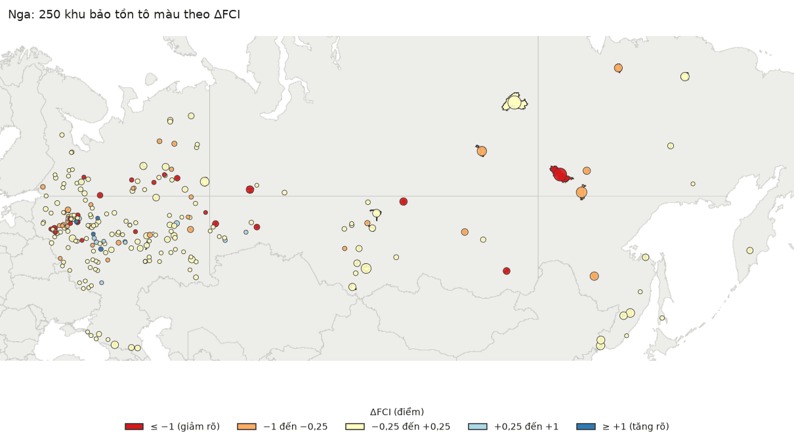
10 khu có ΔFCI giảm nhiều nhất
| Khu bảo tồn | Loại | Đất (km²) | Trọng số W | FCI 2017 | FCI 2025 | ΔFCI | p MK | Kết luận | Rừng & cây 2025 | Rừng tự nhiên | Cách tính |
|---|---|---|---|---|---|---|---|---|---|---|---|
| Nikishinski | State Natural Zakaznik | 645,6 | 12,4 | 70,6 | 62,6 | -7,96 | 0,007 | Suy giảm | 75% | -0,3% | 5.000 điểm |
| Kopsinskoe | Natural Monument | 17,7 | 12,7 | 55,4 | 48,1 | -7,30 | 0,466 | Ổn định / không rõ | 80% | -13,2% | toàn bộ, 10 m |
| Boloto Talickie plavy | State Natural Zakaznik | 1,8 | 12,5 | 41,5 | 36,0 | -5,46 | 0,037 | Suy giảm | 82% | -13,9% | toàn bộ, 10 m |
| Siine (Sinya) | Natural Park | 13.746,8 | 11,5 | 81,5 | 77,1 | -4,34 | 0,001 | Suy giảm | 87% | 0,0% | 5.000 điểm |
| Boloto Prudovskoe | State Natural Zakaznik | 5,9 | 12,5 | 57,7 | 53,9 | -3,86 | 0,005 | Suy giảm | 93% | -6,9% | toàn bộ, 10 m |
| Boloto Zalezhsko | State Natural Zakaznik | 2,7 | 12,5 | 58,7 | 55,3 | -3,42 | 0,005 | Suy giảm | 94% | -5,8% | toàn bộ, 10 m |
| Ognyanski | State Natural Zakaznik | 1.075,0 | 11,5 | 95,4 | 92,0 | -3,41 | 0,001 | Suy giảm | 99% | -0,0% | 5.000 điểm |
| Alabuga | State Natural Zakaznik | 230,7 | 12,4 | 31,8 | 28,5 | -3,28 | 0,001 | Suy giảm | 43% | -8,8% | 5.000 điểm |
| Boloto u d. Dyagilev | State Natural Zakaznik | 5,4 | 12,5 | 57,8 | 55,0 | -2,74 | 0,012 | Suy giảm | 92% | -3,9% | toàn bộ, 10 m |
| Rezhevsko | State Natural Zakaznik | 342,2 | 12,4 | 47,2 | 44,7 | -2,42 | 0,677 | Ổn định / không rõ | 77% | -6,1% | 5.000 điểm |
Tất cả 250 khu đã phân tích (xếp theo diện tích)
| Khu bảo tồn | Loại | Đất (km²) | Trọng số W | FCI 2017 | FCI 2025 | ΔFCI | p MK | Kết luận | Rừng & cây 2025 | Rừng tự nhiên | Cách tính |
|---|---|---|---|---|---|---|---|---|---|---|---|
| Beke (Beke) | Resource Reserve | 14.757,7 | 11,5 | 96,7 | 96,7 | 0,00 | 1,000 | Ổn định / không rõ | 97% | 0,0% | 5.000 điểm |
| Siine (Sinya) | Natural Park | 13.746,8 | 11,5 | 81,5 | 77,1 | -4,34 | 0,001 | Suy giảm | 87% | 0,0% | 5.000 điểm |
| Kyrbykan | Resource Reserve | 5.663,8 | 11,5 | 91,9 | 91,6 | -0,28 | 0,001 | Ổn định / không rõ | 96% | +0,0% | 5.000 điểm |
| SHorski | National Park | 4.189,5 | 11,5 | 97,7 | 97,7 | -0,02 | 0,048 | Ổn định / không rõ | 98% | -0,0% | 5.000 điểm |
| Vilyujski | Resource Reserve | 3.286,9 | 11,5 | 88,5 | 87,7 | -0,74 | 0,001 | Ổn định / không rõ | 88% | 0,0% | 5.000 điểm |
| Visherski | State Natural Zapovednik | 2.421,2 | 11,5 | 81,2 | 81,2 | 0,00 | 1,000 | Ổn định / không rõ | 81% | 0,0% | 5.000 điểm |
| CHukenski | State Natural Zakaznik | 2.179,0 | 11,5 | 98,1 | 98,1 | -0,02 | 0,005 | Ổn định / không rõ | 98% | +0,0% | 5.000 điểm |
| Ozero Ozhogin | Resource Reserve | 1.991,1 | 11,5 | 42,1 | 42,1 | 0,00 | 1,000 | Ổn định / không rõ | 42% | 0,0% | 5.000 điểm |
| Ul`minskij | State Natural Zakaznik | 1.891,4 | 11,5 | 39,8 | 39,1 | -0,66 | 0,001 | Ổn định / không rõ | 52% | -0,5% | 5.000 điểm |
| Leopardovyj | State Natural Zakaznik | 1.837,5 | 11,5 | 80,3 | 80,2 | -0,06 | 0,004 | Ổn định / không rõ | 92% | -0,0% | 5.000 điểm |
| reka Kyuch | The Quiet Zone | 1.464,0 | 11,5 | 23,6 | 23,2 | -0,36 | 0,001 | Ổn định / không rõ | 23% | -0,5% | 5.000 điểm |
| Poltavskij | State Natural Zakaznik | 1.417,3 | 11,5 | 23,8 | 23,7 | -0,10 | 0,002 | Ổn định / không rõ | 38% | -0,4% | 5.000 điểm |
| Makovskij | State Natural Zakaznik | 1.317,0 | 11,5 | 97,1 | 96,9 | -0,20 | 0,001 | Ổn định / không rõ | 97% | -0,0% | 5.000 điểm |
| Matajskij | State Natural Zakaznik | 1.111,8 | 11,5 | 98,6 | 98,6 | -0,01 | 0,005 | Ổn định / không rõ | 99% | 0,0% | 5.000 điểm |
| Vaspuhol`skij | State Natural Zakaznik | 1.099,6 | 11,5 | 62,0 | 59,8 | -2,20 | 0,001 | Suy giảm | 63% | 0,0% | 5.000 điểm |
| Ognyanski | State Natural Zakaznik | 1.075,0 | 11,5 | 95,4 | 92,0 | -3,41 | 0,001 | Suy giảm | 99% | -0,0% | 5.000 điểm |
| Priel`brus`e | National Park | 1.014,1 | 11,5 | 11,0 | 11,0 | 0,00 | 1,000 | Ổn định / không rõ | 11% | 0,0% | 5.000 điểm |
| Kenkeme | Resource Reserve | 931,6 | 12,4 | 71,7 | 71,2 | -0,53 | 0,001 | Ổn định / không rõ | 81% | 0,0% | 5.000 điểm |
| Uc Enme | Natural Park | 872,7 | 12,4 | 42,7 | 42,7 | -0,02 | 0,076 | Ổn định / không rõ | 43% | -0,0% | 5.000 điểm |
| Verhne-Vashkinski | State Natural Zakaznik | 842,4 | 12,4 | 89,2 | 89,2 | +0,00 | 0,211 | Ổn định / không rõ | 97% | +0,0% | 5.000 điểm |
| Tyb`yuny ( (Tyb-yu-) | State Natural Zakaznik | 688,3 | 12,4 | 39,2 | 38,9 | -0,25 | 0,004 | Ổn định / không rõ | 42% | -0,6% | 5.000 điểm |
| Nikishinski | State Natural Zakaznik | 645,6 | 12,4 | 70,6 | 62,6 | -7,96 | 0,007 | Suy giảm | 75% | -0,3% | 5.000 điểm |
| Gagarinskij | Natural Park | 607,5 | 12,4 | 37,4 | 37,2 | -0,18 | 0,001 | Ổn định / không rõ | 63% | -0,5% | 5.000 điểm |
| Kojgorodskij | National Park | 567,0 | 12,4 | 59,9 | 59,9 | 0,00 | 1,000 | Ổn định / không rõ | 100% | 0,0% | 5.000 điểm |
| Ishimbajski | State Natural Zakaznik | 560,2 | 12,4 | 72,5 | 72,5 | +0,01 | 0,048 | Ổn định / không rõ | 82% | 0,0% | 5.000 điểm |
| Sary-CHumyshsk | State Natural Zakaznik | 550,9 | 12,4 | 68,8 | 68,5 | -0,23 | 0,016 | Ổn định / không rõ | 81% | -0,2% | 5.000 điểm |
| Tayurski | State Natural Zakaznik | 531,3 | 12,4 | 94,4 | 94,0 | -0,40 | 0,001 | Ổn định / không rõ | 99% | +0,0% | 5.000 điểm |
| Ulskij | State Natural Zakaznik | 505,4 | 12,4 | 66,3 | 66,3 | -0,00 | 0,175 | Ổn định / không rõ | 67% | -0,0% | 5.000 điểm |
| Kandatskij | State Natural Zakaznik | 502,4 | 12,4 | 89,0 | 89,0 | -0,01 | 0,175 | Ổn định / không rõ | 98% | +0,0% | 5.000 điểm |
| Bobrovyj | State Natural Zakaznik | 400,0 | 12,4 | 71,4 | 71,3 | -0,08 | 0,005 | Ổn định / không rõ | 71% | -0,1% | 5.000 điểm |
| Marij CHodr | National Park | 381,2 | 12,4 | 52,8 | 52,8 | -0,02 | 0,016 | Ổn định / không rõ | 95% | 0,0% | 5.000 điểm |
| Rezhevsko | State Natural Zakaznik | 342,2 | 12,4 | 47,2 | 44,7 | -2,42 | 0,677 | Ổn định / không rõ | 77% | -6,1% | 5.000 điểm |
| Saltymakovskij | State Natural Zakaznik | 334,0 | 12,4 | 86,4 | 86,4 | -0,02 | 0,076 | Ổn định / không rõ | 93% | -0,0% | 5.000 điểm |
| Uinskij | State Natural Zakaznik | 322,8 | 12,4 | 47,1 | 46,5 | -0,61 | 0,002 | Ổn định / không rõ | 78% | -1,3% | 5.000 điểm |
| Agryzskij | State Natural Zakaznik | 294,5 | 12,4 | 12,7 | 12,7 | +0,04 | 0,009 | Ổn định / không rõ | 25% | -0,1% | 5.000 điểm |
| Mekchirg | Resource Reserve | 279,2 | 12,4 | 22,6 | 22,6 | -0,02 | 0,016 | Ổn định / không rõ | 23% | 0,0% | 5.000 điểm |
| Nebesanyu ((Nebes--Ny) | State Natural Zakaznik | 268,8 | 12,4 | 68,5 | 68,4 | -0,09 | 0,002 | Ổn định / không rõ | 69% | -0,1% | 5.000 điểm |
| Nizhny ya K | National Park | 267,1 | 12,4 | 32,1 | 32,0 | -0,02 | 0,835 | Ổn định / không rõ | 67% | 0,0% | 5.000 điểm |
| CHava h Varma | National Park | 252,6 | 12,4 | 53,5 | 53,5 | 0,00 | 1,000 | Ổn định / không rõ | 98% | 0,0% | 5.000 điểm |
| Onezhski | Protected Natural Complex | 251,6 | 12,4 | 33,0 | 32,8 | -0,11 | 1,000 | Ổn định / không rõ | 53% | -0,2% | 5.000 điểm |
| Urus-Martanovskij | State Natural Zakaznik | 250,3 | 12,4 | 77,5 | 77,5 | +0,03 | 0,076 | Ổn định / không rõ | 90% | +0,1% | 5.000 điểm |
| Byzimskoe (Byzim) boloto | Protected Natural Landscape | 242,4 | 12,4 | 16,1 | 15,9 | -0,16 | 0,002 | Ổn định / không rõ | 20% | -0,9% | 5.000 điểm |
| Andreapol`skij | State Natural Zakaznik | 232,1 | 12,4 | 54,9 | 53,2 | -1,66 | 0,000 | Suy giảm | 89% | -3,0% | 5.000 điểm |
| Alabuga | State Natural Zakaznik | 230,7 | 12,4 | 31,8 | 28,5 | -3,28 | 0,001 | Suy giảm | 43% | -8,8% | 5.000 điểm |
| Melishtinski | State Natural Zakaznik | 204,8 | 12,4 | 12,9 | 12,9 | 0,00 | 1,000 | Ổn định / không rõ | 20% | 0,0% | 5.000 điểm |
| Karstovye ozera | State Natural Zakaznik | 192,9 | 12,4 | 41,7 | 41,4 | -0,31 | 0,061 | Ổn định / không rõ | 69% | -0,8% | 5.000 điểm |
| Nizhn--Kubenski | State Natural Zakaznik | 192,5 | 12,4 | 54,2 | 53,1 | -1,06 | 0,095 | Ổn định / không rõ | 88% | -1,9% | 5.000 điểm |
| Don-Ty | State Natural Zakaznik | 187,0 | 12,4 | 44,0 | 42,8 | -1,24 | 0,000 | Suy giảm | 50% | -2,4% | 5.000 điểm |
| Poteryanny kly | State Natural Zakaznik | 170,8 | 12,4 | 41,9 | 41,8 | -0,01 | 0,466 | Ổn định / không rõ | 71% | -0,1% | 5.000 điểm |
| SHarka | Natural Park | 165,7 | 12,4 | 38,3 | 38,5 | +0,25 | 0,001 | Ổn định / không rõ | 67% | +0,2% | 5.000 điểm |
| Lar`kovskij | State Natural Zakaznik | 160,7 | 12,4 | 20,5 | 20,5 | 0,00 | 1,000 | Ổn định / không rõ | 21% | 0,0% | 5.000 điểm |
| Mokshinski | State Natural Zakaznik | 158,4 | 12,4 | 15,6 | 15,5 | -0,08 | 0,061 | Ổn định / không rõ | 27% | -0,6% | 5.000 điểm |
| Reka Sviyag | Natural Monument | 140,2 | 12,4 | 12,9 | 12,8 | -0,06 | 0,297 | Ổn định / không rõ | 22% | -0,8% | 5.000 điểm |
| Kalyazinski | State Natural Zakaznik | 128,0 | 12,4 | 40,7 | 40,2 | -0,43 | 0,001 | Ổn định / không rõ | 71% | -1,1% | 5.000 điểm |
| CHekerovski | State Natural Zakaznik | 126,6 | 12,4 | 49,3 | 49,4 | +0,04 | 0,012 | Ổn định / không rõ | 83% | +0,0% | 5.000 điểm |
| Verhne-Angarskij | State Natural Zakaznik | 123,3 | 12,4 | 13,5 | 13,5 | 0,00 | 1,000 | Ổn định / không rõ | 14% | 0,0% | 5.000 điểm |
| Bolotnay sistem Ulu--CHa | Landscape Park | 116,7 | 12,4 | 81,5 | 80,6 | -0,87 | 0,001 | Ổn định / không rõ | 81% | -1,1% | 5.000 điểm |
| Gorodishhensk j l | State Natural Zakaznik | 111,0 | 12,4 | 50,1 | 50,0 | -0,05 | 0,009 | Ổn định / không rõ | 83% | -0,1% | 5.000 điểm |
| Kalininskij | State Natural Zakaznik | 108,6 | 12,4 | 36,2 | 36,2 | -0,05 | 0,297 | Ổn định / không rõ | 63% | -0,1% | 5.000 điểm |
| SHorski | State Natural Zakaznik | 107,8 | 12,4 | 53,4 | 53,1 | -0,29 | 0,007 | Ổn định / không rõ | 98% | -0,6% | 5.000 điểm |
| Belorechenski | State Natural Zakaznik | 102,3 | 12,4 | 32,3 | 32,2 | -0,16 | 0,002 | Ổn định / không rõ | 68% | -1,1% | 5.000 điểm |
| Len`yuny ( (Len-yu-) | State Natural Zakaznik | 92,7 | 12,7 | 70,5 | 70,2 | -0,32 | 0,000 | Ổn định / không rõ | 72% | -0,4% | toàn bộ, 10 m |
| Koz`modem`yanski | State Natural Zakaznik | 83,9 | 12,7 | 27,5 | 27,5 | -0,03 | 0,001 | Ổn định / không rõ | 48% | -0,1% | toàn bộ, 10 m |
| Boloto Moh CHisti-1 | State Natural Zakaznik | 81,5 | 12,7 | 40,5 | 40,5 | -0,03 | 0,016 | Ổn định / không rõ | 68% | -0,1% | toàn bộ, 10 m |
| Ozero Tiberkul` | Natural Monument | 70,7 | 12,7 | 59,9 | 59,9 | -0,01 | 0,005 | Ổn định / không rõ | 60% | -0,0% | toàn bộ, 10 m |
| Verhnya a Strel` | State Natural Zakaznik | 68,7 | 12,7 | 59,2 | 59,0 | -0,13 | 0,000 | Ổn định / không rõ | 98% | -0,2% | toàn bộ, 10 m |
| SHajta--Ta | State Natural Zapovednik | 67,3 | 12,7 | 60,1 | 60,1 | -0,05 | 0,001 | Ổn định / không rõ | 74% | -0,1% | toàn bộ, 10 m |
| Hopkovskij i Kletchaty | State Natural Zakaznik | 66,8 | 12,7 | 29,2 | 29,1 | -0,08 | 0,001 | Ổn định / không rõ | 29% | -0,3% | toàn bộ, 10 m |
| Lichadeevski | State Natural Zakaznik | 62,7 | 12,7 | 55,9 | 55,4 | -0,57 | 0,000 | Ổn định / không rõ | 97% | -1,1% | toàn bộ, 10 m |
| Boloto Fedyaevsko | Natural Monument | 59,5 | 12,7 | 47,8 | 47,8 | +0,05 | 1,000 | Ổn định / không rõ | 82% | +0,1% | toàn bộ, 10 m |
| SHalov--Perechick | State Natural Zakaznik | 59,4 | 12,7 | 34,3 | 34,3 | -0,01 | 0,076 | Ổn định / không rõ | 85% | -0,0% | toàn bộ, 10 m |
| Bol`sho Kayuko | Natural Monument | 57,5 | 12,7 | 16,5 | 16,4 | -0,05 | 0,001 | Ổn định / không rõ | 16% | -0,3% | toàn bộ, 10 m |
| Boloto Bor | State Natural Zakaznik | 55,2 | 12,7 | 18,4 | 18,4 | -0,03 | 0,001 | Ổn định / không rõ | 31% | -0,1% | toàn bộ, 10 m |
| Luhtozerskij | State Natural Zakaznik | 54,9 | 12,7 | 36,4 | 36,4 | +0,00 | 0,602 | Ổn định / không rõ | 61% | +0,0% | toàn bộ, 10 m |
| Svetlyj | State Natural Zakaznik | 53,2 | 12,7 | 96,4 | 96,0 | -0,39 | 0,001 | Ổn định / không rõ | 97% | +0,0% | toàn bộ, 10 m |
| Ust`-Bel`sk | Natural Park | 47,9 | 12,7 | 24,4 | 24,3 | -0,17 | 0,016 | Ổn định / không rõ | 41% | -0,8% | toàn bộ, 10 m |
| Sol`vychegodski | State Natural Zakaznik | 47,3 | 12,7 | 51,9 | 51,9 | -0,04 | 0,001 | Ổn định / không rõ | 86% | -0,1% | toàn bộ, 10 m |
| Iglovskij bolotnyj massiv | Natural Monument | 45,2 | 12,7 | 73,7 | 73,6 | -0,02 | 0,001 | Ổn định / không rõ | 76% | -0,0% | toàn bộ, 10 m |
| Ozero Melkovodnoe | State Natural Zakaznik | 44,6 | 12,7 | 40,4 | 40,0 | -0,35 | 0,005 | Ổn định / không rõ | 68% | -0,9% | toàn bộ, 10 m |
| Mihajlovskij | State Natural Zakaznik | 43,0 | 12,7 | 99,8 | 99,8 | -0,00 | 0,009 | Ổn định / không rõ | 100% | -0,0% | toàn bộ, 10 m |
| Srednevskij bobrovo-vyhuholevyj | State Natural Zakaznik | 42,1 | 12,7 | 44,4 | 44,4 | -0,02 | 0,037 | Ổn định / không rõ | 74% | -0,0% | toàn bộ, 10 m |
| Boloto Medvedkovskoe | State Natural Zakaznik | 41,6 | 12,7 | 57,6 | 56,5 | -1,15 | 0,001 | Suy giảm | 96% | -2,0% | toàn bộ, 10 m |
| Ozero Svetlen`koe | Natural Monument | 41,1 | 12,7 | 59,0 | 58,9 | -0,08 | 0,001 | Ổn định / không rõ | 62% | -0,0% | toàn bộ, 10 m |
| Boloto Lebedinec, vklyuch ya bol ta Gluhovs, e, Vol h`i r, h`i, D`yak, skoe, Medk | State Natural Zakaznik | 36,0 | 12,7 | 39,6 | 39,1 | -0,48 | 0,076 | Ổn định / không rõ | 66% | -1,2% | toàn bộ, 10 m |
| Atleka | State Natural Zakaznik | 33,7 | 12,7 | 85,2 | 85,1 | -0,05 | 0,001 | Ổn định / không rõ | 98% | -0,0% | toàn bộ, 10 m |
| Bol`sheignatovski | State Natural Zakaznik | 31,3 | 12,7 | 58,0 | 58,0 | -0,01 | 1,000 | Ổn định / không rõ | 98% | -0,0% | toàn bộ, 10 m |
| Uchasto levoberezhn j poj y.r.Klyaz my vo le o er Monastyrs o i Nikol`s aya sta ica Vyaznikov kogo r (ona (Vyaznik vskay) | State Natural Zakaznik | 29,3 | 12,7 | 14,4 | 14,4 | 0,00 | 1,000 | Ổn định / không rõ | 24% | 0,0% | toàn bộ, 10 m |
| Krasnoe boloto | State Natural Zakaznik | 28,5 | 12,7 | 23,1 | 24,1 | +1,06 | 0,007 | Phục hồi | 44% | +5,1% | toàn bộ, 10 m |
| Ozernyj | Natural Monument | 28,2 | 12,7 | 43,3 | 43,2 | -0,03 | 0,348 | Ổn định / không rõ | 71% | -0,1% | toàn bộ, 10 m |
| Uspenovskie klyukvennik | Natural Monument | 25,7 | 12,7 | 15,7 | 15,7 | -0,00 | 0,048 | Ổn định / không rõ | 16% | -0,0% | toàn bộ, 10 m |
| Torfyani Borkovsko ((Borkovski) | Natural Monument | 24,8 | 12,7 | 32,9 | 32,9 | -0,01 | 0,677 | Ổn định / không rõ | 56% | -0,0% | toàn bộ, 10 m |
| Uksinskay ozova a gry | Natural Monument | 24,7 | 12,7 | 49,4 | 49,5 | +0,02 | 0,016 | Ổn định / không rõ | 86% | +0,0% | toàn bộ, 10 m |
| Verhov`y rek Pol | State Natural Zakaznik | 21,1 | 12,7 | 50,8 | 51,2 | +0,42 | 0,000 | Ổn định / không rõ | 99% | +1,0% | toàn bộ, 10 m |
| Boloto SHomb | Natural Monument | 20,7 | 12,7 | 45,7 | 45,4 | -0,23 | 0,251 | Ổn định / không rõ | 53% | -0,7% | toàn bộ, 10 m |
| Boloto Boldihinskoe | State Natural Zakaznik | 20,2 | 12,7 | 22,2 | 21,5 | -0,78 | 0,012 | Ổn định / không rõ | 36% | -3,5% | toàn bộ, 10 m |
| Boloto Ishkol | Natural Monument | 19,0 | 12,7 | 52,3 | 52,3 | -0,01 | 0,012 | Ổn định / không rõ | 60% | -0,0% | toàn bộ, 10 m |
| Borkovskij | State Natural Zakaznik | 17,9 | 12,7 | 10,3 | 10,2 | -0,02 | 0,001 | Ổn định / không rõ | 17% | -0,2% | toàn bộ, 10 m |
| Boloto Nagor`evskoe | State Natural Zakaznik | 17,8 | 12,7 | 59,1 | 59,3 | +0,16 | 0,251 | Ổn định / không rõ | 99% | +0,3% | toàn bộ, 10 m |
| Kopsinskoe | Natural Monument | 17,7 | 12,7 | 55,4 | 48,1 | -7,30 | 0,466 | Ổn định / không rõ | 80% | -13,2% | toàn bộ, 10 m |
| Nivsher | State Natural Zakaznik | 17,5 | 12,7 | 61,8 | 61,2 | -0,59 | 0,000 | Ổn định / không rõ | 69% | -0,9% | toàn bộ, 10 m |
| Vas`kakerskij | State Natural Zakaznik | 17,1 | 12,7 | 60,7 | 60,7 | -0,01 | 0,048 | Ổn định / không rõ | 61% | -0,0% | toàn bộ, 10 m |
| Ozero CHurozer | Natural Monument | 16,9 | 12,7 | 55,2 | 54,1 | -1,12 | 0,348 | Ổn định / không rõ | 90% | -1,9% | toàn bộ, 10 m |
| Vazh'el` | State Natural Zakaznik | 16,3 | 12,7 | 58,8 | 58,7 | -0,03 | 0,001 | Ổn định / không rõ | 98% | -0,0% | toàn bộ, 10 m |
| Lunvozhski | Natural Monument | 16,0 | 12,7 | 60,0 | 60,0 | 0,00 | 1,000 | Ổn định / không rõ | 100% | 0,0% | toàn bộ, 10 m |
| Ivanyu | State Natural Zakaznik | 15,9 | 12,7 | 76,1 | 76,1 | -0,00 | 0,466 | Ổn định / không rõ | 77% | -0,0% | toàn bộ, 10 m |
| Boloto u d. Kuznechik | State Natural Zakaznik | 15,2 | 12,7 | 57,2 | 57,7 | +0,52 | 0,012 | Ổn định / không rõ | 96% | +0,9% | toàn bộ, 10 m |
| Terehovskay dubrav ozeram CHudi o i Kuzh | Natural Monument | 15,2 | 12,7 | 54,8 | 54,8 | -0,00 | 0,007 | Ổn định / không rõ | 91% | -0,0% | toàn bộ, 10 m |
| Ulantova gora | Natural Monument | 15,2 | 12,7 | 56,3 | 55,5 | -0,79 | 0,000 | Ổn định / không rõ | 90% | -1,5% | toàn bộ, 10 m |
| Boloto Ryabinovsko | State Natural Zakaznik | 15,1 | 12,7 | 57,1 | 57,8 | +0,72 | 0,175 | Ổn định / không rõ | 97% | +1,3% | toàn bộ, 10 m |
| Boloto u d. Savino | State Natural Zakaznik | 14,2 | 12,7 | 55,2 | 55,2 | -0,03 | 0,061 | Ổn định / không rõ | 98% | -0,1% | toàn bộ, 10 m |
| Zotinskoe II boloto | Protected Natural Landscape | 14,2 | 12,7 | 50,1 | 49,8 | -0,34 | 0,001 | Ổn định / không rõ | 80% | -0,7% | toàn bộ, 10 m |
| Boloto Savorozhensko | Natural Monument | 13,3 | 12,7 | 36,9 | 36,9 | -0,03 | 0,002 | Ổn định / không rõ | 38% | -0,1% | toàn bộ, 10 m |
| Boloto SHagurinsko | State Natural Zakaznik | 13,2 | 12,7 | 40,4 | 39,7 | -0,71 | 0,009 | Ổn định / không rõ | 66% | -1,8% | toàn bộ, 10 m |
| Gabenyu | State Natural Zakaznik | 12,8 | 12,7 | 33,8 | 33,7 | -0,06 | 0,001 | Ổn định / không rõ | 47% | -0,1% | toàn bộ, 10 m |
| Uchastk pihtov--elovy leso p . SHa a i Agrafen | Natural Monument | 11,8 | 12,7 | 59,8 | 59,8 | -0,05 | 0,466 | Ổn định / không rõ | 100% | -0,1% | toàn bộ, 10 m |
| Borisoglebskij bor | Natural Monument | 11,6 | 12,7 | 28,6 | 28,5 | -0,07 | 0,061 | Ổn định / không rõ | 67% | -0,4% | toàn bộ, 10 m |
| Ozero Volchin lesny nasazhden ya vok ug n | Natural Monument | 11,4 | 12,7 | 44,4 | 44,3 | -0,10 | 0,404 | Ổn định / không rõ | 77% | -0,2% | toàn bộ, 10 m |
| Ozero Volchin | Natural Monument | 11,4 | 12,7 | 44,4 | 44,3 | -0,10 | 0,404 | Ổn định / không rõ | 77% | -0,2% | toàn bộ, 10 m |
| Boloto Raguevskoe | State Natural Zakaznik | 11,2 | 12,7 | 36,9 | 36,1 | -0,77 | 0,001 | Ổn định / không rõ | 60% | -2,1% | toàn bộ, 10 m |
| Bassejn rek Pazh, Il`m Vors`m | Natural Monument | 11,2 | 12,7 | 58,5 | 58,4 | -0,09 | 0,602 | Ổn định / không rõ | 98% | -0,2% | toàn bộ, 10 m |
| Itkovskoe boloto | Protected Natural Landscape | 11,2 | 12,7 | 51,6 | 51,4 | -0,16 | 1,000 | Ổn định / không rõ | 86% | -0,3% | toàn bộ, 10 m |
| Peschanski bo | Natural Monument | 10,9 | 12,7 | 49,2 | 49,5 | +0,37 | 0,004 | Ổn định / không rõ | 90% | +0,4% | toàn bộ, 10 m |
| Vodoohrannoe boloto u derevni Smorshhe, , mezhdure h`e rek Mar j a i eka M laya | State Natural Zakaznik | 10,9 | 12,7 | 58,6 | 58,6 | -0,03 | 0,016 | Ổn định / không rõ | 98% | -0,0% | toàn bộ, 10 m |
| Kurchumski selekcionny zakazni ((Urochi hhe Kurchu, koe, Lesokul`t rnyj zak znik Kurch) | Natural Monument | 10,8 | 12,7 | 48,5 | 48,5 | +0,05 | 0,048 | Ổn định / không rõ | 83% | +0,1% | toàn bộ, 10 m |
| Sosnyak Elektrogorskog lesnichest | Natural Monument | 10,6 | 12,7 | 36,6 | 37,4 | +0,78 | 0,001 | Ổn định / không rõ | 84% | +2,3% | toàn bộ, 10 m |
| Boloto u d. Boglaevo | State Natural Zakaznik | 10,4 | 12,7 | 59,0 | 58,9 | -0,10 | 0,016 | Ổn định / không rõ | 100% | -0,2% | toàn bộ, 10 m |
| Verh-Techenski bo | Natural Monument | 10,2 | 12,7 | 34,1 | 34,1 | -0,00 | 0,048 | Ổn định / không rõ | 74% | 0,0% | toàn bộ, 10 m |
| Boloto ZHizhinsk | State Natural Zakaznik | 10,1 | 12,7 | 55,5 | 53,5 | -1,99 | 0,007 | Suy giảm | 95% | -3,8% | toàn bộ, 10 m |
| SHelomovsko bolot | State Natural Zakaznik | 9,8 | 12,5 | 42,6 | 41,9 | -0,70 | 0,002 | Ổn định / không rõ | 72% | -1,7% | toàn bộ, 10 m |
| Ozero Baltym s okruzhayush imi le | Natural Monument | 9,4 | 12,5 | 8,0 | 8,0 | 0,00 | 1,000 | Ổn định / không rõ | 13% | 0,0% | toàn bộ, 10 m |
| Ozero Bologoe. Les vokrug oz. Bologoe i Glubokoe | Natural Monument | 9,4 | 12,5 | 16,1 | 16,1 | +0,03 | 0,251 | Ổn định / không rõ | 28% | +0,2% | toàn bộ, 10 m |
| Melovye lesa yuzhn j cha ti Sengeleevs oj vozvyshenn | Natural Monument | 9,4 | 12,5 | 53,1 | 53,1 | +0,00 | 0,466 | Ổn định / không rõ | 97% | 0,0% | toàn bộ, 10 m |
| Boloto Udachno | State Natural Zakaznik | 8,4 | 12,5 | 20,3 | 20,2 | -0,16 | 0,095 | Ổn định / không rõ | 34% | -0,8% | toàn bộ, 10 m |
| Balochny komplek Domac - - Zagryadc | Natural Monument | 8,4 | 12,5 | 25,0 | 25,1 | +0,09 | 0,000 | Ổn định / không rõ | 57% | 0,0% | toàn bộ, 10 m |
| Lesnoj massiv po r. Vae v Poletaevskom lesnichestv | Natural Monument | 8,3 | 12,5 | 57,8 | 57,8 | +0,02 | 0,001 | Ổn định / không rõ | 97% | +0,0% | toàn bộ, 10 m |
| Sengileevskij | State Natural Zakaznik | 8,1 | 12,5 | 32,7 | 32,7 | -0,01 | 0,835 | Ổn định / không rõ | 61% | -0,1% | toàn bộ, 10 m |
| Pezmogskoe | State Natural Zakaznik | 7,9 | 12,5 | 60,6 | 59,5 | -1,11 | 0,211 | Ổn định / không rõ | 98% | -1,9% | toàn bộ, 10 m |
| Urochis he Lipo | Natural Monument | 7,5 | 12,5 | 55,3 | 55,3 | -0,01 | 0,004 | Ổn định / không rõ | 95% | -0,0% | toàn bộ, 10 m |
| Ozero Turgajskoe i ozero SHHuc | Natural Monument | 7,5 | 12,5 | 63,5 | 63,3 | -0,17 | 0,677 | Ổn định / không rõ | 83% | -0,3% | toàn bộ, 10 m |
| Galoe boloto | Natural Monument | 7,4 | 12,5 | 45,5 | 45,5 | +0,02 | 0,009 | Ổn định / không rõ | 93% | +0,0% | toàn bộ, 10 m |
| Voronovo | State Natural Zakaznik | 7,3 | 12,5 | 59,9 | 60,0 | +0,06 | 0,061 | Ổn định / không rõ | 100% | +0,1% | toàn bộ, 10 m |
| Boloto Vostochn--Segezhsk | Natural Monument | 7,2 | 12,5 | 20,3 | 20,3 | 0,00 | 1,000 | Ổn định / không rõ | 34% | 0,0% | toàn bộ, 10 m |
| Dolina reki ZHan | Natural Monument | 6,9 | 12,5 | 58,7 | 58,7 | -0,02 | 0,048 | Ổn định / không rõ | 98% | -0,0% | toàn bộ, 10 m |
| Istoki Kazanki | Natural Monument | 6,8 | 12,5 | 51,9 | 51,9 | -0,00 | 0,144 | Ổn định / không rõ | 96% | -0,0% | toàn bộ, 10 m |
| Tushinski | Nature-Historical Park | 6,5 | 12,5 | 19,0 | 18,7 | -0,25 | 0,029 | Ổn định / không rõ | 49% | -2,5% | toàn bộ, 10 m |
| Boloto Ivankovskoe | State Natural Zakaznik | 6,3 | 12,5 | 50,1 | 48,9 | -1,23 | 0,001 | Suy giảm | 82% | -2,5% | toàn bộ, 10 m |
| Boloto CHili--bolot | Natural Monument | 6,2 | 12,5 | 8,3 | 8,3 | -0,02 | 0,012 | Ổn định / không rõ | 14% | -0,2% | toàn bộ, 10 m |
| Torfyani Zevykinski mo | Natural Monument | 6,1 | 12,5 | 36,6 | 36,6 | -0,02 | 0,118 | Ổn định / không rõ | 61% | -0,1% | toàn bộ, 10 m |
| Boloto Urochis he Kr | State Natural Zakaznik | 6,1 | 12,5 | 57,3 | 55,2 | -2,08 | 0,005 | Suy giảm | 96% | -3,7% | toàn bộ, 10 m |
| Gnezda hishhn h pt c v Avzyans om lesniche | Natural Monument | 6,0 | 12,5 | 81,0 | 81,0 | -0,00 | 0,602 | Ổn định / không rõ | 99% | -0,0% | toàn bộ, 10 m |
| Torfyano bolot Syg-II | Natural Monument | 5,9 | 12,5 | 59,8 | 59,8 | 0,00 | 1,000 | Ổn định / không rõ | 100% | 0,0% | toàn bộ, 10 m |
| Bolota vdol` reki Oki | State Natural Zakaznik | 5,9 | 12,5 | 57,0 | 57,0 | 0,00 | 0,175 | Ổn định / không rõ | 98% | 0,0% | toàn bộ, 10 m |
| Boloto Prudovskoe | State Natural Zakaznik | 5,9 | 12,5 | 57,7 | 53,9 | -3,86 | 0,005 | Suy giảm | 93% | -6,9% | toàn bộ, 10 m |
| Lipovay gor | Protected Natural Landscape | 5,8 | 12,5 | 53,6 | 53,6 | 0,00 | 0,297 | Ổn định / không rõ | 89% | 0,0% | toàn bộ, 10 m |
| Boloto Urochis he Zu | State Natural Zakaznik | 5,7 | 12,5 | 56,3 | 54,6 | -1,66 | 0,917 | Ổn định / không rõ | 96% | -3,1% | toàn bộ, 10 m |
| Peshhe a Kokdzy | Natural Monument | 5,7 | 12,5 | 98,8 | 98,8 | 0,00 | 1,000 | Ổn định / không rõ | 99% | 0,0% | toàn bộ, 10 m |
| Ruche Peu | Natural Monument | 5,7 | 12,5 | 60,7 | 60,7 | 0,00 | 1,000 | Ổn định / không rõ | 100% | 0,0% | toàn bộ, 10 m |
| Boloto Volgoverhovskoe | State Natural Zakaznik | 5,7 | 12,5 | 55,7 | 55,3 | -0,37 | 0,048 | Ổn định / không rõ | 92% | -0,7% | toàn bộ, 10 m |
| Boloto Ivan`kovskoe | State Natural Zakaznik | 5,6 | 12,5 | 55,9 | 54,7 | -1,20 | 0,602 | Ổn định / không rõ | 95% | -2,2% | toàn bộ, 10 m |
| Slozhny el`nik Moskvoreckog lesnichest | State Natural Zakaznik | 5,6 | 12,5 | 51,4 | 51,4 | +0,01 | 0,175 | Ổn định / không rõ | 100% | +0,0% | toàn bộ, 10 m |
| Boloto Karas`ya | Natural Monument | 5,5 | 12,5 | 56,6 | 55,3 | -1,31 | 0,001 | Suy giảm | 94% | -2,4% | toàn bộ, 10 m |
| Dolina r. Vorgol | Natural Monument | 5,5 | 12,5 | 27,5 | 27,5 | -0,02 | 0,118 | Ổn định / không rõ | 51% | -0,1% | toàn bộ, 10 m |
| Lezhnev | State Natural Zakaznik | 5,4 | 12,5 | 42,7 | 41,9 | -0,84 | 0,835 | Ổn định / không rõ | 91% | -1,1% | toàn bộ, 10 m |
| Boloto Semirech` | Natural Monument | 5,4 | 12,5 | 54,5 | 54,5 | -0,04 | 0,466 | Ổn định / không rõ | 100% | -0,1% | toàn bộ, 10 m |
| Boloto u d. Dyagilev | State Natural Zakaznik | 5,4 | 12,5 | 57,8 | 55,0 | -2,74 | 0,012 | Suy giảm | 92% | -3,9% | toàn bộ, 10 m |
| Padunskij | Natural Monument | 5,3 | 12,5 | 41,9 | 42,2 | +0,30 | 0,002 | Ổn định / không rõ | 81% | +0,6% | toàn bộ, 10 m |
| Boloto u reki Somba | Natural Monument | 5,3 | 12,5 | 5,8 | 4,7 | -1,06 | 0,001 | Suy giảm | 8% | -16,4% | toàn bộ, 10 m |
| Ulyahinski Dubk | State Natural Zakaznik | 5,2 | 12,5 | 51,8 | 51,8 | 0,00 | 1,000 | Ổn định / không rõ | 91% | 0,0% | toàn bộ, 10 m |
| Urochis he CHe noe bo | Natural Monument | 5,2 | 12,5 | 58,5 | 58,4 | -0,12 | 0,004 | Ổn định / không rõ | 97% | -0,2% | toàn bộ, 10 m |
| Opechenski gor | Natural Monument | 5,0 | 12,5 | 53,9 | 53,6 | -0,29 | 0,917 | Ổn định / không rõ | 94% | -0,6% | toàn bộ, 10 m |
| Urochis he SH | State Natural Zakaznik | 5,0 | 12,5 | 59,9 | 59,9 | 0,00 | 1,000 | Ổn định / không rõ | 100% | 0,0% | toàn bộ, 10 m |
| Borkovskie dubravy | Natural Monument | 4,5 | 12,5 | 59,3 | 59,3 | 0,00 | 1,000 | Ổn định / không rõ | 99% | 0,0% | toàn bộ, 10 m |
| Gremyach | Natural Monument | 4,5 | 12,5 | 59,7 | 59,7 | 0,00 | 1,000 | Ổn định / không rõ | 100% | 0,0% | toàn bộ, 10 m |
| Murav`inyj zakaznik Seligerskij | Natural Monument | 4,4 | 12,5 | 44,3 | 44,0 | -0,35 | 0,835 | Ổn định / không rõ | 94% | -1,1% | toàn bộ, 10 m |
| Sosnovyj bor Vysota | Natural Monument | 4,3 | 12,5 | 19,2 | 19,2 | 0,00 | 1,000 | Ổn định / không rõ | 32% | 0,0% | toàn bộ, 10 m |
| Lesa v pojme reki YAlm | State Natural Zakaznik | 4,3 | 12,5 | 59,6 | 59,6 | -0,01 | 0,466 | Ổn định / không rõ | 99% | -0,0% | toàn bộ, 10 m |
| Ozero Lebyazh | Natural Monument | 4,1 | 12,5 | 22,6 | 22,4 | -0,16 | 0,048 | Ổn định / không rõ | 37% | -0,7% | toàn bộ, 10 m |
| Boloto po ruch` u Mus | State Natural Zakaznik | 4,0 | 12,5 | 58,0 | 56,9 | -1,04 | 0,095 | Ổn định / không rõ | 95% | -1,8% | toàn bộ, 10 m |
| Lesoparkovay zon dom otdyh Fonvizin | Natural Monument | 4,0 | 12,5 | 43,7 | 43,7 | +0,00 | 0,022 | Ổn định / không rõ | 99% | +0,0% | toàn bộ, 10 m |
| Ozero Kezadra i lesnye nasazhdeni a vokr g ne | Natural Monument | 4,0 | 12,5 | 58,7 | 58,0 | -0,73 | 0,144 | Ổn định / không rõ | 97% | -1,2% | toàn bộ, 10 m |
| Verhovye bolota lesnyh vodorazdelov rek ZHukovk Ponos | Nature Reserve | 3,9 | 12,5 | 48,2 | 47,0 | -1,20 | 0,251 | Ổn định / không rõ | 82% | -2,6% | toàn bộ, 10 m |
| Lesnoj massiv Kitovoe Rebro | Natural Monument | 3,9 | 12,5 | 59,7 | 59,7 | 0,00 | 1,000 | Ổn định / không rõ | 99% | 0,0% | toàn bộ, 10 m |
| Balochny komplek Saraevska a Pani | Natural Monument | 3,8 | 12,5 | 21,8 | 21,4 | -0,36 | 0,005 | Ổn định / không rõ | 41% | -1,9% | toàn bộ, 10 m |
| Dubrava botanicheskog sad universitet | Natural Monument | 3,8 | 12,5 | 46,8 | 46,7 | -0,06 | 0,012 | Ổn định / không rõ | 80% | -0,1% | toàn bộ, 10 m |
| Odomchenski bo - urochi | Natural Monument | 3,7 | 12,5 | 58,9 | 58,9 | 0,00 | 1,000 | Ổn định / không rõ | 100% | 0,0% | toàn bộ, 10 m |
| Ozero Gorodnovskoe | Natural Monument | 3,6 | 12,5 | 6,6 | 6,6 | 0,00 | 1,000 | Ổn định / không rõ | 11% | 0,0% | toàn bộ, 10 m |
| Boloto Sambal`skoe | Natural Monument | 3,6 | 12,5 | 14,9 | 14,9 | -0,05 | 0,012 | Ổn định / không rõ | 25% | -0,3% | toàn bộ, 10 m |
| Urochis he Suhoro | Natural Monument | 3,6 | 12,5 | 49,0 | 49,0 | -0,01 | 0,037 | Ổn định / không rõ | 82% | -0,0% | toàn bộ, 10 m |
| SHirokolistvenny le k. 35, 44-49 Serebrya-o-Prudsko o lesniches | State Natural Zakaznik | 3,5 | 12,5 | 53,9 | 53,9 | 0,00 | 1,000 | Ổn định / không rõ | 99% | 0,0% | toàn bộ, 10 m |
| Boloto u d. Klin | State Natural Zakaznik | 3,4 | 12,5 | 60,0 | 60,0 | 0,00 | 0,076 | Ổn định / không rõ | 100% | 0,0% | toàn bộ, 10 m |
| Stepnye sklony u sela Revezen` | Natural Monument | 3,2 | 12,5 | 7,3 | 7,6 | +0,28 | 0,000 | Ổn định / không rõ | 15% | 0,0% | toàn bộ, 10 m |
| Severnoe poberezh` Nevsko gub | State Natural Zakaznik | 3,2 | 12,5 | 56,1 | 56,1 | 0,00 | 1,000 | Ổn định / không rõ | 94% | 0,0% | toàn bộ, 10 m |
| Ozero Ilovec i lesnye nasazhdeni a vokr g ne | Natural Monument | 3,1 | 12,5 | 44,5 | 44,4 | -0,13 | 0,037 | Ổn định / không rõ | 74% | -0,3% | toàn bộ, 10 m |
| Boloto po reke Tihvinka | State Natural Zakaznik | 3,1 | 12,5 | 52,8 | 54,1 | +1,26 | 0,144 | Ổn định / không rõ | 92% | +2,4% | toàn bộ, 10 m |
| Boloto Polezhanih | State Natural Zakaznik | 2,8 | 12,5 | 57,0 | 56,9 | -0,14 | 0,022 | Ổn định / không rõ | 100% | -0,3% | toàn bộ, 10 m |
| Malousinskie nagornye sosnyak dubrav | Natural Monument | 2,8 | 12,5 | 44,2 | 44,2 | -0,01 | 0,029 | Ổn định / không rõ | 98% | 0,0% | toàn bộ, 10 m |
| Boloto Zalezhsko | State Natural Zakaznik | 2,7 | 12,5 | 58,7 | 55,3 | -3,42 | 0,005 | Suy giảm | 94% | -5,8% | toàn bộ, 10 m |
| Boloto Myaskovski Mo | State Natural Zakaznik | 2,7 | 12,5 | 18,6 | 18,6 | 0,00 | 1,000 | Ổn định / không rõ | 31% | 0,0% | toàn bộ, 10 m |
| Osenka | State Natural Zakaznik | 2,6 | 12,5 | 19,6 | 18,9 | -0,69 | 0,002 | Ổn định / không rõ | 33% | -3,6% | toàn bộ, 10 m |
| Nel`kobinskij | Natural Monument | 2,6 | 12,5 | 22,3 | 22,3 | 0,00 | 1,000 | Ổn định / không rõ | 22% | 0,0% | toàn bộ, 10 m |
| Ozero Naverezhsko | Natural Monument | 2,6 | 12,5 | 7,0 | 7,0 | 0,00 | 1,000 | Ổn định / không rõ | 12% | 0,0% | toàn bộ, 10 m |
| Prudovoe hozyajstv Pujg | State Natural Zakaznik | 2,5 | 12,5 | 54,8 | 54,8 | 0,00 | 1,000 | Ổn định / không rõ | 98% | 0,0% | toàn bộ, 10 m |
| Urochis he Dani in pchel | Natural Monument | 2,5 | 12,5 | 4,4 | 4,2 | -0,17 | 0,251 | Ổn định / không rõ | 12% | +0,9% | toàn bộ, 10 m |
| Bor Maya | Natural Monument | 2,4 | 12,5 | 54,3 | 54,1 | -0,17 | 0,754 | Ổn định / không rõ | 99% | -0,3% | toàn bộ, 10 m |
| Kuvinskoe ushhel | Natural Monument | 2,4 | 12,5 | 67,5 | 67,4 | -0,12 | 0,048 | Ổn định / không rõ | 99% | -0,2% | toàn bộ, 10 m |
| Urochis he CHerepe | State Natural Zakaznik | 2,3 | 12,5 | 42,4 | 42,4 | +0,00 | 0,466 | Ổn định / không rõ | 99% | 0,0% | toàn bộ, 10 m |
| Tashevski sklon | Natural Monument | 2,3 | 12,5 | 4,5 | 4,5 | +0,00 | 0,037 | Ổn định / không rõ | 8% | +0,0% | toàn bộ, 10 m |
| Balka Sagan u s. Tyumeny | Natural Monument | 2,3 | 12,5 | 39,5 | 39,6 | +0,05 | 0,001 | Ổn định / không rõ | 92% | 0,0% | toàn bộ, 10 m |
| Gora Dyrovatyj kamen` | Natural Monument | 2,3 | 12,5 | 59,6 | 59,6 | 0,00 | 1,000 | Ổn định / không rõ | 100% | 0,0% | toàn bộ, 10 m |
| Boloto Vasil`evskoe | State Natural Zakaznik | 2,1 | 12,5 | 60,0 | 60,0 | 0,00 | 1,000 | Ổn định / không rõ | 100% | 0,0% | toàn bộ, 10 m |
| Tiskosskij sosnya ((Sosny k raznotravn j zaklad 1910 0 go) | Nature Reserve | 2,1 | 12,5 | 60,0 | 58,3 | -1,73 | 0,029 | Suy giảm | 97% | -2,9% | toàn bộ, 10 m |
| Urochis he Titovs ij | State Natural Zakaznik | 2,0 | 12,5 | 24,7 | 24,7 | -0,01 | 0,466 | Ổn định / không rõ | 80% | -0,1% | toàn bộ, 10 m |
| Urochis he P | Recreation Zone | 2,0 | 12,5 | 51,2 | 51,2 | +0,08 | 0,002 | Ổn định / không rõ | 99% | 0,0% | toàn bộ, 10 m |
| Zelenay dubrav | Natural Monument | 2,0 | 12,5 | 27,6 | 27,8 | +0,29 | 0,007 | Ổn định / không rõ | 92% | 0,0% | toàn bộ, 10 m |
| Boloto Alen-boloto | Natural Monument | 2,0 | 12,5 | 29,8 | 29,8 | -0,01 | 0,076 | Ổn định / không rõ | 37% | -0,0% | toàn bộ, 10 m |
| Urochis he Krasnen` | Recreation Zone | 2,0 | 12,5 | 31,6 | 31,6 | +0,01 | 0,012 | Ổn định / không rõ | 95% | 0,0% | toàn bộ, 10 m |
| Boloto Skomorohovskij Moh | State Natural Zakaznik | 2,0 | 12,5 | 20,8 | 20,0 | -0,83 | 0,004 | Ổn định / không rõ | 33% | -4,0% | toàn bộ, 10 m |
| Kamennyj holm | Natural Monument | 2,0 | 12,5 | 47,8 | 48,0 | +0,23 | 0,348 | Ổn định / không rõ | 97% | +0,6% | toàn bộ, 10 m |
| Reka Karabolka ot sela Ust`-Karabolka do ey ust` | Natural Monument | 1,9 | 12,5 | 52,4 | 52,3 | -0,17 | 0,012 | Ổn định / không rõ | 96% | -0,4% | toàn bộ, 10 m |
| Boloto u d. Zabezhn | State Natural Zakaznik | 1,9 | 12,5 | 58,2 | 58,2 | -0,06 | 0,016 | Ổn định / không rõ | 100% | -0,1% | toàn bộ, 10 m |
| Krasnousol`skie mineral`nye istochnik | Natural Monument | 1,9 | 12,5 | 24,0 | 24,0 | 0,00 | 1,000 | Ổn định / không rõ | 40% | 0,0% | toàn bộ, 10 m |
| Torfyani Dush | Natural Monument | 1,8 | 12,5 | 54,2 | 53,8 | -0,32 | 0,037 | Ổn định / không rõ | 99% | -0,0% | toàn bộ, 10 m |
| Massiv duba nozhkocvetnog SHkol`n ( (mass v du a Krasno) | Natural Monument | 1,8 | 12,5 | 59,1 | 59,1 | 0,00 | 1,000 | Ổn định / không rõ | 100% | 0,0% | toàn bộ, 10 m |
| Poganay Lohan | State Natural Zakaznik | 1,8 | 12,5 | 27,9 | 30,5 | +2,52 | 0,001 | Phục hồi | 60% | +11,3% | toàn bộ, 10 m |
| Boloto Talickie plavy | State Natural Zakaznik | 1,8 | 12,5 | 41,5 | 36,0 | -5,46 | 0,037 | Suy giảm | 82% | -13,9% | toàn bộ, 10 m |
| Boloto Trubino I i II | Natural Monument | 1,8 | 12,5 | 60,0 | 60,0 | 0,00 | 1,000 | Ổn định / không rõ | 100% | 0,0% | toàn bộ, 10 m |
| Murav`inyj mikrozakaznik "Zelyonih | Natural Monument | 1,7 | 12,5 | 56,8 | 56,8 | 0,00 | 1,000 | Ổn định / không rõ | 100% | 0,0% | toàn bộ, 10 m |
| YUzh-o-Gabozersk ( (Sandal`sk) | Natural Monument | 1,7 | 12,5 | 14,6 | 14,5 | -0,09 | 0,048 | Ổn định / không rõ | 24% | -0,6% | toàn bộ, 10 m |
| Lugovskie mamonty | Natural Monument | 1,7 | 12,5 | 47,7 | 47,7 | -0,09 | 0,001 | Ổn định / không rõ | 53% | 0,0% | toàn bộ, 10 m |
| Rassuhskie zhuravl ((Gnezdov` a sero o zhura) | Natural Monument | 1,6 | 12,5 | 60,0 | 60,0 | 0,00 | 1,000 | Ổn định / không rõ | 100% | 0,0% | toàn bộ, 10 m |
| Morozovskij | Nature Reserve | 1,6 | 12,5 | 59,8 | 59,9 | +0,09 | 0,005 | Ổn định / không rõ | 100% | +0,1% | toàn bộ, 10 m |
| Etalonnoe nasazhdeni dub chereshcha | State Natural Zakaznik | 1,6 | 12,5 | 58,7 | 58,7 | 0,00 | 1,000 | Ổn định / không rõ | 98% | 0,0% | toàn bộ, 10 m |
| Dolina ruc. Peskovatk | Natural Monument | 1,5 | 12,5 | 57,0 | 57,0 | 0,00 | 1,000 | Ổn định / không rõ | 100% | 0,0% | toàn bộ, 10 m |
| Geologichesko obnazhen e Myakol | Natural Monument | 1,4 | 12,5 | 57,1 | 56,8 | -0,31 | 0,118 | Ổn định / không rõ | 95% | -0,5% | toàn bộ, 10 m |
| Boloto Kalegubskoe | Natural Monument | 1,4 | 12,5 | 25,5 | 25,5 | 0,00 | 1,000 | Ổn định / không rõ | 42% | 0,0% | toàn bộ, 10 m |
| Muravel`nyj les | Natural Monument | 1,4 | 12,5 | 55,8 | 55,8 | 0,00 | 1,000 | Ổn định / không rõ | 96% | 0,0% | toàn bộ, 10 m |
| Landshaftny komplek - sosnovy Krasny Bo, obnazhen e a. . Dolgopol e u d. . Otmish e o i obnaz enie D dovy | Natural Monument | 1,4 | 12,5 | 46,2 | 47,4 | +1,17 | 0,001 | Phục hồi | 84% | +2,7% | toàn bộ, 10 m |
| Urochis he Vody noe | Natural Monument | 1,3 | 12,5 | 44,4 | 44,2 | -0,21 | 0,466 | Ổn định / không rõ | 92% | -0,6% | toàn bộ, 10 m |
| Kv. 73 CHishminsko o lesniches | Natural Monument | 1,2 | 12,5 | 45,3 | 45,3 | 0,00 | 0,917 | Ổn định / không rõ | 95% | 0,0% | toàn bộ, 10 m |
| Sosnovyj bor | Historical and Natural Complex | 1,2 | 12,5 | 29,8 | 29,5 | -0,33 | 0,005 | Ổn định / không rõ | 90% | -5,9% | toàn bộ, 10 m |
| Smeshanny le preobladanie dub | Natural Monument | 1,2 | 12,5 | 56,1 | 56,1 | 0,00 | 1,000 | Ổn định / không rõ | 100% | 0,0% | toàn bộ, 10 m |
| Rachejski skal | Natural Monument | 1,1 | 12,5 | 54,7 | 54,7 | 0,00 | 1,000 | Ổn định / không rõ | 100% | 0,0% | toàn bộ, 10 m |
| Boloto Sulansuo | Natural Monument | 1,1 | 12,5 | 35,8 | 35,8 | 0,00 | 1,000 | Ổn định / không rõ | 60% | 0,0% | toàn bộ, 10 m |
| Uchastk hvojn--shirokolistvenn h les v o ovrag m k seve u t. . Icha | Natural Monument | 1,1 | 12,5 | 34,3 | 35,0 | +0,70 | 0,000 | Ổn định / không rõ | 71% | 0,0% | toàn bộ, 10 m |
| Uchasto les redkim vidam - k. 59 ((Uchast k le a s redki i vida i rasten) | Natural Monument | 1,1 | 12,5 | 59,6 | 59,8 | +0,19 | 0,012 | Ổn định / không rõ | 100% | +0,3% | toàn bộ, 10 m |
| Gusevskoj mirmekologicheski | State Natural Zakaznik | 1,1 | 12,5 | 52,6 | 53,5 | +0,87 | 0,001 | Ổn định / không rõ | 99% | +1,9% | toàn bộ, 10 m |
| Boloto Gonobobel`noe | Natural Monument | 1,1 | 12,5 | 40,5 | 40,5 | 0,00 | 1,000 | Ổn định / không rõ | 68% | 0,0% | toàn bộ, 10 m |
| Gorelovskij sosnovyj bor | Natural Monument | 1,1 | 12,5 | 55,4 | 55,4 | 0,00 | 1,000 | Ổn định / không rõ | 100% | 0,0% | toàn bộ, 10 m |
| SHHelej | Natural Monument | 1,1 | 12,5 | 56,6 | 56,6 | 0,00 | 1,000 | Ổn định / không rõ | 94% | 0,0% | toàn bộ, 10 m |
| Urmanskie duby | Natural Monument | 1,0 | 12,5 | 57,3 | 57,3 | 0,00 | 1,000 | Ổn định / không rõ | 96% | 0,0% | toàn bộ, 10 m |
Kết luận chung
Bức tranh chung
Giai đoạn 2017–2025, rừng trong hệ thống khu bảo tồn của 13 nước tách thành hai nhóm rõ rệt. 10 nước gần như giữ nguyên tình trạng rừng: ΔFCI trung vị của các khu chỉ từ −0,11 đến −0,01 điểm. Nói cách khác, sau 8 năm, một khu điển hình mất không quá một phần mười điểm trên thang 100. Ba nước còn lại suy giảm rõ và đồng loạt: Campuchia (−2,46 điểm), Lào (−2,35 điểm) và, nhẹ hơn, Madagascar (−0,40 điểm). Khoảng cách giữa hai nhóm lớn gấp hàng chục lần khoảng cách bên trong nhóm ổn định, nên đây là kết quả vững nhất của cả phân tích. Ngược lại, thứ tự giữa các nước ổn định phần lớn nằm trong vùng nhiễu của dữ liệu, không nên đọc như một bảng xếp hạng chính xác.
Góc độ trạng thái: rừng trong khu tự nhiên đến mức nào
Theo FCI năm 2025 tính trên toàn khu, Cameroon (92,6), Gabon (86,2), Thái Lan (83,9), Lào (81,7) và Indonesia (77,4) dẫn đầu; các nước còn lại thấp hơn nhiều. Chỉ số này phản ánh sinh cảnh nhiều hơn là công tác bảo vệ. Đất không phải rừng chiếm 44% diện tích khu bảo tồn ở Mỹ, 31% ở Madagascar và 23% ở Campuchia, nên FCI toàn khu của các nước này thấp dù phần rừng còn lại có thể rất tự nhiên.
Khi chỉ xét phần có rừng, thứ tự thay đổi đáng kể. Rừng trong khu bảo tồn của Cameroon (99,1), Gabon (98,9), Indonesia (96,1) và Brazil (95,6) gần như hoàn toàn là rừng nguyên sinh trưởng thành. Nga (91,4), Thái Lan (90,5), Lào (89,1) và Madagascar (88,8) ở mức khá. Mỹ (85,0), Úc (82,8), Việt Nam (81,0), Campuchia (77,0) và Philippines (73,3) đứng cuối. Ở Việt Nam và Philippines, khoảng 31% diện tích là rừng tái sinh tự nhiên, ngoài ra còn một phần rừng trồng và cây công nghiệp. Đó là dấu vết của lịch sử khai thác và phục hồi từ trước, không phải mất rừng trong giai đoạn nghiên cứu.
Góc độ xu hướng: mất rừng hay ổn định
Campuchia và Lào suy giảm nặng nhất, và suy giảm gần như ở mọi nơi: 98% số khu của Campuchia và 100% số khu của Lào có ΔFCI âm. 58% số khu của Campuchia và 81% số khu của Lào giảm từ 1 điểm trở lên với xu hướng có ý nghĩa thống kê. Chỉ trong 8 năm, diện tích rừng tự nhiên trong khu bảo tồn thay đổi ròng −10,8% ở Campuchia và −4,6% ở Lào. Madagascar có 33% số khu suy giảm rõ và rừng tự nhiên thay đổi −3,9%.
Ở 10 nước còn lại, đa số khu cũng có ΔFCI hơi âm (từ 54% đến 87% số khu), nhưng mức giảm rất nhỏ: không quá 11% số khu suy giảm rõ. Việt Nam giảm nhiều hơn một chút so với Thái Lan, Brazil, Gabon, Mỹ, Úc và Nga, và chênh lệch này có ý nghĩa thống kê. Tuy vậy, chênh lệch lớn nhất chỉ 0,11 điểm FCI, nhỏ hơn nhiều so với sai số phân loại có thể có của ForTy V2 Beta. Có ý nghĩa thống kê ở đây không có nghĩa là khác biệt đáng kể trên thực địa.
Góc độ bản chất của thay đổi
Cùng là FCI giảm, nhưng nguyên nhân khác nhau giữa các nước. Ở Campuchia, Lào và Madagascar, rừng chuyển thành đất không phải rừng trên lần lượt 8,7%, 4,6% và 3,4% diện tích khu, và mức giảm trải ra qua nhiều năm (năm giảm mạnh nhất của FCI gộp: 2021 ở Campuchia, 2024 ở Lào, 2023 ở Madagascar). Đây là dấu hiệu của chuyển đổi sử dụng đất kéo dài, có thể do phát quang làm nông nghiệp hoặc khai thác, chứ không phải một sự kiện đơn lẻ.
Ở Úc, Nga và một phần ở Mỹ, thay đổi chủ yếu là đổi lớp trong nhóm rừng tự nhiên, phần lớn từ rừng nguyên sinh trưởng thành sang rừng nguyên sinh đang phục hồi (8,5% diện tích ở Úc, 4,9% ở Nga, 1,6% ở Mỹ); diện tích mất hẳn rừng rất nhỏ. Ở Úc, 13 trong 17 khu suy giảm có mức giảm lớn nhất vào năm 2020, trùng với mùa cháy rừng 2019–2020. Đây là xáo trộn tự nhiên, chủ yếu do cháy, và rừng có thể tự phục hồi sau đó. Điều này cũng giải thích vì sao FCI gộp của Úc thay đổi −1,95 điểm trong khi khu điển hình gần như không đổi (−0,01): mức giảm dồn vào một số khu bị cháy lớn.
Cameroon, Gabon và Thái Lan là nơi rừng trong khu bảo tồn ít biến động nhất: 99,6–99,9% diện tích giữ nguyên lớp trong 8 năm. Ở Việt Nam, tỷ lệ diện tích đổi lớp trung vị là 1,0%, cao hơn nhóm này, nhưng phần lớn là dao động qua lại giữa rừng và đất khác, còn thay đổi ròng nhỏ.
Góc độ khu vực: Đông Nam Á lục địa phân hóa rõ
Bốn nước cùng lưu vực Mê Kông cho kết quả trái ngược nhau. Thái Lan và Việt Nam giữ rừng trong khu bảo tồn gần như nguyên trạng, trong khi Lào và Campuchia, ngay bên cạnh và có cùng loại sinh cảnh, lại mất rừng nhanh nhất trong 13 nước. Vì sinh cảnh tương tự, khó giải thích khác biệt này bằng điều kiện tự nhiên. Nó gợi ý vai trò của áp lực sử dụng đất và năng lực thực thi bảo vệ, nhưng cần đối chiếu với dữ liệu mất rừng độc lập và thông tin về quản lý trước khi kết luận.
Xếp hạng tổng hợp
Xếp hạng dưới đây đặt xu hướng lên trước trạng thái, vì xu hướng là phần mà công tác bảo tồn có thể tác động, còn trạng thái phụ thuộc nhiều vào sinh cảnh và lịch sử. Các nước được chia thành bốn nhóm. Trong mỗi nhóm, thứ tự dựa vào chất lượng phần rừng, mức đồng đều giữa các khu và bản chất của thay đổi; thứ tự này chỉ mang tính tham khảo.
Nhóm thứ nhất, rừng gần như nguyên vẹn và ổn định: hạng 1 Gabon, hạng 2 Cameroon, hạng 3 Thái Lan, hạng 4 Indonesia. Gabon và Cameroon có rừng tự nhiên nhất và gần như không biến động. Thái Lan có rất ít khu suy giảm rõ (2,6%) và rừng khá tự nhiên. Indonesia có phần rừng rất tự nhiên nhưng 9% số khu suy giảm rõ, nên đứng cuối nhóm.
Nhóm thứ hai, ổn định nhưng có xáo trộn tự nhiên đáng kể: hạng 5 Brazil, hạng 6 Nga, hạng 7 Mỹ, hạng 8 Úc. Các nước này có ΔFCI trung vị gần bằng 0 và phần rừng từ khá đến rất tự nhiên, nhưng một số khu bị cháy hoặc xáo trộn lớn. Úc đứng cuối nhóm vì cháy 2019–2020 làm giảm mạnh rừng nguyên sinh trưởng thành ở nhiều khu.
Nhóm thứ ba, ổn định nhưng rừng kém tự nhiên hơn: hạng 9 Việt Nam, hạng 10 Philippines. Cả hai có xu hướng gần như ổn định, nhưng phần rừng có nhiều rừng tái sinh, rừng trồng và cây công nghiệp. Việt Nam xếp trên vì phần rừng tự nhiên hơn Philippines khoảng 8 điểm, lớn hơn nhiều so với chênh lệch xu hướng giữa hai nước.
Nhóm thứ tư, suy giảm rõ: hạng 11 Madagascar, hạng 12 Lào, hạng 13 Campuchia. Lào có trạng thái tốt hơn Madagascar, nhưng ΔFCI trung vị âm gấp khoảng 6 lần và suy giảm xảy ra ở gần như mọi khu. Campuchia đứng cuối vì có mức suy giảm và tỷ lệ mất rừng tự nhiên lớn nhất, đồng thời phần rừng kém tự nhiên.
Thứ tự này khác bảng xếp hạng theo công thức ở mục Kết quả, chủ yếu ở vị trí của Lào. Công thức xếp Lào cao hơn nhờ trạng thái tốt (FCI 81,7). Phần đánh giá này xếp Lào thứ 12, vì coi việc giữ được rừng là tiêu chí hàng đầu của một hệ thống khu bảo tồn. Hai cách xếp thống nhất ở hai đầu bảng: Gabon, Cameroon và Thái Lan đứng đầu; Madagascar và Campuchia đứng cuối.
Mức độ tin cậy
Kết luận về nhóm suy giảm (Campuchia, Lào, Madagascar) và nhóm nguyên vẹn (Gabon, Cameroon) là vững: chênh lệch lớn hơn nhiều so với sai số lấy mẫu và nhất quán qua nhiều chỉ tiêu. Thứ tự giữa các nước ổn định thì không vững, vì chênh lệch ΔFCI chỉ vài phần trăm điểm, cùng cỡ với nhiễu phân loại giữa các năm của ForTy V2 Beta, một bộ dữ liệu thử nghiệm chưa được kiểm định cho chuỗi thời gian. So sánh này cũng chưa điều chỉnh theo sinh cảnh, độ cao, áp lực dân số hay tuổi khu. Vì vậy, đây là đánh giá tình trạng rừng, chưa phải đánh giá hiệu quả quản lý của từng nước.
Kết luận cho Việt Nam và hàm ý chính sách
Việt Nam ở đâu
Việt Nam thuộc nhóm ổn định. Rừng chiếm 89% diện tích của 116 khu bảo tồn và hầu như không giảm trong 8 năm: ΔFCI trung vị −0,11 điểm, ΔFCI gộp −0,22 điểm, rừng tự nhiên thay đổi ròng −0,38%. 11 khu được kết luận suy giảm rõ và 1 khu phục hồi rõ. Điểm yếu nằm ở chất lượng rừng hơn là ở xu hướng: FCI phần có rừng 81,0, thuộc nhóm thấp, do rừng tái sinh tự nhiên chiếm 31% và rừng trồng, cây công nghiệp chiếm thêm 4% và 2% diện tích. Về xu hướng, Việt Nam kém một chút so với các nước ổn định nhất, nhưng tốt hơn rõ rệt so với hai láng giềng Lào và Campuchia.
Hàm ý chính sách
Các gợi ý dưới đây có điều kiện: chúng dựa vào một bộ dữ liệu thử nghiệm chưa được kiểm định cho Việt Nam, và chưa xét áp lực dân số, ngân sách hay năng lực quản lý của từng khu.
- Rừng tái sinh là tài sản cần giữ lâu dài. Với khoảng 31% diện tích là rừng tái sinh tự nhiên, cách nâng chất lượng rừng trong khu bảo tồn Việt Nam hiệu quả nhất là bảo vệ đủ lâu để rừng tái sinh trưởng thành, thay vì can thiệp bằng trồng rừng trong phân khu bảo vệ nghiêm ngặt.
- Bổ sung chỉ tiêu chất lượng vào giám sát. Chỉ tiêu độ che phủ rừng hiện hành không phân biệt rừng tự nhiên với rừng trồng. Một chỉ số kiểu FCI, tính từ bản đồ loại rừng, có thể bổ sung cho kiểm kê rừng để theo dõi chất lượng rừng trong khu bảo tồn theo năm.
- Kiểm định ForTy cho Việt Nam trước khi dùng chính thức. Cần đối chiếu bản đồ với ô tiêu chuẩn và số liệu kiểm kê, đặc biệt ở ranh giới giữa rừng tái sinh và rừng trồng, nơi sai số phân loại lớn nhất.
- Ưu tiên các khu có dấu hiệu suy giảm. 11 khu suy giảm rõ (danh sách ở mục Từng nước) là nơi nên kiểm tra thực địa trước, để phân biệt mất rừng thật với sai số của dữ liệu.
- Hợp tác xuyên biên giới. Rừng trong khu bảo tồn của Lào và Campuchia đang mất nhanh. Các khu bảo tồn liền kề biên giới và buôn bán gỗ, động vật hoang dã xuyên biên giới khiến hợp tác khu vực trở thành một phần của bảo tồn trong nước.
Chuỗi chỉ số tình trạng rừng hằng năm 2017–2025 cho 1.748 khu bảo tồn ở 13 quốc gia, từ bản đồ loại rừng 10 m
Bài báo dạng mô tả dữ liệu (Data Descriptor), theo khung của tạp chí Scientific Data. Bản thảo tiếng Việt.
Tóm tắt
Theo dõi rừng trong khu bảo tồn thường dựa vào bản đồ độ che phủ cây, vốn không phân biệt rừng tự nhiên với rừng trồng hay cây công nghiệp. Chúng tôi giới thiệu một bộ dữ liệu về tình trạng rừng hằng năm giai đoạn 2017–2025 cho 1.748 khu bảo tồn quốc gia, trên cạn, có rừng ở 13 nước thuộc sáu vùng địa sinh học. Bộ dữ liệu được tính từ bản đồ loại rừng ForTy V2 Beta ở độ phân giải 10 m. Các khu đại diện cho 12.419 khu đủ điều kiện, qua thiết kế điều tra toàn bộ hoặc rút mẫu ngẫu nhiên phân tầng có trọng số. Với mỗi khu và mỗi năm, bộ dữ liệu cung cấp diện tích bảy lớp phủ và chỉ số tình trạng rừng (FCI, 0–100) có trọng số theo độ tự nhiên của lớp. Kèm theo là chỉ tiêu xu hướng, ma trận chuyển đổi lớp và các ước lượng cấp quốc gia với khoảng tin cậy bootstrap phân tầng. Bộ dữ liệu cho phép so sánh nhất quán giữa các nước về cả lượng và chất lượng rừng trong hệ thống khu bảo tồn. Nó cũng cho thấy các ước lượng phụ thuộc thế nào vào thiết kế mẫu và vào độ bất định của một sản phẩm phân loại thử nghiệm.
Bối cảnh và tổng quan
Khu bảo tồn là trụ cột của các cam kết bảo tồn toàn cầu, trong đó có mục tiêu bảo vệ 30% diện tích đất vào năm 2030 của Khung Đa dạng sinh học toàn cầu Côn Minh – Montreal[1]. Hiệu quả của khu bảo tồn trong việc giữ rừng thường được đánh giá bằng bản đồ mất độ che phủ cây toàn cầu[2,3]. Các bản đồ này ghi nhận nơi cây bị mất, nhưng không phân biệt rừng nguyên sinh, rừng tái sinh, rừng trồng và cây công nghiệp. Hệ quả là chúng không trả lời được câu hỏi rừng trong khu bảo tồn đang thay đổi về chất lượng như thế nào: một khu có thể giữ nguyên độ che phủ trong khi rừng tự nhiên bị thay bằng rừng trồng, hoặc ngược lại.
Bộ bản đồ Forest Typology (ForTy) lấp một phần khoảng trống này[4]. ForTy v1 phân loại toàn bộ mặt đất năm 2020 ở độ phân giải 10 m thành sáu lớp theo định nghĩa của FAO[5] và của Quy định chống phá rừng của Liên minh châu Âu[6]. Độ chính xác tổng thể là 90,2% với sáu lớp và 95,5% với rừng / không rừng, kiểm định trên 8.190 điểm do chuyên gia giải đoán[4]. Bản V2 Beta mở rộng thành chuỗi hằng năm 2017–2025 và tách rừng nguyên sinh thành hai lớp, trưởng thành và đang phục hồi. Nhờ vậy, lần đầu tiên có thể tính một chỉ số chất lượng rừng nhất quán theo thời gian cho hàng nghìn khu bảo tồn ở nhiều nước.
Bộ dữ liệu mô tả ở đây chuyển bản đồ pixel thành các bản ghi cấp khu bảo tồn và cấp quốc gia, sẵn sàng cho phân tích thống kê. Ba lựa chọn thiết kế định hình bộ dữ liệu. (i) Tổng thể khu bảo tồn được định nghĩa thống nhất cho mọi nước từ Cơ sở dữ liệu Khu bảo tồn Thế giới (WDPA)[7]: khu cấp quốc gia, trên cạn, do nhà nước quản lý, có rừng. (ii) Ở nước có nhiều khu, một mẫu ngẫu nhiên phân tầng theo diện tích thay cho điều tra toàn bộ, với trọng số để ước lượng cấp quốc gia không chệch. (iii) Diện tích các lớp trong khu lớn được ước lượng bằng mẫu điểm cố định qua các năm, nên chi phí tính toán không phụ thuộc diện tích khu. Bộ dữ liệu phục vụ so sánh giữa các nước, phân tích xu hướng và lựa chọn khu cần kiểm tra thực địa. Nó cũng là tình huống để đánh giá độ ổn định theo thời gian của ForTy V2 Beta.
Phương pháp
Dữ liệu đầu vào
Bản đồ loại rừng: ForTy V2 Beta trên Google Earth Engine (projects/nature-trace/assets/forest_typology/v2_beta/<năm>), mỗi năm là một ImageCollection chia ô. Bảy band uint8 là xác suất tương đối (0–250) của bảy lớp. Lớp của pixel là lớp có xác suất cao nhất: (1) rừng nguyên sinh trưởng thành, (7) rừng nguyên sinh đang phục hồi, (2) rừng tái sinh tự nhiên, (3) rừng trồng, (4) rừng trồng thâm canh, (5) cây công nghiệp và nông lâm kết hợp, (6) đất khác. Rừng tự nhiên gồm lớp 1, 2 và 7.
Ranh giới khu bảo tồn: WDPA (WCMC/WDPA/current/polygons)[7]. Biome: RESOLVE Ecoregions 2017[8].
Chọn nước
13 nước được chọn theo hai trục: vùng địa sinh học (Indo-Malaya, Australasia, Neotropic, Afrotropic, Nearctic, Palearctic) và nhóm thu nhập của Ngân hàng Thế giới. Trong mỗi ô, nước có nhiều khu bảo tồn có rừng nhất được chọn, cộng với ba nước chung vùng sinh thái với Việt Nam (Lào, Campuchia, Thái Lan). Danh sách: Việt Nam, Lào, Campuchia, Thái Lan, Philippines, Indonesia, Brazil, Madagascar, Cameroon, Gabon, Mỹ, Úc, Nga.
Tổng thể khu bảo tồn
Một khu thuộc tổng thể khi thỏa mãn tất cả các điều kiện sau:
DESIG_TYPE = National, trạng thái Designated hoặc Inscribed;- không phải khu thuần biển, phần đất ≥ 1 km²;
GOV_TYPElà nhà nước quản lý hoặc đồng quản lý (bỏ khu tư nhân, bản địa, cộng đồng);- rừng ForTy 2017 (lớp 1–5 và 7) chiếm ≥ 10% diện tích và ≥ 50% diện tích nằm trong biome rừng của RESOLVE.
Các bản ghi WDPA cùng SITE_ID (khu nhiều mảnh) được gộp thành một khu. Bản ghi lặp cùng SITE_PID chỉ tính một lần. Tổng thể có 12.419 khu.
Thiết kế mẫu
Nước có ≤ 200 khu đủ điều kiện được điều tra toàn bộ. Nước nhiều khu hơn được rút ngẫu nhiên phân tầng theo diện tích đất, với bốn tầng 1–10, 10–100, 100–1.000 và ≥ 1.000 km². Số khu phân bổ theo tỷ lệ số khu của tầng, mỗi tầng ít nhất 2 khu, với hạt giống ngẫu nhiên cố định. Cỡ mẫu được chọn bằng mô phỏng sao cho sai số 95% của chỉ tiêu trung bình theo khu khoảng ±3 điểm: Indonesia 150, Úc 150, Brazil 250, Nga 250 và Mỹ 300 khu (Bảng 1). Mỗi khu mang trọng số W = N(h) / n(h), với N(h) và n(h) là số khu của tầng h trong tổng thể và trong mẫu.
| Nước | 1–10 km² | 10–100 km² | 100–1.000 km² | ≥ 1.000 km² | Tổng | Khu tính bằng mẫu điểm |
|---|---|---|---|---|---|---|
| Việt Nam | 6 / 6 | 40 / 40 | 68 / 68 | 2 / 2 | 116 / 116 | 0 |
| Lào | – | – | 8 / 8 | 19 / 19 | 27 / 27 | 27 |
| Campuchia | 9 / 9 | 7 / 7 | 16 / 16 | 21 / 21 | 53 / 53 | 37 |
| Thái Lan | – | 10 / 10 | 121 / 121 | 24 / 24 | 155 / 155 | 145 |
| Philippines | 41 / 41 | 77 / 77 | 41 / 41 | 10 / 10 | 169 / 169 | 51 |
| Indonesia | 36 / 96 | 55 / 140 | 42 / 112 | 17 / 42 | 150 / 390 | 60 |
| Brazil | 82 / 363 | 73 / 332 | 50 / 225 | 45 / 204 | 250 / 1.124 | 96 |
| Madagascar | 15 / 15 | 20 / 20 | 35 / 35 | 14 / 14 | 84 / 84 | 49 |
| Cameroon | – | 5 / 5 | 7 / 7 | 8 / 8 | 20 / 20 | 15 |
| Gabon | – | 7 / 7 | 6 / 6 | 11 / 11 | 24 / 24 | 17 |
| Mỹ | 174 / 3.115 | 97 / 1.742 | 24 / 420 | 5 / 73 | 300 / 5.350 | 29 |
| Úc | 80 / 962 | 51 / 623 | 16 / 178 | 3 / 23 | 150 / 1.786 | 23 |
| Nga | 122 / 1.530 | 67 / 848 | 44 / 547 | 17 / 196 | 250 / 3.121 | 61 |
Diện tích các lớp trong mỗi khu
Khu có polygon < 100 km² được đếm toàn bộ pixel bằng frequencyHistogram trong hệ UTM của khu, ở 10 m. Một request tính cả 9 năm. Khi vượt giới hạn bộ nhớ, độ phân giải lùi về 20 m rồi 30 m.
Khu lớn hơn được ước lượng bằng 5.000 điểm ngẫu nhiên trong polygon (sau khi bỏ các thành phần không phải đa giác). Lớp của từng điểm được đọc ở 10 m cho cả 9 năm, với cùng một bộ điểm. Mỗi điểm đại diện cho diện tích khu / 5.000. Các điểm được sinh một lần rồi lấy mẫu trên ảnh ForTy toàn cầu theo lô 1.000 điểm. Có 610 khu được tính theo cách này.
Ma trận chuyển đổi lớp 2017→2025 được tính cùng cách. Mỗi cặp lớp được xếp vào năm nhóm: không đổi; đổi trong cùng nhóm (tự nhiên ↔ tự nhiên, trồng ↔ trồng); tăng rừng hoặc phục hồi; rừng chuyển thành đất khác; rừng tự nhiên chuyển thành rừng trồng hoặc cây công nghiệp.
Chỉ số tình trạng rừng
FCI(t) = 100 × Σ w(c) · A(c, t) / Σ A(c, t), với A(c, t) là diện tích lớp c năm t trên toàn khu và w(c) là trọng số của lớp (Bảng 2). Trọng số phản ánh mức độ tự nhiên giả định, từ 1 cho rừng nguyên sinh trưởng thành đến 0 cho đất khác. ΔFCI = FCI 2025 − FCI 2017. FCI phần có rừng tính cùng công thức nhưng chỉ trên các lớp rừng. ΔFCI tương đối (% của FCI 2017) chỉ tính khi FCI 2017 ≥ 5.
| Lớp | Trọng số w |
|---|---|
| Rừng nguyên sinh – trưởng thành | 1,0 |
| Rừng nguyên sinh – đang phục hồi | 0,8 |
| Rừng tái sinh tự nhiên | 0,6 |
| Rừng trồng (luân kỳ > 40 năm) | 0,3 |
| Rừng trồng thâm canh (luân kỳ ≤ 40 năm) | 0,2 |
| Cây công nghiệp và nông lâm kết hợp | 0,1 |
| Đất khác (không phải rừng) | 0,0 |
Xu hướng của mỗi khu trên chuỗi 9 năm được ước lượng bằng độ dốc Theil–Sen[9] và kiểm định Mann–Kendall[10,11]. Khu được xếp suy giảm hoặc phục hồi khi |ΔFCI| ≥ 1 điểm và p < 0,05; còn lại là ổn định / không rõ. Năm có bước giảm lớn nhất và tỷ trọng của bước đó trong tổng mức giảm được ghi lại, để phân biệt suy giảm dồn vào một năm (cháy, bão) với suy giảm dần (chuyển đổi đất).
Ước lượng cấp quốc gia
Hai loại ước lượng được tính cho mỗi nước. Theo khu gồm trung vị và trung bình có trọng số W, mỗi khu đủ điều kiện một phiếu, phản ánh tình trạng của khu điển hình. Gộp coi mọi khu đủ điều kiện là một vùng, với diện tích từng lớp nhân W, phản ánh lượng rừng. Khoảng tin cậy 95% của trung vị và chênh lệch giữa từng cặp nước dùng bootstrap phân tầng[12]: 2.000 lần, rút lại các khu trong từng tầng, giữ trọng số. Giá trị p hai phía bằng hai lần tỷ lệ lần rút mà chênh lệch đổi dấu.
Bản ghi dữ liệu
Bộ dữ liệu gồm các tệp CSV (UTF-8 có BOM, dấu thập phân là dấu chấm), lưu tại thư mục outputs/so_sanh_13/ của kho mã nguồn hoangvietanh/forty-pa-compare (Bảng 3). Khóa nối giữa các tệp là SITE_ID (mã khu của WDPA) và ISO3.
| Tệp | Một dòng là | Nội dung chính |
|---|---|---|
khu_<ISO3>.csv | một khu trong tổng thể của nước | tên, loại, GOV_TYPE, diện tích đất, tỷ lệ rừng và biome rừng, cờ đủ điều kiện, tầng, N(h), n(h), W, tọa độ tâm; OK đánh dấu khu đã phân tích |
dien_tich_lop_tung_khu.csv | một khu × một năm × một lớp | diện tích (ha), độ phân giải đếm (m) hoặc số điểm mẫu |
chuyen_doi_lop_tung_khu.csv | một khu × một cặp lớp 2017→2025 | diện tích (ha), nhóm chuyển đổi, độ phân giải đếm hoặc số điểm mẫu |
chi_so_FCI_tung_khu.csv | một khu đã phân tích | FCI và FCI phần có rừng 2017, 2025, ΔFCI, ΔFCI tương đối, độ dốc Theil–Sen, p Mann–Kendall, kết luận, năm và tỷ trọng bước giảm lớn nhất, thay đổi ròng rừng tự nhiên, tỷ lệ diện tích đổi lớp, FCI từng năm |
FCI_theo_nuoc_theo_nam.csv | một nước × một năm | FCI gộp, FCI phần có rừng, tỷ lệ rừng, FCI trung vị các khu |
so_sanh_nuoc.csv | một nước | các chỉ tiêu trạng thái và xu hướng cấp quốc gia kèm khoảng tin cậy 95% |
kiem_dinh_tung_cap.csv | một cặp nước | trung vị ΔFCI của hai nước, chênh lệch, khoảng tin cậy 95%, p |
xep_hang_nuoc.csv | một nước | hạng theo từng chỉ tiêu và hạng chung |
Bảng 3. Các tệp của bộ dữ liệu. Năm tệp cuối là kết quả dẫn xuất và có thể tính lại từ ba tệp đầu bằng mã nguồn đi kèm.
Đánh giá kỹ thuật
Sai số của mẫu điểm trong khu
Với 5.000 điểm ngẫu nhiên, sai số chuẩn của tỷ lệ diện tích một lớp tối đa khoảng 0,7 điểm phần trăm, tương ứng ±1,4 điểm ở mức 95%. Vì các điểm được giữ cố định qua các năm, sai số của ΔFCI nhỏ hơn nhiều so với sai số của FCI từng năm. Thử trên 8 khu Việt Nam 150–1.200 km² đã có kết quả đếm toàn bộ pixel: FCI 2025 từ mẫu điểm lệch tối đa 0,77 điểm và ΔFCI lệch tối đa 0,11 điểm.
Sai số của mẫu khu
Khoảng tin cậy bootstrap phân tầng của ΔFCI trung vị (Hình 2) hẹp ở các nước điều tra toàn bộ và rộng hơn ở các nước rút mẫu. Ví dụ, Việt Nam có khoảng tin cậy từ −0,17 đến −0,05, Mỹ từ −0,03 đến −0,00. Ở các nước rút mẫu, tầng ≥ 1.000 km² chỉ có vài khu, nên các chỉ tiêu gộp theo diện tích (ΔFCI gộp, thay đổi ròng rừng tự nhiên) phụ thuộc mạnh vào vài khu lớn. Úc là ví dụ: ΔFCI gộp −1,95 điểm, trong khi ΔFCI trung vị chỉ −0,01. Trung vị có trọng số ổn định hơn với cách rút mẫu, và là chỉ tiêu nên dùng khi so sánh giữa các nước.
Độ ổn định theo thời gian của ForTy V2 Beta
Độ chính xác công bố của ForTy là của bản 2020[4] và chưa được kiểm định cho chuỗi thời gian. Hai dấu hiệu trong bộ dữ liệu cho thấy mức nhiễu giữa các năm. Thứ nhất, tỷ lệ diện tích đổi lớp gộp 2017→2025 lớn hơn nhiều so với thay đổi ròng. Ở Việt Nam, trung vị diện tích đổi lớp là 1,0%, trong khi rừng tự nhiên chỉ thay đổi ròng −0,38%; phần lớn là dao động qua lại giữa rừng và đất khác. Thứ hai, ở các nước ổn định, ΔFCI trung vị chỉ từ −0,11 đến −0,01 điểm, cùng cỡ với mức nhiễu này. Do đó, chênh lệch giữa các nước dưới khoảng 0,1 điểm không nên được diễn giải là khác biệt thực, dù kiểm định bootstrap có thể báo ý nghĩa thống kê. 55 trong 78 cặp nước có p < 0,05.
Tính nhất quán với các sự kiện đã biết
Mẫu hình thay đổi phù hợp với các sự kiện đã biết. Ở Úc, 13 trong 17 khu suy giảm có bước giảm lớn nhất vào năm 2020, sau mùa cháy 2019–2020. Thay đổi chủ yếu là đổi lớp trong nhóm rừng tự nhiên (8,5% diện tích), không phải mất rừng (0,4%). Ngược lại, ở Campuchia, 8,7% diện tích chuyển từ rừng sang đất khác, và mức giảm trải qua nhiều năm. Các nước có rừng ẩm nhiệt đới nguyên vẹn (Cameroon, Gabon) có từ 99,9% đến 99,9% diện tích không đổi lớp. Sự phân biệt giữa xáo trộn tự nhiên và chuyển đổi đất cho thấy chuỗi ForTy V2 Beta mang tín hiệu có ý nghĩa, dù chưa được kiểm định định lượng.
Ghi chú sử dụng
- Trọng số. Mọi chỉ tiêu cấp quốc gia phải dùng W. Ở nước điều tra toàn bộ, W = 1.
- Theo khu hay gộp. Trung vị theo khu trả lời câu hỏi về khu điển hình và ổn định với thiết kế mẫu. Chỉ tiêu gộp trả lời câu hỏi về lượng rừng, nhưng ở nước rút mẫu thì phụ thuộc vào vài khu lớn.
- FCI toàn khu phụ thuộc sinh cảnh. Khu có nhiều đất không phải rừng tự nhiên (đồng cỏ, núi đá, đất ngập nước) có FCI thấp dù được bảo vệ tốt. Đất khác chiếm 44% diện tích các khu ở Mỹ nhưng chỉ 4% ở Cameroon. Khi so sánh trạng thái giữa các nước, nên dùng thêm FCI phần có rừng.
- Trọng số FCI là giả định. Người dùng có thể tính lại FCI với trọng số khác từ tệp diện tích các lớp.
- Khu chồng lấn. Ở một số nước, các khu trong WDPA chồng lấn nhau. Mỗi khu được tính độc lập, nên tổng diện tích của nhiều khu có thể lớn hơn diện tích được bảo vệ thực tế.
- Không phải đánh giá hiệu quả. Bộ dữ liệu mô tả tình trạng rừng. Muốn đánh giá hiệu quả quản lý, cần thiết kế đối chứng (khu so với vùng ngoài khu có điều kiện tương tự) và điều chỉnh theo sinh cảnh, độ cao, áp lực dân số và tuổi khu.
- Cập nhật. WDPA cập nhật hằng tháng và ForTy V2 đang ở bản Beta. Kết quả có thể thay đổi khi chạy lại với phiên bản mới.
Mã nguồn
Mã Python dùng để tạo bộ dữ liệu ở kho hoangvietanh/forty-pa-compare: src/fortypa/ (truy vấn Google Earth Engine, tính chỉ số, thống kê, hình), scripts/chay_13_nuoc.py (tạo bộ dữ liệu) và scripts/bao_cao_13_nuoc.py (chỉ tiêu cấp quốc gia và báo cáo). Cần tài khoản Google Earth Engine. Kết quả trung gian được lưu đệm theo SITE_ID, nên chạy lại chỉ tính phần còn thiếu.
Tài liệu tham khảo
- [1] Convention on Biological Diversity. Kunming-Montreal Global Biodiversity Framework. Decision 15/4 (2022).
- [2] Hansen, M. C. et al. High-resolution global maps of 21st-century forest cover change. Science 342, 850–853 (2013).
- [3] Geldmann, J., Manica, A., Burgess, N. D., Coad, L. & Balmford, A. A global-level assessment of the effectiveness of protected areas at resisting anthropogenic pressures. Proc. Natl Acad. Sci. USA 116, 23209–23215 (2019).
- [4] Neumann, M., Raichuk, A., Potapov, P. et al. Global forest typology at 10-meter resolution for forest and land-use monitoring. Sci. Data 13, 1434 (2026). https://doi.org/10.1038/s41597-026-08299-5
- [5] FAO. Global Forest Resources Assessment 2020: Terms and Definitions. Forest Resources Assessment Working Paper 188 (FAO, 2018).
- [6] Regulation (EU) 2023/1115 of the European Parliament and of the Council on the making available on the Union market and the export from the Union of certain commodities and products associated with deforestation and forest degradation (2023).
- [7] UNEP-WCMC & IUCN. Protected Planet: The World Database on Protected Areas (WDPA). https://www.protectedplanet.net (truy cập qua Google Earth Engine, 11/2026).
- [8] Dinerstein, E. et al. An ecoregion-based approach to protecting half the terrestrial realm. BioScience 67, 534–545 (2017).
- [9] Sen, P. K. Estimates of the regression coefficient based on Kendall's tau. J. Am. Stat. Assoc. 63, 1379–1389 (1968).
- [10] Mann, H. B. Nonparametric tests against trend. Econometrica 13, 245–259 (1945).
- [11] Kendall, M. G. Rank Correlation Methods (Griffin, 1975).
- [12] Efron, B. & Tibshirani, R. J. An Introduction to the Bootstrap (Chapman & Hall, 1993).